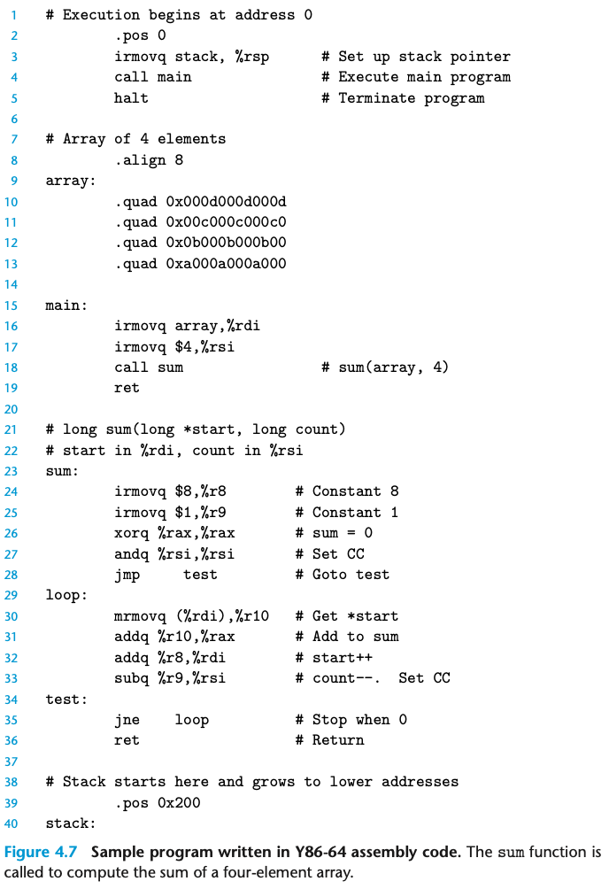
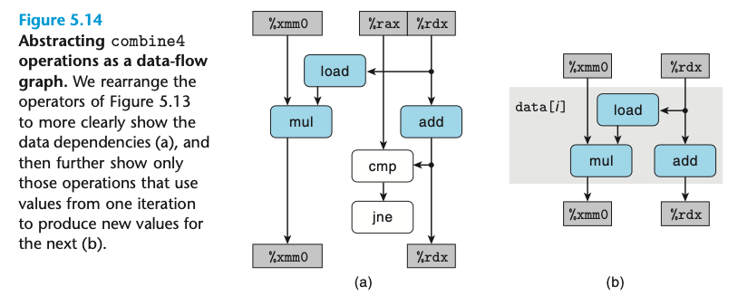
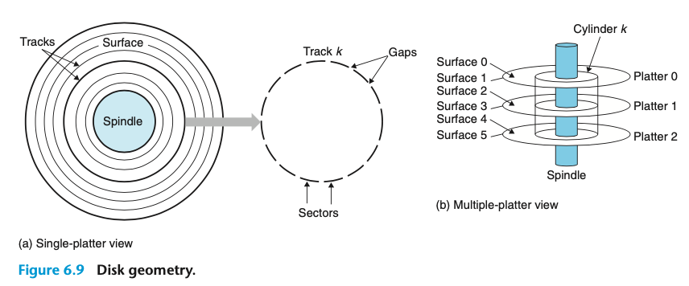
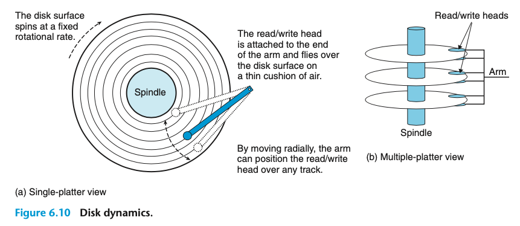
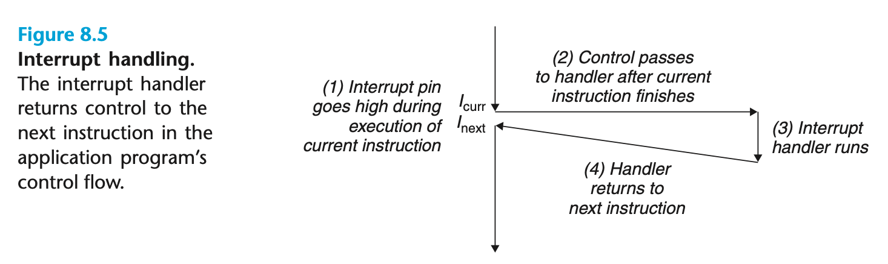
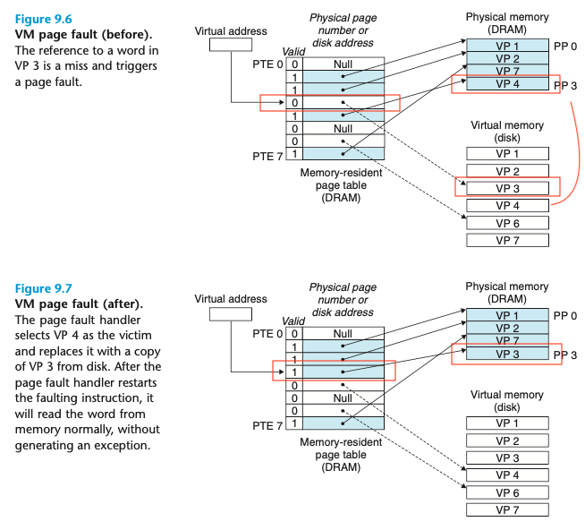
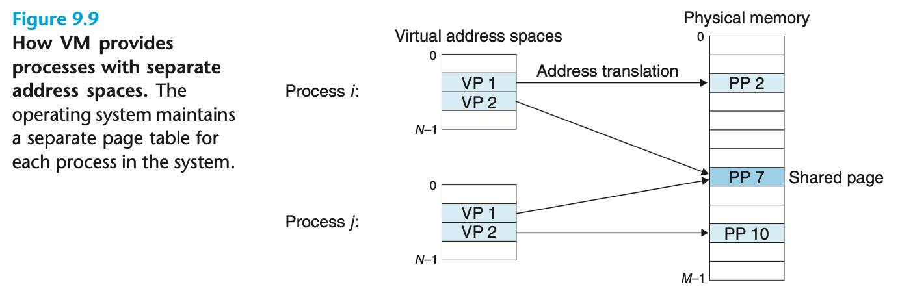
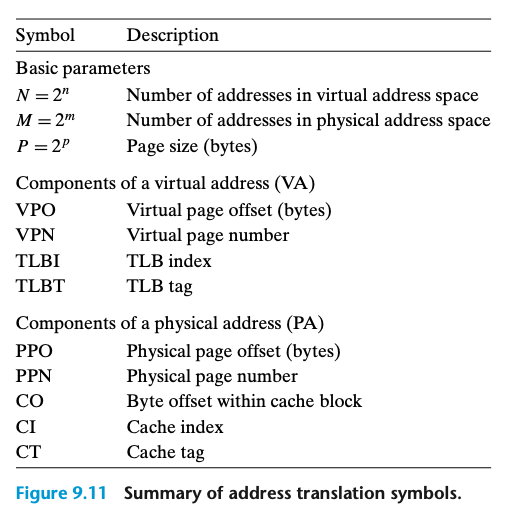
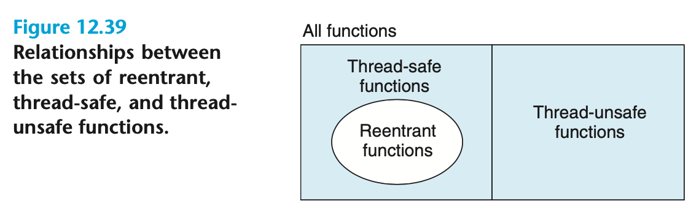

Table of Contents
- 1. DONE A Tour of Computer Systems
- 1.1. Information Is Bits + Context
- 1.2. Programs Are Translated by Other Programs into Different Forms
- 1.3. It Pays to Understand How Compilation Systems Work
- 1.4. Processors Read and Interpret Instructions Stored in Memory
- 1.5. Caches Matter
- 1.6. Stoage Device Form a Hierarchy
- 1.7. The Operating System Manages the Hardware
- 1.8. System Communicate with Other Systems Using Networks
- 1.9. Important Themes
- 1.10. Summary
- 2. DONE Representing and Manipulating Informaition
- 3. DONE Machine-Level Representation of Programs
- 3.1. A Historical Perspective
- 3.2. Program Encodings
- 3.3. Data Formats
- 3.4. Accessing Information
- 3.5. Arithmetic and Logical Operations
- 3.6. Control
- 3.7. Procedures
- 3.8. Array Allocation and Access
- 3.9. Heterogeneous Data Structures
- 3.10. Combining Control and Data in Machine-Level Programs
- 3.11. Floating-Point Code
- 3.11.1. Floating-Point Movement and Conversion Operations
- 3.11.2. Floating-Point Code in Procedures
- 3.11.3. Floating-Point Arithmetic Operations
- 3.11.4. Defining and Using Floating-Point Constants
- 3.11.5. Using Bitwise Operations in Floating-Point Code
- 3.11.6. Floating-Point Comparison Operations
- 3.11.7. Observations about Floating-Point Code
- 3.12. Summary
- 4. DONE Processor Architecuture
- 4.1. The Y86-64 Instruction Set Architecture
- 4.2. Logic Design and the Hardware Control Language HCL
- 4.3. Sequential Y86-64 Implementations
- 4.4. General Principles of Pipelining
- 4.5. Pipelined Y86-64 Implementations
- 4.5.1. SEQ+: Rearranging the Computation Stages
- 4.5.2. Inserting Pipepine Registers
- 4.5.3. Rearranging and Relabeling Signals
- 4.5.4. Next PC Prediction
- 4.5.5. Pipeline Hazards
- 4.5.6. Exception Handling
- 4.5.7. PIPE Stage Implementations
- 4.5.8. Pipeline Control Logic
- 4.5.9. Performance Analysis
- 4.5.10. Unfinished Business
- 4.6. Summary
- 5. DONE Optimizing Program Performance (Intel Core i7 Haswell)
- 5.1. Capabilities and Limitations of Optimizing Compilers
- 5.2. Expressing Program Performance
- 5.3. Program Example
- 5.4. Eliminating Loop Inefficiencies
- 5.5. Reducing Procedure Calls
- 5.6. Eliminating Unneeded Memory References
- 5.7. Understanding Modern Processors
- 5.8. Loop Unrolling
- 5.9. Enhancing Parallelism
- 5.10. Summary of Results for Optimizing Combining Code
- 5.11. Some Limiting Factors
- 5.12. Understanding Memory Performance
- 5.13. Life in the Real World: Performance Improvement Techniques
- 5.14. Identifying and Eliminating Performance Bottlenecks
- 5.15. Summary
- 6. DONE The Memory Hierarchy
- 7. DONE Linking
- 7.1. DONE Compiler Drivers
- 7.2. DONE Static Linking
- 7.3. DONE Object Files
- 7.4. DONE Relocatable Object Files
- 7.5. DONE Symbols and Symbol Tables
- 7.6. DONE Symbol Resolution
- 7.7. DONE Relocation
- 7.8. DONE Executable Object Files
- 7.9. DONE Loading Executable Object Files
- 7.10. DONE Dynamic Linking with Shared Libraries (common used)
- 7.11. DONE Loading and Linking Shared Libraries from Applications
- 7.12. DONE Position-Independent Code (PIC)
- 7.13. DONE Library Interpositioning
- 7.14. DONE Tools for Manipulating Object Files
- 8. DONE Exceptional Control Flow
- 9. DONE Virtual Memory
- 9.1. DONE Physical and Virtual Addressing
- 9.2. DONE Address Spaces
- 9.3. DONE VM as a Tool for Caching
- 9.4. DONE VM as a Tool for memory Management
- 9.5. DONE VM as a Tool for Memory Protection
- 9.6. DONE Address Translation
- 9.7. DONE Case Study: The Intel Core i7/Linux Memory System
- 9.8. DONE Memory Mapping
- 9.9. DONE Dynamic Memory Allocation
- 9.9.1. DONE The
mallocandfreeFunction - 9.9.2. DONE Why Dynamic Memory Allocation?
- 9.9.3. DONE Allocator Requirements and Goals
- 9.9.4. DONE Fragmentation
- 9.9.5. DONE Implementation Issues
- 9.9.6. DONE Implicit Free Lists
- 9.9.7. DONE Placing Allocated Blocks
- 9.9.8. DONE Splitting Free Blocks
- 9.9.9. DONE Getting Additional Heap Memory
- 9.9.10. DONE Coalescing Free Blocks
- 9.9.11. DONE Coalescing with Boundary Tags
- 9.9.12. DONE Putting It Together: Implementing a Simple Allocator
- 9.9.13. DONE Explicit Free Lists
- 9.9.14. DONE Segregated Free Lists (one \(\rightarrow\) multiple idea)
- 9.9.1. DONE The
- 9.10. DONE Garbage Collection
- 9.11. DONE Common Memory-Related Bugs in C Programs
- 9.11.1. Dereferencing Bad Pointers
- 9.11.2. Reading Uninitialized Memory
- 9.11.3. Allowing Stack Buffer Overflows
- 9.11.4. Assuming That Pointers and the Objects They Point to Are the Same Size
- 9.11.5. Making Off-by-One Errors
- 9.11.6. Referencing a Pointer Instead of the Object It Points To
- 9.11.7. Misunderstanding Pointer Arithmetic
- 9.11.8. Referencing Nonexistent Variables
- 9.11.9. Referencing Data in Free Heap Blocks
- 9.11.10. Introducing Memory Leaks
- 10. System-Level I/O
- 10.1. Unix I/O
- 10.2. Files
- 10.3. Opening and Closing Files
- 10.4. Reading and Writting Files
- 10.5. Robust Reading and Writing with the RIO(Robust I/O) Package
- 10.6. Reading File Metadata
- 10.7. Reading Directory Contents
- 10.8. Sharing Files
- 10.9. I/O Redirection
- 10.10. Standard I/O
- 10.11. Putting It Together: Which I/O Functions Should I Use?
- 11. Networking Programming
- 11.1. The Client-Server Programming Model
- 11.2. Networks
- 11.3. The Global IP Internet
- 11.4. The Socket Interface
- 11.4.1. Socket Address Structures
- 11.4.2. The
socketFunction - 11.4.3. The
connectFunction - 11.4.4. The
bindFunction - 11.4.5. The
listenFunction - 11.4.6. The
acceptFunction - 11.4.7. Host and Service Conversion
- 11.4.8. Helper Functions for the Sockets Interface
- 11.4.9. TODO Example Echo Client and Server
- 11.5. Web Servers
- 11.6. DONE Putting It Together: The TINY Web Server
- 12. Concurrent Programming
1. DONE A Tour of Computer Systems
computer system = hardware + systems software
Specific implementations of systems change over time, but the underlying concepts do not. All computer systems have similar hardware and software components that perform similar functions.
hello.c
#include <stdio.h>
int main()
{
printf("hello, world\n");
return 0;
}
1.1. Information Is Bits + Context
Our hello progam begins life as a source program that the programmer creates with an editor and saves it in a text file called hello.c. The source program is a sequence of bits, each with a value of 0 or 1, organized in 8-bit chunks called bytes. Each byte represents some text character in the program.
Files that consits exclusively of ASCII characters are known as text files.
All other files are knowns as binary files.
The representation of hello.c illustrates a fundamental idea: All information in a system is represented as a bunch of bits. The only thing that distinguishes different data objects is the context.
C was developed from the beginning as the system programming languages for Unix. (4 years)
Why C is successive?
- C was closely tied with Unix operating system. (popular base)
- C is small, simple langauge. (simple to learn)
- C is designed for a pratical purpose.
1.2. Programs Are Translated by Other Programs into Different Forms
The hello program begins life as a high-level C program because it can be read and understood by human beings in that form. However, in order to run hello.c on the system, the individual C statements must be translated by other programs into a sequence of low-level machine-language instructions. These instructions are then packaged in a form called an executable object program and stored as a binary disk file. Object programs are also referred to as executable object files.
On a Unix system, the translation from source file to object file is performed by a compiler driver:
gcc -o hello hello.c
Here, the GCC compiler driver reads the source file hello.c and translates it into an executable object file hello. The translation is performed in sequence of four phases in Figure 1.3. The programs that perform the four phases (preprocessor, compiler, assembler, and linker) are known collectively as the compilation system.
- Preprocessing phase.
- The proprocessor (cpp) modifies the orignal C program according to directives that begins with the '#' character.
- Compilation phase.
- The compiler (cc1) translates the text file hello.i into the text file hello.s, which contains an assembly-language program.
- Assembly phase.
- The assembler (as) translates hello.s into machine-language instructions, packages them into a form known as a relocatable object program, and stores the result in the object file hello.o.
- Linking phase.
- Notice that our hello program calls the printf function, which is part of the standard C library provided by every C compiler.
The printf function resides in a separate precompiled object file called printf.o, which must somehow be merged with our hello.o program. The linker (ld) handles this merging.
The result is the hello file.
1.3. It Pays to Understand How Compilation Systems Work
- Optimizing program performance;
- Understanding link-time errors;
- Avoiding security holes;
1.4. Processors Read and Interpret Instructions Stored in Memory
./hello
1.4.1. Hardware Organization of a System
To understand what happens to our hello program when we run it, we need to understand the hardware organization of a tiypical system.
- Buses
Running throughout the system is a collection of electrical conduits called buses that carry bytes of information back and forth between the componepts. Buses are typically designed to transfer fixed-size chunks of bytes known as words. The number of bytes in a word (the word size) is a fundamental system parameter that varies across systems. Most machines today have word-sizes of either 4 bytes (32 bits) or 8 bytes (64 bits).
- I/O Devices
Input/output (I/O) devices are the system's connection to the external world. Our example system has four I/O devices:
- a keyboard
- and mouse for user input,
- a display for user output
- a disk drive (or simply disk) for long-term storage of data and programs.
Each I/O device is connected to the I/O bus by either a controller or an adapter. The distinction between the two is mainly one of packaging. Controllers are chip sets in the device itself or on the system's main printed circuit board (often called the motherboard). An adapter is a card that plugs into a slot on the motherboard. Regardlessly, the purpose of each is to transfer information back and forth between the I/O bus and an I/O device.
- a keyboard
- Main Memory
The main memory is a temporary storage device that holds both a program and the data it manipulates while the processor is executing the program. Physically, main memory consists of a collection of dynamic random access memory (DRAM) chips. Logically, memory is organized as a linear array of bytes, each with its own unique address (array index) starting at zero.
- Processor
The central processing unit (CPU), or simply processor, is the engine that interprets (or executes) instructions stored in main memory. At its core is a word-size storage device (or register) called the program counter (PC). At any point in time, the PC points at some machine-language instruction in main memory.
From the time that power is applied to the system until the time that the power is shut off, a processor repeatedly executes the instruction pointed at by the program counter and updates the program counter to point to the next instruction. A processor appears to operate according to a very simple instruction execution model, defined by its instruction set architecture. In this model; instructions execute in strict sequence, and executing a single instruction involves performing a series of steps. The processor reads the instruction from memory pointed at by the program counter (PC), interprets the bits in the instruction, performs some simple operation dictated by the instruction, and then updates the PC to point to the next instruction.
There are only a few of these simple operations, and they revolve around main memory, the register file, and the arithmetic/logic unit (ALU). The register file is a small storage device that consists of a collection of word-size registers, each with its own unique name. The ALU computes new data and address values.
Some examples of the simple operations that CPU might carry out at the request of an instruction:
load
Copy a byte or a word from main memory into a register,
overwriting the previous contents of tlie register.store
Copy a byte or a word from a register to a 1ocation in main
memory, overwriting the previous contents of that location.operate
Copy the contents of two registers to the ALU, perform an
arithmetic operation on the two words, and store the result
in a register, overwriting the previous contents of that
register.jump
Extract a word from the instruction itself and copy that word
into the program counter(PC), overwriting the previous value
of the PC.
1.4.2. 1.4.2 Running the hello Program
Initially, the shell program is executing its instructions, waiting for us to type a command. As we type the character ./hello at the keyboard, the shell program reads each one into a register and then stores it in memory.
When we hit the enter key on the keyboard, the shell knows that we have finished typing the command. The shell then loads the executable hello file by executing a sequence of instructions that copies the code and data in the hello object from disk to main memory. The data includes the string of characters hello, world\n.
Using a technique known as direct memory access (DMA), the data travel directly from disk to main memory, without passing through the processor.
Once the code and data in the hello object file are loaded into memory, the processor begins executing the machine-language instructions in the hello program's main routine. These instructions copy the bytes in the "hello world\n" string from memory to the register file, and from there to the display device, where they are displayed on the screen.
1.5. Caches Matter
An important lesson from this simple example is that a system spends a lot of time moving information from one place to another. The machine instructions in the hello program are originally stored on disk. When the program is loaded, they are copied to main memory. As the processor runs the program, instructions are copied from main memory into the processor. Similarly, the data string hello,world\n, originally on disk, is copied to main memory and then copied from main memory to the display device. From a programmers perspective, much of this copying is overhead that slows down the real work of the program. Thus, a major goal for system designers is to make these copy operations run as fast as possible.
Because of physical laws, larger storage devices are slower than smaller storage devices. And faster devices are more expensive to build than their slower conterparts.
Similarly, a typical register file stores only a few hundred bytes of information, as opposed to billions of bytes in the main memory. However, the processor can read data from the register file almost 100 times faster than from memory. Even more troublesome, as semiconductor technology progresses over the years, this processor-memory gap continues to increase. It is easier and cheaper to make processors run faster than it is to make main memory run faster.
To deal with the processor-memory gap, system designers include smaller, faster storage devices called cache memories (or simply caches) that serve as temporary staging areas for information that the processor is likely to need in the near future.
An L1 cache on the processor chip holds tens of thousands of bytes and can be accessed nearly as fast as the register file. A larger L2 cache with hundreds of thousands to millions of bytes is connected to the processor by a special bus. It might take 5 times longer for the processor to access the L2 cache than the L1 cache, but this is still 5 to 10 times faster than accessing the main memory. The L1 and L2 caches are implemented with a hardware technology known as static random access memory (SRAM).
The idea behind caching is that a system can get the effect of both a very large memory and a very fast one by exploiting locality, the tendency for programs to access data and code in localized regions.
1.6. Stoage Device Form a Hierarchy
This notion of inserting a smaller, faster storage device (e.g., cache memory) between the processor and a larger, slower device (e.g., main memory) turns out to be a general idea.
The main idea of a memory hierarchy is that storage at one level serves as a cache for storage at the next lower level.
1.7. The Operating System Manages the Hardware
Back to our hello example. When the shell loaded and ran the hello program, and when the hello program printed its messages, neither program accessed the keyboard, display, disk, or main memory directly. Rather, they relied on the services provided by the operating system. We can think of the operating system as a layer of software interposed between the application program and the hardware.

The operating system has two primary purposes:
- to protect the hardware from misuse by runnaway application and
- to provide applications with simple and uniform mechanisums for manipulating complicated and often wildly different low-level hardware devices.
The operating system achieves both goals via the fundarmental abstractions: process, virtual memory, and files.
As this figure suggests, files are abstractions for I/O devices, virtual memory is an abstraction for both the main memory and disk I/O devices, and processes are abstractions for the processor, main memory, and I/O devices.
1.7.1. Processes
When a program such as hello runs on a modern system, the operating system provides the illusion that the progam is the only one running on the system. The program appears to have exclusive use of both the processor, main memory, and I/O devices. The processor appears to execute the instructions in the program, one after the other, without interruption. And the code and data of the program appear to be the only objects in the systems memory. These illusions are provided by the notion of a process, one of the most important and successful ideas in computer science.
A process is the operating systems abstraction for a running program. Multiple processes can run concurrently on the same system, and each process appears to have exclusive use of the hardware. By concurrently, we mean that the instructions of one process are interleaved with the instructions of another process.
A single CPU can appear to execute mulitple processes concurrently by having the processor switch among them. The operating system performs this interleaving with a mechanism known as context switching.
The operating system keeps track of all the state information that the process needs in order to run. This state, which is known as the context, includes information such as the current values of the PC, the register file, and the contents of main memory. At any point in time, a uniprocessor system can only execute the code for a single process. When the operating system decides to transfer control from the current process to some new process, it performs a context switch by saving the context of the current process, restoring the context of the new process, and the passing control to the new process.
The new process picks up exactly where it left off. Figure 1.12 shows the basic idea for our example hello scenario.
As Figure 1.12 indicates, the transition from one process to another is managed by the operating system kernel. The kernel is the portion of the operating system code that is always resident in memory. When an application program requires some action by the operating system, such as to read or write a file, it executes a special system call instruction, transferring control to the kernel. The kernel then performs the requested operation and returns back to the application program. Note that the kernel is not a separate process. Instead, it is a collection of code and data structures that the system uses to manage all the processes.
1.7.2. Threads
Although we normally think of a process as having a single control flow, in modern systems a process can actually consist of multiple execution units, called threads, each running in the context of the process and sharing the same code and global data. Threads are an increasingly important programming model because of the requirement for concurrency in network servers, because it is easier to share data between multiple threads than between multiple processes, and because threads are typically more efficient than processes. Multi-threading is also one way to make programs run faster when multiple processors are available.
1.7.3. Virtual Memory
Virtual memory is an abstraction that provides each process with the illusion that it has exclusive use of the main memory. Each process has the same uniform view of memory, which is known as its virtual address space. The virtual address space for Linux processes is shown in Figure 1.13.
The virtual address space seen by each process consists of a number of welldefined areas, each with a specific purpose.
Programming code and data. :: Code begines at the same fixed address for all processes, followed by data location that correspond to global C variables.
The code and data areas are initialized directly from the contents of an executable object file (in our case, the hello executable).
- Heap.
- Unlike the code and data areas, which are fixed in size once the process begins running, the heap expands and contracts dynamically at run time as a result of calles to C standard library routines such as
mallocandfree. - Shared libraries.
- An area that holds the code and data for shared libraries such as the C standard library and the math library.
- Stack.
- The compiler uses it to implement function calles.
Like the heap, the user stack expands and contracts dynamically during the execution of the program.
In particular, each time we call a function, the stack grows.
Each time we return from a function, it contracts. - Kernel virtual memory.
- Application programs are not allowed to read or write the contents of this area or to directly call functions defined in the kernel code.
Instead, they must invoke the kernel to perform these operations.
1.7.4. Files
A file is a sequence of bytes, nothing more and nothing less. Every I/O device, including disks, keyboards, displays, and even networks, is modeled as a file.
This simple and elegant notion of a file is nonetheless very powerful because it provides applications with a uniform view of all the varied I/O devices that might be contained in the system.
1.8. System Communicate with Other Systems Using Networks
In practice, modern systems are often linked to other systems by networks. From the point of veiw of an individual system, the network can be viewed as just another I/O device, as shown in Figure 1.14. When the system copies a sequence of bytes from main memory to the network adapter, the data flow across the network to another machine, instead of, say, to a local disk drive. Similarly, the system can read data sent from other machines and copy these data to its main memory.

1.9. Important Themes
A system is a collection of intertwined (inter-twined) hardware and systems software that must cooperate in order to achieve the ultimate goal of running application programs.
1.9.1. Amdahl's Law
Gene Amdahl made a simple but insightful observation about the effectiveness of improving the performance of one part of a system. This observation has come to be known as Amdahl's law. The main idea is that when we speed up one part of a system, the effect on overall system performance depends on both how significant this part was and how much it sped up.
Consider a system in which executing some application requires time \(T_{old}\). Suppose some part of the sytem requires a fraction \(\alpha\) of this time, and that we improve its performance by a factor of \(k\). That is, the component originally requried time \(\alpha T_{old}\), and it now requires time \((\alpha T_{old})/k\). The overall execution time would be
From this, we can compute the speedup \(S = T_{old}/T_{new}\) as
The math behind the law is so simple. The derivation is also simple. But the importance is the awareness to notice this law.
1.9.2. Concurrency and Parallelism
Throughout the history of digital computers, two demands have been constant forces in driving improvements: we want them to do more, and we want them to run faster. Both of these factors improve when the processor does more things at once. We use the term concurrency to refer to the general concept of a system with multiple, simultaneous activities, and the term parallelism to refer to the use of concurrency to make a system run faster. Parallelism can be exploited at multiple levels of abstraction in a computer system. We highlight three levels here, working from the highest to the lowest level in the system hierarchy.
- Thread-Level Concurrency
When we construct a system consisting of multiple processors all under the control of a single operating system kernel, we have a multiprocessor system.
Multi-core processors have several CPUs (referred to as "cores") integrated onto a single integrated-circuit chip. Figure 1.17 illustrates the organization of a typical multi-core processor.

The chip has four CPU cores, each with its own L1 and L2 caches, and with each L1 cache split into two partsone to hold recently fetched instructions and one to hold data. The cores share higher levels of cache as well as the interface to main memory.
Hyperthreading, sometimes called simultaneous multi-threading, is a technique that allows a single CPU to execute multiple flows of control. It involves having multiple copies of some of the CPU hardware, such as program counters and register files, while having only single copies of other parts of the hardware, such as the units that perform floating-point arithmetic. It enables the CPU to take better advantage of its processing resources. For example, if one thread must wait for some data to be loaded into a cache, the CPU can proceed with the execution of a different thread.
- Instruction-Level Parallelism
At a much lower level of abstraction, modern processors can execute multiple instructions at one time, a property known as instruction-level parallelism.
Processors that can sustain execution rates faster than 1 instruction per cycle are known as superscalar processors.
- Single-Instruction, Multiple-Data (SIMD) Parallelism
At the lowest level, many modern processors have special hardware that allows a single instruction to cause multiple operations to be performed in parallel, a mode known as single-instruction, multiple-data (SIMD) parallelism. For example, recent generations of Intel and AMD processors have instructions that can add 8 pairs of single-precision floating-point numbers (C data type float) in parallel.
1.9.3. The Importance of Abstraction in Computer Systems
The use of abstractions is one of the most important concepts in computer science.
1.10. Summary
A computer system consists of hardware and systems software that cooperate to run application programs. Information inside the computer is represented as groups of bits that are interpreted in different ways, depending on the context. Programs are translated by other programs into different forms, beginning as ASCII text and then translated by compilers and linkers into binary executable files.
Processors read and interpret binary instructions that are stored in main mem- ory. Since computers spend most of their time copying data between memory, I/O devices, and the CPU registers, the storage devices in a system are arranged in a hi- erarchy, with the CPU registers at the top, followed by multiple levels of hardware cache memories, DRAM main memory, and disk storage. Storage devices that are higher in the hierarchy are faster and more costly per bit than those lower in the hierarchy. Storage devices that are higher in the hierarchy serve as caches for devices that are lower in the hierarchy. Programmers can optimize the performance of their C programs by understanding and exploiting the memory hierarchy.
The operating system kernel serves as an intermediary between the application and the hardware. It provides three fundamental abstractions: (1) Files are abstractions for I/O devices. (2) Virtual memory is an abstraction for both main memory and disks. (3) Processes are abstractions for the processor, main memory, and I/O devices.
Finally, networks provide ways for computer systems to communicate with one another. From the viewpoint of a particular system, the network is just another I/O device.
2. DONE Representing and Manipulating Informaition
Modern computers store and process information represented as two-valued singals. These lowly binary digits, or bits, form the basis of the digital revolution. Using decimal notation is natural for 10-fingered humans, but binary values work better when building machines that store and process information. Two-valued singals can readily be represented, stored, and transmitted - for example, as the presence or absence of a hole in a puched card, as a high or low voltage on a wire, or as a magnetic domain oriented clockwise or counterclockwise. The electronic circuitry for storing and performing computations on two-valued signals is very simple and reliable, enabling manufacturers to integrate millions, or even billions, of such circuits on a single silicon chip.
In isolation, a single bit is not very useful. When we group bits together and apply some interpretation that gives meaning to the different possible bit patterns, however, we can represent the elements of any finite set.
We consider the three most important representations of numbers.
- Unsigned encodings are based on traditional binary notation, representing numbers greater than or equal to 0.
- Twos-complement encodings are the most common way to represent signed integers, that is, numbers that may be either positive or negative.
- Floating-point encodings are a base-2 version of scientific notation for representing real numbers.
Computer representations use a limited number of bits to encode a number, and hence some operations can overflow when the results are too large to be represented.
Computers use several different binary representations to encode numeric values.
The C++ programming language is built upon C, using the exact same numeric representations and operations. Everything said in this chapter about C also holds for C++. The Java language definition, on the other hand, created a new set of standards for numeric representations and operations. Whereas the C standards are designed to allow a wide range of implementations, the Java standard is quite specific on the formats and encodings of data.
The practice problems engage you in active learning, helping you put thoughts into action.
2.1. Information Storage
Rather than accessing individual bits in memory, most computers use blocks of 8 bits, or bytes, as the smallest addressable unit of memory. A machine-level program views memory as a very large array of bytes, referred to as virtual memory. Every byte of memory is identified by a unique number, known as its address, and the set of all possible addresses is known as the virtual address space. As indicated by its name, this virtual address space is just a conceptual image presented to the machine-level program. The actual implementation uses a combination of dynamic random access memory (DRAM), flash memory, disk storage, special hardware, and operating system software to provide the program with what appears to be a monolithic byte array.
Pointers are a central feature of C. They provide the mechanism for referencing elements of data structures, including arrays. Just like a variable, a pointer has two aspects: its value and its type. The value indicates the location of some object, while its type indicates what kind of object (e.g., integer or floating-point number) is stored at that location.
2.1.1. Hexadecimal Notation
A single byte consists of 8 bits. In binary notation, its value ranges from \(00000000_2\) to \(11111111_2\). When viewed as a decimal integer, its value ranges from \(0_{10}\) to \(255_{10}\). Neither notation is very convenient for describing bit patterns. Binary notation is too verbose, while with decimal notation it is tedious to convert to and from bit patterns. Instead, we write bit patterns as base-16, or hexadecimal numbers. Hexadecimal (or simply hex) uses digits 0 through 9 along with characters A through F to represent 16 possible values. Figure 2.2 shows the decimal and binary values associated with the 16 hexadecimal digits. Written in hexadecimal, the value of a single byte can range from \(00_{16}\) to \(FF_{16}\).

In C, numeric constants starting with 0x or 0X are interpreted as being in hexadecimal. The characters A through F may be written in either upperor lowercase. For example, we could write the number FA1D37B16 as 0xFA1D37B, as 0xfa1d37b, or even mixing upper- and lowercase (e.g., 0xFa1D37b).
2.1.2. Data Sizes
Every computer has a word size, indicating the nominal size of pointer data. Since a virtual address is encoded by such a word, the most important system parameter determined by the word size is the maximum size of the virtual address space. That is, for a machine with a w-bit word size, the virtual addresses can range from 0 to \(2^w 1\), giving the program access to at most \(2^w\) bytes.
The C language supports multiple data formats for both integer and floating-point data. Figure 2.3 shows the number of bytes typically allocated for different C data types.
To avoid the vagaries of relying on typical sizes and different compiler settings, ISO C99 introduced a class of data types where the data sizes are fixed regardless of compiler and machine settings. Among these are data types int32_t and int64_t, having exactly 4 and 8 bytes, respectively. Using fixed-size integer types is the best way for programmers to have close control over data representations.
Most of the data types encode signed values, unless prefixed by the keyword unsigned or using the specific unsigned declaration for fixed-size data types. The exception to this is data type char. Although most compilers and machines treat these as signed data, the C standard does not guarantee this. Instead, as indicated by the square brackets, the programmer should use the declaration signed char to guarantee a 1-byte signed value. In many contexts, however, the programs behavior is insensitive to whether data type char is signed or unsigned.
Declaring pointers
For any data type T , the declaration
T *p;
indicates that p is a pointer variable, pointing to an object of type T . For example,
char *p;
is the declaration of a pointer to an object of type char
Figure 2.3 also shows that a pointer (e.g., a variable declared as being of type char *) uses the full word size of the program. Most machines also support two different floating-point formats: single precision, declared in C as float, and double precision, declared in C as double. These formats use 4 and 8 bytes, respectively.
2.1.3. Addressing and Byte Ordering
For program objects that span multiple bytes, we must establish two conventions: what the address of the object will be, and how we will order the bytes in memory.
In virtually all machines, a multi-byte object is stored as a contiguous sequence of bytes, with the address of the object given by the smallest address of the bytes used. For example, suppose a variable x of type int has address 0x100; that is, the value of the address expression &x is 0x100. Then (assuming data type int has a 32-bit representation) the 4 bytes of x would be stored in memory locations 0x100, 0x101, 0x102, and 0x103.
For ordering the bytes representing an object, there are two common conventions:
- big endian
- the most significant byte comes first
- little endian
- the least significant byte comes first
Suppose the variable x of type int and at address 0x100 has a hexadecimal value of 0x01234567. The ordering of the bytes within the address range 0x100 through 0x103 depends on the type of machine:
Most Intel-compatible machines operate exclusively in little-endian mode. On the other hand, most machines from IBM and Oracle (arising from their acquisition of Sun Microsystems in 2010) operate in big-endian mode.
For most application programmers, the byte orderings used by their machines are totally invisible; programs compiled for either class of machine give identical results. At times, however, byte ordering becomes an issue.
Cases where byte ordering matters:
- network data
- inspecting machine-level programs
- programs are written that circumvent the normal type system
In the C language, this can be done using a cast or a union to allow an object to be referenced according to a different data type from which it was created. Such coding tricks are strongly discouraged for most application programming, but they can be quite useful and even necessary for system-level programming.
2.1.4. Representing Strings
A string in C is encoded by an array of characters terminated by the null (having value 0) character. Each character is represented by some standard encoding, with the most common being the ASCII character code. Thus, if we run our routine show_bytes with arguments "12345" and 6 (to include the terminating character), we get the result 31 32 33 34 35 00. Observe that the ASCII code for decimal digit x happens to be 0x3x, and that the terminating byte has the hex representation 0x00. This same result would be obtained on any system using ASCII as its character code, independent of the byte ordering and word size conventions. As a consequence, text data are more platform independent than binary data.
2.1.5. Representing Code
Here we find that the instruction codings are different. Different machine types use different and incompatible instructions and encodings. Even identical processors running different operating systems have differences in their coding conventions and hence are not binary compatible. Binary code is seldom portable across different combinations of machine and operating system.
A fundamental concept of computer systems is that a program, from the perspective of the machine, is simply a sequence of bytes. The machine has no information about the original source program, except perhaps some auxiliary tables maintained to aid in debugging.
2.1.6. Introduction to Boolean Algebra
Since binary values are at the core of how computers encode, store, and manipulate information, a rich body of mathematical knowledge has evolved around the study of the values 0 and 1. This started with the work of George Boole (1815 1864) around 1850 and thus is known as Boolean algebra. Boole observed that by encoding logic values true and false as binary values 1 and 0, he could formulate an algebra that captures the basic principles of logical reasoning.
The simplest Boolean algebra is defined over the two-element set {0, 1}. Figure 2.7 defines several operations in this algebra.
Claude Shannon (19162001), who later founded the field of information theory, first made the connection between Boolean algebra and digital logic.
7654 3210 => 0,3,5,6
a = [0110 1001]
2.1.7. Bit-Level Operations in C
One useful feature of C is that it supports bitwise Boolean operations.
The ~ operation is not neccessary to convert hexadecimal to binary expression. For example ~0x41=0xBE 4+B=F 1+E=F ~0x00=0xFF 0+F=F
2.1.8. Logical Operations in C
C also provides a set of logical operators ||, &&, and !, which correspond to the or, and, and not operations of logic. The logical operations treat any nonzero argument as representing true and argument 0 as representing false. They return either 1 or 0, indicating a result of either true or false, respectively.
2.1.9. Shift Operation in C
For an operand \(x\) having bit representation \([x_{w-1}, x_{w-2},\dots,x_0]\), the C expression \(x << k\) yields a value with bit representation \([x_{w-k-1},x_{w-k-2},\dots,x_0,0,\dots,0]\). That is, \(x\) is shifted \(k\) bits to the left, dropping off the \(k\) most significant bits and filling the right end with \(k\) zeros. The shift amount should be a value between 0 and \(w-1\).
There is a corresponding right shift operation, written in C as \(x >> k\), but it has a slightly subtle behavior. Generally, machines suppoert tow froms of right shift:
- Logical
- A logical right shift fills the left end with \(k\) zeros, giving a result \([0,\dots,0,x_{w-1},x_{w-1},\dots,x_k]\).
- Arithmetic
- An arithmetic right shift fills the left end with \(k\) representation of the most significant bit, giving a result \([x_{w-1},\dots,x_{w-1},x_{w-1},x_{w-2},\dots,x_k]\).
The C standards do not precisely define which type of right shift should be used with signed numberseither arithmetic or logical shifts may be used. This unfortunately means that any code assuming one form or the other will potentially encounter portability problems. In practice, however, almost all compiler/machine combinations use arithmetic right shifts for signed data, and many programmers assume this to be the case. For unsigned data, on the other hand, right shifts must be logical. In contrast to C, Java has a precise definition of how right shifts should be performed. The expression x >> k shifts x arithmetically by k positions, while x >>> k shifts it logically.
2.2. Integer Representations
The subscript \(w\) denotes the number of bits in the data representation.
2.2.1. Integral Data Types
C supports a variety of integral data types – ones that represent finite ranges of integers.
The C standards define minimum ranges of values that each data type must be able to represent. As shown in Figure 2.11, their ranges are the same or smaller than the typical implementations shown in Figures 2.9 and 2.10.
2.2.2. Unsigned Encodings
\(\vec{x} = [x_{w-1},x_{w-2},\dots,x_0]\) denotes a bit vector. Treating \(\vec{x}\) as a number written in binary notation, we obtain the unsigned interpretation of \(\vec{x}\). In this encoding, each bit \(x_i\) has value 0 or 1, with the latter case indicating that value \(2^i\) should be included as part of the numeric vlaue. We can expression this interpretation as a function \(B2U_w\).
range:\([0,2^w-1]\).
PRINCIPLE: Uniqueness of unsigned encoding
Function \(B2U_w\) is a bijection.
2.2.3. Two's-Complement Encodings

It is defined by interpreting the most significant bit of the word to have negative weight. The most significant bit \(x_{w-1}\) is also called the sign bit.

range: \([-2^{w-1}, 2^{w-1}-1]\)
PRINCIPLE: Uniqueness of two's-complement encoding
Function \(B2T_w\) is a bijection.
A fow points are worth highlighting about these numbers.
- The two's-complement range is asymmetric: \(|TMin| = |TMax|+1\)
- This asymmetry arises because half the bit patterns represent negative numbers, while half represent nonnegative numbers.
Since 0 is nonnegative, this means that it can represent one less positigve number than negative. - The maximum unsigned value is just over twice the maximum two's-complement value: \(UMax = 2TMax + 1\).
- All of the bit patterns that denote negative numbers in twos-complement notation become positive values in an unsigned representation.
The C standards do not require signed integers to be represented in twos-complement form, but nearly all machines do so. The file <limits.h> in the C library defines a set of constants delimiting the ranges of the different interger data types for the particular machine on which the compiler is running.

\(12345 = 3\times 16^3 + 0\times 16^2 + 3\times 16^2 + 9\times 16^0 \rightarrow 0\mathrm{x}3039\)
\(32768 - 12345 = 20423\)
\(20423 = 4\times 16^3 + F\times 16^2 + C\times 16^1 + 7\times 16^0 \rightarrow 0\mathrm{x}4FC7\)
plus the negative sign:
\(-12345 \rightarrow 1100 1111 1100 0111\)
2.2.4. Conversions between Signed and Unsigned
C allows casting between different numeric data types.
For example, suppose variable x is declared as int and u as unsigned. The expression (unsigned) x converts the value of x to an unsigned value, and (int) u converts the value of u to a signed integer.
What should be the effect of casting signed value to unsigned, or vice versa? For most implementations of C, the answer to this question is based on a bit-level perspective, rather than on a numeric one.
#include <stdio.h>
int main()
{
short int v = -12345;
unsigned short uv = (unsigned short) v;
printf("v = %d, uv = %u\n",v,uv);
return 0;
}
/* v = -12345, uv = 53191 */
What we see here is that the effect of casting is to keep the bit values identical but change show these bits are interpreted. Casting from short to unsigned short changed the numeric value, but not the bit representation.
#include <stdio.h>
int main()
{
unsigned u = 4294967295u;
int tu = (int) u;
printf("u = %u, tu = %d\n", u, tu);
return 0;
}
/* u = 4294967295, tu = -1 */
In casting from unsigned to int, the underlying bit representation stays the same.
This is a general rule for how most C implementations handle conversions between signed and unsigned numbers with the same word sizethe numeric values might change, but the bit patterns do not.


2.2.5. Signed versus Unsigned in C
Generally, most numbers are signed by default.
const int a = 12345; /* signed constant */ const int b = 12345U; /* unsigned constant */ const int c = 12345u; /* unsigned constant */
C allows conversion between unsigned and signed. Conversions can happen duo to explicit:
int tx, ty; unsigned ux, uy; tx = (int) ux; uy = (unsigned) ty;
Alternatively, they can happen implicitly when an expression of one type is assigned to a variable:
int tx, ty; unsigned ux, uy; tx = ux; /* Cast to singed */ uy = ty; /* Cast to unsigned */
When printing numeric values with printf, the directives %d, %u, and %x are used to print a number as a signed decimal, an unsigned decimal, and in hexadecimal format, respectively. Note that printf does not make use of any type information, and so it is possible to print a value of type int with directive %u and a value of type unsigned with directive %d.
int x = -1;
unsigned u = 2147483648; /* 2 to the 31st */
printf("x = %u = %d\n", x, x);
printf("u = %u = %d\n", u, u);
When an operation is performed where one operand is signed and the other is unsigned, C implicitly casts the signed argument to unsigned and performs the operations assuming the numbers are nonnegative. This convention makes little difference for standard arithmetic operations, but it leads to nonintuitive results for relational operators such as < and >.
2.2.6. Expanding the Bit Representation of a Number
One point worth making is that the relative order of conversion from one data size to another and between unsigned and signed can affect the behavior of a program.
#include <stdio.h>
typedef unsigned char *byte_pointer;
/* size_t, preferred deta type for expressing the sizes of data structures */
void
show_bytes (byte_pointer start, size_t len)
{
int i;
for (i = 0; i < len; i++)
printf (" %.2x", start[i]); /* an integer should be printed in hexadecimal with at least 2 digits */
printf ("\n");
}
int
main ()
{
short sx = -12345; /* -12345 */
unsigned uy = sx; /* Mystery! */
printf ("uy = %u:\t", uy);
show_bytes ((byte_pointer) & uy, sizeof (unsigned));
return 0;
}
/* uy = 4294954951: c7 cf ff ff */
/* little-endian */
This shows that, when converting from short to unsigned, the program first changes the size and then the type. That is, (unsigned) sx is equivalent to (unsigned) (int) sx, evaluating to 4294954951, not (int) (unsigned short) sx, which evaluates to 53191. Indeed, this conversion is required by the C standards.
2.2.7. Truncating Numbers

2.2.8. Advice on Signed versus Unsigned
The implicit casting of signed to unsigned leads to some nonintuitive behavior. Nonintuitive features often lead to program bugs, and ones involving the nuances of implicit casting can be especially difficult to see.
One way to avoid such bugs is to never use unsigned numbers.
In fact, few languages other than C suppoert unsigned integers.
Unsigned values are very useful when we want to think of words as just collections of bits with no numeric interpretation.
2.3. Integer Arithmetic
2.3.1. Unsigned Addition
Some programming languages, such as Lisp, support arbitrary size arithmetic to allow integers of any size (within the memory limits of the computer, of course.) More commonly, programming languages support fixed-size arithmetic, and hence operations such as addition and multiplication differ from their counterpart operations over integers.
Define the opertaion \(+_w^u\) for arguments \(x\) and \(y\), where \(0 \le x,y \le 2^w\), as the result of truncating the integer sum \(x + y\) to be \(w\) bits long and then viewing the result as an unsigned number.
An arithmetic opertaion is said to overflow when the full integer result cannot fit within word size limits of the data type.
When executing C programs, overflows are not signaled as errors. At times, however, we might wish to determine whether or not overflow has occured.
Modular addition form a mathematical structure known as an abelian group. That is, it is commutative and associative; it has an identity element 0, and every element has an additive inverse. Let us consider the set of $w$-bit unsigned numbers with addition operation \(+_w^u\). For every value \(x\), there must be some value \(-_w^ux\) such that \(-_w^ux +_w^u x=0\).
2.3.2. Two's-Complement Addition
Define \(x +_w^t y\) to be the result of truncating the integer sum \(x + y\) to be \(w\) bits long and then viewing the result as a two's-complement number.


The w-bit two's-complement sum of two numbers has the exact same bit-level representation as the unsigned sum. In fact, most computers use the same machine instrcution to perform either unsigned or signed addition.
The ensence is the truncation on bit-level representation. The principle show that appearance after the bit-level truncation.

2.3.3. Two's-complement Negation
Every number x in the range \(TMin_w \le x \le TMax_w\) has an additive inverse under \(+_w^t\) denoted by \(-_w^t\).


2.3.4. Unsigned Multiplication
2.3.5. Two's-Complement Multiplication

PRINCIPLE: Bit-level equivalence of unsigned and two's-complement multiplication.
2.3.6. Multiplying by Constants
Historically, the integer multiply instruction on many machines was fairly slow, requiring 10 or more clock cycles, whereas other integer operationssuch as addition, subtraction, bit-level operations, and shiftingrequired only 1 clock cycle. Even on the Intel Core i7 Haswell we use as our reference machine, integer multiply requires 3 clock cycles. As a consequence, one important optimization used by compilers is to attempt to replace multiplications by constant factors with combinations of shift and addition operations.

I have a doubt here. All the numbers are stored in binary representation. Just compute them with bit-level operations.
Generalizing to the expression \(x * K\), for some constant \(K\). The compiler can express the binary representation of \(K\) as an alternating sequence of zeroes and ones:
For example, 14 can be written as \([(0...0)(111)(0)]\).
Consider a run of ones from bit position \(n\) down to bit position \(m (n \ge m)\). For the case of 14, we have \(n=3\) and \(m=1\). We can compute the effect of these bits on the product using either of two different forms:
Form A: \((x < < n) + ( x < < (n-1)) + \cdots (x < < m)\)
Form B: \((x < < (n+1)) - (x < < m)\)
For example, for 14 with binary representation of \([(0...0)(111)(0)]\),
So the expression \(x * 14\) can be computed as
or
The trade-off between using combinations of shifting, adding, and substracting versus a signle multiplication instruction depends on the relative speeds of these instructions, and these can highly machine dependent. Most compilers on perform this optimization when a small number of shifts, adds, and substractions suffice.
For a run of ones starting at bit position n down to bit position m (n m), we saw that we can generate two forms of code, A and B. How should the compiler decide which form to use? Assuming that addition and subtraction have the same performance, the rule is to choose form A when n=m, either form when n=m+1, and form B when n > m + 1. The justification for this rule is as follows. Assume first that m > 0. When n = m, form A requires only a single shift, while form B requires two shifts and a subtraction. When n = m + 1, both forms require two shifts and either an addition or a subtraction. When n > m + 1, form B requires only two shifts and one subtraction, while form A requires n m + 1 > 2 shifts and n m > 1 additions. For the case of m = 0, we get one fewer shift for both forms A and B, and so the same rules apply for choosing between the two.
2.3.7. Dividing by Powers of 2
Integer division on most machines is even slower than integer multiplication – requiring 30 or even more clock cycles.
Integer division always rounds towards zero. For \(x \ge 0\) and \(y>0\), integer division should yield \(\lfloor x/y \rfloor\), while for \(x<0\) and \(y>0\), it should yield \(\lceil x/y \rceil\). That is, it should round down a positive result but round up a negative one. (arithmetic computation)

(computer arithmetic computation)

We can correct for the improper rounding that occurs when a negative number is shifted right by "biasing" the value before shifting.

The bias thechnique exploits the property that \(\lceil x/y \rceil = \lfloor (x+y-1)/y \rfloor\) for integer \(x\) and \(y\) such that \(y>0\).
To prove \(\lceil x/y \rceil = \lfloor (x+y-1)/y \rfloor\).
Suppose that \(x = qy + r\), where \(0 le r < y\).
Giving \((x+y-1)/y = q + (r+y-1)/y\), and so \(\lfloor (x+y-1)/y \rfloor = q + \lfloor (r+y-1)/y \rfloor\).
If \(r=0\), then \(y-1 < y \Longrightarrow \lfloor (r+y-1)/y \rfloor = 0\).
If \(r>0\), then \(y < r+y-1<2y \Longrightarrow \lfloor (r+y-1)/y \rfloor =1\).
Division by a power of 2 can be implemented using logical or arithmetic right shifts. Unfortunately, this approach does not generalize to division by arbitrary constants. Unlike multiplication, we cannot express division by arbitrary constants K in terms of division by powers of 2.
2.3.8. Final Thoughts on Integer Arithmetic
2.4. Floating Point
A floating-point representation encodes rational numbers of the form \(V = x \times 2^y\).
Up until the 1980s, every computer manufacturer devised its own conventions for how floating-point numbers were represented and the details of the operations performed on them. In addition, they often did not worry too much about the accuracy of the operations, viewing speed and ease of implementation as being more critical than numerical precision. All of this changed around 1985 with the advent of IEEE Standard 754, a carefully crafted standard for representing floating-point numbers and the operations performed on them. This effort started in 1976 under Intels sponsorship with the design of the 8087, a chip that provided floating-point support for the 8086 processor. Intel hired William Kahan, a professor at the University of California, Berkeley, as a consultant to help design a floating-point standard for its future processors. They allowed Kahan to join forces with a committee generating an industry-wide standard under the auspices of the Institute of Electrical and Electronics Engineers (IEEE). The committee ultimately adopted a standard close to the one Kahan had devised for Intel. Nowadays, virtually all computers support what has become known as IEEE floating point. This has greatly improved the portability of scientific application programs across different machines.
2.4.1. Fractional Binary Numbers
Let us first examine the more familiar decimal notation. Decimal notation uses a representation of the form
where each decimal digit \(d_i\) ranges between 0 and 9. This notation represents a value \(d\) defined as
The weighting of the digits is defined relative to the decimal point symbol ('.'), meaning that digits to the left are weighted by nonnegative powers of 10, giving integral values, while digits to the right are weighted by negative powers of 10, giving fractional values.
By anaology, consider a notation of the form
where each binary digit, or bit, \(b_i\) ranges between 0 and 1. This notation represents a number \(b\) defined as
The symbol '.' now becomes a binary point, with bits on the left being weighted by nonnegative powers of 2, and those on the right being weighted by negative powers of 2.
According to the equation (\(\ref{eq:floating-point}\)), shifting the binary point one position to the left has the effect of dividing the number by 2. Similarly, shifting the binary point one position to the right has the effect of multiplying the number by 2.
Note:
Fractional binary notation can only represent numbers that can be written \(x \times 2^y\). Other values can only be approximated.
How to convert decimal representation to binary representation?
Multiply by 2 and take \(b_0\)'s value.
For example:
3.1875
\(0.1875 \times 2 = 0.375 \Longrightarrow .0\)
\(0.375 \times 2 = 0.75 \Longrightarrow .00\)
\(0.75 \times 2 = 1.5 \Longrightarrow .001\)
\(0.5 \times 2 = 1.0 \Longrightarrow .0011\)
How to convert Fractional value to binary representation?
Convert the denominator to \(2^n\).
For example:
\(3\frac{3}{16}\)
\(3 \Longrightarrow 0011\)
\(3\frac{3}{16} \Longrightarrow 11.0011\)
2.4.2. IEEE Floating-Point Representation
Positional notation would not be efficient for representing very large numbers. For example, the representation of \(5 \times 2^{100}\) would consist of the bit pattern 101 followed by 100 zeros. Instead, we would like to represent numbers in a form \(x \times 2^y\) by giving the values of x and y.
In the single-precision floating-point format fields s,exp,frac are 1, \(k=8\) and \(n=23\) bits each yielding a 32-bit representation. In the double-precision floating-point format fields s,exp,frac are 1, \(k=11\) and \(n=52\) bits each yielding a 64-bit representation.
The value encoded by a given bit representation can be divided into three different cases, depending on the value of exp.
- Case 1: Normalized Values
- This is the most common case. It occurs when the bit pattern of
expis neither all zeroes nor all ones. In this case, the exponent field interpreted as representing a signed integer in biased form. That is, the exponent value is \(E = e-Bias\), where \(e\) is the unsigned number having bit representation \(e_{k-1}\cdots e_1 e_0\) and \(Bias\) is a bias value equal to \(2^{k-1} -1\). This yields exponent ranges from 126 to +127 for single precision and 1022 to +1023 for double precision.
The fraction fieldfracis interpreted as representing the fractional value \(f\), where \(0 \le f < 1\), having binary representation \(0.f_{n-1}\cdots f_1 f_0\). The significand is defined to be \(M = 1+f\). This is sometimes called an implied leading 1 representation, becuase we can view \(M\) to be the number with binary representation \(1.f_{n-1} f_{n-1} \cdots f_0\). This representation is a trick for getting an additional bit of precision for free, since we can always adjust the exponent \(E\) so that significand \(M\) is in the range \(1 \le M < 2\) (assuming there is no overflow). We therefore do not need to explicitly represent the leading bit, since it always equals 1. - Denormalized Values
- When the exponent field is all zeros, the represented number is in denormalized form. In this case, the exponent value is \(E = 1 Bias\), and the significand value is \(M = f\) , that is, the value of the fraction field without an implied leading 1.
Denormalized numbers serve two pruposes:
- They provide a way to represent numeric value 0, since with a normalized number we must always have \(M 1\), and hence we cannot represent 0.
- To represent numbers that are very close to 0.0. They provide a property known as gradual underflow in which possible numeric values are spaced evenly near 0.0.
- They provide a way to represent numeric value 0, since with a normalized number we must always have \(M 1\), and hence we cannot represent 0.
- Special Values
- The exponent field is all ones.
- When the fraction field is all zeros, the resulting values represent infinity, either \(+\infty\) when s = 0 or \(-\infty\) when s = 1.
- When the fraction field is nonzero, the resulting value is called a NaN , short for not a number."
- When the fraction field is all zeros, the resulting values represent infinity, either \(+\infty\) when s = 0 or \(-\infty\) when s = 1.
2.4.3. Example Numbers
Figure 2.35 shows some examples for a hypothetical 8-bit floating-point format having k = 4 exponent bits and n = 3 fraction bits.
One property of this representation is that if we interpret the bit representation of the values in Figure 2.35 as unsigned integers, they occur in ascending order, as do the values they represent as floating-point numbers. This is no accident – IEEE format was designed so that floating-point numbers could be sorted using an integer sorting routine. A minor difficulty occurs when dealing with negative numbers, since they have a leading 1 and occur in descending order, but this can be overcome without requiring floating-point operations to perform comparisons
Figure 2.36 shows the representations and numeric values of some important single- and double-precision floating-point numbers.
How to convert a integer value into floating-point form? (32-bit representation, k=8, n=23)
For example, 12345 to 12345.0
12345 has hexadecimal representation 0x00003039
binary representation [11000000111001]
We can create a normalized representation by shifting 13 positions to the right of a binary point,
giving \(12345 = 1.1000000111001_2 \times 2^{13}\).
To encode this to IEEE single-precision format, we construct the fraction field by
droping the leading 1 and adding 10 zeros (n=23) to the end, giving binary representation
[10000001110010000000000].
To construct the exponent field, we add bias 127 to 13, giving 140,
which has binary representation [10001100].
We combine this with a sign bit of 0 to get the floating-point representation in binary of
[01000110010000001110010000000000].

2.4.4. Rounding
Floating-point arithmetic can only approximate real arithmetic, since the representation has limited range and precision. Thus, for a value \(x\), we generally want a systematic method of finding the closest matching value \(x'\) that can be represented in the desired floating-point format. This is the task of the rounding operation.
One key problem is to define the direction to round a value that is halfway between two possibilities. For example, if I have $1.50 and want to round it to the nearest dollar, should the result be $1 or $2? An alternative approach is to maintain a lower and an upper bound on the actual number. For example, we could determine representable values \(x^{-}\) and \(x^{+}\) such that the value x is guaranteed to lie between them: \(x^{-} \le x \le x^{+}\). The IEEE floating-point format defines four different rounding modes. The default method finds a closest match, while the other three can be used for computing upper and lower bounds.
Round-to-even (also called round-to-nearest) is the default mode. It attempts to find a closest match. For the halfway between two possible results, round-to-even mode adopts the convention that is rounds the number either upward or downward such that the least significant digit of the result is even.
The other three modes produce guaranteed bounds on the actual value. These can be useful in some numerical applications. Round-toward-zero mode rounds positive numbers downward and negative numbers upward, giving a value \(\hat{x}\) such that \(|\hat{x}| \le |x|\). Round-down mode rounds both positive and negative numbers downward, giving a value \(x^{-}\) such that \(x^{-} \le x\). Round-up mode rounds both positive and negative numbers upward, giving a value x such that \(x \le x^{+}\).
Round-to-even is the default rounding mode, is there any reason to perfer even numbers?
The problem with such a convention is that one can easily imagine scenarios in which rounding a set of data values would then introduce a statistical bias into the computation of an average of the values. Rounding toward even numbers avoids this statistical bias in most real-life situations. It will round upward about 50% of the time and round downward about 50% of the time.
Round-to-even rounding can be applied even when we are not rounding to a whole number. We simply consider whether the least significant digit is even or odd. For example, suppose we want to round decimal numbers to the nearest hundredth. We would round both 1.2350000 and 1.2450000 to 1.24, since 4 is even.
Similarly, round-to-even rounding can be applied to binary fractional numbers. We consider least significant bit value 0 to be even and 1 to be odd. In general, the rounding mode is only significant when we have a bit pattern of the form \(XX\cdots X.Y Y\cdots Y100\), where X and Y denote arbitrary bit values with the rightmost Y being the position to which we wish to round. Only bit patterns of this form denote values that are halfway between two possible results. For example, We would round \(10.11100_2\) up to \(11.00_2\) and \(10.10100_2\) down to \(10.10_2\), since these values are halfway between two possible results, and we prefer to have the least significant bit equal to zero.
2.4.5. Floating-Point Operations
The IEEE standard specifies a simple rule for determing the result of an arithmetic operation such as addtion or mulitplication. Viewing floating-point values \(x\) and \(y\) as real numbers, and some operations \(\odot\) defined over real numbers, the computation should be yield \(Round(x\odot y)\), the result of applying rounding to the exact result of the real operation.
One strength of the IEEE standards method of specifying the behavior of floating-point operations is that it is independent of any particular hardware or software realization. Thus, we can examine its abstract mathematical properties without considering how it is actually implemented.
Addition over real numbers forms an abelian group, but we must consider what effect rounding has on these properties. Let us define \(x +^f y\) to be \(Round(x + y)\). This operation is defined for all values of \(x\) and \(y\), although it may yield infinity even when both \(x\) and \(y\) are real numbers due to overflow. The operation is commutative, with \(x +^f y = y +^f x\) for all values of \(x\) and \(y\). On the other hand, the operation is not associative. For example, with single-precision floating point the expression (3.14+1e10)-1e10 evaluates to 0.0the value 3.14 is lost due to rounding. On the other hand, the expression 3.14+(1e10- 1e10) evaluates to 3.14. As with an abelian group, most values have inverses under floating-point addition, that is, \(x +^f x = 0\). The exceptions are infinities (since $ +∞ - ∞ = NaN$),and $NaN$s,since \(NaN +^f x = NaN\) for any \(x\).
The lack of associativity in floating-point addition is the most important group property that is lacking.
On the other hand, floating-point addition satisfies the following monotonicity property:
if \(a \ge b\), then \(x +^f a \ge x +^f b\) for any values of a,b, and x other than NaN. This property of real (and integer) addition is not obeyed by unsigned or twos-complement addition.
Floating-point multiplication also obeys many of the properties one normally associates with multiplication. Let us define \(x *^f y\) to be \(Round(x \times y)\). This operation is closed under multiplication (although possibly yielding infinity or NaN), it is commutative, and it has 1.0 as a mulitplication identity. On the other hand, it is not associative, duo to the possibility of overflow or the loss of precision due to rounding. In addition, floating-point mulitplication does not distribute over addition.
On the other hand, floating-point multiplication satisfies the following monotonicity properties for any values of a, b, and c other than NaN:
In addition, we are also guaranteed that \(a *^f a \ge 0\), as long as \(a \ne NaN\). None of these monotonicity properties hold for unsigned or two's-complement multiplication.
2.4.6. Floating Point in C
Since the C standards do not require the machine to use IEEE floating point, there are no standard methods to change the rounding mode or to get special values such as 0, \(+\infty, -\infty\) or NaN. Most systems provide a combination of include (.h) files and procedure libraries to provide access to these features, but the details vary from one system to another.
For example, the GNU compiler GCC defines program constants INFINITY (for \(+\infty\)) and NAN (for NaN) when the following sequence occure in the program file:
#define _GNU_SOURCE 1 # include <math.h>
When casting values between int,float and double formats, the program changes the numberic values and the bit representation as follows (assuming data type int is 32 bits):
- From
inttofloat, the number cannot overflow, but it may be rounded. (Some integer cannot be represented) - From
intorfloattodouble, the exact numric value can be perserved becausedoublehas both greater range as well as greater precision. - From
doubletofloat, the value can overflow to \(+\infty\) or \(-\infty\), since the range is smaller. Otherwise, it may be rounded, because the precision is smaller. - From
floatordoubletoint, the value will be rounded to zero. Furthermore, the value may overflow. The C standard do not specify a fixed result for this case.
2.4.7. Summary
Computers encode information as bits, generally organized as sequences of bytes. Different encodings are used for representing integers, real numbers, and character strings. Different models of computers use different conventions for encoding numbers and for ordering the bytes within multi-byte data.
Most machines encode signed numbers using a twos-complement representation and encode floating-point numbers using IEEE Standard 754.
When casting between signed and unsigned integers of the same size, most C implementations follow the convention that the underlying bit pattern does not change.
Due to the finite lengths of the encodings, computer arithmetic has properties quite different from conventional integer and real arithmetic. The finite length can cause numbers to overflow, when they exceed the range of the representation. Floating-point values can also underflow, when they are so close to 0.0 that they are changed to zero.
3. DONE Machine-Level Representation of Programs
Computers execute machine code, sequences of bytes encoding the low-level operations that manipulate data, manage memory, read and write data on storage devices, and communicate over networks.
When programming in a high-level language, we are shielded from the detailed machine-level implementation of our program. In contrast, when writing programs in assembly code a programmer must specify the low-level instructions the program used to carry out a computation. Most of the time, It is much more productive and reliable to work at the higher level of abstraction provided by a high-level language. The type checking provided by a compiler helps detect many program errors and makes sure we reference and manipulate data in consistent ways. With modern optimizing compilers, the generated code is usually at least as efficient as what a skilled assembly-language programmer would write by hand. Best of all, a program written in a high-level language can be compiled and executed on a number of different machines, whereas assembly code is highly machine specific.
So why should we spend our time learning machine code?
Even though compilers do most of the work in generating assembly code, being able to read and understand it is an important skill for serious programmers. By invoking the compiler with appropriate command-line parameters, the compiler will generate a file showing its output in assembly-code form. By reading this code, we can understand the optimization capabilities of the compiler and analyze the underlying inefficiencies in the code.
The need for programmers to learn machine code has shifted over the years from one of being able to write programs directly in assembly code to one of being able to read and understand the code generated by compilers.
Reading the assembly code generated by a compiler involves a different set of skills than writing assemlby code by hand. We must understand the transformations typical compilers make in converting the constructs of C into machine code. Understanding the relation between source code and the generated assembly can often be a challenge. It is a form of reverse engineering – trying to understand the process by which a system was created by studying the system and working backward. In this case, the system is a machine-generated assembly-language program, rather than something designed by a human. This simplifies the task of reverse engineering because the generated code follows fairly regular patterns and we can run experiments, having the compiler generated code for many different programs. This is a subject where mastering the details is a prerequisite to understand the deeper and more fundamental concepts. It is critical for you to spend time studying the examples, working through the exercises, and checking your solutions with those provided.
Our presentation is based on x86-64. We will focus on the subset of the features used by GCC and Linux. This allows us to avoid much of the complexity and many of the arcane features of x86-64.
3.1. A Historical Perspective
The Intel processor line, colloquially referred to as x86, has followed a long evolutionary development.
| Name | Year | Transistors |
|---|---|---|
| 8086 | 1978 | 29K |
| 80286 | 1982 | 134K |
| i386 | 1985 | 275K |
| i486 | 1989 | 1.2M |
| Pentium | 1993 | 3.1M |
| PentiumPro | 1995 | 5.5M |
| Pentium/MMX | 1997 | 4.5M |
| Pentium II | 1997 | 7M |
| Pentium III | 1999 | 8.2M |
| Pentium 4 | 2000 | 42M |
| Pentium 4E | 2004 | 125M |
| Core 2 | 2006 | 291M |
| Core i7,Nehalem | 2008 | 781M |
| Core i7,Sandy Bridge | 2011 | 1.17G |
| Core i7,Haswell | 2013 | 1.4G |
3.2. Program Encodings
gcc -Og -o p p1.c p2.c # p1.c and p2.c are two C program files # -g: Produce debugging information in the operating system's native format. # -O: Turns on the following optimization flags: # -fauto-inc-dec -fbranch-count-reg -fcombine-stack-adjustments # -fcompare-elim -fcprop-registers -fdce -fdefer-pop -fdelayed-branch # -fdse -fforward-propagate -fguess-branch-probability # -fif-conversion2 -fif-conversion -finline-functions-called-once # -fipa-pure-const -fipa-profile -fipa-reference -fmerge-constants # -fmove-loop-invariants -freorder-blocks -fshrink-wrap # -fshrink-wrap-separate -fsplit-wide-types -fssa-backprop # -fssa-phiopt -ftree-bit-ccp -ftree-ccp -ftree-ch # -ftree-coalesce-vars -ftree-copy-prop -ftree-dce # -ftree-dominator-opts -ftree-dse -ftree-forwprop -ftree-fre # -ftree-phiprop -ftree-sink -ftree-slsr -ftree-sra -ftree-pta # -ftree-ter -funit-at-a-time
The command-line option -Og instructs the compiler to apply a level of optimization that yields machine code that follows the overall structure of the original C code. Invoking higher levels of optimization can generate code that is so heavily transformed that the relationship between the generated machine code and the original source code is difficult to understand. We will therefore use -Og optimization as a learning tool and then see what happens as we increase the level of optimization. In practice, higher levels of optimization (e.g., specified with the option -O1 or -O2) are considered a better choice in terms of the resulting program performance.
The gcc command invokes an entire sequence of programming to turn the source code into executable code.
- The C preprocessor expands the source code to include any files specified with
#includecommands and to expand any macros, specified with#definedeclarations. - The compiler generates assembly-code version of the two source files having names
p1.sandp2.s. - The assembler converts the assembly code into bianry object-code files
p1.oandp2.o. Object code is one form of machine codeit contains binary representations of all of the instructions, but the addresses of global values are not yet filled in. - The linker merges these two object-code files along with code implementing library functions (e.g.,
printf) and generate the final executable code filep.
3.2.1. Machine-Level Code
The assembly-code representation is very close to machine code. Its main feature is that it is in a more readable textual format, as compared to the binary format of machine code. Being able to understand assembly code and how it relates to the original C code is a key step in understanding how computers execute programs.
The machine code for x86-64 differs greatly from the original C code. Parts of the processor state are visible that normally are hidden from the C programmer:
- The program counter (commonly referred to as the PC, and called
%ripin x86-64) indicates the address in memory of the next instruction to be executed. - The integer register file contains 16 named locations storing 64-bit values. These registers can hold addresses (corresponding to C pointers) or integer data. Some regitsters are used to keep track of critical parts of the program state, while others are used to hold temporary data, such as the arguments and local variables of a procedures, as well as the value to be returned by a function.
- The condition code regitster hold status information about the most recently executed arithemtic or logical instruction. These are used to implement conditional changes in the control or data flow, such as is required to implement
ifandwhilestatements. - A set of vector registers can each hold one or more integer or floating-point values.
Whereas C provides a model in which objects of different data types can be declared and allocated in memory, machine code views the memory as simply a large byte-addressable array.
The operating system manages the virtual address space, translating virtual addresses into the physical addresses of values in the actual processor memory.
A single machine instruction performs only a very elementary operation. For example, it might add two numbers stored in registers, transfer data between memory and a register, or conditionally branch to a new instruction address. The compiler must generate sequences of such instructions to implement program constructs such as arithmetic expression evaluation, loops, or procedure calls and returns.
3.2.2. Code Examples
mstore.c file:
long mult2(long, long);
void multstore(long x, long y, long *dest) {
long t = mult2(x, y);
*dest = t;
}
To see the assembly code generated by the C compiler, we can use the -S option:
gcc -Og -S mstore.c
This will cause GCC to run the compiler, generating an assembly file mstore.s and go no further.
The result on MacBook Pro:
.section __TEXT,__text,regular,pure_instructions
.build_version macos, 10, 15 sdk_version 10, 15
.globl _multstore ## -- Begin function multstore
.p2align 4, 0x90
_multstore: ## @multstore
.cfi_startproc
## %bb.0:
pushq %rbp
.cfi_def_cfa_offset 16
.cfi_offset %rbp, -16
movq %rsp, %rbp
.cfi_def_cfa_register %rbp
pushq %rbx
pushq %rax
.cfi_offset %rbx, -24
movq %rdx, %rbx
callq _mult2
movq %rax, (%rbx)
addq $8, %rsp
popq %rbx
popq %rbp
retq
.cfi_endproc
## -- End function
.subsections_via_symbols
If we use the -c command-line option, GCC will both compile and assemble the code:
gcc -Og -c mstore.c # -c: not to run the linker.
This will generate an object-code file mstore.o that is in binary format and hence cannot be viewed directly.
A key lesson is that the program executed by the machine is simply a sequence of bytes encoding of series of instructions. The machine has very little information about the source code from which these instructions were generated.
To inspect the contents of machine-code files, a class of programs known as disassembler can be invaluable. These programs generate a format similar to assembly code from the machine code.
objdump -d mstore.o # -d: --disassemble
The result is as follows:
mstore.o: file format Mach-O 64-bit x86-64
Disassembly of section __TEXT,__text:
_multstore:
0: 55 pushq %rbp
1: 48 89 e5 movq %rsp, %rbp
4: 53 pushq %rbx
5: 50 pushq %rax
6: 48 89 d3 movq %rdx, %rbx
9: e8 00 00 00 00 callq 0 <_multstore+0xe>
e: 48 89 03 movq %rax, (%rbx)
11: 48 83 c4 08 addq $8, %rsp
15: 5b popq %rbx
16: 5d popq %rbp
17: c3 retq
On the left is the byte sequence, partitioned into groups of 1 to 5 bytes each. Each of these groups is a single instruction, with the assembly-language equivalent shown on the right.
Several features about machine code and its disassembled representation are worth noting:
- x86-64 instructions can range in length from 1 to 5 bytes. The instruction encoding is designed so that commonly used instructions and those with fewer operands requires a smaller number of bytes than do less common or ones with more operands.
- The instruction format is designed in such a way that from a given starting position, there is a unique decoding of the bytes into machine instructions. For example, only the instruction
pushq %rbxcan start with byte value 53. - The disassembler determines the assembaly code based purely on the byte sequence in the machine-code file. It does not requries access to the source or assembly-code version of the program.
- The disassembler uses a slightly different naming convention for the instructions than does the assembly code generated by GCC. In our example, it has omitted the suffix q from many of the instructions. These suffixes are size designators and can be omitted in most cases. Conversely, the disassembler adds the suffix q to the call and ret instructions. Again, these suffixes can safely be omitted.
Generating the actual executable code requires running a linker on the set of object-code files, one of which must contain a function main.
Suppose in the file main.c we had the following function:
#include <stdio.h>
void multstore(long, long, long *);
int main() {
long d;
multstore(2, 3, &d);
printf("2 * 3 --> %ld\n", d);
return 0;
}
long mult2(long a, long b) {
long s = a * b;
return s;
}
Then we could generate an executable program prog as follows:
gcc -Og -o prog main.c mstore.c
After disassembling the file prog:
prog: file format Mach-O 64-bit x86-64 Disassembly of section __TEXT,__text: __text: 100000f10: 55 pushq %rbp 100000f11: 48 89 e5 movq %rsp, %rbp 100000f14: 48 83 ec 10 subq $16, %rsp 100000f18: 48 8d 55 f8 leaq -8(%rbp), %rdx 100000f1c: bf 02 00 00 00 movl $2, %edi 100000f21: be 03 00 00 00 movl $3, %esi 100000f26: e8 35 00 00 00 callq 53 <_multstore> 100000f2b: 48 8b 75 f8 movq -8(%rbp), %rsi 100000f2f: 48 8d 3d 64 00 00 00 leaq 100(%rip), %rdi 100000f36: 31 c0 xorl %eax, %eax 100000f38: e8 3b 00 00 00 callq 59 <dyld_stub_binder+0x100000f78> 100000f3d: 31 c0 xorl %eax, %eax 100000f3f: 48 83 c4 10 addq $16, %rsp 100000f43: 5d popq %rbp 100000f44: c3 retq 100000f45: 66 2e 0f 1f 84 00 00 00 00 00 nopw %cs:(%rax,%rax) 100000f4f: 90 nop 100000f50: 55 pushq %rbp 100000f51: 48 89 e5 movq %rsp, %rbp 100000f54: 48 89 f8 movq %rdi, %rax 100000f57: 48 0f af c6 imulq %rsi, %rax 100000f5b: 5d popq %rbp 100000f5c: c3 retq 100000f5d: 90 nop 100000f5e: 90 nop 100000f5f: 90 nop 100000f60: 55 pushq %rbp 100000f61: 48 89 e5 movq %rsp, %rbp 100000f64: 53 pushq %rbx 100000f65: 50 pushq %rax 100000f66: 48 89 d3 movq %rdx, %rbx 100000f69: e8 e2 ff ff ff callq -30 <_mult2> 100000f6e: 48 89 03 movq %rax, (%rbx) 100000f71: 48 83 c4 08 addq $8, %rsp 100000f75: 5b popq %rbx 100000f76: 5d popq %rbp 100000f77: c3 retq _main: 100000f10: 55 pushq %rbp 100000f11: 48 89 e5 movq %rsp, %rbp 100000f14: 48 83 ec 10 subq $16, %rsp 100000f18: 48 8d 55 f8 leaq -8(%rbp), %rdx 100000f1c: bf 02 00 00 00 movl $2, %edi 100000f21: be 03 00 00 00 movl $3, %esi 100000f26: e8 35 00 00 00 callq 53 <_multstore> 100000f2b: 48 8b 75 f8 movq -8(%rbp), %rsi 100000f2f: 48 8d 3d 64 00 00 00 leaq 100(%rip), %rdi 100000f36: 31 c0 xorl %eax, %eax 100000f38: e8 3b 00 00 00 callq 59 <dyld_stub_binder+0x100000f78> 100000f3d: 31 c0 xorl %eax, %eax 100000f3f: 48 83 c4 10 addq $16, %rsp 100000f43: 5d popq %rbp 100000f44: c3 retq 100000f45: 66 2e 0f 1f 84 00 00 00 00 00 nopw %cs:(%rax,%rax) 100000f4f: 90 nop _mult2: 100000f50: 55 pushq %rbp 100000f51: 48 89 e5 movq %rsp, %rbp 100000f54: 48 89 f8 movq %rdi, %rax 100000f57: 48 0f af c6 imulq %rsi, %rax 100000f5b: 5d popq %rbp 100000f5c: c3 retq 100000f5d: 90 nop 100000f5e: 90 nop 100000f5f: 90 nop _multstore: 100000f60: 55 pushq %rbp 100000f61: 48 89 e5 movq %rsp, %rbp 100000f64: 53 pushq %rbx 100000f65: 50 pushq %rax 100000f66: 48 89 d3 movq %rdx, %rbx 100000f69: e8 e2 ff ff ff callq -30 <_mult2> 100000f6e: 48 89 03 movq %rax, (%rbx) 100000f71: 48 83 c4 08 addq $8, %rsp 100000f75: 5b popq %rbx 100000f76: 5d popq %rbp 100000f77: c3 retq Disassembly of section __TEXT,__stubs: __stubs: 100000f78: ff 25 82 10 00 00 jmpq *4226(%rip) Disassembly of section __TEXT,__stub_helper: __stub_helper: 100000f80: 4c 8d 1d 81 10 00 00 leaq 4225(%rip), %r11 100000f87: 41 53 pushq %r11 100000f89: ff 25 71 00 00 00 jmpq *113(%rip) 100000f8f: 90 nop 100000f90: 68 00 00 00 00 pushq $0 100000f95: e9 e6 ff ff ff jmp -26 <__stub_helper>
There are 3 important differences comparing to that generated by the disassembly of mstore.c:
- The addresses listed along the left are different.
- The linker has shifted the location of this code to different range of addresses.
- The linker has filled in the address that the address that the
callqinstruction should use in calling the functionmult2. - One task for the linker is to match functions calls with the locations of the executable code for those functions.
- There are additional lines of code – nop
- They have been inserted to grow the code for the function to 16 tytes, enabling a better placement of the next block of code in terms of memory system performance.
3.2.3. Notes on Formatting
The assembly code generated by gcc is difficult for a human to read.
- It contains information with which we need not be concerned.
- It does not provide any description of the program or how it works.
For example:
mstore.s:
.section __TEXT,__text,regular,pure_instructions
.build_version macos, 10, 15 sdk_version 10, 15
.globl _multstore ## -- Begin function multstore
.p2align 4, 0x90
_multstore: ## @multstore
.cfi_startproc
## %bb.0:
pushq %rbp
.cfi_def_cfa_offset 16
.cfi_offset %rbp, -16
movq %rsp, %rbp
.cfi_def_cfa_register %rbp
pushq %rbx
pushq %rax
.cfi_offset %rbx, -24
movq %rdx, %rbx
callq _mult2
movq %rax, (%rbx)
addq $8, %rsp
popq %rbx
popq %rbp
retq
.cfi_endproc
## -- End function
.subsections_via_symbols
All of the lines beginning with '.' are directives to guide the assembler and linker. We can generally ingore these. On the other hand, there are no explanatory remarks about what the instructions do or how they relate to the source code.
To provide a clearer presentation of assembly code, we will show it in a form that omits most of the directives, while including line numbers and explanatory annoations. For example, an annotated version would appear as follows:
This is a stylized version of the way assembly-language programmers format their code.
3.3. Data Formats
Duo to its origins as a 16-bit architecture that expanded into a 32-bit one, Intel uses the term "word" to refer to a 16-bit data type. Based on this, they refer to 32-bit quantities as "double words," and 64-bit quantities as "quad words."
As the table of Figure 3.1 indicates, most assembly-code instructions generated by GCC have a single-character suffix denoting the size of the operand. For example, the data movement instruction has four variants: movb (move byte), movw (move word), movl (move double word), and movq (move quad word). The suffix l is used for double words, since 32-bit quantities are considered to be long words. The assembly code uses the suffix l to denote a 4-byte integer as well as an 8-byte double-precision floating-point number. This causes no ambiguity, since floating-point code involves an entirely different set of instructions and registers.
3.4. Accessing Information
An x86-64 central processing unit (CPU) contains a set of 16 general-purpose registers storing 64-bit values. These registers are used to store integer data as well as pointers. Figure 3.2 diagrams the 16 registers.
rax: r means register eax: e means extended al: l means low r9d: r means register; d means double r9w: w means word r9b: b means bytes rsp: register stack pointer
Their names all begin with %r, but otherwise follow multiple different naming conventions, owing to the historical evolution of the instruction set. The original 8086 has eight 16-bit registers, shown in Figure 3.2 as registers %ax, %bx, %cx, %dx, %si, %di, %bp, %sp. Each has a specific purpose, and hence they were given names that reflected how they were to be used. With the extension to IA32, these registers were expanded to 32-bit register, labeled %eax, %ebx, %ecx, %edx, %esi, %edi, %ebp, %esp. In the extension to x86-64, the original eight registers were expanded to 64 bits, labeled %rax, %rbx, %rcx, %rdx, %rsi, %rdi, %rbp, %rsp. In addition, eight new registers were added, and these were given labels according to a new naming convention: %r8, %r9, %r10, %r11, %r12, %r13, %r14, %r15.
As the nested boxes in Figure 3.2 indicate, instructions can operate on data of different sizes stored in the low-order bytes of the 16 registers. Byte-level operations can access the least significant byte, 16-bit operations can access the least significant 2 bytes, 32-bit operations can access the least significant 4 bytes, and 64-bit operations can access entire registers.
For a number of instructions for copying and generating 1-,2-,4-, and 8-byte values: When these instructions have registers as destinations, two conventions arise for what happens to the remaining bytes in the register for instructions that generate less than 8 bytes: 1. Those that generate 1- or 2-byte quantities leaves the remaining bytes unchanged. 2. Those that generate 4-byte quantities set the upper bytes of the register to zero. The latter convention was adopted as part of the expansion from IA32 to x86-64.
As the annotations along the right-hand side of Figure 3.2 indicate, different registers serve different roles in typical programs. Most unique among them is the stack pointer, %rsp, used to indicate the end position in the run-time stack. The other 15 registers have more flexibility in their uses.
3.4.1. Operand Specifiers
Most instructions have one or more operands specifying the source value to use in performing an operation and the destination location into which to place the result. x86-64 supports a number of operand forms.
Source values can be given as constants or read from registers or memory. Results can be stored in either registers or memory. Thus the different operand possibilites can be classified into three types:
- The first type, immediate, is for constant values. In ATT-format assembly code, these are written with a '$' followed by an integer using standard C notation–for example, $-577 or $0x1F.
- The second type, register, denotes the contents of a register, one of the sixteen 8-, 4-, 2-, or 1-byte lowe-order portions of the regitsters for operands having 64, 32, 16, or 8 bits, respectively.
- The third type of operand is a memory reference, in which we access some memory location according to a computed address, often called the effective address. There are many different addressing modes allowing different forms of memory references. The most general form is with syntax \(Imm(r_b, r_i, s)\). Such a reference has four components: an immediate offset \(Imm\), a base register \(r_b\), an index register \(r_i\), and a scale factor \(s\), where \(s\) must be a 1,2,4, or 8. Both the base and index must be 64-registers. The effective address is computed as \(Imm + R[r_b] + R[r_i] \cdot s\). This general form is often seen when referencing elements of arrays. The other forms are simply special cases of this general form where some of the components are omitted.
3.4.2. Data Movement Instructions
Among the most haeavily used instructions are those that copy data from one location to another. The generality of the operand notation allows a simple data movement instruction to express a range of possibilities that in many machines would require a number of different instructions.
We present a number of different data movement instructions, differing in:
- their source and destination types,
- what conversions they perform, and
- other side effects they may have.
In our presentation, we group the many different instruction into instruction classes, where the instructions in a class peform the same operation but with different operand sizes.
The source operand designates a value that is immediate, stored in a register, or stored in memory. The destination operand designates a location that is either a register or a memory address. x86-64 imposes the restriction that a move instruction cannot have both operands refer to memory locations. Copying a value from one memory location to another requires two instructions–The first to load the source value into a register, and the second to write this register value to the destination. Register operands for these instructions can be labeled portions of any of the 16 registers, where the size of the register must match the size designated by the last character of the instruction ('b','w','l', or 'q'). For most cases, the MOV instructions will only update the specific register bytes or memory locations indicated by the destination operand. The only exception is that when movl has a register as the destination, it will also set the high-order 4 bytes of the register to 0. This exception arises from the convention, adopted in x86-64, that any instruction that generates a 32-bit value for a register also sets the high-order portion on the register to 0.
The regular movq instruction can only have immediate source operands that can be represented as 32-bit twos-complement numbers. This value is then sign extended to produce the 64-bit value for the destination. The movabsq instruction can have an arbitrary 64-bit immediate value as its source operand and can only have a register as a destination.
Figures 3.5 and 3.6 document two classes of data movement instructions for use when copying a smaller source value to a larger destination. All of these instructions copy data from a source, which can be either a register or stored in memory, to a register destination. Each instruction name has size designators as its final two characters–the first specifying the source size, and the second specifying the destination size.
Note the absence of an explicit instruction to zero-extend a 4-byte source value to an 8-byte destination in Figure 3.5. Such an instruction would logically be named movzlq, but this instruction does not exist. Instead, this type of data movement can be implemented using a movl instruction having a register as the destination. This technique takes advantage of the property that an instruction generating a 4-byte value with a register as the destination will fill the upper 4 bytes with zeros.
3.4.3. Data Movement Example
Two features about this assembly code are worth noting:
- We see that what we call "pointers" in C are simply addresses. Dereferencing a pointer involves copying that pointer into a register, and then using this register in a memory reference.
- local variable such as x are often kept in registers rather than stored in memory locations. Register access is much faster than memory access.
A example:
3.4.4. Pushing and Popping Stack Data
The final two data movement operations are used to push data onto and pop data from the program stack, as documented in Figure 3.8. The stack plays a vital role in the handling of procedure calls. A stack can be implemented as an array, where we always insert and remove elements from one end of the array. This end is called the top of the stack. With x86-64, the program stack is stored in some region of memory. As illustrated in Figure 3.9, the stack grows downward such that the top element of the stack has the lowest address of all stack elements. The stack pointer %rsp holds the address of the top stack element.
Since the stack is contained in the same memory as the program code and other forms of program data, programs can access arbitrary position within the stack using the standard memory addressing methods.
3.5. Arithmetic and Logical Operations
Figure 3.10 lists some of the x86-64 integer and logic operations. Most of the operations are given as instruction class, as they have different variants with different operand sizes. (Only leaq has no other size variants.) For example, the instruction class ADD consists of four addition instructions: addb, addw, addl, and addq, adding bytes, words, double words, and quad words, respectively. Indeed, each of the instruction classes shown has instructions for operating on these four different sizes of data. The operations are divided into four groups: load effective address, unary, binary, and shifts.
3.5.1. Load Effective Address
The load effective address instruction leaq is actually a variant of the movq instruction. It has the form of an instruction that reads from memory to a register, but it does not reference memory at all. Its first operand appears to be memory reference, but instead of reading from the designated location, the instructino copies the effective address to the distination. This instruction can be used to generate pointers for later memory reference. In addition, it can be used to compactly describe common arithmetic operations. For example, if register %rdx contains value x, then the instruction leaq 7(%rdx, %rdx, 4), %rax will set register %rax to 5x + 7. The destination operand must be a register.
3.5.2. Unary and Binary Operations
The unary operations has the single operand serving as both source and destination. This operand can be either a register or a memory location..
The second operand of the binary operations is used as both a source and a destination. The first operand can be either an immediate value, a register, or a memory location. The second can be either a register or a memory location.
3.5.3. Shift Operations
The different shift instructions can specify the shift amount either as an immediate value or with the single-byte regitster %cl. (Thses instructions are unusual in only allowing this specific register as the operand.) In principle, having a 1-byte shift amount would make it possible to encode shift amounts ranging up to \(2^8-1=255\). With x86-64, a shift instruction operating on data values that are \(w\) bits long determines the shift amount from the low-order \(m\) bits of register %cl, where \(2^m = w\). The higher-order bits are ignored. So for example, when regitster %cl has hexadecimal value 0xFF, then instruction salb would shift by 7 (\(2^3=8 bits\)), while salw would shift by 15 (\(2^4=16 bits\)), sall would shift by 31 (\(2^5=32 bits\)), and salq would shift by 63 (\(2^6=64 bits\)).
3.5.4. Discussion
In the assembly code of Figure 3.11, the sequence of values in register %rax corresponds to program value 3*z, z*48, and t4 (as the return value). In general, compilers generate code that uses individual register for multiple program values and moves program values among the registers.
3.5.5. Special Arithmetic Operations
Multiplying two 64-bit signed or unsigned integers can yield a product that requires 128 bits to represent. The x86-64 instruction set provides limited support for operations involving 128-bit (16-byte) numbers. Continuing with the naming convention of word (2 bytes), double word (4 bytes), and quad word (8 bytes), Intel refers to a 16-byte quantity as an oct word. Figure 3.12 describes instructions that support generating the full 128-bit product of two 64-bit numbers, as well as integer division.
The imulq instruction has two different forms.
One form, shown in Figure 3.10 is as a mumber of the IMUL instruction class. In this form, it servers as a "two's-complement" mulitiply instruction, generating a 64-bit product from two 64-bit operands. It implements the operations \(*_{64}^u\) and \(*_{64}^5\).
The second form is as an "one-operand" multiply instruction to compute the full 128-bit product of two 64-bit values– one for unsigned (mulq) and one for two's-complement (imulq) multiplication. For both of these instructions, one argument must be in register %rax, and the other is given as the instruction source operand. The product is stored in register %rdx (high-order 64 bits) and %rax (low-order 64 bits).
Although the name imulq is used for two distinct mulitplication operations, the assembler can tell which one is intended by counting the number of operands.
Figure 3.10 does not list any division or modulus operations. These operations are provided by the signle-operand divide instructions similar to the single-operand mulitpy instructions. The singed division instruction idivl takes as its dividend the 128-bit quantity in register %rdx (high-order 64-bits) and %rax (low-order 64-bits). The divisor is given as the instruction operand. The instruction stores the quotient in register %rax and the remainder in register %rdx.
For most application of 64-bit addition, the dividend is given as a 64-bit value. This value should be stored in register %rax. The bits of %rdx should then be set to either all zeros (unsigned arithmetic) or the sign bit of %rax (signed arithmetic). The latter operation can be performed using the instruction cqto. This instruction takes no operand – it implicitly reads the sign bit from %rax and copies it across all of %rdx.
Unsigned division makes use of the divq instruction. Typically, register %rdx is set to zero beforehand.
3.6. Control
So far, we have only considered the behavior of straight-line code, where instructions follow one another in sequence. Some constructs in C, such as conditionals, loop, ans switches, require conditional execution, where the sequence of operations that get performed depends on the outcomes of the tests applied to the data. Machine code provides two basic low-level machanisms for implementing conditional behavior: it tests data values and then alters either the control flow or the data flow based on the results of these tests.
Normally, both statements in C and instructions in machine code are executed sequentially, in the order they appear in the program. The execution order of a set of machine-code instructions can be altered with a jump instruction, indicating that control should pass to some other part of the program, possibly contingent on the result of some test.
3.6.1. Conditon Codes
In addition to the integer registers, the CPU maintains a set of signle-bit condition code registers describing attributes of the most recent arithmetic or logical operation. These registers can then be tested to perform conditional branches. These condition codes are the most useful:
- CF: Carry flag.
- The most recent operation generated a carry out of the most significant bit. Used to detect overflow for unsigned operations.
- ZF: Zero flag.
- The most recent operation yielded zero.
- SF: Sign flag.
- The most recent operation yielded a negative value.
- OF: Overflow flag.
- The most recent operation caused a two's-complement overflow – either negative or positive.
The leaq instruction does not alter any condition codes, since it is intended to be used in address computations. Otherwise, all of the instructions listed in Figure 3.10 cause the condition codes to be set. For reasons that we will not delve into, the INC and DEC instructions set the overflow and zero flags, but they leave the carry flag unchanged.
In addition to the setting of condition codes by the instructions of Figure 3.10, there are two instruction classes (having 8-, 16-, 32-, and 64-bit forms) that set condition codes without altering any other registers; these are listed in Figure 3.13.
The CMP instructions set the condition codes according to the differences of their two operands. They behave in the same way as the SUB instructions, except that they set the condition codes without updating their destinations. With ATT format, the operand are listed in reverse order, making the code difficult to read. These instructions set the zero flag if the two operands are equal. The other flags can be used to determine ordering relations between the two operands.
The TEST instructions behave in the same manner as the AND instructions, except that they set the condition codes without altering their destinations.
3.6.2. Accessing the Condition Codes
Rather than reading the condition codes directly, there are three common ways of using the conditon codes:
- we can set a signle byte to 0 or 1 depending on some combination of the condition codes
- we can conditionally jump to some other part of the program
- we can conditionally transfer data.
For the first case, the instructions described in Figure 3.14 set a single byte to 0 or to 1 depending on some combination of the condition codes. We refer to this entire class of instructions as the SET instructions; they differ from one another based on which combinations of condition codes they consider, as indicated by the different suffixes for the instruction names. It is important to recognize that the suffixes for these instructions denote different conditions and not different operand sizes. A SET instruction has either one of the low-order single-byte register elements (Figure 3.2) or a signle-byte memory location as its destination, setting this byte to either 0 or 1. To generate a 32-bit or 64-bit result, we must also clear the high-order bits.
e: equal ne: not equal s: sign g: greater than ge: greater than or equal l: less than le: less than or equal a: above ae: above or equal b: below be: below or equal
Althogh all arithmetic and logical operations set the condition codes, the descriptions of the different SET instructions apply to the case where a comparison instruction has been executed, setting the condtion codes according to the computation \(t = a-b\).
For example:
Let a,b, and t be the integers represented in two's-complement form by variables a,b, and t, repectively, and so \(t = a -_w^t b\).
Consider testing for signed comparison with the setl, or "set when less", instruction.
When no overflow occurs (indicated by having OF set to 0), we will have \(a < b\) when \(a -_w^t b < 0\), indicated by having SF set to 1, and \(a \ge b\) when \(a -_w^t b \ge 0\), indicated by having SF set to 0.
On the other hand, when overflow occurs, we will have \(a < b\) when \(a -_w^b b > 0\) (negative overflow) and \(a \ge b\) when \(a -_w^b < 0\) (positive overflow).
We cannot have overflow when \(a = b\).
Thus, when OF is set to 1, we will have \(a
For the testing of unsigned comparisons, let a and b be the integers represented in unsigned form by variables a and b.
In performing the computation \(t = a-b\), the carry flag will be set by the CMP instruction when \(a-b<0\), and so the unsigned comparisons use combinations of the carry and zero flags.
It is important to note how machine code does or does not distinguish between signed and unsigned values. Unlike in C, it does not associate a data type with each program value. Instead, it mostly uses the same instructions for the two cases, because many arithmetic operations have the same bit-level behavior for unsigned and twos-complement arithmetic. Some circumstances require different instructions to handle signed and unsigned operations, such as using different versions of right shifts, division and multiplication instructions, and different combinations of condition codes.
3.6.3. Jump Instructions
Under normal execution, instructions follow each other in the order they are listed. A jump instruction can cuase the execution to switch to a completely new position in the program. These jump destination are generally indicated in assembly code by a label. In generating the object-code file, the assembler determines the addresses of all labeled instructions and encodes the jump targets (the addresses of the destination instructions) as part of the jump instructions.
The jmp instruction can be either a direct jump, where the jump target is encoded as part of the instruction, or an indirect jump, where the jump target is read from a register or a memory location. The remaining jump instructions in the table are conditional – They either jump or continue executing at the next instruction in the code sequence, depending on some combination of the condition codes. Conditional jumps can only be direct.
e: equal ne: not equal s: sign ns: not sign g: greater ge: greater equal l: less le: less equal a: above ae: above equal b: below be: below equal
3.6.4. Jump Instruction Encodings
For the most part, we will not concern ourselves with the detailed format of machine code. On the other hand, understanding how the targets of jump instructions are encoded will become important when we study linking. In addition, it helps when interpreting the output of a disassembler. In assembly code, jump targets are written using symbolic labels. The assembler, and later the linker, generate the proper encodings of the jump targets. There are several different encodings for jumps, but some of the most commonly used ones are PC relative. That is, they encode the difference between the address of the target instruction and the address of the instruction immediately following the jump. These offsets can be encoded using 1,2, or 4 bytes. A second encoding method is to give an "absolute" address, using 4 bytes to directly specify the target. The assembler and linker select the appropriate encodings of the jump destinations.
An example of PC-relative addressing.
The first jump target is indicated as 0x8, and the second jump target is indicated as 0x5.
The first jump instruction is encoded as 0x03.
Adding this to 0x5, the address of the following instruction, we get jump target address 0x8, the address of the instruction on line 4.
The second jump instruction is encoded as 0xf8 (decimal -8) using a signle-byte two's-complement representation.
Adding this to 0xd (decimal 13), we get 0x5, the address of the instruction on line 3.
The value of the program counter when performing PC-relative addressing is the address of the instruction following the jump,
not that of the jump itself. This convention dates back to early implementations, when the processor would update the
program counter as its first step in executing an instruction.
The instructions have been relocated to different addresses, but the encodings of the jump target in lines 2 and 5 remain unchanged.
By using a PC-relative encoding of the jump targets, the instructions can be compactly encoded (requiring just 2 bytes), and
the object code be shifted to different positions in memory without alteration.
3.6.5. Implementing Conditional Branches with Conditional Control
The most general way to translate conditional expressions and statements from C into machine code is to use combinations of conditional and unconditional jumps.
The general form of an if-else statement in C is given by the template
if (test-expr)
then-statement
else
else-statement
where test-expr is an integer expression that evaluates either to zero or to a nonzero value.
For this general form, the assembly implementation typically adheres to the following form, where we use C syntax to describe the control flow:
t = test-expr;
if (!t)
goto false;
then-statement
goto done;
false:
else-statement
done:
3.6.6. Implementing Conditional Branches with Conditional Moves
The conventional way to implement conditional operations is through a conditional transfer of control. This mechanism is simple and general, but it can be very inefficient on the modern processors.
An alternate strategy is throught a conditional transfer of data. This approach computes both outcomes of a conditional operation and then selects one based on whether or not the condition holds. This strategy makes sense only in restricted cases, but it can then be implemented by a simple conditional move instruction that is better matched to the performance characteristics of modern processors.
cmovge: conditional move greater than or equal to
To understand why data based on conditional data transfers can outperform code based on conditional control transfers, we must understand something about how modern processors operate. Processors achieve high performance through pipelining, where instructions is processed via a sequence of stages, each performing one small portion of the required operations. (e.g., fetching the instruction from memory, determining the instruction type, reading from memory, performing an arithmetic operation, writing to memory, and updating the program counter). This approach achieves high performance by overlapping the steps of the successive instructions, such as fetching one instruction while performing the arithmetic operations for previous instruction. To do this requires being able to determine the sequence of instructions to be executed well ahead of time in order to keep the pipeline full of instructions to be executed. When the machine encounters a conditional jump (referred to as a "branch"), it cannot determine which way the branch will go until it has evaluated the branch condition. Processors employ sophisticated branch prediction logic to try to guess whether or not each jump instruction will be followed. As long as it can guess reliably, the instruction pipeline will be kept full of instructions. Mispredicting a jump, on the other hand, requires that the processor discard much of the work it has already done on future instructions and then begin filling the pipeline with instructions starting at the correct location. Such a misprediction can incur a serious penalty, say 15-30 clock cycles of wasted effort, causing a serious degradation of program performance.
Each of these instructions in Figure 3.18 has two operands: a source register or memory location S, and a destination register R. The source value is read from either memory of the source register, but it is copied to the destination only if the specified condition holds.
The source and destination values can be 16, 32, or 64 bits long. Single-byte conditional moves are not supported. Unlike the unconditional instructions where the operands length is explicitly encoded in the instruction name (e.g., movw and movl), the assembler can infer the operand length of a conditional move instruction from the name of the destination regitster, and so the same instruction name can be used for all operand lengths.
Unlike conditional jumps, the processor can execute conditional move instructions without having to predict the outcome of the test. The processor simply reads the source value, checks the condition code, and then either updates the destination register or keep it the same. (no prediction, no penalty, faster)
Not all conditional expressions can be compiled using conditional moves. Most significantly, the abstract code we have shown evaluates both then-expr and else-expr regardless of the test outcome. If one of those two expressions could possibly generate an error condition or a side effect, this could lead to invalid behavior.
Using conditional moves also dose not always improve code efficiency. For example, if either the then-expr or the else-expr evaluation requires a significant computation, then this effort is wasted when the corresponding condition does not hold. Compilers must take into account the relative performance of wasted computation versus the potential for performance penalty due to branch misprediction.
In truth, the compilers do not really have enough information to make this decision reliably; for example, they do not know how well the branches will follow predictable patterns. Our experiments with gcc indicate that it only uses conditional moves when the two expressions can be computed very easily, for example, with single add instructions. In our experience, gcc uses conditional control transfers even in many cases where the cost of branch misprediction would exceed even more complex computations.
3.6.7. Loops
C provides several looping constructs – namely, do-while, while and for. No corresponding instructions exist in machine code. Instead, combinations of conditional tests and jumps are used to implement the effect of loops.
- Do-While Loops
The general form of a
do-whilestatement is as follows:
do body-statement while (test-expr);This general form can be translated into conditional and
gotostatements as follows:
loop: body-statement t = test-expr; if (t) goto loop; - While Loops
The general form of a
whilestatement is as follows:
while (test-expr) body-statementIt differs from
do-whilein that text-expr is evaluated and the loop is potentially terminated before the first execution of body-statement. There are a number of ways to translate awhileloop into chachine code, two of which are used in code generated by GCC. Both use the same loop structuresdo-whileloops but differ in how to implement the initial test.
The first translation methd, which we refer to as jump to middle, performs the initial test by performing an unconditional jump to the test at the end of the loop.
goto test; loop: body-statement test: t = test-expr if (t) goto loop;The second translation method, which we refer to as guarded do, first transforms the code into a
do-whileloop by using a conditional branch to skip over the loop if the initial test fails. GCC follows this strategy when compiling with higher levels of optimizations, for example, with command-line option -O1. This method can be expressed by the following template for translating from the generalwhileloop form to ado=whileloop:
t = test-expr; if (!t) goto done; do body-statement while (test-expr); done:This can be transformed into goto code as
t = test-expr; if (!t) goto done; loop: body-statement t = test-expr; if (t) goto loop; done:Using this implementation strategy, the compiler can often optimize the initial test, for example, determining that the test condition will always hold.
- For Loops
The general form of a
forloop is as follows:
for (init-expr; test-expr; update-expr) body-statementThe behavior of such a loop is identical to the following code with a
whileloop:
init-exprt; while (test-expr) { body-statement update-expr; }The code generated by GCC for a
forloop then follows one of the two translation strategies forwhileloops, depending on the optimization level.
All three forms of loops in C –
do-while, whileandfor– can be translated by a simple strategy, generating code that contains one or more conditional branches. Conditional transfer of control provides the basic mechanism for translating loops into machine code.
3.6.8. Switch Statements
A switch statement provides a multiway branching capability based on the value of an integer index. They are particular useful when dealing with tests where there can be a large number of possible outcomes. Not only do they make the C code more readable, but they also allow an efficeint implementation using a data structure called a jump table. A jump table is an array where entry i is the address of a code segment implementing the action the program should take when the switch index equals i. The code performs an array reference into the jump table using the switch index to determine the target for a jump instruction. The advantage of using a jump table over a long sequence of if-else statements is that the time taken to perform the switch is independent of the number of switch cases. GCC selects the method of translating a switch statement based on the number of cases and the sparsity of the case values. Jump tables are used when there are a number of cases and they span a small range of values.
3.7. Procedures
Procedures are a key abstraction in software. They provide a way to package code that implements some functionality with a designated set of arguments and an optional return value. This function can then be invoked from different points in a program. Well-designed software uses procedures as an abstraction mechanism, hiding the detailed implementation of some action while providing a clear and concise interface definition of what values will be computed and what effects the procedure will have on the program state. Procedures come in many guises in different language – functions, methods, subroutines, handlers, and so on – but they all share a general set of features.
There are many different attributes that must be handled when providing machine-level support for procedures. Suppose procedure P call procedure Q, and Q then executes and returns back to P. These actions involve one or more of the following mechanisms:
- Passing control.
- The program counter must be set to the staring address of the code for Q upon entry and then set to the instruction in P following the call to Q upon return.
- Passing data.
- P must be able to provide one or more parameters to Q, and Q must be able to return a value back to P.
- Allocating and deallocating memory.
- Q may need to allocate space for local variables when it begins and then free that storage before it returns.
The x86-64 implementation of procedures involves a combination of special instructions and a set of conventions on how to use the machine resources, such as the regitster and the program memory. Great effort has been made to minimize the overhead involved in invoking a procedure. As a consequence, it follows what can be seen as a minimalist strategy, implementing only as much of the above set of mechanisms as is requried for each particular procedure.
3.7.1. The Run-Time Stack
A key feature of the procedure-calling mechanism of C is that it can use the last-in, first-out memory management discipline provided by a stack data structure. A program can manage the storage requried by its procedures using a stack, where the stack and the program registers store the information required for passing control and data, and for allocating memory.
When an x86-64 procedure requires storage beyond what it can hold in regitsters, it allocate space on the stack. This region is referred to as the procedure's stack frame. Figure 3.25 shows the overall structure of the run-time stack, including its partitioning into stack frames, in its most general form. The frame for the currently executing procedure is always at the top of the stack. When procedure P calls procedure Q, it will push the return address onto the stack, indicating where within P the program should resume execution once Q returns. We consider the return address to be part of P's stack frame, since it holds state relavant to P. The stack frame for most procedures are of fixed size, allocated at the beginning of the procedure. Procedure P can pass up to six integral values (i.e., pointers and integers) on the stack, but if Q requires more arguments, these can be stored by P within its stack frame prior to the call.
In the interest of space and time efficiency, x86-64 procedures allocate only the portions of stack frames they require. For example, many procedures have six or fewer arguments, and so all of their parameters can be passed in registers. Thus, parts of the stack frame diagrammed in Figure 3.25 may be omitted. Indeed, many functions do not even require a stack frame. This occurs when all of the local variables can be held in registers and the function does not call any other functions (sometimes referred to as a leaf procedure, in reference to the tree structure of procedure calls).
3.7.2. Control Transfer
Passing control from function P to function Q involves simply setting the program counter (PC) to the starting address of the code for Q. However, when it later comes times for Q to return, the processor must have some record of the code location where it should resume the execution of P. This information is recorded in x86-64 machines by invoking procedure Q with the instruction call Q. This instruction pushes an address A onto the stack and sets the PC to the beginning of Q. The pushed address A is referred to as the return address and is computed as the address of the instruction immediately following the call instruction. The conterpart instruction ret pops an address A off the stack and set the PC to A.
The general forms of the call and ret instructions are described as follows:
For %rsp, the stack frame is fixed with 8 bytes.
3.7.3. Data Transfer
With x86-64, most of data passing to and from procedures take place via registers. When procedure P calles procedure Q, the code for P must first copy the arguments into the proper registers. Similarly, when Q returns back to P, the code for P can access the returned value in register %rax.
With x86-64, up to six integeral (i.e., integer and pointer) arguments can be passed via registers. The registers are used in a specified order, with the name used for a register depending on the size of the data type being passed. These are shown in Figure 3.28. Arguments are allocated to these registers according to their ordering in the argument list.
When a function has more than six integeral arguments, the other ones are passed on the stack. Assume that procedure P calles procedure Q with \(n\) integral auguments, such that \(n > 6\). Then the code for P must allocate a stack frame with enought storage for arguments 7 through \(n\). It copies arguments 1-6 into the appropriate regitsters, and it puts arguements 7 through \(n\) onto the stack, with argument 7 at the top of the stack. When passing parameters on the stack, all data size are rounded up to be multiples of eight. With the arguments in place, the program can then execute a call instruction to transfer control to procedure Q. Procedure Q can access its arguments via registers and possibly from the stack.
This function has eight arguments, including integers with different numbers of bytes (8,4,2, and 1), as well as different types of pointers, each of which is 8 bytes.
For the assembly code. The first six arguments are passed in registers. The last two are passed on the stack, as documented by the diagram of Figure 3.30. We can see that the return address was pushed onto the stack as part of the procedure call. The two arguments are at position 8 and 16 relative to the stack pointer.
3.7.4. Local Storage on the Stack
At times local data must be stored in memory. Common cases of this includes these:
- There are not enought regitsters to hold all of the local data.
- The addree operator '&' is applied to a local variable, and hence must be able to generate an address for it.
- Some of the local variables are arrays or structures and hence must be accessed by array of structure reference.
Typically, a procedure allocate space on the stack frame by determining the stack pointer. This results in the portion of the stack frame labeled "Local variabl" in Figure 3.25.
Study this example:
Looking at the assembly code for call_proc, we can see that a large portion of the code (lines 2-15) involves preparing to call function proc. This includes setting up the stack frame for the local variables and function parameters, and for loading function arguments into registers.
As Figure 3.33 shows, local variables x1-x4 are allocated on the stack and have different sizes. Expressing their locations as offsets relative to the stack pointer, they occupy bytes 24-31(x1), 20-23(x2), 18-19(x3), and 17(s3). Pointers to these locations are generated by leaq instructions (lines 7,10,12, and 14). Arguments 7 (with value 4) and 8 (a pointer to the location of x4) are stored on the stack at offsets 0 and 8 relative to the stack pointer.
When procedure proc is called, the program will begin executing the code shown in Figure 3.29(b). As shown in Figure 3.30, arguments 7 and 8 are now at offset 8 and 16 relative to the stack pointer, because the return address was pushed onto the stack.
When the program returns to call_proc, the code retrieves the values of the four local variables (lines 17-20) and performs the final computations. It finished by incrementing the stack pointer by 32 to deallocate the stack frame.
3.7.5. Local Storage in Registers
The set of program registers acts as a single resource shared by all of the procedures. Although only one procedure can be active at a given time, we must make sure that when one procedure (the caller) calls another (the callee), the callee does not overwrite some regitster value that the caller planned to use later. For this reason, x86-64 adopts a uniform set of conventions for registe usage that must be respected by all procedures, including those in program libraries.
By convention, register %rbx, %rbp and %r12-%r15 are classified as callee-saved registers. When procedure P calles procedure Q, Q must preserve the values of these registers, ensuring that they have the same values when Q returns to P as they did when Q was called. Procedure Q can preserve a register value by either not changing it at all or by pushing the original value on the stack, altering it, and then popping the old value from the stack before returning. The pushing of register value has the effect of creating the portion of the stack frame labeled "Saved registers" in Figure 3.25. With this convention, the code of P can safely store a value in a callee-saved register, call Q, and then use the value in the register without risk of it having been corrupted.
All other registers, except for the stack pointer %rsp, are classified as caller-saved. This means that they can be modified by any function. The name "caller saved" can be understood in the context of a procedure P having some local data in such a register and calling procedure Q. Since Q is free to alter this register, it is incumbent upon P (the caller) to first save the data before it makes the call.
3.7.6. Recursive Procedures
The conventions for using the registers and the stack allow x86-64 procedures to call themselves recursively. Each procedure call has its own private space on the stack, and so the local variables of the multiple outstanding calls do not interface with one another. Furthermore, the stack discipline naturally provides the proper policy for allocating local storage when the procedure is called and deallocating it before returning.
The assembly code uses register %rbx to hold the parameter n, after first saving the existing value on the stack (line 2) and later restoring the value before returning (line 11). Duo to the stack discipline, and the register-saving conventions, we can be assured that when the recursive call to rfact(n-1) returns (line 9) that:
- the result of the call will be held in register
%rax, and - the value of argument n will held in register
%rbx.
Multiplying these two values then computes the desired result.
We can see from this example that calling a function recursively proceeds just like any other function call. The stack discipline provides a mechanism where each invocation of a function has its own private storage for state information. The stack discipline of allocation and deallocation naturally matches the call-return ordering of functions.
3.8. Array Allocation and Access
Arrays in C are one means of aggregating scalar data into larger data types. One unusual feature of C is that we can generate pointers to elements within arrays and perform arithmetic with these pointers. These are translated into address computations in machine code.
Optimizing compilers are particularly good at simplifying the address computations used by array indexing. This can make the correspondence between the C code and its translation into machine code somewhat difficult to decipher.
3.8.1. Basic Principles
T A[N]
T is a data type, N is an integer constant. The declaration has two effects:
- It allocates a contiguous region of \(L \cdot N\) bytes in memory, where L is the size (in bytes) of data type T.
- It introduces an identifier A that can be used as a pointer to the beginning of the array. The value of this point is the starting location (\(x_a\)).
The array elements can be accessed using an integer index ranging between 0 and N-1. Array element i will be stored at address \(x_a + L \cdot i\).
3.8.2. Pointer Arithmetic
C allows arithmetic on pointers, where the computed value is scaled according to the size of the data type referenced by the pointer. That is, if p is a pointer to data of type T, and the value of p is \(x_p\), then the expression \(p+i\) has value \(x_p + L \cdot i\), where L is the size of the data type T.
The unary operator '&' and '*' allow the generation and dereferencing of pointers. That is, for an expression Expr denoting some object, &Expr is a pointer giving the address of the object. For an expression AExpr denoting an address, *AExpr gives the value at that address. The expression Expr and *&Expr are therefore equivalent. The array subscripting operation can be applied to both arrays and pointers. The array reference A[i] is identical to the expression *(A+i). It computes the address of the ith array element and then accesses this memory location.
Example:
Suppose the starting address of integer array E and integer index i are stored in registers %rdx and %rcx respectively.
The result will be stored in either register %eax (for data) or register %rax (for pointers).
3.8.3. Nested Arrays
The general principles of array allocation and referencing hold even when we create arrays of arrays.
int A[5][3]
is equivalent to the declaration
typedef int row3_t[3]; row3_t A[5];
Data type row3_t is defined to be an array of thress integers. Array A contains five such elements, each requiring 12 bytes to store the three integers.
Array A can also be viewed as a two-dimentional array with five rows and three columns. The array elements are ordered in memory in row-major order, meaning all elements of row 0 followed by all elements of row 1, and so on.
To access elements of multidimentional arrays, the compiler generates code to compute the offset of the desired element and the uses one of the MOV instructions with the start of the array as the base address and the offset as an index. In general, for an array declared as
T D[R][C];
array element D[i][j] is at memory address (becuase of row-major)
where L is the size of data type T in bytes.
3.8.4. Fixed-Size Arrays
The C compiler is able to make many optimizations for code operating on multidimensional arrays of fixed size.
#define N 16 typedef int fix_matrix[N][N];
Whenever a program uses some constant as an array dimension or buffer size, it it best to associate a name with it via a #define declaration, and then use this name consistently, rather than the numeric value.
The optimization is: fix the computation into one row and one column, not on the whole matrix.
3.8.5. Variable-Size Arrays
In the C version of variable-size arrays, we can declare an array
int A[expr1][expr2]
either as a local variable or as an argument to a function, and then the dimensions of the array are determined by evaluating the expressions expr1 and expr2 at the time the declaration is encountered.
For example:
int var_ele(long n, int A[n][n], ling i, long j) {
return A[i][j]
}
The address computation is similar to that of the fixed-size array, except that:
- the register usage changes duo to added parameter n, and
- a multiply instruction is used to compute \(n\cdot i\), rather than an
leaqinstruction.
With optimization enabled, GCC is able to recognized patterns that arise when a program steps through the elements of a multidimentional array. It can then generate code that avoids the multiplication that would result from a direct application of computing index. These optimization will significantly improve program performance.
3.9. Heterogeneous Data Structures
C provides two mechanisms for creating data types by combining objects of different types:
- structures
- declared using the keywrod
struct, aggregate multiple objects into a single uint - unions
- declared using the keywrod
union, allow an object to be referenced using several different types
3.9.1. Structures
The C struct declaration creates a data type that groups objects of possibly different types into a single object. The different components of a structure are referenced by names. The implementation of structures is similar to that of arrays in that all of the components of a structure are stored in a contiguous region of memory and a pointer to a struture is the address of its first byte. The compiler maintains information about each structure type indicating the byte offset of each field. It generates references to structure elements using these offsets as displacements in memory referencing instructions.
Example:
struct rec {
int i;
int j;
int a[2];
int *p;
};
r->p = &r->a[r->i + r->j];
As the example show, the selection of the different fields of a structure is handled completely at compile time. The machine code contains no information about the field declarations or the names of the fields.
3.9.2. Unions
Unions provide a way to circumvent the type system of C, allowing a single object to be referenced according to multiple types. The syntax of a union declaration is identical to that for structures, but its semantics are very different. Rather than having the different fields reference different blocks of memory, they all reference the same block.
Example:
struct S3 {
char c;
int i[2];
double v;
};
union U3 {
char c;
int i[2];
double v;
};
When compiled on an x86-64 Linux machine, the offsets of the fields, as well as the total size of data types S3 and U3, are as shown in the following table:
| Type | c | i | v | Size |
|---|---|---|---|---|
| S3 | 0 | 4 | 16 | 24 |
| U3 | 0 | 0 | 0 | 8 |
The overall size of a union equals the maximum size of any of its fields.
Unions can be useful in several contexts. However, they can also lead to nasty bugs, since they bypass the safety provided by the C type system.
One application is when we know in advance that the use of two different fields in a data structure will be mutually exclusive. Then, declaring these two fields as part of a union rather than a structure will reduce the total space allocated.
typedef enum { N_LEAF, N_INTERNAL } nodetype_t;
struct node_t {
nodetype_t type;
union {
struct {
struct node_t *left;
struct node_t *right;
} internal;
double data[2];
} info;
};
Unions can also be used to access the bit patterns of different data types.
unsigned long double2bits(double d) {
union {
double d;
unsigned long u;
} temp;
temp.d = d;
return temp.u;
};
The result will be that u will have the same bit representation as d. The number value of u will bear no relation to that of d, except for the case when d is 0.0.
3.9.3. Data Alignment
Many computer systems place restrictions on the allowable addresses for the primitive data types, requiring that the address for some objects must be a multiple of some value K (typically 2, 4, or 8). Such alignment restrictions simplify the design of the hardware forming the interface between the processor and the memory system.
The x86-64 hardware will work correctly regardless of the alignment of data. However, Intel recommends that data be aligned to improve memory system performance. Their alignment rule is based on the principle that any primitive object of K bytes must have an address that is a multiple of K.
This rule leads to the following alignments:
| K | Types |
|---|---|
| 1 | char |
| 2 | short |
| 4 | int, float |
| 8 | long, double, char * |
Alignment is enforced by making sure that every data type is organized and allocated in such a way that every object within the type satisfies its alignment restrictions. The compiler places directives in the assembly code indicating the desired alignment for global data.
.align 8 /* This ensures that the data following it will start with an address that is a multiple of 8. */
Example:
struct S1 {
int i;
char c;
int j;
};
struct S2 {
int i;
int j;
char c;
};
struct S2 d[4];
3.10. Combining Control and Data in Machine-Level Programs
3.10.1. Understanding Pointers
Pointers are a central feature of the C programming language. They serve as a uniform way to generate references to elements within different data structures.
Some key principles of pointers and their mapping into machine code:
- Every pointer has an associated type.
- This type indicates what kind of object the pointer points to. In general, if the object has type T, then the pointer has type *T. The special
void *type represents a generic pointer. For example, themallocfunction returns a generic pointer, which is converted to a typed pointer via either an explicit case or by the implicit casting of the assignment operation. Pointer types are not part of machine code; they are an abstraction provided by C to help programmers avoid addressing errors. - Every pointer has a value.
- This value is an address of some object of the designated type. The special NULL (0) value indicates that the pointer does not point anywhere.
- Pointers are created with the '&' operator.
- This operator can applied to any C expression that is categorized as an
lvalue, meaning an expression that can be appear on the left side of an assignment. The machine-code realization of the '&' operator often uses theleaqinstruction to compute the expression value. - Pointers are dereferenced with the '*' operator.
- The result is a value having the type associated with the pointer. Dereferencing is implemented by a memory reference, either stoing to or retrieving from the specified address.
- Arrays and pointers are closely related.
- The name of an array can be referenced (but not updated) as if it were a pointer variable. Array referencing (e.g., a[3]) has the exact same effect as pointer arithmetic and dereferencing (e.g., *(a+3)). Both array referencing and pointer arithmetic require scaling the offsets by the object size. When we write an expression
p+ifor pointer p with value p, the resulting address is computed as \(p + L \cdot i\), where L is the size of the data type associated with p. - Casting from one type of pointer to another changes its type not its value.
- One effect of casting is to change any scaling of pointer arithmetic. For example, if p is a pointer of type
char *having value p, then the expression (int *) p+7 computes p+28, while (int *) (p+7) computes p+7. - Pointers can also pointer to functions.
- This provides a powerful capability for storing and passing references to code, which can be invoked in some other part of the program.
3.10.2. Life in the Real World: Using the GDB Debugger
The GNU debugger GDB provides a number of useful features to support the real-time evaluation and analysis of machine-level programs. We attempt to infer the behavior of a program by just looking at the code. Using GDB, it becomes possible to study the behavior by watching the program in action while having considerable control over its exection.
For example:
The prog file is as follows:
pratice/c3-machine-level-representation-of-program/prog
3.10.3. Out-of-Bounds Memory References and Buffer Overflow
C does not perform any bounds checking for array references, and local variables are stored on the stack along with state information such as saved register value and return address. This combination can lead to serious program errors, where the state stored on the stack gets corrupted by a write to an out-of-bounds array element. When the program then tries to reload the register or execute a ret instruction with this corrupted state, things can go seriously wrong.
A particularly common source of state corruption is known as buffer overflow. Typically, some character array is allocated on the stack to hold a string, but the size of the string exceeds the space allocated for the array.
#include <stdio.h>
/* Implementation of library function gets() */
char *gets(char *s)
{
int c;
char *dest = s;
while ((c = getchar()) != '\n' && c != EOF)
*dest++ = c;
if (c == EOF && dest == s)
/* No characters read */
return NULL;
*dest++ = '\0'; /* Terminate string */
return s;
}
/* Read input line and write it back */
void echo()
{
char buf[8]; /* Way too small! */
gets(buf);
puts(buf);
}
Assembly code:
| Characters typed | Additional corrupted state |
|---|---|
| 0-7 | None |
| 9-23 | Unused stack space |
| 24-31 | Return address |
| 32+ | Saved state in caller |
No serious consequence occurs for strings of up to 23 characters, but beyond that, the value of the return pointer, and possibly additional saved state, will be corrupted. If the stored value of the return address is corrupted, then the ret instruction (line 8) will cause the program to jump to a totally unexpected location. None of these behaviors would seem possible based on the C code. The impact of out-of-bounds writing to memory by functions such as gets can only be understood by studying the program at the machine-code level.
A more pernicious use of buffer overflow is to get a program to perform a function that it would otherwise be unwilling to do. This is one of the most common methods to attack the security of a system over a computer network. Typically, the program is fed with a string that contains the byte encoding of some executable code, called the exploit code, plus some extra bytes that overwrite the return address with a pointer to the exploit code. The effect of executing the ret instruction is then to jump to the exploit code. In one form of attack, the exploit code then uses a system call to start up a shell program, providing the attacker with a range of operating system functions. In another form, the exploit code performs some otherwise unauthorized task, repairs the damage to the stack, and then executes ret a second time, causing an (apparently) normal return to the caller.
3.10.4. Thwarting Buffer Overflow Attacks
Mechanisms provided by recent version of GCC for Linux:
- Stack Randomization
In order to insert exploit code into a system, the attacker needs to inject both the code as well as a pointer to this code as part of the attack string. Generating this pointer requires knowing the stack address where the string will be located. Historically, the stack addresses for a program were highly predictable. For all systems running the same combination of program and operating system version, the stack locations were fairly stable across many machines. So, for example, if an attacker could determine the stack addresses used by a common Web server, it could devise an attack that would work on many machines. Using infectious disease as an analogy, many systems were vulnerable to the exact same strain of a virus, a phenomenon often referred to as a security monoculture.
The idea of stack randomization is to make the position of the stack vary from one run of a program to another. Thus, even if many machines are running identical code, they would all be using different stack addresses. This is implemented by allocating a random amount of space between 0 and n bytes on the stack at the start of a program, for example, by using the allocation function
alloca, which allocates space for a specified number of bytes on the stack. This allocated space is not used by the program, but it causes all subsequent stack locations to vary from one execution of a program to another. The allocation range n needs to be large enough to get sufficient variations in the stack addresses, yet small enough that it does not waste too much space in the program.
A simple way to determine a "typical" stack address:
int main() { long local; printf("local at %p\n", &local); return 0; }
Stack randomization has become standard practice in Linux systems. It is one of a larger class of techniques known as address-space layout randomization, or ASLR. With ASLR, different parts of the program, including program code, library code, stack, global variables, and heap data, are loaded into different regions of memory each time a program is run. That means that a program running on one machine will have very different address mappings than the same program running on other machines. This can thwart some forms of attack.
- Stack Corruption Detection
The stack corruption typically occurs when the program overruns the bounds of a local buffer. In C, there is no reliable way to prevent writing beyond the bounds of an array. Instead, the program can attempt to detect when such a write has occurred before it can have any harmful effects.
Recent versions of GCC incorporate a mechanism known as a stack protector into the generated code to detect buffer overruns. The idea is to store a special canary value in the stack frame between any local buffer and the rest of the stack state, as illustrated in Figure 3.42. This canary value, also referred to as a guard value, is generated randomly each time the program runs, and so there is no easy way for an attacker to determine what it is. Before restoring the register state and returning from the function, the program checks if the canary has been altered by some operation of this function or one that it has called. If so, the program aborts with an error.
- Limiting Executable Code Regions
A final step is to eliminate the ability of an attacker to inert executable code into a system. One method is to limit which memory regions hold executable code. In typical programs, only the portion of memory holding the code generated by the compiler need be executable. The other portions can be restricted to allow just reading and writing.
3.10.5. TODO Supporting Variable-Size Stack Frames
Some functions require a variable amount of local storage. This can occur, for example, when the function calls alloca, a standard library function that can allocate an arbitrary number of bytes of storage on the stack. It can also occur when the code declares a local array of variable size.
Example: variable-size array
To manage a variable stack frame, x86-64 code uses register %rbp to server as a frame pointer (or Base Pointer).
The leave instruction is equivalent to executing the following two instructions:
movq %rbp, %rsp popq %rbp
3.11. Floating-Point Code
The floating-point architecuture for a processor consists of the different aspects that affect how programs operating on floating-point data are mapped onto the machine, including:
- How floating-point values are stored and accessed.
- The instructions that operate on floating-point data.
- The conventions used for passing floating-point values as arguments to functions and for returning them as results.
- The conventions for how registers are perserved during function calls.
To understand the x86-64 floating-point architecuture, it is helpful to have a brief historical perspective.
Since the introduction of the Pentimum/MMX in 1997, both Intel and AMD have incorporated successive generations of media instructions to support graphics and image processing. These instructions originally focused on allowing multiple operations to be performed in a parallel mode known as single instruction, multiple data, or SIMD (pronounced sim-dee). Over the years, there has been a progression of these extensions. The names have changed throught a series of major revisions from MMX to SSE (streaming SIMD extensions) and most recently AVX (advanced vector extensions). Each of these extensions manages data in sets of registers, reffered to as "MM" register for MMX, "XMM" for SSE, and "YMM" for AVX, ranging from 64 bits for MM registers, to 128 for XMM, to 256 for YMM.
Starting with SSE2, introduced with the Pentium 4 in 2000, the media instructions have introduced ones to operate on scalar floating-point data, using single values in the low-order 32 or 64 bits of XMM or YMM registers. This scalar mode provides a set of registers and instructions that are more typical of the way other processors support floating point. All processors capable of executing x86-64 code support SSE2 or higher, and hence x86-64 floating point is based on SSE or AVX, including conventions for passing procedure arguments and return values.
Our presentation is based on AVX2, introduced with the Core i7 Haswell processor in 2013. GCC will generate AVX2 code when given the command-line parameter -mavx2.
3.11.1. Floating-Point Movement and Conversion Operations
vmovss: vector move scalar single vmovsd: vector move scalr double vmovaps: vector move aligned packed single
Figure 3.46 shows a set of instructions for transferring floating-point data between memory and XMM registers, as well as from one XMM register to another without any conversions. Those that reference memory are scalar instructions, meaning that they operate on individual, rather than packed, data values. These instructions will work correctly regardless of the alignment of data, although the code optimization guidelines recommend that 32-bit memory data satisfy a 4-byte alignment and that 64-bit data satisfy an 8-byte alignment.
GCC uses the scalar movement operations only to transfer data from memory to an XMM register or from an XMM register to memory. For transferring data between two XMM register, it uses one of two different instructions for copying the entire content of one XMM register to another (vmovaps, vmovapd).
float float_mov(float v1, float *src, float *dst) {
float v2 = *src;
*dst = v1;
return v2;
}

vcvttss2si: convert type scalar single to scalar integer vcvttss2siq: convert type scalar single to scalar integer quad The first s stands for scalar.
Instrutions in Figure 3.47 and 3.48 are all scalar instructions operating on individual data values.
Those in Figure 3.47 convert from a floating-point value read from either an XMM register or memory and write the result to a general-purpose register (e.g., %rax, %ebx, etc.). When converting floating-point values to integers ,they proform truncation rounding values toward zero.
The instructions in Figure 3.48 convert from integer to floating point. For our purposes, we can ignore the second operand, since its value only affects the upper bytes of the result. In common usage, both the second source and the destination operands are identical.
vcvtsi2sdq %rax, %xmm1, %xmm1
The conversion between float and double is special in GCC generated assembly code:
doubel to single: (replace the register with yours) vmovddup %xmm0, %xmm0 vcvtpd2psx %xmm0, %xmm0 single to double: vunpcklps %xmm0, %xmm0, %xmm0 vcvtps2pd %xmm0, %xmm0
Example:
double fcvt(int i, float *fp, double *dp, long *lp)
{
float f = *fp;
double d = *dp;
long l = *lp;
*lp = (long) d;
*fp = (float) i;
*dp = (double) l;
return (double) f;
}
The example assembly code with x86-64 is as follows:
On my CentOS operating system, the cpu info is "Intel(R) Xeon(R) CPU E5-2682 v4 @ 2.50GHz".
After runing
gcc -Og -S -mavx2 floating-conversion.c
The assembly code is as follows:
.file "floating-conversion.c" .text .globl fcvt .type fcvt, @function fcvt: .LFB0: .cfi_startproc vmovss (%rsi), %xmm0 movq (%rcx), %rax vcvttsd2siq (%rdx), %r8 movq %r8, (%rcx) vcvtsi2ss %edi, %xmm1, %xmm1 vmovss %xmm1, (%rsi) vcvtsi2sdq %rax, %xmm1, %xmm1 vmovsd %xmm1, (%rdx) vunpcklps %xmm0, %xmm0, %xmm0 vcvtps2pd %xmm0, %xmm0 ret .cfi_endproc .LFE0: .size fcvt, .-fcvt .ident "GCC: (GNU) 4.8.5 20150623 (Red Hat 4.8.5-16)" .section .note.GNU-stack,"",@progbits
The above code is similar to the example assembly code.
On my macOS Catalina operating system, the cpu info is "2.7 GHz Quad-Core Intel Core i7", and the graphics info is "Intel Iris Plus Graphics 655 1536 MB".
After runing
gcc -Og -S -mavx2 floating-conversion.c
The assembly code is as follows:
.section __TEXT,__text,regular,pure_instructions
.build_version macos, 10, 15 sdk_version 10, 15
.globl _fcvt ## -- Begin function fcvt
.p2align 4, 0x90
_fcvt: ## @fcvt
.cfi_startproc
## %bb.0:
pushq %rbp
.cfi_def_cfa_offset 16
.cfi_offset %rbp, -16
movq %rsp, %rbp
.cfi_def_cfa_register %rbp
vcvttsd2si (%rdx), %rax
vcvtsi2sdq (%rcx), %xmm0, %xmm1
vmovss (%rsi), %xmm0 ## xmm0 = mem[0],zero,zero,zero
vcvtsi2ssl %edi, %xmm2, %xmm2
vcvtss2sd %xmm0, %xmm0, %xmm0
movq %rax, (%rcx)
vmovss %xmm2, (%rsi)
vmovsd %xmm1, (%rdx)
popq %rbp
retq
.cfi_endproc
## -- End function
The unclear behavior of two copies disappeared.
3.11.2. Floating-Point Code in Procedures
With x86-64, the XMM registers are used for passing floating-point arguments to functions and for returning floating-point values from them. The following conventions are observed:
- Up to eight floating-point arguments can be passed in XMM registers
%xmm0-%xmm7. These registers are used in the order the arguments are listed. Additional floating-point arguements can be passed on the stack. - A function that returns a floating-point value does so in register
%xmm0. - All XMM registers are caller saved.
When a function contains a combination of pointer, integer, and floating point arguments, the pointers and integers are passed in general-purpose registers, while the floating-point value are passed in XMM registers.
3.11.3. Floating-Point Arithmetic Operations
instruction S1 S2 D
The first source operand and the destination operands must be XMM registers.
Example:
double funct(double a, float x, double b, int i)
{
return a*x - b/i;
}
The x86-64 code is follows:
double funct(double a, float x, double b, int i)
a in %xmm0, x in %xmm1, b in %xmm2, i in %edi
1 funct:
The following two instructions convert x to double
2 vunpcklps %xmm1, %xmm1, %xmm1
3 vcvtps2pd %xmm1, %xmm1
4 vmulsd %xmm0, %xmm1, %xmm0 # Multiply a by x
5 vcvtsi2sd %edi, %xmm1, %xmm1 # Convert i to double
6 vdivsd %xmm1, %xmm2, %xmm2 # conpute b/i
7 vsubsd %xmm2, %xmm0, %xmm0 # Subtract from a*x
8 ret
3.11.4. Defining and Using Floating-Point Constants
Unlike integer arithmetic operations, AVX floating-point operations cannot have immediate values as operand. Instead, the compiler must allocate and initalize storage for any constant values. The code then reads the values from memory.

Since the machine uses little-endian byte ordering, the first values gives the low-order 4 bytes, while the second gives the high-order 4 bytes. (Converting decimal to hexadecimal: 3435973837 -> 0xcccccccd; 1073532108 -> 0x3ffccccc) From the high-order bytes, we can extract an exponent filed of 0x3ff(1023), from which we subtract a bias of 1023 to get an exponent of 0. Concatenating the fraction bits of the two values, we get a fraction field of 0xccccccccccccd, which can be shown to be the fractional binary representation of 0.8, to which we add the implied leading one to get 1.8.
3.11.5. Using Bitwise Operations in Floating-Point Code
Those operations all act on packed data, meaning that they update the entire destination XMM register, applying the bitwise operation to all the data in the two source registers.
At times, GCC generates code that performs bitwise operations on XMM registers to implement useful floating-point results.
3.11.6. Floating-Point Comparison Operations
AVX2 provides two instructions for comparing floating-point values:
ucomiss: unordered compare scalar single-precison
Argument \(S_2\) must be in an XMM register, while \(S_1\) can be either in an XMM register or in memory.
The floating-point comparison instructions set three condition codes: the zero flag ZF, the carry flag CF, and the parity flag PF. For integer operations, PF is set when the most recent arithmetic or logical operation yielded a value where the least significant byte has even parity (i.e., an even number of ones in the byte). For floating-point comparisons, however, the flag is set when either operand is NaN. By convention, any comparison in C is considered to fail when one of the arguments is NaN, and this flag is used to detect such a condition.
| Instruction | Abbr | Condition |
|---|---|---|
| jp | jump on parity | unordered |
| jb | jump when below | S2 < S1 |
| ja | jump when above | S2 > S1 |
| je | jump when equal | S2 = S1 |
3.11.7. Observations about Floating-Point Code
The general style of machine code generated for operating on floating-point data with AVX2 is similar to what we have seen for operating on integer data. Both use a collection of registers to hold and operate on values, and they use these registers for passing function arguments.
AVX2 also has the potential to make computations run faster by performing parallel operations on packed data. Compiler developers are working on automating the conversion of scalar code to parallel code, but currently the most reliable way to achieve higher performance through parallelism is to use the extensions to the C language supported by gcc for manipulating vectors of data.
3.12. Summary
We have only examined the mapping of C onto x86-64, but much of what we have covered is handled in a similar way for other combinations of language and machine.
4. DONE Processor Architecuture
A processor must execute a sequence of instructions, where each instruction performs some primitive operation, such as adding two numbers. An instruction is encoded in binary form as a sequence of 1 or more bytes. The instructions supported by a particular processor and their byte-level encodings are known as its instruction set architecture (ISA). Different "families" of processors, such as Intel IA32 and x86-64, IBM/Freescale Power, and the ARM processor family, have different ISAs. A program compiled for one type of machine will not run on anohter. On the other hand, there are many different models of processors within a single family. Each manufacturer produces processors of ever-growing performance and complexity, but the different models remain compatible at the ISA level. Thus, the ISA provides a conceptual layer of abstraction between compiler writers, who need only know what instructions are permitted and how they are encoded, and processor designers, who must build machines that execute those instructions.
Chances are you will never design your own processor. This is task for experts. Why, then, should you learn about processor design?
- It is intellectually interesting and important.
- Understanding how the processor works aids in understanding how the overall computer system works.
- Although few people design processors, many design hardware systems that contain processors.
- You might work on a processor design.
Y86-64 sequential –> pipelined –> tools
4.1. The Y86-64 Instruction Set Architecture
Defining an instruction set architecture, such as Y86-64, includes defining
- the different components of its state
- the set of instructions and their encodings
- a set of programming conventions
- handling of exceptional events.
4.1.1. Programmer-Visible State
As Figure 4.1 illustrates, each instruction in a Y86-64 program can read and modify some part of the processor state. This is referred to as the programmer-visible state, where the "programmer" in this case is either someone writing programs in assembly code or a compiler generating machine-level code. We do not need to represent and organize this state in exactly the manner implied by the ISA, as long as we can make sure that machine-level programs appear to have access to the programmer-visible state.
The state for Y86-64 is similar to that for x86-64. There are 15 program registers: %rax, %rcx, %rdx, %rbx, %rsp, %rbp, %rsi, %rdi, and %r8 through %r14. (We omit the x86-64 register %r15 to simplify the instruction encoding.) Each of these stores a 64-bit word. Register %rsp is used as stack pointer by the push, pop, call, and return instructions. Otherwise, the register have no fixed meaning or values. There are three single-bit condition codes: ZF, SF, and OF, storing information about the effect of the most recent arithmetic instruction. The program counter (PC) holds the address of the instruction currently being executed.
The momory is conceptually a large array of bytes, holding both program and data. Y86-64 programs reference memory locations using virtual addresses. A combination of hardware and operating system software translates these into the actual, or physical, addresses indicating where the values are actually stored in memory.
The status code Stat indicates the overall state of the program execution. It will indicate either normal operation or that some sort of exception has occurred, such as when an instruction attempts to read from an invalid memory address.
4.1.2. Y86-64 Instructions
The set of Y86-64 instructions is largely subset of the x86-64 instruction set. It includes only 8-byte integer operations, has fewer addressing modes, and includes a smaller set of operations. Since we only use 8-byte data, we can refer to these as "words" without any ambiguity. In Figure 4.2, the assembly-code representation of the instruction is shown on the left and the byte encodings on the right. The assembly-code format is similar to the ATT format for x86-64.
Here are some detials about the Y86-64 instructions:
- The x86-64 movq instruction is split into four different instructions: irmovq, rrmovq, mrmovq, and rmmovq, explicitly indicating the form of the source and destination. The source is either immediate (i), register (r), or memory (m). It is designated by the first character in the instruction name. The destination is either register (r) or memory (m). It is designated by the second character in the instruction name. Explicitly identifying the four types of data transfer will prove helpful when we decide how to implement them.
The memory references for the two memory movement instructions have a simple base and displacement format. We do not support the second index register or any scaling of a registers value in the address computation.
As with x86-64, we do not allow direct transfers from one memory loca- tion to another. In addition, we do not allow a transfer of immediate data to memory. - There are four integer operation instructions, shown in Figure 4.2 as OPq. These are addq, subq, andq, and xorq. They operate only on register data, whereas x86-64 also allows operations on memory data. These instructions set the three condition codes ZF, SF, and OF (zero, sign, and overflow).
- The seven jump instructions (shown in Figure 4.2 as jXX) are jmp, jle, jl, je, jne, jge, and jg. Branches are taken according to the type of branch and the settings of the condition codes. The branch conditions are the same as with x86-64 .
- There are six conditional move instructions (shown in Figure 4.2 as cmovXX): cmovle, cmovl, cmove, cmovne, cmovge, and cmovg. These have the same format as the registerregister move instruction rrmovq, but the destination register is updated only if the condition codes satisfy the required constraints.
- The call instruction pushes the return address on the stack and jumps to the destination address. The ret instruction returns from such a call.
- The
pushqandpopqinstructions implement push and pop, just as they do in x86-64. - The
haltinstruction stops instruction execution. x86-64 has a comparable instruction, called hlt. x86-64 application programs are not permitted to use this instruction, since it causes the entire system to suspend operation. For Y86-64, executing the halt instruction causes the processor to stop, with the status code set to HLT.
4.1.3. Instruction Encoding
Figure 4.2 also shows the byte-level encoding of the instructions. Each instruction requires between 1 and 10 bytes, depending on which fields are required. Every instruction has an initial type identifying the instruction type. This byte is split into two 4-bit parts: the high-order, or code, part, and the low-order, or function, part. Code value range from 0 to 0xB. The function values are significant only for the cases where a group of related instructions share a common code. These are given in Figure 4.3 showing the specific encodings of the integer operation, branch, and conditional move instructions. Observe that rrmovq has the same instruction code as the conditional moves. It can be viewed as an "unconditional move" just as the jmp instruction is an unconditional jump, both having function code 0.
As shown in Figure 4.4, each of the 15 program registers has an associated register identifier (ID) ranging from 0 to 0xE. The numbering of registers in Y86-64 matches what is used in x86-64. The program registers are stored within the CPU in a register file, a small random access memory where the register IDs server the addresses. ID value 0xF is used in the instruction encodings and within our hardware designs when we need to indicate that no register should be accessed.
Some instructions are just 1 byte long, but those that require operands have longer encodings. First, there can be additional register specifier byte, specifying either one or two registers. These register fields are called rA and rB. As the assembly-code versions of the instructions show, they can specify the registers used for data sources and destinations, as well as the base register used in an address computation, depending on the instruction type. Instructions that have no register operands, such as branches and call, do not have a register specifier byte. Those that require just one register operand (irmovq, pushq, and popq) have the other register specifier set to value 0xF.
Some instructions require an additional 8-byte constant word. This word can serve as the immediate data for irmovq,, the displacement for rmmovq and mrmovq address specifiers, and the destination of branches and calls (irmovq, rmmovq, mrmovq, jXX, call). Note that branch and call destinations are given as absolute addresses, rather than using the PC-relative addressing seen in x86-64. Processors use PC-relative addressing to give more compact encodings of branch instructions and to allow code to be shifted from one part of memory to another without the need to update all of the branch target addresses. Since we are more concerned with simplicity in our presentation, we use absolute addressing. As with x86-64, all integers have a little-endian encoding.
Example: rmmovq %rsp, 0x123456789abcd(%rdx) rmmovq -> 40 rA -> 4 rB -> 2 0x123456789abcd -> 00 01 23 45 67 89 ab cd -> cd ab 89 67 45 23 01 00 (little-endian) => 40 42 cd ab 89 67 45 23 01 00
One important property of any instruction set is that the byte encoding must have a unique interpretation. An arbitrary sequence of bytes either encodes a unique instruction sequence or is not a legal byte sequence. This property holds for Y86-64, because every instruction has a unique combination of code and function in its initial byte, and given this byte, we can determine the length and meaning of any additional bytes. This property ensures that a processor can execute an object-code program without any ambiguity about the meaning of the code. Even if the code is embedded within other bytes in the program, we can readily determine the instruction sequence as long as we start from the first byte in the sequence.
4.1.4. Y86-64 Exceptions
The programmer-visible state for Y86-64 includes a status code Stat describing the overall state of the executing program. Code value 1, named AOK, indicates that the program is executing normally, while the other codes incidate that some type of exception has occurred. For Y86-64, we will simply have the processor stop executing instructions when it encounters any of the exception listed. In a more complete design, the processor would typically invoke an exception handler, a procedure designated to handle the specific type of exception encountered.
4.1.5. Y86-64 Programs
long sum(long *start, long count)
{
long sum = 0;
while (count) {
sum += *start;
start++;
count--;
}
return sum;
}
Figure 4.6 shows x86-64 and Y86-64 assembly code for the above C function:
The x86-64 code was generated by the gcc compiler. The Y86-64 code is similar, but with the following differences:
- The Y86-64 code loads constants into registers (lines 2-3), since it cannot use immediate data in arithmetic instructions.
- The Y86-64 code requires two instructions (lines 8-9) to read a value from memory and add it to a register, whereas the x86-64 code can do this with a single instruction (line 5).
- Our hand-coded Y86-64 implementation takes advantage of the property that the
subqinstruction (line 11) also sets the condition codes, and so thattestqinstruction of the GCC-generated code (line 9) is not required. For this to work, the Y86-64 code must set the condition codes prior to entering the loop with anandqinstruction (line 5).

Figure 4.7 shows an example of a complete program file written in Y86-64 assembly code. The program contains both data and instructions. Directives indicate where to place code or data and how to align it. The program specifies issues such as stack placement, data initialization, program initialization, and program termination.
In this program, words beginning with '.' are assembler directives telling the assembler to adjust the address at which it is generating code or to insert some words of data. The directive .pos 0 (line 2) indicates that the assembler should begin generating code starting at address 0. This is the starting address for all Y86-64 programs. The next instruction (line 3) initializes the stack pointer. We can see that the label stack is declared at the end of the program (line 40), to indicate address 0x200 using a .pos directive (line 39). Our stack will therefore start at this address and grow toward lower addresses. We must ensure that the stack does not grow so large that it overwrites the code or other program data.
Since our only tool for creating Y86-64 code is an assembler, the programmer must perform tasks we ordinarily delegate to the compiler, linker, and run-time system. (Fortunately, we only do this for small programs, for which simple mechanisms suffice.)
Figure 4.8 shows the result of assembling the code shown in Figure 4.7 by an assembler we call YAS. The assembler output is in ASCII format to make it more readable. On lines of the assembly file that contains instructions or data, the object code contains an address, followed by the values of between 1 and 10 bytes.
We have implemented an instruction set simulator we call YIS, the purpose of which is to model the execution of a Y86-64 machine-code program without attempting to model the behavior of any specific processor implementation. This form of simulation is useful for debugging programs before actual hardware is available, and for checking the result of either simulating the hardware or running the program on the hardware itself. Running on our sample object code, YIS generates the following output:
The first line of the simulation output summarizes the execution and the resulting values of the PC and program status. In printing register and memory values, it only prints out words that change during simulation, either in registers or in memory. The original values (here they are all zero) are shown on the left, and the final values are shown on the right. We can see in this output that register %rax contains 0xabcdabcdabcdabcd, the sum of the 4-element array passed to procedure sum. In addition, we can see that the stack, which starts at address 0x200 and grows toward lower addresses, has been used, causing changes to words of memory at addresses 0x1f00x1f8. The maximum address for executable code is 0x090, and so the pushing and popping of values on the stack did not corrupt the executable code.
4.1.6. Some Y86-64 Instruction Details
Most Y86-64 instructions transform the program state in a straightforward manner, and so defining the intended effect of each instruction is not difficult. Two unusual instruction combinations, however, require special attention.
The pushq instruction both decrements the stack pointer by 8 and writes a register value to memory. It is therefore not totally clear what the processor should do when executing the instruction pushq %rsp, since the register being pushed is being changed by the same instruction. Two different conventions are possible:
- push the original value of %rsp, or
- push the decremented value of %rsp.
For the Y86-64 processor, the same convention is used as with x86-64.
The convention for x86-64 is:
pushq %rsp: push the old value of %rsp into memory
popq %rsp: sets the stack pointer to the value read from memory
4.2. Logic Design and the Hardware Control Language HCL
In hardware design, electronic circuits are used to compute functions on bits and to store bits in different kinds of memory elements. Three major components are required to implement a digital system:
- combinational logic to compute functions on the bits
- memory elements to store bits,
- clock singal to regulate the updating of the memory elements
Nowadays, most designs are expressed in a hardware description language (HDL), a textual notation that looks similar to a programming language but that is used to describe hardware structures rather than program behaviors. The most commonly used languages are Verilog, having a syntax simlilar to C, and VHDL, having a syntax similar to the Ada programming language. Our HCL language expresses only the control portions of a hardware design, with only a limited set of operations and with no modularity.
4.2.1. Logic Gates
Logic gates are the basic computing elements for digital circuits. They generate an output equal to some Boolean function of the bit values at their inputs.
HCL expressions are shown below the gates for the operations in C: && for AND, || for OR, and ! for NOT. We use these instead of the bit-level C operators &, |, and ~, because logic gates operate on single-bit quantities, not entire words.
Logic gates are always active. If some input to a gate changes, then within some small amount of time, the output will change accordingly.
4.2.2. Combinational Circuits and HCL Boolean Expressions
By assembling a number of logic gates into a network, we can construct computational blocks known as combinational circuits. Several restrictions are placed on how the networks are constructed:
- Every logic gate input must be connected to exactly one of the following:
- one of the system inputs (known as a primary input)
- the output connection of some memory element
- the output of some logic gate
- one of the system inputs (known as a primary input)
- The outputs of two or more logic gates cannot be connected together. (Otherwise, the two could try to drive the wire toward different voltages, possibly causing an invalid voltage or a circuit malfunction.)
- The network must be acyclic. (Such loops can cause ambiguity in the function computed by the network.)
We write the function of this network in HCL as:
bool eq = (a && b) || (!a && !b);
This code simply defines the bit-level signal eq as a function of inputs a and b. As this example shows, HCL uses C-style syntax, with = associating a signal name with an expression. Unlike C, however, we do not view this as performing a computation and assigning the result to some memory location. Instead, it is simply a way to give a name to an expression.
Figure 4.11 shows another example of a simple but useful combinational circuit known as a multiplexor (commonly referred to as a MUX). A multiplexor selects a value from among a set of different data signals, depending on the value of a control input signal.
bool out = (s && a) || (!s && b)
Our HCL expressions demonstrate a clear parallel between combinational logic circuits and logical expressions in C. They both use Boolean operations to compute functions over their inputs. Several differences between these two ways of expressing computation are worth noting:
- Since a combinational circuit consists of a series of logic gates, it has the property that the outputs continually respond to changes in the inputs. If some input to the circuit changes, then after some delay, the outputs will change accordingly. By contrast, a C expression is only evaluated when it is encountered during the execution of a program.
- Logical expressions in C allow arguments to be arbitrary integers, interpreting 0 as false and anything else as true. In contrast, our logic gates only operate over the bit values 0 and 1.
- Logical expressions in C have the property that they might only be partially evaluated. In contrast, combinational logic does not have any partial evaluation rules. The gates simply respond to changing inputs.
4.2.3. Word-Level Combinational Circuits and HCL Integer Expressions
By assembling large networks of logic gates, we can construct combinational circuits that compute much more complex functions. Typically, we design circuits that operate on data words. These are groups of bit-level signals that represent an integer or some control pattern.
Combinational circuits that perform word-level computations are constructed using logic gates to compute the individual bits of the output word, based on the individual bits of the input words.
In HCL, we will declare any word-level signal as an int, without specifying the word size. This is done for simplicity. In a full-featured hardware description language, every word can be declared to have a specific number of bits. HCL allows words to be compared for equality, and so the functionality of the circuit shown in Figure 4.12 can be expressed at the word level as
bool Eq = (A == B);
where arguments A and B are of type int.
We will use many forms of multiplexors in our processor designs. They allow us to select a word from a number of sources depending on some control condition. Multiplexing functions are described in HCL using case expressions. A case expression has the following general form:
[
select_1 : expr_1;
select_2 : expr_2;
.
.
.
select_k : expr_k;
]
The expression contains a series of cases, where each case \(i\) consists of a Boolean expression select_i, indicating when this case should be selected and an integer expression expr_i, indicating the resulting value.
Unlike the switch statement of C, we do not require the different selection expressions to be mutually exclusive. Logically, the selection expressions are evaluated in sequence, and the case for the first one yielding 1 is selected.
word Out = [
s: A;
1: B;
];
In this code, the second selection expression is simply 1, indicating that this case should be selected if no prior one has been. This is the way to specify a default case in HCL. Nearly all case expressions end in this manner.
Allowing nonexclusive selection expressions makes the HCL code more readable. An actual hardware multiplexor must have mutually exclusive signals controlling which input word should be passed to the output.
word Out4 = [
!s1 && !s0 : A; # 00
!s1 : B; # 01
!s0 : C; # 10
! : D; # 11
]
Combinational logic circuits can be designed to perform many different types of operations on word-level data. One important combinational circuit, known as an arithmetic/logic unit (ALU), is diagrammed at an abstract level in Figure 4.15.
Depending on the setting of the control input, the circuit will perform different arithmetic or logical operations on the data inputs. Observe that the four operations diagrammed for this ALU correspond to the four different integer operations supported by the Y86-64 instruction set, and the control values match the function codes for these instructions (Figure 4.3).
4.2.4. Set Membership
Suppose we want to generate the signals s1 and s0 for the 4-way multiplexor of Figure 4.14 by selecting the high- and low-order bits from a 2-bit signal code, as follows:
bool s1 = code == 2 || code == 3; # 10 || 11 bool s0 = code == 1 || code == 3; # 01 || 11
A more concise expression can be written:
bool s1 = code in { 2, 3 };
bool s0 = code in { 1, 3 };
The general form of a set membership test is
iexpr in { iexpr_1, iexpr_2, ... , iexpr_k }
4.2.5. Memory and Clocking
Combinational circuits, by their vary nature, do not store any information. Instead, they simply react to the signals at their inputs, generating outputs equal to some function of their input. To create sequential circuits – that is, systems that have state and perform computations on that state – we must introduce devices that store information represented as bits. Our storage devices are all controlled by a single clock, a periodic signal that determines when new values are to be loaded into the devices. We consider two classes of memory devices:
- Clocked registers (or simply registers) store individual bits or words. The clock signal controls the loading of the register with the value as its input.
- Random access memories (or simply memories) store multiple words, using an address to select which word should be read or written.
Examples of random access memories include:
- the virtual memory system of a processor, where a combination of hardware and operating system software make it appear to a processor that it can access any word within a large address space; and
- the register file, where register identifiers serve as the addresses. In a Y86-64 processor, the register file holds the 15 program registers (%rax through %r14).
The word "register" means two slightly different things when speaking of hardware versus machine-language programming.
- In hardware, a register is directly connected to the rest of the circuit by its input and output wires.
- In machine-level programming, the registers represent a small collection of addressable words in the CPU, where the addresses consist of register IDs.
When necessary to avoid ambiguity, we will call the two classes of registers "hardware registers" and "program registers," respectively.
Figure 4.16 gives a more detailed view of a hardware register and how it operates. For most of the time, the register remains in a fixed state (shown as x), generating an output equal to its current state. Signals propagate through the combinational logic preceding the register, creating a new value for the register input (shown as y), but the register output remains fixed as long as the clock is low. As the clock rises, the input signals are loaded into the register as its next state (y), and this becomes the new register output until the next rising clock edge. A key point is that the registers serve as barriers between the combinational logic in different parts of the circuit. Values only propagate from a register input to its output once every clock cycle at the rising clock edge. Our Y86-64 processors will use clocked registers to hold the program counter (PC), the condition codes (CC), and the program status (Stat).
The following diagram shows a typical register file:
This register file has two read ports, named A and B, and one write port, named W. Such a multiported random access memory allows multiple read and write operations to take place simultaneously. In the register file diagrammed, the circuit can read the values of two program registers and update the state of a third. Each port has an address input, indicating which program register should be selected, and a data output or input giving a value for that program register. The addresses are register identifiers. The two read ports have address inputs srcA and srcB and data outputs valA and valB. The write port has address input dstW and data input valW.
READ:
When either srcA or srcB is set to some register ID, then, after some delay, the value stored in the corresponding program register will appear on either valA or valB. For example, setting srcA to 3 will cause the value of program register %rbx to be read, and this value will appear on output valA.
WRITE:
Every time the clock rises, the value on input valW is written to the program register indicated by the register ID on input dstW. When dstW is set to the special ID value 0xF, no program register is written.
Since the register file can be both read and written, a natural question to ask is, What happens if the circuit attempts to read and write the same register simultaneously?
The answer is straightforward: if the same register ID is used for both a read port and the write port, then, as the clock rises, there will be a transition on the read ports data output from the old value to the new. When we incorporate the register file into our processor design, we will make sure that we take this property into consideration.
Our processor has a random access memory for storing program data, as illustrated below:
This memory has a single address input, a data input for writing, and a data output for reading. Like the register file, reading from our memory operates in a manner similar to combinational logic: If we provide an address on the address input and set the write control signal to 0, then after some delay, the value stored at that address will appear on data out. The error signal will be set to 1 if the address is out of range, and to 0 otherwise. Writing to the memory is controlled by the clock: We set address to the desired address, data in to the desired value, and write to 1. When we then operate the clock, the specified location in the memory will be updated, as long as the address is valid. As with the read operation, the error signal will be set to 1 if the address is invalid. This signal is generated by combinational logic, since the required bounds checking is purely a function of the address input and does not involve saving any state.
Our processor includes an additional read-only memory for reading instructions.
4.3. Sequential Y86-64 Implementations
At a first step, we describe a processor called SEQ (for "sequential" processor). On each clock cycle, SEQ performs all the steps required to process a complete instruction. This would require a very long cycle time, however, and so the clock rate would be unacceptably low. Our purpose in developing SEQ is to provide a first step toward our ultimate goal of implementing an efficient pipelined processor. (step by step, divide and conquer)
4.3.1. Organizing Processing into Stages
In general, processing an instruction involves a number of operations. We organize them in a particular sequence of stages, attempting to make all instructions follow a uniform sequence, even though the instructions differ greatly in their actions. The detailed processing at each step depends on the particular instruction being executed. Creating this framework will allow us to design a processor that makes best use of the hardware.
The following is an informal description of the stages and the operations performed within them:
- Fetch
- The fetch stage reads the bytes of an instruction from memory, using the PC as the memory address. From the instruction it extracts the two 4-bit portions of the instruction specifier byte, referred to as
icode(the instruction code) andifun(the instruction function). It possibly fetches a register specifier byte, giving one or both of the register operand specifiersrAandrB. It also possibly fetches an 8-byte constant wordvalC. It computesvalPto be the address of the instruction following the current one in sequential order. That is,valPequals the value of the PC plus the length of the fetched instruction. - Decode
- The decode stage reads up to two operands from the register file, giving values
valAand/orvalB. Typically, it reads the registers designated by instruction fieldsrAandrB, but for some instructions it reads register%rsp. - Execute
- In the execute stage, the arithmetic/logic unit (ALU) either performs the operation specified by the instruction (according to the value of
ifun), computes the effective address of a memory reference, or increments or decrements the stack pointer. We refer to the resulting value asvalE. The condition codes are possibly set. For a conditonal move instruction, the stage will evaluate the condition codes and move condition (given byifun) and enable the updating of the destination register only if the condition holds. Similarly, for a jump instruciton, it determines whether or not the branch should be taken. - Memory
- The memory stage may write data to memory, or it may read data from memory. We refer to the value read as
valM. - Write back
- The write-back stage write up to two results to the register file.
- PC update
- The PC is set to the address of the next instruction.
The processor loops infinitely, performing these stages.
In our simplified implementation, the processor will stop when any exception occurs. In a more complete design, the processor would enter an exception-handling mode and begin executing special code determined by the type of exception.
Using a very simple and uniform structure is important when designing hardware, since we want to minimize the total amount of hardware and we must ultimately map it onto the two-dimensional surface of an integrated-circuit chip.
One way to minimize the complexity is to have the different instructions share as much of the hardware as possible. For example, each of our processor designs contains a single arithmetic/logic unit that is used in different ways depending on the type of instruction being executed. The cost of duplicating blocks of logic in hardware is much higher than the cost of having multiple copies of code in software. It is also more difficult to deal with many special cases and idiosyncrasies in a hardware system than with software.
Our challenge is to arrange the computing required for each of the different instructions to fit within this general framework.
We will use the code shown in Figure 4.17 to illustrate the processing of different Y86-64 instructions. Figures 4.18 through 4.21 contain tables describing how the different Y86-64 instructions proceed through the stages. They are in a form that enables a straightforward mapping into the hardware. Each line in these tables describes an assignment to some signal or stored state (indicated by the assignment operation ).

The popq instruction proceeds much like pushq, except that we read two copies of the stack pointer in the decode stage. This is clearly redundant, but we will see that having the stack pointer as both valA and valB makes the subsequent flow more similar to that of other instructions, enhancing the overall uniformity of the design.

We have created a uniform framework that handles all of the different types of Y86-64 instructions. Even though the instructions have widely varying behavior, we can organize the processing into six stages. Our task now is to create a hardware design that implements the stages and connects them together.
4.3.2. SEQ Hardware Structure
The computations required to implement all of the Y86-64 instructions can be organized as a series of six basic stages: fetch, decode, execute, memory, write back, and PC update. Figure 4.22 shows an abstract view of a hardware structure that can perform these computations.
- The program counter is stored in a register.
- Information flows along wires, first upward and then around to the right.
- Processing is performed by hardware units associated with the different stages.
- The feedback paths coming back down on the right-hand side contain the updated value to write to the register file and the updated program counter.
- In SEQ, all of the processing by the hardware units occurs within a single clock cycle.
- This diagram omits some small blocks of combinational logic as well as all of the control logic needed to operate the different hardware units and to route the appropriate values to the units.
The hardware units are associated with the different processing stages:
- Fetch
- Using the program counter register as an address, the instruction memory reads the bytes of an instruction. The PC incrementer computes valP, the incremented program counter.
- Decode
- The register file has two read ports, A and B, via which register values valA and valB are read simultaneously.
- Execute
- The execute stage uses the arithmetic/logic (ALU) unit for different purposes according to the instruction type.
- Memory
- The data memory reads or writes a word of memory when executing a memory instruction.
- Write back
- The register file has two write ports. Port E is used to write values computed by the ALU, while port M is used to write values read from the data memory.
- PC update
- The new value of the program counter is selected to be either valP, the address of the next instruction, valC, the destination address specified by a call or jump instruction, or valM, the return address read from memory.
Figure 4.23 gives a more detailed view of the hardware required to implement SEQ. In this figure, we use the following drawing conventions:
- Clocked register are shown as white rectangles.
- The program counter PC is the only clocked register in SEQ.
- Hardware units are shown as light blue boxes.
- These include the memories, the ALU, and so forth.
- Control logic blocks are drawn as gray rounded rectangles.
- These blocks serve to select from among a set of signal sources or to compute some Boolean function.
- Wire names are indicated in white circles.
- These are simply labels on the wires, not any kind of hardware element.
- Word-wise data connections are shown as medium lines.
- Each of these lines acutally represents a bundle of 64 wires, connected in parallel, for transferring a word from one part of the hardware to another.
- Byte and narrower data connections are shown as thin lines.
- Each of these lines actually represents a bundle of four or eight wires, depending on what type of values must be carried on the wires.
- Single-bit connections are shown as dotted lines.
- These represented control values passed between the units and blocks on the chip.
All the computations in Figure 4.18 through 4.21 have the property that each line represents either the computation of a specific value, such as valP, or the activation of some hardware unit, such as the memory.
For example:
To map the computations into hardware, we want to implement control logic that will transfer the data between the different hardware units and operate these units in such a way that the specified operations are performed for each of the different instruction types. That is the prupose of the control logic blocks, shown as gray rounded boxes in Figure 4.23. (HCL's focus is control logic blocks)
4.3.3. SEQ Timing
Our implementation of SEQ consists of:
- combinational logic (values propagate through a network of logic gates whenever the inputs change.)
- two forms of memory devices:
- clocked registers
- program counter
- conditional register
- program counter
- random access memories
- register file
- instruction memory (assume as combinational logic)
- data memory
- register file
- clocked registers
Combinational logic does not require any sequencing or control–values propagate through a network of logic gates whenever the inputs change.
We assume that reading from a random access memory operates much like combinational logic, with the output word generated based on the address input. This is a reasonable assumption for smaller memories (such as the register file), and we can mimic this effect for larger circuits using special clock circuits. Since our instruction memory is only used to read instructions, we can therefore treat this unit as if it were combinational logic.
We are left with just four hardware units that require an explicit control over their sequencing:
- program counter
- conditinal register
- register file
- data memory
These are controlled via a single clock signal that triggers the loading of new values into the registers and the writing of values to the random access memories.
- The program counter is loaded with a new instruction address every clock cycle.
- The condition code register is loaded only when an integer operation instruction is executed.
- The data memory is written only when an
rmmovq, pushq, orcallinstruction is executed. - The two write ports of the register file allow two program registers to be updated on every cycle, but we can use the special register ID 0xF as a port address to indicate that no write should be performed for this port.
This clocking of the registers and memories is all that is required to control the sequencing of activities in our processor. Our hardware achieves the same effect as would a sequential execution of the assignments shown in the tables of Figures 4.18 through 4.21, even though all of the state updates actually occur simultaneously and only as the clock rises to start the next cycle. This equivalence holds because:
- the nature of the Y86-64 instruction set
- we have organized the computations in such a way that our design obeys the following principle:
- No reading back
- The processor never needs to read back the state updated by an instruction in order to complete the processing of this instruction.
Example:
The color coding in Figure 4.25 indicates how the circuit signals relate to the different instructions being executed.
We assume the processing starts with the condition codes, listed in the order ZF, SF, and OF, set to 100.
At the beginning of the clock cycle (point 1), the state elements hold the state as updated by the second irmovq instruction (line 2 of the listing), shown in light gray.
The combinational logic is shown in white, indicating that is has not yet had time to react to the changed state.
The clock cycle begins with address 0x014 loaded into the program counter.
This causes the addq instruction (line 3 of the listing), shown in blue, to be fetched and processed.
Values flow through the combinational logic, including the reading of the random access memories.
By the end of the cycle (point 2), the combinational logic has generated new values (000) for the condition codes, an updated for program register %rbx, and a new value (0x016) for the program counter.
At this point, the combinational logic has been updated according to the addq instruction (shown in blue), but the state still holds the values set by the second irmovq instruction (shown in light gray).
As the clock rises to begin cycle 4 (point 3), the updates to the program counter, the register file, and the condition code register occur, and so we show these in blue, but the combinational logic has not yet reacted to these changes, and so we show this in white.
In this circle, the je instruction (line 4 in the listing), shown in dark gray, is fetched and executed.
Since condition code ZF is 0, the branch is not taken.
By the end of the cycle (point 4), a new value of 0x01f has been generated for the program counter.
The combinational logic has been updated according to the je instruction, but the state still holds the values set by the addq instruction (shown in blue) until the next cycle begins.
Result:
The use of a clock to control the updating of the state elements, combined with the propagation of values through combinational logic, sufficies to control the computations performed for each instruction in our implementation of SEQ. Every time the clock transitions from low to high, the processor begins executing a new instruction.
4.3.4. SEQ Stage Implementations
The constants that must be explicitly referenced in the control logic are shown in Figure 4.26.
- Fetch Stage

The instruction memory hardware unit reads 10 bytes from memory at a time, using the PC as the address of the first byte (byte 0). This byte is interpreted as the instruction byte and is split (by the unit labeled "Split") into two 4-bit quantities. The control logic blocks labeled "icode" and "ifun" then compute the instruction and function codes as equaling either the values read from memory or, in the event that the instruction address is not valid (as indicated by the signal
imem_error), the values corresponding to anopinstruction. Based on the value oficode, we can compute three 1-bit signals (shown as dashed lines):
- instr_valid
- Does this byte correspond to a legal Y86-64 instruction?
- need_regids
- Does this instruction include a register specifier byte?
- need_valC
- Does this intruction include a constant word?
The singal
instr_validandimem_error(generated when the instruction address is out of bounds) are used to generate the status code in the memory stage.
The remaining 9 bytes read from the instruction memory encode some combination of the register specifier byte and the constant word. These bytes are processed by the hardware unit labeled "Align" into the register fields and the constant word. Byte 1 is split into register specifiers rA and rB when the computed signal
need_regidsis 1. Ifneed_regidsis 0, both register specifiers are set to 0xF (RNONE), indicating there are no registers specified by this instruction. The unit labeled "Align" also generates the constant wordvalC. This will either be bytes 1-8 or bytes 2-9, depending on the value of signalneed_regids.
The PC incrementer hardware unit generates the signal
valP, based on the current value of the PC, and the two signalsneed_regidsandneed_valC. For PC valuep,need_regidsvaluer, andneed_valCvaluei, the incrementer generates the value \(p + 1 + r + 8i\).
In HCL description:
bool need_regids = icode in { IRRMOVQ, IOPQ, IPUSHQ, IPOPQ, IIRMOVQ, IRMMOVQ, IMRMOVQ }; bool need_valC = icode in { IIRMOVQ, IRMMOVQ, IMRMOVQ, IJXX, ICALL }; - Decode and Write-Back Stages
These two stages are combined because they both access the register file.
The register file has four ports. It supports up to two simutaneous read (on ports A and B) and two simultaneous writes (on ports E and M). Each port has both an address connection and a data connection, where the address connection is a register ID, and the data connection is a set of 64 wires serving as either an output word (for a read port) or an input word (for a write port) of the register file. The special identifier 0xF (RNONE) on an address port indicates that no register should be accessed.
The four blocks generate the four different register IDs for the register file, based on the instruction code
icode, the register specifierrAandrB, and possibly the condition signalCndcomputed in the execute stage. Register IDsrcAindicates which register should be read to generatevalA.
word srcA = [ icode in { IRRMOVQ, IRMMOVQ, IOPQ, IPUSHQ } : rA; icode in { IPOPQ, IRET } : RRSP; # %rsp 1 : RNONE; # Don't need register ]; word srcB = [ icode in { IRMMOVQ, IMRMOVQ, IOPQ } : rB; icode in { IPUSHQ, IPOPQ, ICALL, IRET } : RRSP; 1 : RNONE; # Don't need register ];Register ID
dstEindicates the destination register for write port E, where the computed valuevalEis stored.
# WARNING: Conditional move not implemented correctly here word dstE = [ icode in { IRRMOVQ } : rB; icode in { IIRMOVQ, IOPQ } : rB; icode in { IPUSHQ, IPOPQ, ICALL, IRET } : RRSP; 1 : RNONE; # Don't write any register ]; word dstM = [ icode in { IMRMOVQ , IPOPQ } : rA; 1 : RNONE; # Don't write any register ]; - Execute Stage
The arithmetic/logic unit (ALU) performs the operation ADD, SUBTRACT, AND, or EXCLUSIVE-OR on inputs
aluAandaluBbased on the setting of theaufunsignal. These data and control signals are generated by there control blocks. The ALU output becomes the signalvalE.
The value of
aluAand bealuA,valC, or either -8 or +8, depending on the instruction type.
word aluA = [ icode in { IOPQ, IRRMOVQ } : valA; icode in { IIRMOVQ, IRMMOVQ, IMRMOVQ } : valC; icode in { IPUSHQ, ICALL } : -8; icode in { IPOPQ, IRET } : 8; # Other instructions don't need ALU ]; word aluB = [ icode in { IOPQ, IRMMOVQ, IMRMOVQ, IPUSHQ, IPOPQ, ICALL, IRET } : valB; icode in { IRRMOVQ, IIRMOVQ } : 0; # Other instructions don't need ALU ];Looking at the operations performed by the ALU in the execute stage, we can see that it is mostly used as an adder. For the OPq instructions, however, we want it to use the operation encoded in the ifun field of the instruction. We can therefore write the HCL description for the ALU control as follows:
word alufun = [ icode == IOPQ : ifun; 1 : ALUADD; ];The execute stage also includes the condition code register. Our ALU generates the three signals on which the condition codes are basedzero, sign, and overflowevery time it operates. However, we only want to set the condition codes when an OPq instruction is executed. We therefore generate a signal set_cc that controls whether or not the condition code register should be updated:
bool set_cc = icode in { IOPQ };The hardware unit labeled "cond" uses a combination of the condition codes and the function code to determine whether a conditional branch or data transfer should take place. It generate the
Cndsignal used both for the setting ofdstEwith conditional moves and in the next PC logic for conditional branches.
word dstE = [ icode in { IRRMOVQ } && Cnd : rB; icode in { IIRMOVQ, IOPQ } : rB; icode in { IPUSHQ, IPOPQ, ICALL, IRET } : RRSP; 1 : RNONE; # Don't write any register ]; - Memory Stage
Two control blocks generate the values for the memory address and the memory input data (for write operation). Two other blocks generate the control signals indicating whether to perform a read or a write operation. When a read operation is performed, the data memory generates the value
valM.
word mem_addr = [ icode in { IRMMOVQ, IMRMOVQ, IPUSHQ, ICALL } : valE; icode in { IPOPQ, IRET } : valA; # Other instructions don't need address ]; word mem_data = [ icode in { IRMMOVQ, IPUSHQ } : valA; icode == ICALL : valP; ]; bool mem_read = icode in { IMRMOVQ, IPOPQ, IRET }; bool mem_write = icode in { IRMMOVQ, IPUSHQ, ICALL }; word Stat = [ imem_error || dmem_error : SADR; !instr_valid : SINS; icode == IHALT : SHLT; 1 : SAOK; ]; - PC Update Stage
word new_pc = [ # Call. Use instruction constant icode == ICALL : valC; # Taken branch. Use instruction constant icode == IJXX && Cnd : valC; # Completion of RET instruction. Use value from stack icode == IRET : valM; # Default: Use incremented PC 1 : valP; ];The only problem with SEQ is that it is too slow. The clock must run slowly enought so that signals can propagate through all of the stages within a single cycle. This style of implementation does not make very good use of our hardware units, since each unit is only active for a fraction of the total clock cycle.
4.4. General Principles of Pipelining
In a pipelined system, the task to be performed is divided into a series of discrete stages. A key feature of pipelining is that is increases the throughput of the system, but it may also slightly increase the latency.
4.4.1. Computational Pipelines
ps: picoseconds, \(10^{-12}\) seconds.
GIPS: giga-instructions per second, or billions of instructions per second
4.4.2. A Detailed Look at Pipeline Operation
4.4.3. Limitations of Pipelining
The example of Figure 4.33 shows an ideal pipelined system in which we are able to divide the computation into three independent stages, each requiring one-third of the time required by the original logic. Unfortunately, other factors often arise that diminish the effectiveness of pipelining.
- Nonuniform Partitioning
- Diminishing Returns of Deep Pipelining
The pipeline register delay becomes a limiting factor of the throughput of the pipline.
- Pipelining a System with Feedback
For a system taht executes machine programs such as x86-64 or Y86-64, there are potential dependencies between successive instructions.
data dependency:
control dependency:
In unpipelined system, the result of I1 becomes an input to I2.
In pipelined system, the result of I1 becomes an input to I4.
We changed the system behavior.
When we introduce pipelining into Y86-64 processor, we must deal with feedback effects properly.
4.5. Pipelined Y86-64 Implementations
- We start by making a small adaptation of the sequential processor SEQ to shift the computation of the PC into the fetch stage.
- We then add pipeline registers between the stages.
- Our first attempt at this does not handle the different data and control dependencies properly.
- By making some modifications, however, we achieve our goal of an efficient pipelined processor that implements the Y86-64 ISA.
4.5.1. SEQ+: Rearranging the Computation Stages
First, we rearrange the order of the five stages in SEQ so that PC update comes at the beginning of the clock cycle, rather than at the end. We refer to this modified design as SEQ+.
With SEQ+, we create state registers to hold the signals computed during an instruction. Then, as a new clock cycle begins, the values propagate through the exact same logic to compute the PC for the now-current instruction.
Comparing to Figure 4.23, the PC logic shifts from the top, where it was active at the end of the clock cycle, to the bottom, where it is active at the beginning.
4.5.2. Inserting Pipepine Registers
In our first attempt at creating a pipelined Y86-64 processor, we insert pipeline registers between the stages of SEQ+ and rearrange signals somewhat, yielding the PIPE processor, where the in the name signifies that this processor has somewhat less performance than our ultimate processor design.
The pipeline registers are shown as blue boxes, each containing different fields that are shown as white boxes.
The pipeline registers are labeled as follows:
- F holds a predicted value of the program counter.
- D holds information about the most recently fetched instruction for processing by the decode stage.
- E holds information about the most recently decoded instruction and the values read from the register file for processing by the execute stage.
- M holds the results of the most recently exected instruction for processing by the memory stage. It also holds information about branch conditions and branch targets for processing conditional jumps.
- W sits between the memory stage and the feedback paths that supply the computed results to the register file for writing and the return address to the PC selection logic when completing a ret instruction.
Example:
4.5.3. Rearranging and Relabeling Signals
To use the proper version of singals (there are four white boxes labeled "Stat"), we adopt a naming scheme.
- A singal stored in a pipeline register can be uniquely identified by prefixing its name with that of the pipe register written in uppercase. For example, the four status codes are named D_stat, E_stat, M_stat, and W_stat.
- Singals that have just been computed whithin a stage are labeled by prefixing the signal name with the first character of the stage name, written in lowercase. Using the status codes as examples, we can see control logic blocks labeled Stat in the fetch and memory stages. The outputs of these blocks are therefore named f_stat and m_stat.
To notice:
- "Select A" is included to reduce the amout of the state that must be carried forward to pipeline registers E and M.
- The most systematic approach is to associate a status code with each instruction as it passes through the pipeline.
4.5.4. Next PC Prediction
Our goal in the pipelined design is to issue a new instruction on every clock cycle, meaning that on every clock cycle, a new instruction proceeds into the exchange stage and will ultimately be completed. To do this, we must determine the location of the next instruction after fetching the current instruction. Unfortunately, if the fected instruction is a conditional branch, we will not know whether or not the branch should be taken until several cycles later, after the instruction has passed through the execute stage. Similarly, if the fetched instruction is ret, we cannot determine the return location until the instruction has passed through the memory stage.
With the exception of conditional jump instructions and ret, we can determine the address of the next instruction based on information computed during the fetch stage. For call and jmp (unconditional jump), it will be valC, the con- stant word in the instruction, while for all others it will be valP, the address of the next instruction. We can therefore achieve our goal of issuing a new instruction every clock in most cases by predicting the next value of the PC. For conditional jumps, we can predict either that a jump will be taken, so that the new PC value would be valC, or that it will not be taken, so that the new PC value would be valP. In either case, we must somehow deal with the case where our prediction was incorrect and therefore we have fetched and partially executed the wrong instructions.
This technique of guessing the branch direction and then initiating the fetching of instructions according to our guess is known as branch prediction.
Unlike conditional jumps, we have a nearly unbounded set of possible results, since the return address will be whatever word is on the top the stack. We will not attempt to predict any value for the return address. Instead, we will simply hold off processing any more instructions until the ret instruction passes through the write-back stage.
The blocked labeled "Select PC" chooses one of three values to serve as the address for the address for the instruction memory: the predicted PC, the value valP for a not-taken branch instruction that reaches pipeline register M(stored in register M_valA), or the value of the return address when a ret instruction reaches pipeline register W(stored in W_valM).
4.5.5. Pipeline Hazards
Introducing pipelining into a system with feedback can lead to problems when there are dependencies between successive instructions. These dependencies can take two forms:
- data dependencies
- control dependencies
When such dependencies have the potential to cause an erroneous computation by the pipeline, they are called hazards.
These examples illustrate that a data hazard can arise for instruction when one of its operands is updated by any of the three preceding instructions. These hazards occur because our pipelined processor reads the operands for an instruction from the register file in the decode stage but does not write the results for the instruction to the register file until three cycles later, after the instruction passes through the write-back stage.
- Avoiding Data Hazards by Stalling
Our processor can avoid data hazards by holding back an instruction in the decode stage until the instructions generating its source operands have passed through the write-back stage.
Rather than leeting the
addqinstruction pass through the stage with the incorrect results, it stalls the instruction, holding it back in the decode stage for either one or three extra cycles.
In holding back the addq instruction in the decode stage, we must also hold back the halt instruction following it in the fetch stage. We can do this by keeping the program counter at a fixed value, so that the halt instruction will be fetched repeatedly until the stall has completed.
This mechanism can be implemented fairly easily, but the resulting performance is not very good. There are numerous cases in which one instruction updates a register and a closely following instruction uses the same register. This will cause the pipeline to stall for up to three cycles, reduc- ing the overall throughput significantly.
- Avoiding Data Hazards by Forwarding
Rather than stalling until the write has complelete, it can simply pass the value that is about to be written to pipeline register E as the source operand.
This technique of passing a result value directly from one pipeline stage to an earlier one is commonly known as data forwarding (or simply forwarding, and sometimes bypassing). Data forwarding requires adding additional data connections and control logic to the basic hardware structure.
A total of five different forwarding sources:
- e_valE
- m_valM
- M_valE
- W_valM
- W_valE
Two different forwarding destinations:
- valA
- valB
- e_valE
- Load/Use Data Hazards
One class of data hazards cannot be handled purely by forwarding, becuase memory reads occur late in the pipeline
mrmovqat address 0x028 reads a value from memory for register %rax while the next instructionaddqat address 0x032 needs this value as a source operand. Theaddqinstruction requires the value of the register in cycle 7, but it is not generated by the mrmovq instruction until cycle 8.
We can avoid a load/use data hazard with a combination of stalling and forwarding.
This use of a stall to handle a load/use hazard is called a load interlock.
- Avoiding Control Hazards
Control hazard arise when the processor cannot reliably determine the address of the next instruction based on the current instruction in the fetch stage.
For the
retinstruction:
0x000: irmovq stack, %rsp # Initialize stack pointer 0x00a: call proc # Procedure call 0x013: irmovq $10, %rdx # Return point 0x01d: halt 0x020: .pos 0x20 0x020: proc: # proc: 0x020: ret # Return immediately 0x021: rrmovq %rdx, %rbx # Not executed 0x030: .pos 0x30 0x030: stack: # stack: Stack pointer
For mispredicted branch:
0x000: xorq %rax,%rax 0x002: jne target # Not taken 0x00b: irmovq $1, %rax # Fall through 0x015: halt 0x016: target: 0x016: irmovq $2, %rdx # Target 0x020: irmovq $3, %rbx # Target+1 0x02a: halt
4.5.6. Exception Handling
Exceptions can be generated either internally, by the executing program, or externally, by some outside signal. Our instruction set architecture includes three different internally generated exceptions:
- a halt instruction
- an instruction with an invalid combination of instruction and function code
- an attempt to access an invalid address, either for instruction fetch or data read or write.
In our simplified ISA model, we want the processor to halt when it reaches an exception and to set the appropriate status code. It should appear that all instructions up to the excepting instruction have completed, but none of the following instructions should have any effect on the programmer-visible state.
In a pipelined system, exception handling involes several subtleties.
- It is possible to have exceptions trigged by multiple instructions simultaneously.
- For example, during one cycle of pipeline operation, we could have a halt instruction in the fetch stage, and the data memory could report an out-of-bounds data address for the instruction in the memory stage. We must determine which of these exceptions the processor should report to the operating system. The basic rule is to put priority on the exception triggered by the instruction that is furthest along the pipeline. In the example above, this would be the out-of-bounds address attempted by the instruction in the memory stage.
- When an instruction is firste fetched and begins execution, cuases an exception, and later is cancled due to a mispredicted branch.
- A pipelined processor updates different parts of the system state in different stages.
- It is possible for an instruction following one causing an exception to alter some part of the state before the excepting instruction completes.
In general, we can both correctly choose among the different exceptions and avoid raising exceptions for instructions that are fetched due to mispredicted branches by merging the exception-handling logic into the pipeline structure. That is the motivation for us to include a status code stat in each of our pipeline registers.
If an instruction generates an exception at some stage in its processing, the status field is set to indicate the nature of the exception. The exception status propagates through the pipeline with the rest of the information for that instruction, until it reaches the write-back stage. At this point, the pipeline control logic detects the occurrence of the exception and stops execution.
To avoid having any updating of the programmer-visible state by instructions beyond the excepting instruction, the pipeline control logic must disable any updating of the condition code register or the data memory when an instruction in the memory or write-back stages has caused an exception.
How to deals with the subtleties?
When an exception occurs in one or more stages of a pipeline, the informaiton is simply stored in the status fields of the pipeline registers. The event has no effect on the flow of instructions in the pipeline until an exception instruction reaches the final pipeline stage, except to disable any updating of the programmer-visible state (the condition code register and the memory) by later instructions in the pipeline. Since instructions reach the write-back stage in the same order as they would be executed in a nonpipelined processor, we are guaranteed that the first instruction encountering an exception will arrive first in the write back stage, at which point program execution can stop and the status code in pipeline register W can be recorded as the program status. If some instruction is fected but later canceled, any exception status information about the instruction get cancled as well. No instruction following one that causes an exception can alter the programmer-visible state.
The simple rule of carring the exception status together with all other informaiton about an instruction through the pipeline provides a simple and reliable mechanism for handling exceptions.
4.5.7. PIPE Stage Implementations
Many of the logic blocks in PIPE are identical to their counterparts in SEQ and SEQ+, except that we must choose proper versions of the different signals from the pipeline registers (written with the pipeline register name, written in uppercase, as prefix) or from the stage computations (written with the first character of the stage name, written in lowercase, as a prefix).
# code for SEQ
word srcA = [
icode in { IRRMOVQ, IRMMOVQ, IOPQ, IPUSHQ } : rA;
icode in { IPOPQ, IRET } : RRSP;
1 : RNONE; # don't need register
];
# code for PIPE
word d_srcA = [
D_icode in { IRRMOVQ, IRMMOVQ, IOPQ, IPUSHQ } : D_rA;
D_icode in { IPOPQ, IRET } : RRSP;
1 : RNONE; # don't need register
];
- PC Selection and Fetch Stage
The PC selection logic choose between three program counter sources:
- As a mispredicted branch enters the memory stage, the value of
valPfor this instruction (indicating the address of the following instruction) is read from pipeline register M (signal M_valA). - When a
retinstruction enters the write-back stage, the return address is read from pipeline register W (signal W_valM). - All other cases use the predicted value of the PC, stored in pipeline register F (signal F_predPC).
word f_pc = [ # Mispredicted branch. Fetch at incremented PC M_icode == IJXX && !M_Cnd : M_valA; # Completion of RET instruction W_icode == IRET : W_valM; # Default: Use predicted value of PC 1 : F_predPC;The PC prediction logic chooses valC for the fetched instruction when it is either a call or a jump, and valP otherwise:
word f_predPC = [ f_icode in { IJXX, ICALL } : f_valC; 1 : f_valP;word f_stat = [ imem_error : SADR; !instr_valid : SINS; f_icode == IHALT : SHILT; 1 : SAOK; ] - As a mispredicted branch enters the memory stage, the value of
- Decode and Write-back Stages
word d_valA = [ D_icode in { ICALL, IJXX } : D_valP; # use incremented PC d_srcA == e_dstE : e_valE; # Forward valE from execute d_srcA == M_dstM : m_valM; # Forward valM from memory d_srcA == M_dstE : M_valE; # Forward valE from memory d_srcA == W_dstM : W_valM; # Forward valM from write back d_srcA == W_dstE : W_valE; # Forward valE from write back 1 : d_rvalA; # Use value read from register file ];The priority given to the five forwarding sources in the above HCL code is very important. This priority is determined in the HCL code by the order in which the five destination register IDs are tested.
word d_valB = [ d_srcB == e_dstE : e_valE; # Forward valE from execute d_srcB == M_dstM : m_valM; # Forward valM from memory d_srcB == M_dstE : M_valE; # Forward valE from memory d_srcB == W_dstM : W_valM; # Forward valM from write back d_srcB == W_dstE : W_valE; # Forward valE from write back 1 : d_rvalB; # Use value read from register file ]; word Stat = [ W_stat == SBUB : SAOK; 1 : W_stat; ]; - Execute Stage
"Set CC" which determines whether or not to update the condition codes, has signals m_stat and W_stat as inputs. These signals are used to detect cases where an instruction causing an exception is passed through later pipeline stages, and therefore any updating of the condition codes should be suppressed.
- Memory Stage
word m_stat = [ dmem_error : SADR; 1 : M_stat; ];
4.5.8. Pipeline Control Logic
The pipeline control logic must handle the following four control cases:
- Load/use hazards.
- The pipeline must stall for one cycle between an instruction that reads a value from memory and an instruction that uses this value.
- Processing
ret. - The pipeline must stall until the
retinstruction reaches the write-back stage. - Mispredicted branches.
- By the time the branch logc detects that a jump should not have been taken, serveral instruction at the branch target will have started down the pipeline. These instructions must be canceled, and fetching should begin at the instruction following the jump instruction.
- Exceptions.
- When an instruction causes an exception, we want to disable the updating of the prorgrammer-visible state by later instructions and halt execution once the excepting instruction reaches the write-back stage.
- Desired Handling of Special Control Cases
For a load/use hazard, only the
mrmovqandpopqinstructions read data from memory. When (1) either of these is in the execute stage and (2) an instruction requiring the destination register is in the decode stage, we want to hold back the second instruction in the decode stage and inject a bubble into the execute stage on the next cycle. After this, the forwarding logic will resolve the data hazard. The pipeline can hold back an instruction in the decode stage by keeping pipeline register D in a fixed state. In doing so, it should also keep pipeline register F in a fixed state, so that the next instruction will be fetched a second time. In summary, implementing this pipeline flow requires detecting the hazard condition, keeping pipeline registers F and D fixed, and injecting a bubble into the execute stage.
For the processing of a
retinstruction, the pipeline should stall for three cycles until the return address is read as theretinstruction passes through the memory stage.
0x000: irmovq stack, %rsp # Initialize stack pointer 0x00a: call proc # Procedure call 0x013: irmovq $10, %rdx # Return point 0x01d: halt 0x020: .pos 0x20 0x020: proc: 0x020: ret # Return immediately 0x021: rrmovq %rdx, %rbx # Not executed 0x030: .pos 0x30 0x030: stack: # stack: Stack pointer
The key observation (comparing to Figure 4.55) is that there is no way to inject a bubble into the fetch stage. On every cycle, the fetch stage reads some instruction from the instruction memory. For three clock cycles, the fetch stage stalls, causing the
rrmovqto be fetched but then replaced by a bubble in the decode stage.
When a mispredicted branch occurs, the misprediction will be detected as the jump instruction reaches the execute stage. The control logic then injects bubbles into the decode and execute stages on the next cycle, causing the two incorrectly fetched instructions to be canceled. On the same cycle, the pipeline reads the correct instruction into the fetch stage.
For an instruction that cuases an exception, we must make the pipelined implementation match the disired ISA behavior, with all prior instruction compleing and with none of the following instruction having any effect on the program state. Our stage designs include a status code
statin each pipeline register to track the status of each instruction as it pass through the pipeline stages. When an exception occurs, we record that information as part of the instruction's status and continue fetching, decoding and executing instructions as if nothging were amiss. As the excepting instruction reaches the memory stage, we take stepsto prevent later instructions from modifying the programmer-visible state by (1) disabling the setting of condition codes by instructions in the execute stage, (2) injecting bubbles into the memory stage to disable any writing to the data memory, and (3) stalling the write-back stage when it has an excepting instruction, thus bring the pipeline to a halt.
By this combination of pipelining the status signals, controlling the setting of condition codes, and controlling the pipeline stages, we achieve the desired behav- ior for exceptions: all instructions prior to the excepting instruction are completed, while none of the following instructions has any effect on the programmer-visible state.
- Detecting Special Control Conditions
These expression are implemented by simple block of combinational logic that must generate their results before the end of the clock cycle in order to control the action of the pipeline registers as the clock rises to start the next cycle.
- Detecting a
retinstruction as it passes through the pipeline simply involves checking the instruction codes of the instructions in the decode, execute, and memory stages. - Detecting a load/use hazard involves checking the instruction type (mrmovq or popq) of the instruction in the execute stage and comparing its destination register with the source registers of the instruction in the decode stage.
- Detecting a mispreidcted branch involves checking the jump instruction in the execute stage. When a jump instruction is in the execute stage, the signal e_Cnd indicates whether or not the jump should be taken.
- Detecting an exception instruction involves examining the instruction status values in the memeory and the write-back stages. For the memory stage, we use the signal m_stat, computed within the stage, rather than M_stat from the pipeline register. This internal signal incorporates the possibility of a data memory address error.
- Detecting a
- Pipeline Control Mechanisms
The table in Figure 4.66 shows the actions the different pipeline stages should take for each of the three special conditions.
- Combinations of Control Conditions
We assumed that at most one speical case could arise during any single clock cycle. A common bug in designing a system is to fail to handle instances where multiple special conditions arise simutaneously.
We can see by these diagrams that most of the control conditions are mutually exclusive. For example, it is not possible to have a load/use hazard and a mispre- dicted branch simultaneously, since one requires a load instruction (mrmovq or popq) in the execute stage, while the other requires a jump. Similarly, the second and third ret combinations cannot occur at the same time as a load/use hazard or a mispredicted branch. Only the two combinations indicated by arrows can arise simultaneously.
Combinationa A involves a not-taken jump instruction in the execute stage and a ret instruction in the decode stage. Setting up this combination requires the ret to be at the target of the a not-taken branch. The pipeline control logic should detect that the branch was mispredicted and therefore cancle the ret instruction.
Combining the control actions for the combination A condition we get the following pipeline control actions (assuming that either a bubble or a stall overrides the normal case):
That is, it would be handled like a mispredicted branch, but with a stall in the fetch stage. Fortunately, on the next cycle, the PC selection logic will choose the address of the instruction following the jump, rather than the predicted program counter, and so it does not matter what happens with the pipeline register F. We conclude that the pipeline will correctly handle this combination.
Combination B involves a load/use hazard, where loading instruction sets register %rsp and the ret instruction then uses this register as a source operand, since it must pop the return address from the stack. The pipeline control logic should hold back the ret instruction in the decode stage.
Combining the control actions for the combination B conditions, we get the following pipeline control actions:
This analysis shows that combination B requires special handling. In fact, our original implementation of the PIPE control logic did not handle this combination correctly. Even though the design had passed many simulation tests, it had a subtle bug that was uncovered only by the analysis we have just shown. When a program having combination B was executed, the control logic would set both the bubble and the stall signals for pipeline register D to 1. This example shows the importance of systematic analysis. It would be unlikely to uncover this bug by just running normal programs. If left undetected, the pipeline would not faithfully implement the ISA behavior.
- Control Logic Implementation
Figure 4.68 shows the overall structure of the pipeline control logic. Based on signals from the pipeline registers and pipeline stages, the control logic generates stall and bubble control signals for the pipeline registers and also determines whether the condition code registers should be updated.
Pipeline register F msut be stalled for either a load/use hazard or a ret instruction:
bool F_stall = # Conditions for a load/use hazard E_icode in { IMRMOVQ, IPOPQ } && E_dstM in { d_srcA, d_srcB } || # Stalling at fetch while ret passes through pipeline IRET in { D_icode, E_icode, M_icode };bool D_stall = # Conditions for a load/use hazard E_icode in { IMRMOVQ, IPOPQ } && E_dstM in { d_srcA, d_srcB };bool D_bubble = # Mispreidicted branch (E_icode == IJXX && !e_Cnd) || # Stalling at fetch while ret passes through pipeline # but not condition for a load/use hazard !(E_icode in { IMRMOVQ, IPOPQ } && E_dstM in { d_srcA, d_srcB }) && IRET in { D_icode, E_icode, M_icode };bool E_bubble = # Mispreidicted branch (E_icode == IJXX && !e_Cnd) || # Conditions for a load/use hazard E_icode in { IMRMOVQ, IPOPQ } && E_dstM in { d_srcA, d_srcB } ||bool set_cc = E_icode == IOPQ && # state change only during normal operation !m_stat in { SADR, SINS, SHLT } && !W_stat in { SADR, SINS, SHLT };# Starting injecting bubbles as soon as an exception passes through memory stage bool M_bubble = m_stat in { SADR, SINS, SHLT } || W_stat in { SADR, SINS, SHLT };bool W_stall = W_stat in { SADR, SINS, SHLT };
4.5.9. Performance Analysis
The conditions requiring special action by the pipeline control logic all cause the pipeline to fall short of the goal of issuing a new instruction on every clock cycle. We can measure this inefficiency by determing how often a bubble gets injected into the pipeline, since these cause unused pipeline cycles.
- a return instruction generates three bubbles
- a load/use hazard generates one bubble
- a mispreidicted branch generates two
We can quantify the effect these penalties have on the overall performanced by computing an estimate of the average number of clock cycles PIPE would require per instruction it executes, a measure known as the CPI (for "cycles per instruction").
If we ignore the performance implications of exceptions (which, by definition, will only occur rarely), another way to think about CPI to imagine we run the processor on some benchmark program and observe the operation of the execute stage. On each cycle, the execute stage either (1) processes an instruction and this instruction continues through the remaining stages to completion, or (2) processes a bubble injected due to one of the three special cases. If the stage processes a total clock cycles to execute \(C_i\) instructions and \(C_b\) bubbles, then the processor has required around \(C_i + C_b\) total clock cycles to execute \(C_i\) instructions. We say "around" becuase we ignore the cycles required to start the instructions flowing through the pipeline. We can the compute the CPI for this benchmark as follows:
Since only three different instruction types can cause a bubble to be injected, we can break this penalty term into three components:
where \(lp\) (for "load penalty") is the average frequency with which bubbles are injected while stalling for load/use hazards, \(mp\) (for "mispredicted branch penalty") is the average frequency with which bubbles are injected when canceling instructions due to mispredicted branches, and \(rp\) (for "return penalty") is the average frequency with which bubbles are injected while stalling for ret instructions.
4.5.10. Unfinished Business
Our PIPE pipelined microprocessor stiall lacks several key features that would be required in an actual microprocessor design.
- Multicycle Instructions
All of the instructions in the Y86-64 instruction set involve simple operations such as adding numbers. These can be processed in a single clock cycle within the execute stage. In a more complete instruction set, we would also need to implement instructions requiring more complex operations such as integer multiplication and division and floating-point operations.
In a medium-performance processor such as PIPE, typical execution times for these operations range from 3 or 4 cycles for floating-point addition up to 64 cycles for integer division. To implement these instructions, we require both additional hardware to perform the computations and a mechanism to coordinate the processing of these instructions with the rest of the pipeline.
One simple approach to implementing multicycle instructions is to simply expand the capabilities of the execute stage logic with integer and floating-point arithmetic units. An instruction remains in the execute stage for as many clock cycles as it requires, causing the fetch and decode stages to stall. This approach is simple to implement, but the resulting performance is not very good.
Better performance can be achieved by handling the more complex opera- tions with special hardware functional units that operate independently of the main pipeline. Typically, there is one functional unit for performing integer mul- tiplication and division, and another for performing floating-point operations. As an instruction enters the decode stage, it can be issued to the special unit. While the unit performs the operation, the pipeline continues processing other instructions. Typically, the floating-point unit is itself pipelined, and thus multiple operations can execute concurrently in the main pipeline and in the different units.
- Intefacing with the Memory System
In our presentation of PIPE, we assumed that both the instruction fetch unit and the data memory could read or write any memory location in one clock cycle. We also ignored the possible hazards caused by self-modifying code where one instruction writes to the region of memory from which later instructions are fetched. Furthermore, we reference memory locations according to their virtual addresses, and these require a translation into physical addresses before the actual read or write operation can be performed. Clearly, it is unrealistic to do all of this processing in a single clock cycle. Even worse, the memory values being accessed may reside on disk, requiring millions of clock cycles to read into the processor memory.
The memory system of a processor uses a combination of multiple hardware memories and operating system soft- ware to manage the virtual memory system. The memory system is organized as a hierarchy, with faster but smaller memories holding a subset of the memory being backed up by slower and larger memories. At the level closest to the processor, the cache memories provide fast access to the most heavily referenced memory locations. A typical processor has two first-level cachesone for reading instruc- tions and one for reading and writing data. Another type of cache memory, known as a translation look-aside buffer, or TLB, provides a fast translation from virtual to physical addresses. Using a combination of TLBs and caches, it is indeed pos- sible to read instructions and read or write data in a single clock cycle most of the time. Thus, our simplified view of memory referencing by our processors is actually quite reasonable.
Although the caches hold the most heavily referenced memory locations, there will be times when a cache miss occurs, where some reference is made to a location that is not held in the cache. In the best case, the missing data can be retrieved from a higher-level cache or from the main memory of the processor, requiring 3 to 20 clock cycles. Meanwhile, the pipeline simply stalls, holding the instruction in the fetch or memory stage until the cache can perform the read or write operation. In terms of our pipeline design, this can be implemented by adding more stall conditions to the pipeline control logic. A cache miss and the consequent synchronization with the pipeline is handled completely by hardware, keeping the time required down to a small number of clock cycles.
In some cases, the memory location being referenced is actually stored in the disk or nonvolatile memory. When this occurs, the hardware signals a page fault exception. Like other exceptions, this will cause the processor to invoke the operating systems exception handler code. This code will then set up a transfer from the disk to the main memory. Once this completes, the operating system will return to the original program, where the instruction causing the page fault will be re-executed. Since accessing a disk can require millions of clock cycles, the several thousand cycles of processing performed by the OS page fault handler has little impact on performance.
4.6. Summary
The instruction set architecture, or ISA, provides a layer of abstraction between the behavior of a processor–in terms of the set instructions and their encodings–and how the processor is implemented.
We defined the Y86-64 instruction set by starting with the x86-64 instructions and simplifying the data types, address modes, and instruction encoding considerably. We then organized the processing required for the different instructions into a series of five stages, where the operations at each stage vary according to the instruction being executed. From this, we constructed the SEQ processor, in which an entire instruction is executed every clock cycle by having it flow through all five stages.
Pipelining improves the throughput performance of a system by letting the different stages operate concurrently. At any given time, multiple operations are being processed by the different stages. In introducing this concurrency, we must be careful to provide the same program-level behavior as would a sequential execution of the program. We introduced pipelining by reordering parts of SEQ to get SEQ+ and then adding pipeline registers to create the PIPE pipeline. We enhanced the pipeline performance by adding forwarding logic to speed the sending of a result from one instruction to another. Several special cases require additional pipeline control logic to stall or cancel some of the pipeline stages.
Our design included rudimentary mechanisms to handle exceptions, where we make sure that only instructions up to the excepting instruction affect the programmer-visible state.
IMPORTANT LESSONS ABOUT PROCESSOR DESIGN:
- Managing complexity is a top priority.
- We want to make optimum use of the hardware resources to get maximum performance at minimum cost. We did this by creating a very simple and uniform framework for processing all of the different instruction types. With this framework, we could share the hardware units among the logic for processing the different instruction types.
- We do not need to implement the ISA directly.
- A direct implementation of the ISA would imply a very sequential design. To achieve higher performance, we want to exploit the ability in hardware to perform many operations si- multaneously. This led to the use of a pipelined design. By careful design and analysis, we can handle the various pipeline hazards, so that the overall effect of running a program exactly matches what would be obtained with the ISA model.
- Hardware designer must be meticulous.
- Once a chip has been fabricated, it is nearly impossible to correct any errors. It is very important to get the design right on the first try. This means carefully analyzing different instruction types and combinations, even ones that do not seem to make sense, such as popping to the stack pointer. Designs must be thoroughly tested with systematic simulation test programs.
5. DONE Optimizing Program Performance (Intel Core i7 Haswell)
PROGRAM REQURIEMENT:
- correct
- clear and concise
- efficient
Writing an efficient program requires several types of actvivties:
- We must select an appropriate set of algorithms and data structures.
- We must write source code that the compiler can effectively optimize to turn into effcient executable code.
- Technique to divide a task into portions that can be computed in parallel, on some combination of multiple cores and multiple processors.
In approcaching development and optimization, we must consider how the code will be use and what critical factors affect it. In general, programmer must make a trade-off between how easy a program is to implement and maintain, and how fast it runs.
Ideally, a compiler would be able to take whatwever code we write and generate the most efficient possible machine-level program having the specified behavior. Modeern compilers employ sophisticated form of analysis and optimization, and they keep getting better. Even the best compilers, however, can be thwarted by optimization blockers–aspect of the program's behavior that depend strongly on the execution environment. Programmers must assist the compiler by writing code that can be cotimized readily.
Steps in optimizing a program:
- eliminate unnecessary work (These optimization do not depend on any specific properites of the target machine.)
- eliminating unnecessary function calls
- eliminating unnecessary conditional test
- eliminating unnecessary memory references
- eliminating unnecessary function calls
- exploiting the capability of processors to provide instruction-level parallelism
- executing mulitple instructions simutaneously
To maximize the performance of a program, both the programmer and the compiler requrie a model of the target machine, specifying how instructions are processed and the timing characteristics of the different operations.
code profilers: tools that measure the performance of different parts of a program.
This analysis can help find indfficiencies in the code and identify the parts of the program on which we should focus our optimization efforts.
NOTICE:
In this presentation ,we make code optimization look like a simple linear process of applying a series of transformations to the code in a paricular oder. In fact, the task is not nearly so straightforward. A fair amount of trail-and-error experimentation is required. This is expecially true as we approach the later optimization stages, where semmingly small changes can cause major chagnes in performance and some very promising techniques prove ineffective. It is difficult to explain exactly why a particular code sequence has a particular execution time.
Studying the assembly-code representation of a program is one of the most effective means for gaining an understanding of the compiler and how the generated code will run. A good strategy is to start by looking carefully at the code for the inner loops, identifying performance-reducing attributes such as excessive memory references and poor use of register. We can often determine the time (or at least a lower bound on the time) required to execute a loop by identifying critical paths, chains of data dependencies that form during repeated executions of a loop.
Most major compilers, including GCC, are continually being updated and improved, especially in terms of their optimization abilities. One usefull strategy is to do only as much rewriting of a program as is required to get it to the point where the compiler can then generate efficient code. By this means, we avoid compromising the readability, modularity, and protability of the code as much as if we had to work with a compiler of only minimal capabilities.
To novice programmers, it might seem strange to keep modifying the source code in an attemp to coax the compiler into generating efficient code, but this is indeed how many high-performance programs are written. Compared to the alternative of writing code in assembly language, this indirect approch has the advantage that the resulting code will still run on other machines, alghough perhaps not with peak performance.
5.1. Capabilities and Limitations of Optimizing Compilers
Invoking gcc with option -O1 or higher (e.g., -O2 or -O3) will cause it to apply more extensive optimizations. These can further improve program performance, but they may expand the program size and they may make the program more difficult to debug using standard debugging tools. For our presentation, we will mostly consider code compiled with optimization level -O1, even though level -O2 has become the accepted standard for most software projects that use gcc. We purposely limit the level of optimization to demonstrate how different ways of writing a function in C can affect the efficiency of the code generated by a compiler.
Compilers must be careful to apply safe optimizations to a program, meaning that the resulting program will have the exact same behavior as would an unoptimized version for all possible cases the program may encounter, to the limits of the guarantees provided by the C language standards. Constraining the compiler to perform only safe optimization eliminates possible sources of undesired run-time behavior, but it also means that the programmer must make more of an effort to write programs in a way that the compiler can then transform into efficient machine-level code.
optimization blockers:
- memory aliasing
- side effect
void twiddle1(long *xp, long *yp)
{
*xp += *yp;
*xp += *yp;
}
void twiddle2(long *xp, long *yp)
{
*xp += 2* *yp;
}
Consider the case in which xp and yp are equal. Then function twiddle1 will perform the following computations:
*xp += *yp; /* Double value at xp */ *xp += *yp; /* Double value at xp */
The result will be that the value at xp ill be increased by a factor of 4. On the other hand, function twiddle2 will perform the following computations:
*xp += 2* *xp; /* Triple value at xp */
The result iwll be that the value at xp will be increased by a factor of 3. The compiler knows nothing about how twiddle1 will be called, and so it must assume that arguments xp and yp can be equal. It therefore cannot generate code in the style of twiddle2 as an optimized version of twiddle1.
The case where two pointers may designated the same memory location is known as memory aliasing. In performing only safe optimizations, the compiler must assume that different pointers may be aliased, limiting the set of possible optimizations.
A second optimization blockers is due to function calls.
long f();
long func1() {
return f() + f() + f() + f();
}
long func2() {
return 4*f();
}
Consider the following code for f:
long counter = 0;
long f() {
return counter++;
}
This function has a side effect. Changing the number of times it gets called changes the program behavior. Most compilers do not try to determine whether a function is free of side effects and hence is a candidate for optimizations such as those attempted in func2. Instead, the compiler assumes the worst case and leaves function calls intact.
5.2. Expressing Program Performance
We introduce the metric cycles per element (CPE), to express program performance in a way that can guide us in improving the code. CPE measurement helps us understand the loop performance of an iterative program at detailed level. It is appropriate for programs that perform a repetitive computation, such as processing the pixels in an image or computing the elements in a matrix product.
Function psum2 uses a technique known as loop unrolling to compute two elements per iteration.
Using a least sequares fit, we find that the run times (in clock cycles) for psum1 and psum2 can be approximately by the equations \(368 + 9.0n\) and \(368+6.0n\) respectively. These equations indicate an overhead of 368 cycles duo to the timing code and to initiate the procedure, set up the loop, and complete the procedure, plus a linear factor of 6.0 or 9.0 cycles per element. We refer to the coefficients as the effective number of cycles per element rather than the number of cycles per iteration, becuase techniques such as loop unrolling allow us to use fewer iterations to complete the computation, but our altimate concern is how fast the procedure will run for a given vector length. By this measure, psum2, with a CPE of 6.0, is superior to psum1, with a CPE of 9.0.
5.3. Program Example
To demonstrate how an abstract program can be systematically transformed into more efficient code, we will use a running example based on the vector data structure shown in Figure 5.3.
A vector is represented with two blocks of memory:
- the header
- the data array
The header is a structure declared as follows:
/* Create abstract data type for vector */
typedef struct {
long len;
data_t *data;
} vec_rec, *vec_ptr;
The declaration uses data_t to designate the data type of the underlying elements.
typedef int data_t; typedef long data_t; typedef float data_t; typedef double data_t;
/* Create vector of specified length */
vec_ptr new_vec(long len)
{
/* Allocate header structure */
vec_ptr result = (vec_ptr) malloc(sizeof(vec_rec));
data_t *data = NULL;
if (!result)
return NULL; /* Couldn't allocate storage */
result->len = len;
/* Allocate array */
if (len > 0) {
/* void* calloc (size_t num, size_t size);
Allocates a block of memory for an array of num elements, each of them size bytes long,
and initializes all its bits to zero. */
data = (data_t *)calloc(len, sizeof(data_t));
if (!data) {
free((void *) result);
return NULL; /* Couldn't allocate storage */
}
}
/* Data will either be NULL or allocated array */
result->data = data;
return result;
}
/* Retrieve vector element and store at dest.
Return 0 (out of bounds) or 1 (successful) */
int get_vec_element(vec_ptr v, long index, data_t *dest)
{
if (index <0 || index >= v->len)
return 0;
*dest = v->data[index];
return 1;
}
/* Return length of vector */
long vec_length(vec_ptr v)
{
return v->len;
}
The above code shows some basic procedures for generating vectors, accessing vector elements, and determining the length of a vector.
As an optimization example, consider the following code, which combines all of the elements in a vector into a single value according to some operation. By using different definitions of compile-time constant IDENT and OP, the code can be recompiledto perform different operations on the data.
/* Implementation with maximum use of data abstraction */
void combine1(vec_ptr v, data_t *dest)
{
long i;
*dest = IDENT;
for (i = 0; i < vec_length(v); i++) {
data_t val;
get_vec_element(v, i, &val);
*dest = *dest OP val;
}
}
In particular, using the declarations
#define IDENT 0 #define OP +
it sums the elements of the vector. Using the declarations
#define IDENT 1 #define OP *
it computes the product of the vector elements.
reference machine: Intel Core i7 Haswell processor
We will proceed through a series of transformations of the code, writing versions of the combining function. As we preceed through a set of transformations, we will find that many lead to only minimal performance gains, while others have some dramatic effects. Determining which combinations of transformations to apply is indeed part of the "black art" of writing fast code. Some combinations that do not provide measurable benefits are indeed ineffective, while others are important as ways to enable further optimizations by the compiler. In our experience, the best approach involves a combination of experimentation and analysis: repeatedly attempting different approaches, performing measurements, and examining the assembly-code representations to identify performance bottle-necks.
As a starting point, the following table show CPE measurements for combine1 with different combinations of operation (addition or multiplication) and data type (long integer and double-precision floating point).
The experiments with many different programs showd that:
- operations on 32-bit and 64-bit integers have identical performance, with the exception of code involving division operations
- operations on single- or double-precision floating-point data have identical performance
Therefore only separate results for integer data and floating-point data are shown.
From the table we can conclude that: in general, it is good to get into the habit of enabling some level of optimization.
5.4. Eliminating Loop Inefficiencies
/* Implementation with maximum use of data abstraction */
void combine1(vec_ptr v, data_t *dest)
{
long i;
*dest = IDENT;
for (i = 0; i < vec_length(v); i++) {
data_t val;
get_vec_element(v, i, &val);
*dest = *dest OP val;
}
}
Observe the procedure combine1 calls function vec_length as the test condition of the for loop. When translating code containing loops into machine-level program, the test condition must be evaluated on every iteration of the loop. On the other hand, the length of the vector does not changes as the loop proceeds. We could therefore compute the vector length only once and use this value in our test condition.
/* Move call to vec_length out of loop */
void combine2(vec_ptr v, data_t *dest)
{
long i;
long length = vec_length(v);
*dest = IDENT;
for (i = 0; i < length; i++) {
data_t val;
get_vec_element(v, i, &val);
*dest = *dest OP val;
}
}
combine2 calls vec_length at the beginning and assings the result to a local variable length. This transformation has noticeable effect on the overall performance for some data types and operations, and minimal or even one for others. In any case, this transformation is required to eliminate inefficiencies that would become bottlenecks as we attempt further optimizations.
This optimization is an instrance of a general class of optimization known as code motion. They involve identifying a computation that is performed multiple times, (e.g., wihtin a loop), but such that the result of the computation will not change. We can therefor move the computation to an earlier section of the code that dose not get evaluated as often.
An extreme example of the loop inefficiency:
/* Convert string to lowercase: slow */
void lower1(char *s)
{
long i;
for (i = 0; i < strlen(s); i++)
if (s[i] >= 'A' && s[i] <= 'Z')
s[i] -= ('A' - 'a');
}
/* Convert string to lowercase: faster */
void lower2(char *s)
{
long i;
long len = strlen(s);
for (i = 0; i < len; i++)
if (s[i] >= 'A' && s[i] <= 'Z')
s[i] -= ('A' - 'a');
}
/* Sample implementation of library function strlen */
/* Compute length of string */
size_t strlen(const char *s)
{
long length = 0;
while (*s != '\0') {
s++;
length++;
}
return length;
}
Since strings in C are null-terminated character sequences, strlen can only determine the length of a string by stepping through the sequence until it hits a null character. For a string of length n, strlen takes time proportional to n. Since strlen is called in each of the n iterations of lower1, the overall run time of lower1 is quadratic in the string length, proportional to \(n^2\).
5.5. Reducing Procedure Calls
In the code for combine2 that get_vec_element is called on every loop iteration to retrieve the next vector element. This function checks the vector index i against the loop bounds with every vector reference, a clear source of inefficiency. Bounds checking might be a useful feature when dealing with arbitrary array accesses, but a simple analysis of the code for combine2 shows that all references will be valid.
Rather than making a function call to retrieve each vector element, combine3 access the array directly.
/* Direct access to vector data */
void combine3(vec_ptr v, data_t *dest)
{
long i;
long length = vec_length(v);
data_t *data = get_vec_start(v);
*dest = IDENT;
for (i = 0; i < length; i++) {
*dest = *dest OP data[i];
}
}
5.6. Eliminating Unneeded Memory References
The code for combine3 accumulates the value being computed by the combining operation at the location designated by the pointer dest. This attribute can be seen by examining the assembly code:
The address corresponding to pointer dest is held in register %rbx. The accumulated value is read from and written to memory on each iteration. This reading and writing wasteful, since the value read from dest at the beginning of each iteration should simply be the value written at the end of the previous iteration.
assembly code on MacOS: (similar result)
LBB6_2: ## =>This Inner Loop Header: Depth=1 vmovsd (%rbx), %xmm0 ## xmm0 = mem[0],zero vmulsd (%rax,%rcx,8), %xmm0, %xmm0 vmovsd %xmm0, (%rbx) incq %rcx cmpq %rcx, %r14 jne LBB6_2
We can eliminate this needless reading and writing of memory by rewriting the code in the style of combine4:
/* Accumulate result in local variable */
void combine4(vec_ptr v, data_t *dest)
{
long i;
long length = vec_length(v);
data_t *data = get_vec_start(v);
data_t acc = IDENT;
for (i = 0; i < length; i++) {
acc = acc OP data[i];
}
*dest = acc;
}
We introduce a temporary variable acc that is used in the loop to accumulate the computed value. The result is stored at dest only after the loop has been completed.
As the assembly code that follows shows, the compiler can now use register %xmm0 to hold the accumulated value. Compared to the loop in combine3, we have reduced the memory operations per iteration from two reads and one write to just a single read.
assebmly code on MacOS (similar result)
LBB7_2: ## =>This Inner Loop Header: Depth=1 vmulsd (%rax,%rcx,8), %xmm0, %xmm0 incq %rcx cmpq %rcx, %rbx jne LBB7_2
5.7. Understanding Modern Processors
Up to this point, we have applied optimization that did not rely on any features of the target machine. As we seek to push the performance further, we must consider optimizations that exploit the microarchitecutre of the processor–that is, the underlying system design by which a processor exectues instructions.
We can apply some basic optimizations that will yield an overall performance improvement on a large class of processors. The detailed performance results may not hold for other machines, but the general priciples of operation and optimization apply to a wide variety of machines.
Due to the large number of transistors that can be integrated onto a single chip, modern microprocessors emply complex hardware that attempts to maximize program performance. One result is that their actual operation is far different from the view that is perceived by looking at machine-level programs.
At the code level, it appears as if instructions are executed on at a time, where each instruction involves fetching values from registers or memory, performing an operation, and storing results back to a register or memory location. In the actual processor, a number of instructions are evaluated simultaneously, a phenomenon referred to as instruction-level parallesm. This is one of the remarkable feats of modern microprocessors:
They employ complex and exotic microarchitectures, in which multiple instructions can be executed in parallel, while presenting an operation view of simple sequential instruction execution.
Having a general idea of the priciples in designing a modern microprocessor suffices to understand how to achieve instruction-level parallelism. We find that two different lower bounds characterize the maximum performance of a program:
- The latency bound is encountered when a series of operations must be performed in strict sequence, because the result of one operation is required before the next one can begin. This bound can limit program performance when the data dependencies in the code limit the ability of the processor to exploit instruction-level parallelism.
- The throughtput bound characterizes the raw computing capacity of the processor's functional units. This bound becomes the ultimate limit on program performance.
5.7.1. Overall Operation
Figure 5.11 shows a very simplified view of a modern microprocessor.
These processors are described in the industry as being:
- superscala
- they can perfrom multiple operations on every clock cycle.
- out of order
- the order in which instructions execute execute need not correspond to their ordering in the machine-level program.
The overall design has two main parts:
- the instruction control unit (ICU)
- responsible for
- reading a sequence of instructions from memory and
- generating from these a set of primitive operations to perform on program data
- reading a sequence of instructions from memory and
- the execution unit (EU)
- executes these operations
Compared to the simple in-order pipeline, out-of-order processors requires far greater and more complex hardware, but they are better at achieving higher degrees of instruction-level parallelism.
The ICU reads the instructions from an instruction cache - a special high-speed memory containing the most recently accessed instructions. In general, the ICU fetches well ahead of the currently executing instructions, so that it has enough time to decode these and send operations down to the EU. One problem, however, is that when a program hits a branch, there are two possible directions the program might go. The branch can be taken, with control passing to the branch target. Alternatively, the branch can be not taken, with control passing to the next instruction in the instruction sequence. Modern processors employ a technique known as branch prediction, in which they guess whether or not a branch will be taken and also predict the target address for the branch. Using a technique known as speculative execution, the processor begins fetching and decoding instructions at where it predicts the branch will go, and even begins executing these operations before it has been determined whether or not the branch prediction was correct. If it later determines that the branch was predicted incorrectly, it resets the state to that at the branch point and begins fetching and executing instructions in the other direction. The block labeled Fetch control incorporates branch prediction to perform the task of determining which instructions to fetch.
The instruction decoding logic takes the actual program instructions and converts them into a set of primitive operations (sometimes referred to as micro-operations). Each of these operations performs some simple computational task such as adding two numbers, reading data from memory, or writing data to memory. For machines with complex instructions, such as x86 processors, an instruction can be decoded into multiple operations. The details of how instructions are decoded into sequences of operations varies between machines, and this information is considered highly proprietary. Fortunately, we can optimize our programs with- out knowing the low-level details of a particular machine implementation.
In a typical x86 implementation, an instruction that only operates on registers, such as
addq %rax, %rdx
is converted into a single operation. On the other hand, an instruction involving one or more memory references, such as
addq %rax, 8(%rdx)
yields multiple operations, separating the memory references from the arithmetic operations. This particular instruction would be decoded as three operations:
- one to load a value from memory into the processor
- one to add the loaded value to the value in register %eax and
- one to store the result back to memory
The decoding splits instructions to allow a division of labor among a set of dedicated hardware units. These units can then execute the different parts of multiple instructions in parallel.
The EU receives operations from the instruction fetch unit. Typically, it can receive a number of them on each clock cycle. These operations are dispatched to a set of functional units that perform the actual operations. These functional units are specialized to handle different types of operations.
Reading and writing memory is implemented by the load and store units. The load unit handles operations that read data from the memory into the processor. This unit has an adder to perform address computations. Similarly, the store unit handles operations that write data from the processor to the memory. It also has an adder to perform address computations. The load and store units access memory via a data cache, a high-speed memory containing the most recently accessed data values.
With speculative execution, the operations evaluated, but the final results are not stored in the program registers or data memory until the processor can be certain that these instructions should actually have been executed. Branch operations are sent to the EU, not to determine where the branch should go, but rather to determine whether or not they were predicted correctly. If the prediction was incorrect, the EU will discard the results that have been computed beyond the branch point. It will also signal the branch unit that the prediction was incorrect and indicate the correct branch destination. In this case, the branch unit begins fetching at the new location.
"Arithmetic operations" are typically specialized to perform different combination of integer and floating-point operations. The arithmetic units are intentionally designed to be able to perform a variety of different operations, since the required operations vary widely across different programs. For example, some programs might involve many integer operations, while others require many floating-point operations. If one functional unit were specialized to perform integer operations while another could only perform floating-point operations, then none of these programs would get the full benefit of having multiple functional units.
For example, Intel Core i7 Haswell has eight functional units, numbered 0-7. Here is a partial list of each one's capabilities:
- Integer arithmetic, floating-point multiplication, integer and floating-point division, branches
- Integer arithmetic, floating-point addition, integer multiplication, floating-point multiplication
- Load, address computation
- Load, address computation
- Store
- Integer arithmetic
- Integer arithmetic, branches
- Store address computation
"integer arithmetic" refers to basic operations, such as addtion, bitwise operations, and shifting.
Within the ICU, the retirement unit keeps track of the ongoing processing and makes sure that it obeys the sequential semantics of the machine-level program. Figure 5.11 shows a register file containing the integer, floating-point, and more recently, SSE and AVX registers as part of the retirement unit, because this unit controls the updating of these register. As an instruction is decoded, information about it is placed into a first-in, first-out queue. This information remains in the queue until one of two outcomes occurs:
- Once the operation for the instruction have completed and any branch points leading to this instruction are confirmed as having been correct predicted, the instruction can be retired, with any updates to the program registers being made.
- If some branch point leading to this instruction was mispredicted, the instruction will be flushed, discarding any results that may have been computed. By this means, mispredictions will not alter the program state.
Any updates to the program registers occurs only as instructions are beding retired, and this takes place only after the processor can be certain that any branches leading to this instruction have been correctly predicted. To expedite the communication of results from one instruction to another, much of this information is exchanged among the execution units, shown in the figure as "Operation results". As the arrows show, the execution units can send results directly to each other. This is a more elaborate form of the data-forwarding techniques.
The most common mechanism for controlling the communication of operands among the execution units is called register renaming. When an instruction that update register \(r\) is decoded, a tag \(t\) is generated giving a unique identifier to the result of the operation. An entry \((r,t)\) is added to a table maintaining the association between program register \(r\) and tag \(t\) for an operation that will update this register. When a subsequent instruction using register \(r\) as an operand is decoded, the operation sent to the execution unit will contain \(t\) as the source for the operand value. When some execution unit completes the first operation, it generates a result \((v,t)\), indicating that the operation with tag \(t\) produced value v. Any operation waiting for \(t\) as a source will then use \(v\) as the source value, a form of data forwarding. By this mechanism, values can be forwarded directly from one operation to another, rather than being written to and read from the register file, enabling the second operation to begin as soon as the first has completed. The renaming tale only contains entries for register having pending write operations. When a decoded instruction requires a register \(r\), that there is no tag associated with this register, the operand is retrieved directly from the register file. With register renaming, an entire sequence of operations can be performed speculatively, even though the registers are udpated only after the processor is certain of the branch outcomes.
Wow! Cool! REGITSTER RENAMING
5.7.2. Functional Unit Performance
| latency | the total time required to perform the operation |
| issue time | the minimum number of clock cycles between two independent operations of the same type |
| capacity | the number of functional units capable of performing that operation |
The addition and multiplication operations all have issue times of 1, meaning that on each clock cycle, the processor can start a new one of these operations. This short issue time is achieved through the use of pipelining. A pipelined function unit is implemented as a series of stages, each of which performs part of the operation. For example, a typical floating-point adder contains three stages (and hence the three-cycle latency):
- one to process the exponent values,
- one to add the fractions, and
- one to round the result.
The arithmetic operations can proceed through the stages in close succession rather than waiting for one operation to complete before the next begins. This capability can be exploited only if there are successive, logically independent operations to be performed. Functional units with issue times of 1 cycle are said to be fully pipelined.
The divider is not pipelined-its issue time equals its latency. What this means is that the divider must perform a complete division before it can begin a new one. The latencies and issue times for division are given as ranges, because some combinations of dividend and divisor require more steps than others. The long latency and issue times of division make it a comparatively costly operation.
A more common way of expressing issue time is to specify the maximum throughput of the unit, defined as the reciprocal of the issue time. Having multiple functional units can increase throughput. For an operation with capacity \(C\) and issue time \(I\), the processor can potentially achieve a throughput of \(C/I\) operations per clock cycle.
The latencies, issue times, and capacities of these arithmetic operations can affect the performance of our combining functions. We can express these effects in terms of two fundamental bounds on the CPE values:
- latency bound
- gives a minimum value for the CPE for any function that must perform the combining operation in a strict sequence.
- throughput bound
- gives a minimum bound for the CPE based on the maximum rate at which the functional units can produce results.
5.7.3. An Abstrct Model of Processor Operation
As a tool for analyzing the performance of a machine-level program executing on a modern processor, we use a data-flow representation of programs, a graphical notation showing how the data dependencies between the different operations constrain the order in which they are executed. These constraints then lead to critical paths in the graph, putting a lower bound on the number of clock cycles required to execute a set of machine instructions.
We can see that these measurements match the latency bound for the processor, except for the case of integer addition. This is not a coincidence-it indicates that the performance of these functions is dictated by the latency of the sum or product computation being performed.
Computing the product or sum of \(n\) elements requires around \(L\cdot n + K\) clock cycles, where \(L\) is the latency of the combining operation and \(K\) represents the overhead of calling the function and initiating and terminating the loop. The CPE is therefore equal to the latency bound \(L\).
- From Machine-Level Code to Data-Flow Graphs
The four instructions are expanded by the instruction decoder into a serires of five operations, with the initial multiplication instruction being expanded into a
loadoperation to read the source operand from memory, and amuloperation to perform the multiplication.
Operations that do not correspond to registers is shown as arcs between operations. The load operation reads a value from memory and passes it directly to the mul operation. Since these two operations arise from decoding a single vmulsd instruction, there is no register associated with the intermediate value passing between them. The cmp operation updates the condition codes, and these are then tested by the jne operation.
For a code segment forming a loop, registers can be classified into four categories:
- Read-only
- These are used as source value, but they are not modified within the loop. (%rax)
- Write-only
- These are used as the destinations of data-movement operations.
- Local
- These are updated and used within the loop, but there is no dependency from one iteration to another. (condition code register)
- Loop
- These are used both as source values and as destinations for the loop, with the value generated in one iteration being used in another. (%rdx, %xmm0)
The chains of operations between loop registers determine the performance-limiting data dependencies.

Figure 5.14 shows further refinements of the graphical representation of Figure 5.13, with a goal of showing only those operations and data dependencies that affect the program execution time.
In Figure5.14(a), we also color operators white if they are not part of some chain of dependencies between loop registers. For this example, the comparison (cmp) and branch (jne) operations do not directly affect the flow of data in the program. We assume that the instruction control unit predicts that branch will be taken, and hence the program will continue looping. The purpose of the compare and branch operations is to test the branch condition and notify the ICU if it is not taken. We assume this checking can be done quickly enough that it does not slow down the processor.
In Figure 5.14(b), we have eliminated the operators that were colored white on the left, and we have retained only the loop registers. What we have left is an abstract template showing the data dependencies that form among loop registers due to one iteration of the loop.
Given that floating-point multiplication has a latency of 5 cycles, while integer addition has a latency of 1 cycle, we can see that the chain on the left will form a critical path, requiring \(5n\) cycles to execute. The chain on the right would require only \(n\) cycles to execute, and so it does not limit the program performance.
- Other Performance Factors
For the case of integer addtion, our measurement of
combine4show a CPE of 1.27, slower than the CPE of 1.00 we would predict based on the chains of dependencies. This illustrates the principle that the critical paths provide only a lower bound on how many cycles a program will require. Other factors can also limit performance, including
- the total number of functional units available and
- the number of data values that can be passed among the functional units on any given step.
For the case of integer addition as the combining operation, the data operation is sufficiently fast that the rest of the operations cannot supply data fast enough.
- the total number of functional units available and
5.8. Loop Unrolling
Loop unrolling is a program transformation that reduces the number of iterations for a loop by increasing the number of elements computed on each iteration. Loop unrolling can improve can improve performance in two ways:
- It reduces the number of operations that do not contribute directly to the program result, such as loop indexing and conditional branching.
- It exposes ways in which we can further transform the code to reduce the number of operations in the critical paths of the overall computation.
/* 2 x 1 loop unrolling */
void combine5(vec_ptr v, data_t *dest)
{
long i;
long length = vec_length(v);
long limit = length - 1;
data_t *data = get_vec_start(v);
data_t acc = IDENT;
/* Combine 2 elements at a time */
for (i = 0; i < limit; i+=2) {
acc = (acc OP data[i]) OP data[i+1];
}
/* Finish any remaining elements */
for (; i < length; i++) {
acc = acc OP data[i];
}
*dest = acc;
}
The first loop steps through the array two elements at a time. In general, the vector length will not be a multiple of 2. We want our code to work correctly for arbitrary vector lengths. We account for this requirement in two ways:
- We make sure the first loop does not overrun the array bounds.
- We include the second loop to step through the final few elements.
We can generalize this idea to unroll a loop by any factor \(k\), yielding \(k \times 1\) loop unrolling.
To do so, we set the upper limit to be \(n-k+1\) and within the loop apply the combining operations to elements \(i\) through \(i+k-1\). Loop index \(i\) is incremented by \(k\) in each iteration. We refer to this transformation as "k x 1 loop unrolling".
The CPE for integer addtion improves, achieving the latency bound of 1.00. This result can be attributed to the benefits of reducing loop overhead operations. By reducing the number of overhead operations relative to the number of additions required to compute the vector sum, we can reach the point when the 1-cycle latency of integer addition becomes the performance limiting factor. On the other hand, none of the other cases improvethey are already at their latency bounds.
5.9. Enhancing Parallelism
The functional units performing addition and multiplication are all fully pipelined, meaning that they can start new operations every clock, and some of the operations can be performed by multiple functional units. The hardware has the potential to perform multiplications and additions at a much higher rate, but our code cannot take advantage of this capability, even with loop unrolling, since we are accumulating the value as a single variable acc. We cannot compute a new value for acc until the preceding computation has completed. Even though the functional unit computing a new value for acc can start a new operation every clock cycle, it will only start one every L cycles, where L is the latency of the combining operation.
We will now investigate ways to break this sequential dependency and get performance better than the latency bound.
5.9.1. Multiple Accumulators
For a combining operation that is associative and commutative, such as integer addition or multiplication, we can improve performance by splitting the set of combining operations into two or more parts and combining the results at the end.
For example:
Let \(P_n\) denote the product of elements \(a_0, a_1, \dots, a_{n-1}\):
Assuming \(n\) is even, we can write this as \(P_n = PE_n \times PO_n\), where:
The following code uses this method:
/* 2 x 2 loop unrolling */
void combine6(vec_ptr v, data_t *dest)
{
long i;
long length = vec_length(v);
long limit = length - 1;
data_t *data = get_vec_start(v);
data_t acc0 = IDENT;
data_t acc1 = IDENT;
/* Combine 2 elements at a time */
for (i = 0; i < limit; i+=2) {
acc0 = acc0 OP data[i];
acc1 = acc1 OP data[i+1];
}
/* Finish any remaining elements */
for (; i < length; i++) {
acc0 = acc0 OP data[i];
}
*dest = acc0 OP acc1;
}
We have breaken through the barrier imposed by the latency bound. The processor no longer needs to delay the start of one sum or product operation until the previous one has completed.
We can generalize the multiple accumulator transformation to unroll the loop by a factor of k and accumulate k values in parallel, yielding k k loop unrolling.
In general, a program can achieve the throughput bound for an operation only when it can keep the pipelines filled for all of the functional units capable of performing that operation. For an operation with latency \(L\) and capacity \(C\), this requires an unrolling factor \(k \ge C \cdot L\).
In performing the k k unrolling transformation, we must consider whether it preserves the functionality of the original function.
Twos-complement arithmetic is commutative and associative, even when overflow occurs. Hence, for an integer data type, the result computed by combine6 will be identical to that computed by combine5 under all possible conditions.
On the other hand, floating-point multiplication and addition are not associative. Thus, combine5 and combine6 could produce different results due to rounding or overflow. Imagine a product computation in which all of the elements with even indices are numbers with very large absolute values, while those with odd indices are very close to 0.0. In such a case, product \(PE_n\) might overflow, or \(PO_n\) might underflow, even though computing product \(P_n\) proceeds normally. In most real-life applications, however, such patterns are unlikely. Since most physical phenomena are continuous, numerical data tend to be reasonably smooth and well behaved. Even when there are discontinuities, they do not generally cause periodic patterns that lead to a condition such as that sketched earlier. It is unlikely that multiplying the elements in strict order gives fundamentally better accuracy than does multiplying two groups independently and then multiplying those products together. For most applications, achieving a performance gain of 2 outweighs the risk of generating different results for strange data patterns. Nevertheless, a program developer should check with potential users to see if there are particular conditions that may cause the revised algorithm to be unacceptable.
5.9.2. Reassociation Transformation
There is another way to break the sequential dependencies and thereby improve performance beyond the latency bound.
void combine7(vec_ptr v, data_t *dest)
{
long i;
long length = vec_length(v);
long limit = length - 1;
data_t *data = get_vec_start(v);
data_t acc = IDENT;
/* Combine 2 elements at a time */
for (i = 0; i < limit; i+=2) {
acc = acc OP (data[i] OP data[i+1]); /* Here's change */
}
/* Finish any remaining elements */
for (; i < length; i++) {
acc = acc OP data[i];
}
*dest = acc;
}
We call this a reassociation tranformation, becuase the parentheses shift the order in which the vector elements are combined with the accumulated value acc, yielding a form loop unrolling we refer to as "2 x 1a".
The integer addition case matches the performance of k 1 unrolling (combine5), while the other three cases match the performance of the versions with parallel accumulators (combine6), doubling the performance relative to k 1 unrolling. These cases have broken through the barrier imposed by the latency bound.
In general, we have found that unrolling a loop and accumulating multiple values in parallel is a more reliable way to achieve improved program performance.
5.10. Summary of Results for Optimizing Combining Code
5.11. Some Limiting Factors
5.11.1. Register Spilling
The benefits of loop parallelism are limited by the ability to express the compu- tation in assembly code. If a program has a degree of parallelism P that exceeds the number of available registers, then the compiler will resort to spilling, storing some of the temporary values in memory, typically by allocating space on the run-time stack.
Once a compiler must resort to register spilling, any advantage of maintaining multiple accumulators will most likely be lost.
5.11.2. Branch Prediction and Mispprediction Penalties
In a processor that employs speculative execution, the processor begins executing the instructions at the predicted branch target. It does this in a way that avoids modifying any actual register or memory locations until the actual outcome has been determined. If the prediction is correct, the processor can then commit the results of the speculatively executed instructions by storing them in registers or memory. If the prediction is incorrect, the processor must discard all of the speculatively executed results and restart the instruction fetch process at the correct location. The misprediction penalty is incurred in doing this, because the instruction pipeline must be refilled before useful results are generated.
Recent versions of x86 processors have conditional move instructions. GCC can generate code that uses these instructions when compiling conditional statements and expressions, rather than the more traditional realizations based on conditional transfers of control. The basic idea for translating into conditional moves is to compute the values along both branches of a conditional expression or statement and then use conditional moves to select the desired value. Conditional move instructions can be implemented as part of the pipelined processing of ordinary instructions. There is no need to guess whether or not the condition will hold, and hence no penalty for guessing incorrectly.
How can a C programmer make sure that branch misprediction penalties do not hamper a programs efficiency? There is no simple answer to this question, but the following general principles apply.
- Do Not Be Overly Concerned about Predictable Branches
The effect of a mispredicted branch can be very high, but that does not mean that all program branches will slow a program down. In fact, the branch prediction logic found in modern processors is very good at discerning regular patterns and long-term trends for the different branch instructions.
- Write Code Suitable for Implementing with Conditional Moves
Branch prediction is only reliable for regular patterns. Many tests in a program are completely unpredictable, dependent on arbitrary features of the data, such as whether a number is negative or positive. For these, the branch prediction logic will do very poorly. For inherently unpredictable cases, program performance can be greatly enhanced if the compiler is able to generate code using conditional data transfers rather than conditional control transfers. This cannot be controlled directly by the C programmer, but some ways of expressing conditional behavior can be more directly translated into conditional moves than others.
We have found that gcc is able to generate conditional moves for code written in a more functional style, where we use conditional operations to computevalues and then update the program state with these values, as opposed to a more imperative style, where we use conditionals to selectively update program state.
/* Rearrange two vectors so that for each i, b[i] >= a[i] */ /* Imperative style */ void minmax1(long a[], long b[], long n) { long i; for (i = 0; i < n; i++) { if (a[i] > b[i]) { long t = a[i]; a[i] = b[i]; b[i] = t; } } } /* Rearrange two vectors so that for each i, b[i] >= a[i] */ /* Functional style */ void minmax2(long a[], long b[], long n) { long i; for (i = 0; i < n; i++) { long min = a[i] < b[i] ? a[i] : b[i]; long max = a[i] < b[i] ? b[i] : a[i]; a[i] = min; b[i] = max; } }Measurement for minmax1 show a CPE of around 13.5 for random data and 2.5-3.5 for predictable data, an indication of a misprediction of around 20 cycles. Measurement for minmax2 show a CPE of around 4.0 regardless of whether the data are arbitrary or predictable.
void merge(long src1[], long src[], long dest[], long n) { long i1 = 0; long i2 = 0; long id = 0; while (i1 < n && i2 < n) { if (src[i1] < src2[i2]) dest[id++] == src1[i1++]; else dest[id++] == src2[i2++]; } while (i1 < n) dest[id++] = src1[i1++]; while (i2 < n) dest[id++] = src2[i2++]; } void merge2(long src1[], long src[], long dest[], long n) { long i1 = 0; long i2 = 0; long id = 0; while (i1 < n && i2 < n) { /* conditional movement */ long v1 = src1[i1]; long v2 = src2[i2]; long take1 = v1 < v2; dest[id++] = take1 ? v1 : v2; i1 += take1; i2 += (1-take1); } while (i1 < n) dest[id++] = src1[i1++]; while (i2 < n) dest[id++] = src2[i2++]; }
5.12. Understanding Memory Performance
All of the code we have written thus far, and all the tests we have run, access relatively small amounts of memory. For example, the combining routines were measured over vectors of length less than 1,000 elements, requiring no more than 8,000 bytes of data. All modern processors contain one or more cache memories to provide fast access to small amounts of memory. In this section, we investigate the performance of programs that involve load (reading from memory into registers) and store (writing from registers to memory) operations, considering only the cases where all data are held in cache.
As Figure 5.11 shows, modern processors have dedicated functional units to perform load and store operations, and these units have internal buffers to hold sets of outstanding requests for memory operations. For example, our reference machine (Intel Core i7 Haswell)has two load units, each of which can hold up to 72 pending read requests. It has a single store unit with a store buffer containing up to 42 write requests. Each of these units can initiate 1 operation every clock cycle.
5.12.1. Load Performance
The proformance of a program containing load operations depends on both the pipeline capability and the latency of the load unit. In the experiments with combining operations using the reference machine, the CPE never got below 0.50 for any combination of data type and combining operation, except when using SIMD operations. One factor limiting the CPE is that they all require readind one value from memory for each element computed. With two load units, each able to initiate at most 1 load operation every clock cycle, the CPE cannot be less than 0.50. For application where we must load \(k\) values for every element computed, we can never achieve a CPE lower than \(k/2\).
/* Compute the length of a linked list. */
/* Its performace is limited by the latency of the load operation. */
typedef struct ELE {
struct ELE *next;
long data;
} list_ele, *list_ptr; /* prt: pointer */
long list_len(list_ptr ls) {
long len = 0;
while (ls) {
len++;
ls = ls->next;
}
return len;
}
LBB0_1: ## =>This Inner Loop Header: Depth=1 incq %rax movq (%rdi), %rdi testq %rdi, %rdi jne LBB0_1
The measurement of list_len has a CPE of 4.00. This measurement matches the documented access time of 4 cycles for the reference machines L1 cache.
#include <stdlib.h>
#include <stdio.h>
/* Compute the length of a linked list. */
typedef struct ELE {
long data;
struct ELE *next;
} list_ele, *list_ptr;
long list_len(list_ptr ls) {
long len = 0;
while (ls) {
len++;
ls = ls->next;
}
return len;
}
list_ptr create(int len)
{
int i;
list_ptr p1, p2;
p1 = NULL;
for (i = 0; i < len; i++) {
p2 = (list_ptr)malloc(sizeof(list_ele));
p2->data = i;
p2->next = p1;
p1 = p2;
}
return p2;
}
int main()
{
list_ptr p = create(10);
long len = list_len(p);
printf("%ld\n", len);
}
5.12.2. Store Performance
As with the load operation, in most cases, the store operation can operate in a fully pipelined mode, beginning a new store on every cycle.
For example:
/* Set elements of array to 0 */
void clear_array(long *dest, long n) {
long i;
for (i = 0; i < n; i++)
dest[i] = 0;
}
The measurement show a CPE of 1.00. This is the best we can achieve on a machine with a single store function unit.
Unlike the other operations, the store operation does not affect any register values, Thus, by their nature, a series of store operations cannot create a data dependency. Only a load operation is affected by the result of a store operation, since only a load can read back the memory value that has been written by the store.
In Example A, argument src is a pointer to array element a[0], while dest is a pointer to array element a[1]. In this case, each load by the pointer reference *src will yield the value 10. Hence, after two iterations, the array elements will remain fixed at 10 and 9, respectively. The result of the read from src is not affected by the write to dest. Measuring this example over a larger number of iterations gives a CPE of 1.3.
In Example B, both arguments src and dest are pointers to array element a[0]. In this case, each load by the pointer reference *src will yield the value stored by the previous execution of the pointer reference *dest. This example illustrates a phenomenon we call a write/read dependency - the outcome of a memory read depends on a recent memory write. The performance measurement show that Example B has a CPE of 7.3.
To see how the processor can distinguish between these two cases and why one runs slower than the other, we must take a more detailed look at the load and store execution units, as shown in Figure 5.34.
The store unit includes a store buffer containing the addresses and data of the store operations that have been issued to the store unit, but have not yet been completed, where completion involves updating the data cache. This buffer is provided so that a series of store operations can be executed without having to wait for each one to update the cache. When a load operation occurs, it must check the entries in the store buffer for matching addresses. If it finds a match (meaning that any of the bytes being written have the same address as any of the bytes being read), it retrieves the corresponding data entry as the result of the load operation.
Getting the data-flow:
The arc labeled 1 represents the requirement that the store address must be computed before the data can be stored. The arc labeled 2 represents the need for the load operation to compare its address with that for any pending store operations. Finally, the dashed arc labeled 3 represents the conditional data dependency that arises when the load and store addresses match.
For the case of Example A in Figure 5.33, with differing source and destination addresses, the load and store operations can proceed independently, and hence the only critical path is formed by the decrementing of variable cnt, resulting in a CPE bound of 1.0. For the case of Example B with matching source and destination addresses, the data dependency between the s_data and load instructions causes a critical path to form involving data being stored, loaded, and incremented. We found that these three operations in sequence require a total of around 7 clock cycles.
void psum1(float a[], float p[], long n)
{
long i;
p[0] = a[0];
for (i = 1; i < n; i++)
p[i] = p[i-1] + a[i];
}
/* psum1 has a CPE of 9.0 */
/* There are:
write/read dependency +
floating-point addition accumulation */
void psum1a(float a[], float p[], long n)
{
long i;
/* last_val holds p[i-1]; val holds p[i] */
float last_val, val;
last_val = p[0] = a[0];
for (i = 1; i < n; i++) {
val = last_val + a[i];
p[i] = val;
last_val = val;
}
}
/* This version eliminate the write/read dependency */
5.13. Life in the Real World: Performance Improvement Techniques
A number of basic strategies for optimizing program performance:
- High-level design.
- Choose appropriate algorithms and data structures.
- Basic coding principles.
- Avoid optimization blockers so that a compiler can generate efficient code.
- Eliminate execessive function calls. Move computations out of loops when possible. Consider selective compromises of program modularity to gain greater efficiency.
- Eliminate unnecessary memory references. Introduce temporary variables to hold intermediate results. Store a result in an array or global variable only when the final value has been computed.
- Eliminate execessive function calls. Move computations out of loops when possible. Consider selective compromises of program modularity to gain greater efficiency.
- Low-level optimizations.
- Structure code to take advantage of the hardware capabilities.
- Unroll loops to reduce overhead and to enable further optimizations.
- Find ways to increase instructions-level parallelism by techniques such as multiple accumulators and reassociation.
- Rewrite conditional operations in a functional style to enable compilation via conditional data transfers.
- Unroll loops to reduce overhead and to enable further optimizations.
NOTE: Be vigilant to avoid introducing errors as you write programs in the interest of efficiency. It is very easy to make mistakes when introducing new variables, changing loop bounds, and making the code more complex overall. One useful technique is to use checking code to test each version of a function as it is being optimized, to ensure no bugs are introduced during this process.
5.14. Identifying and Eliminating Performance Bottlenecks
Up to this point, we have only considered optimizing small programs, where there is some clear place in the program that limits its performance and therefore should be the focus of our optimization efforts. When working with large programs, even knowing where to focus our optimization efforts can be difficult. Code profilers ,analysis tools that collect performance data about a program as it executes is used to find the bottlenecks.
5.14.1. Program Profiling
Program profiling involves running a version of a program in which instrucmentation code has been incorporated to determine how much time the different parts of the program require. It can be very helpful for identifying the parts of program we should focus on in our optimization efforts. One strength of profiling is that it can be performed while running the actual program on realistic benchmark data.
Unix systems provide the profiling program GPROF.
This program generates two forms of information.
- First, it determines how much CPU time was spent for each of the functions in the program.
- Second, it computes a count of how many times each function gets called, categorized by which function performs the call.
Profiling with GPROF requires three steps (shown for a C program prog.c with command-line argument file.txt):
1. The program must be compiled and linked for profiling. With GCC (and other C compilers), this involves simply including the run-time flag -pg on the command line. It is important to ensure that the compiler does not attempt to perform any optimizations via inline substitution, or else the calls to functions may not be tabulated accurately. We use optimization flag -Og, guaranteeing that function calls will be tracked properly.
gcc -Og -pg prog.c -o prog
2. The program is then executed as usual:
./prog file.txt
It runs slightly (around a factor of 2) slower than normal, but otherwise the only difference is that it generates a file gmon.out.
3. GPROF is invoked to analyze the data in gmon.out:
gprof prog
Some properties of GPROF are worth noting:
- The timing is not very precise. It is based on a simple interval counting scheme in which the compiled program maintains a counter for each function recording the time spent executing that function. The operating system causes the program to be interrupted at some regular time interval \(\delta\). Typical values of \(\delta\) range between 1.0 and 10.0 milliseconds. It then determines what function the program was executing when the interrupt occurred and increments the counter for that function by \(\delta\). Over a long duration, this scheme works reasonably well. Statistically, ev- ery function should be charged according to the relative time spent executing it. For programs that run for less than around 1 second, however, the numbers should be viewed as only rough estimates.
- The calling information is quite reliable, assuming no inline substitutions have been performed. The compiled program maintains a counter for each combination of caller and callee. The appropriate counter is incremented every time a procedure is called.
- By default, the timings for library functions are not shown. Instead, these times are incorporated into the times for the calling functions.
5.14.2. Using a Profiler to Guide Optimization
Code profiling can help drop the time required for a simple application from 3.5 minutes down to 0.2 seconds, yielding a performance gain of around 1,000. The profiler helps us focus our attention on the most time-consuming parts of the program and also provides useful information about the procedure call structure.
Profiling is a useful tool to have in the toolbox, but it should not be the only one. The timing measurements are imperfect, especially for shorter (less than 1 second) run times. More significantly, the results apply only to the particular data tested. In general, profiling can help us optimize for typical cases. (?)
5.15. Summary
Although most presentations on code optimization describe how compilers can generate efficient code, much can be done by an application programmer to assist the compiler in this task.
- No compiler can replace an inefficient algorithm or data structure by a good one, and so these aspects of program design should remain a primary concern for programmers.
- The programmer must take primary responsibility for eliminating optimization blockers, such as memory aliasing and procedure calls.
Tuning performance beyond a basic level requires some understanding of the processors microarchitecture, describing the underlying mechanisms by which the processor implements its instruction set architecture. For the case of out-of-order processors, just knowing something about the operations, capabilities, latencies, and issue times of the functional units establishes a baseline for predict- ing program performance.
We have studied a series of techniquesincluding loop unrolling, creating multiple accumulators, and reassociationthat can exploit the instruction-level parallelism provided by modern processors. As we get deeper into the optimization, it becomes important to study the generated assembly code and to try to understand how the computation is being performed by the machine. Much can be gained by identifying the critical paths determined by the data dependencies in the program, especially between the different iterations of a loop. We can also compute a throughput bound for a computation, based on the number of operations that must be computed and the number and issue times of the units that perform those operations.
Programs that involve conditional branches or complex interactions with the memory system are more difficult to analyze and optimize than the simple loop programs we first considered. The basic strategy is to try to make branches more predictable or make them amenable to implementation using conditional data transfers. We must also watch out for the interactions between store and load operations. Keeping values in local variables, allowing them to be stored in registers, can often be helpful.
When working with large programs, it becomes important to focus our op- timization efforts on the parts that consume the most time. Code profilers and related tools can help us systematically evaluate and improve program performance.
Some profilers:
- GPROF
- a standard Unix profiling tool
- VTUNE
- development system from Intel (more sophisticated)
- VALGRIND
- commonly available on Linux systems (more sophisticated)
VTUNE and VALGRIND can break down the execution time below the procedure level to estimate the performance of each basic block of the program. (A basic block is a sequence of instructions that has no transfers of control out of its middle, and so the block is always executed in its entirety.)
6. DONE The Memory Hierarchy
In practice, a memory system is a hierarchy of stroage devies with different capacities, costs, and access times. Memory hierarchies work because well-written programs tend to access the storage at any particular level more frequently than they access the storage at the next lower level. So the storage at the next level can be slower, and thus larger and cheaper per bit. The overall effect is a large pool of memory that costs as much as the cheap storage near the bottom of the hierarchy but that serves data to programs at the rate of the fast storage near the top of the hierarchy.
As a programmer, you need to understand the memory hierarchy because it has a big impact on the performance of your applications.
- If the data your program needs are stored in a CPU register, then they can be accessed in 0 cycles during the execution of the instruction.
- If stored in a cache, 4 to 75 cycles.
- If stored in main memory, hundreds of cycles.
- If stored in disk, tens of millions of cycles!
Here, then, is a fundamental and enduring idea in computer systems: if you understand how the system moves data up and down the memory hierarchy, then you can write your application programs so that their data items are stored higher in the hierarchy, where the CPU can access them more quickly.
This idea centers around a fundamental property of computer programs known as locality. Programs with good locality tend to access the same set of data items over and over again, or they tend to access sets of nearby data items. Programs with good locality tend to access more data items from the upper levels of the memory hierarchy than programs with poor locality, and thus run faster.
We focus on the cache memories that act as staging areas between the CPU and main memory, because they have the most impact on application program performance.
6.1. DONE Storage Technologies
6.1.1. Random Access Memory
Random access memory (RAM) comes in two varieties – static and dynamic. Static RAM (SRAM) is faster and significantly more expensive than dynamic RAM (DRAM). SRAM is used for cache memories, both on and off the CPU chip. DRAM is used for the main memory plus the frame buffer of a graphics system.
- Static RAM
SRAM stores each bit in a bistable memory cell. Each cell is implemented with a six-transistor circuit. This circuit has the property thatit can stay indefinitely in either of two different voltage configurations, or states. Any other state will be unstable – starting from there, the circuit will quickly move toward onw of the stable states. Such a memory cell is analogous to the inverted pendulum.
Due to its bistable nature, an SRAM memory cell will retain its value indefinitely, as long as it kept powered. Even when a disturbance, such as electrical noise, perturbs the voltages, the circuit will return to the stable value when the disturbance is removed.
- Dynamic RAM
DRAM stores each bit as charge on a capacitor. This capacity is very small – typically around 30 femtofarads – that is, \(30 \times 10^{-15} farads\). DRAM storage can be made very dense – each cell consists of a capacitor and a single access transistor. Unlike SRAM, a DRAM memory cell is very sensitive to any disturbance. When the capacitor voltage is disturbed, it will never recover. Exposure to light rays will cause the capacitor voltage to change.
Various sources of leakage current cause a DRAM cell to lose tis charge within a time period of around 10 to 100 milliseconds. Fortunately, for computers operating with clock cycle times measured in nanoseconds, this retention time is quite long. The memory system must periodically refresh every bit of memory by reading it out and then rewriting it.
- Conventional DRAMs
The cells(bits) in a DRAM chip are partitioned into \(d\) supercells, each consisting of \(w\) DRAM cells. A \(d \times w\) DRAM stores a total of \(dw\) bits of information. The supercells are organized as a rectangular array with \(r\) rows and \(c\) columns, where \(rc = d\). Each supercell has an address of the form \((i,j)\), where \(i\) denotes the row and \(j\) denotes the column.
- \(d = 16\) supercells
- \(w=8\) bits per supercell
- \(r=4\) rows
- \(c=4\) columns
Information flows in and out of the chip via external connectors called pins. Each pin carries a 1-bit signal. Figure 6.3 shows two of these sets of pins: eight
datapins that can transfer 1 byte in or out of the chip, and twoaddrpins that carry two-bit row and column supercell addresses.
Each DRAM chip is connected to some circuitry, known as the memory controller, that can transfer \(w\) bits at a time to and from each DRAM chip. To read the contents of supercell \((i,j)\), the memory controller sends the row address \(i\) to the DRAM. followed by the column address \(j\). The DRAM reponds by sending the contents of supercell \((i,j)\) back to the controller. The row address \(i\) is called a RAS (row access strobe) request. The column address \(j\) is called a CAS (column access strobe) request. Note, the RAS and CAS requests share the same DRAM address pins.
To read supercell \((2,1)\) from the \(16 \times 8\) DRAM in Figure 6.3, the memory controller sends row address 2, as shown in Figure 6.4(a). The DRAM responds by copying the entire contents of row 2 into an internal row buffer. Next, the memory controller sends column address 1, as shown in Figure 6.4(b). The DRAM responds by copying the 8 bits in supercell \((2,1)\) from the row buffer and sending them to the memory controller.
One reason circuit designers organize DRAMs as two-dimensional arrays instead of linear arrays is to reduce the number of address pins on the chip. The disadvantage of the two-dimensional array organization is that addresses must be sent in two distinct steps, which increases the access time.
- \(d = 16\) supercells
- Memory Modules
DRAM chips are packaged in memory modules that plug into expansion slots on the main system board (motherboard). Core i7 systems use the 240-pin dual inline memory module (DIMM), which will transfer data to and from the memory controller in 64-bit chunks.
Figure 6.5 shows the basic idea of a memory module.
The example module stores a total of 64 MB using eight 64-Mbit 8M x 8 DRAM chips, numbered 0 to 7. Each supercell stores 1 byte of main memory, and each 64-bit word at byte address A in main memory is represented by the eight supercells whose corresponding supercell address is \((i,j)\).
To retrieve the word at memory address A, the memory controller converts A to a supercell address \((i,j)\), and sends it to the memory module, which then broadcasts \(i\) and \(j\) to each DRAM. In response, each DRAM outputs the 8-bit contents of its \((i,j)\) supercell. Circuitry in the module collects these outputs and forms them into a 64-bit word, which it returns to the memory controller.
Main memory can be aggregated by connecting multiple memory modules to the memory controller. In this case, when the controller receives an address A, the controller selects the module \(k\) that contains A, converts A to its \((i,j)\) form, and sends \((i,j)\) to module \(k\).
- Enhanced DRAMs
There are many kinds of DRAM memories, each is based on the conventional DRAM cell, with optimizations that improve the speed with which the basic DRAM cells can be accessed.
- Fast page mode DRAM (FPM DRAM)
- A conventional DRAM copies an entire row of supercells into its internal row buffer, uses one, and then discards the rest. FPM DRAM improves on this by allowing consecutive accesses to the same row to be served directly from the row buffer.
- Extended data out DRAM (EDO DRAM)
- An enhanced form of FPM DRAM that allows the individual CAS signals to be spaced closer together in time.
- Synchronous DRAM (SDRAM)
- Conventional, FPM, and EDO DRAMs are asynchronous in the sense that they communicate with the memory controller using a set of explicit control signals. SDRAM replaces many of these control signals with the rising edges of the same external clock signal that drives the memory controller
- Double Data-Rate Synchronous DRAM (DDR SDRAM)
- DDR SDRAM is an enhancement of SDRAM that doubles the speed of the DRAM by using both clock edges as control signals.
- Video RAM (VRAM)
- VRAM is similar in spirit to FPM DRAM. Two major differences are that:
- VRAM output is produced by shifting the entire contents of the internal buffer in sequence
- VRAM allows concurrent reads and writes to the memory.
- VRAM output is produced by shifting the entire contents of the internal buffer in sequence
- Nonvolatile Memory
DRAMs and SRAMs are volatile in the sense that they lose their information if the supply voltage is turned off. Nonvolatile memories, on the other hand, retain their information even when they are powered off. There are a variety of nonvolatile memories. For historical reasons, they are referred to collectively as read-only memories (ROMs), even though some types of ROMs can be written to as well as read. ROMs are distinguished by the number of times they can be reprogrammed (written to) and by the mechanism for reprogramming them.
A programmable ROM (PROM) can be programmed exactly once.
An erasable programmable ROM (EPROM) has a transparent quartz window that permits light to reach the storage cells. The EPROM cells are cleared to zeros by shining ultraviolet light through the window. Programming an EPROM is done by using a special device to write ones into the EPROM. An EPROM can be erased and reprogrammed on the order of 1,000 times. An electrically erasable PROM (EEPROM) is akin to an EPROM, but it does not require a physically separate programming device, and thus can be reprogrammed in-place on printed circuit cards. An EEPROM can be reprogrammed on the order of \(10^5\) times before it wears out.
Flash memory is a type of nonvolatile memory, based on EEPROMs. Flash memories are everywhere, providing fast and durable nonvolatile storage for a slew of electronic devices, including digital cameras, cell phones, and music players, as well as laptop, desktop, and server computer systems.
Programs stored in ROM devices are often referred to as firmware. When a computer system is powered up, it runs firmware stored in a ROM.
- Accessing Main Memory
Data flows back and forth between the processor and the DRAM main memory over shared electrical conduits called buses.
A bus is a collection of parallel wires that carry address, data, and control signals.
movq A, %rax
movq %rax, A
6.1.2. Disk Storage
- Disk Geometry

Each platter consists of two sides, or surfaces, that are coated with magnetic recording material. A rotating spindle spins the paltter at a fixed ratational rate, typically between 5400 and 15000 revolutions per minute(RPM). Each surface consists of a collection of concentric rings called tracks. Each track is partitioned into a collection of sectors. Each sector contains an equal number of data bits(typically 512 bytes) encoded in the magnetic material on the sector. Sectors are separated by gaps where no data bits are stored. Gaps store information bits that identify sectors.
- Disk Capacity
Disk capacity is determined by the following technology factors:
- Recording density (bits/in).
- The number of bits that can be squeezed into a 1-inch segment of a track.
- Track density (tracks/in).
- The number of tracks that can be squeezed into a 1-inch segment of the radius extending from the center of the platter.
- Areal density (bits/in2).
- The product of the recording density and the track density.
- Disk Operation

The read/write head at the end of the arm flies (literally) on a thin cushion of air over the disk surface at a height of about 0.1 microns and a speed of about 80 km/h. This is analogous to placing a skyscraper on its side and flying it around the world at a height of 2.5 cm (1 inch) above the ground, with each orbit of the earth taking only 8 seconds! At these tolerances, a tiny piece of dust on the surface is like a huge boulder. If the head were to strike one of these boulders, the head would cease flying and crash into the surface (a so-called head crash). For this reason, disks are always sealed in airtight packages.
VIVID
Disks read and write data in sector-size blocks. The access time for a sector has three main components: seek time, rotational latency, and transfer time:
- Seek times(locate the track).
- To read the contents of some target sector, the arm first positions the head over the track that contains the target sector. The time required to move the arm is called the seek time.
- Rotational latency(locate the sector).
- Once the head is in position over the track, the drive waits for the first bit of the target sector to pass under the head.
- Transfer time(read/write).
- When the first bit of the target sector is under the head, the drive can begin to read or write the contents of the sector.
- Logical Disk Blocks
Modern disks have complex geometries, with multiple surfaces and different recording zones on those surfaces. To hide this complexity from the operating system, modern disks present a simpler view of their geometry as a sequence of B sector-size logical blocks, numbered \(0, 1, \dots , B 1\). A small hardware/firmware device in the disk package, called the disk controller, maintains the mapping between logical block numbers and actual (physical) disk sectors.
- Connecting I/O Devices
Input/output (I/O) devices such as graphics cards, monitors, mice, keyboards, and disks are connected to the CPU and main memory using an I/O bus. Unlike the system bus and memory buses, which are CPU-specific, I/O buses are designed to be independent of the underlying CPU.
Although the I/O bus is slower than the system and memory buses, it can accommodate a wide variety of third-party I/O devices.
The bus in Figure 6.11 has three different types of devices attachted to it.
- A Universal Serial Bus (USB) controller
- is a conduit for devices attachted to a USB bus. keybaord, mice, modems, digital cameras, game controller, printer, external disk derives, state disks.
- A graphics card (or adapter) contains hardware and software logic
- that is reponsible for painting the pixels on the display monitor on behalf of the CPU.
- A host bus adapter
- that connects one or more disks to the I/O bus using a communication protocol define by a particular host bus interface. The two most popular such interfaces for disks are SCSI (pronounced scuzzy) and SATA (pronounced sat-uh). SCSI disks are typically faster and more expensive than SATA drives.
- Accessing Disks
The CPU issues commands to I/O devices using a technique called memory- mapped I/O (Figure 6.12(a)). In a system with memory-mapped I/O, a block of addresses in the address space is reserved for communicating with I/O devices. Each of these addresses is known as an I/O port. Each device is associated with (or mapped to) one or more ports when it is attached to the bus.
As a simple example, suppose that the disk controller is mapped to port 0xa0. Then the CPU might initiate a disk read by executing three store instructions to address 0xa0:
- The first of these instructions sends a command word that tells the disk to initiate a read, along with other parameters such as whether to interrupt the CPU when the read is finished.
- The second instruction indicates the logical block number that should be read.
- The third instruction indicates the main memory address where the contents of the disk sector should be stored.
After the disk controller receives the read command from the CPU, it trans- lates the logical block number to a sector address, reads the contents of the sector, and transfers the contents directly to main memory, without any intervention from the CPU (Figure 6.12(b)).
After the DMA transfer is complete and the contents of the disk sector are safely stored in main memory, the disk controller notifies the CPU by sending an interrupt signal to the CPU (Figure 6.12(c)).
- The first of these instructions sends a command word that tells the disk to initiate a read, along with other parameters such as whether to interrupt the CPU when the read is finished.
6.1.3. Solid State Disks
A solid state disk (SSD) is a storage technology, based on flash memory, that in some situations is an attractive alternative to the conventional rotating disk.
An SSD package consists of:
- one or more flash memory chips
- a flash translation layer
- which is a hardware/firmware device, translating requests for logical blocks into accesses of the underlying physical device.
A flash memory consists of a sequence of B blocks, where each block consists of P pages. ypically, pages are 512 bytes to 4 KB in size, and a block consists of 32128 pages, with total block sizes ranging from 16 KB to 512 KB. Data are read and written in units of pages. A page can be written only after the entire block to which it belongs has been erased (typically, this means that all bits in the block are set to 1). However, once a block is erased, each page in the block can be written once with no further erasing. A block wears out after roughly 100,000 repeated writes. Once a block wears out, it can no longer be used.
Random writes are slower for two reasons.
- Erasing a block takes a relatively long time, on the order of 1 ms, which is more than an order of magnitude longer than it takes to access a page.
- If a write operation attempts to modify a page p that contains existing data (i.e., not all ones), then any pages in the same block with useful data must be copied to a new (erased) block before the write to page p can occur.
SSDs have a number of advantages over rotating disks:
- much faster random access times
- less power
disadvantages:
- potential to wear out as well
- more expensive
6.1.4. Storage Technology Trends
Different storage technologies have different price and performance trade-offs.
The price and performance properties of different storage technologies are changing at dramatically different rates.
It is much easier to increase density (and thereby reduce cost) than to decrease access time.
DRAM and disk performance are lagging behind CPU performance.
6.2. DONE Locality
Well-written computer programs tend to exhibit good locality. That is, they tend to reference data items that are near other recently referenced data items or that were recently referenced themselves. This tendency, known as the principle of locality, is an enduring concept that has enormous impact on the design and performance of hardware and software systems.
Locality is typically described as having two distinct forms:
- temporal locality
- In a program with good temporal locality, a memory location that is referenced once is likely to be referenced again multiple times in the near future.
- spatial locality
- In a program with good spatial locality, if a memory location is referenced once, then the program is likely to reference a nearby memory location in the near future.
Programmers should understand the principle of locality because, in general,
programs with good locality run faster than programs with poor locality.
All levels of modern computer systems, from the hardware, to the operating system, to application programs, are designed to exploit locality. At the hardware level, the principle of locality allows computer designers to speed up main memory accesses by introducing small fast memories known as cache memories that hold blocks of the most recently referenced instructions and data items. At the operating system level, the principle of locality allows the system to use the main memory as a cache of the most recently referenced chunks of the virtual address space. Similarly, the operating system uses main memory to cache the most recently used disk blocks in the disk file system. The principle of locality also plays a crucial role in the design of application programs. For example, Web browsers exploit temporal locality by caching recently referenced documents on a local disk. High-volume Web servers hold recently requested documents in front-end disk caches that satisfy requests for these documents without requiring any intervention from the server.
6.2.1. Locality of Reference to Program Data
A function with good locality:
int sumvec(int v[N])
{
int i, sum = 0;
for (i = 0; i < N; i++)
sum += v[i];
return sum;
}
Reference pattern for vector v:
| Address | 0 | 4 | 8 | 12 | 16 | 20 | 24 | 28 |
| Contents | v0 | v1 | v2 | v3 | v4 | v5 | v6 | v7 |
| Access Order | 1 | 2 | 3 | 4 | 5 | 6 | 7 | 8 |
In this example, the sum variable is referenced once in each loop interation, and thus is a good temporal locality with respect to sum. With respect to variable v, the function has good spatial locality but poor temporal locality since each vector element is accessed exactly once. Since the function has either good spatial or temporal locality with respect to each variable in the loop body, we can conclude that the sumvec function enjoys good locality.
A function such as sumvec that visits each element of a vector sequentially is said to have a stride-1 reference pattern (with respect to the element size). We will sometimes refer to stride-1 reference patterns as sequential reference patterns. Visiting every kth element of a contiguous vector is called a stride-k reference pattern. In general, as the stride increases, the spatial locality decreases.
int sumarrayrows(int a[M][N])
{
int i, j, sum = 0;
for (i = 0; i < M; i++)
for (j = 0; j < N; j++)
sum += a[i][j];
return sum;
}
| Address | 0 | 4 | 8 | 12 | 16 | 20 |
| Contents | a00 | a01 | a02 | a10 | a11 | a12 |
| Access Order | 1 | 2 | 3 | 4 | 5 | 6 |
The sumarrayrows function enjoys good spatial locality because it references the array in the same row-major order that the array is stored.
int sumarraycols(int a[M][N])
{
int i, j, sum = 0;
for (j = 0; j < N; j++)
for (i = 0; i < M; i++)
sum += a[i][j];
return sum;
}
| Address | 0 | 4 | 8 | 12 | 16 | 20 |
| Contents | a00 | a01 | a02 | a10 | a11 | a12 |
| Access Order | 1 | 3 | 5 | 2 | 4 | 6 |
The sumarraycols function suffers from poor spatial locality because it scans the array column-wise instead of row-wise. Since C arrays are laid out in memory row-wise, the result is a stride-N reference pattern.
6.2.2. Locality of Instructions Fetches
Since program instructions are stored in memory and must be fetched (read) by the CPU, we can also evaluate the locality of a program with respect to its instruction fetches.
int sumvec(int v[N])
{
int i, sum = 0;
for (i = 0; i < N; i++)
sum += v[i];
return sum;
}
The instructions in the body of the for loop are executed in sequential memory order, and thus the loop enjoys good spatial locality. Since the loop body is executed multiple times, it also enjoys good temporal locality.
6.2.3. Summary of Locality
- Programs that repeatedly reference the same variables enjoy good temporal locality.
- For programs with stride-k reference patterns, the smaller the stride, the better the spatial locality. Programs with stride-1 reference patterns have good spatial locality. Programs that hop around memory with large strides have poor spatial locality.
- Loops have good temporal and spatial locality with respect to instruction fetches. The smaller the loop body and the greater the number of loop it- erations, the better the locality.
6.3. DONE The Memory Hierarchy
6.3.1. Caching in the Memory Hierarchy
In general, a cache is a small, fast storage device that acts as a staging area for the data objects stored in a larger, slower device. The process of using a cache is known as caching.
The storage at level k + 1 is partitioned into contiguous chunks of data objects called blocks. Each block has a unique address or name that distinguishes it from other blocks.
Similarly, the storage at level k is partitioned into a smaller set of blocks that are the same size as the blocks at level k + 1. At any point in time, the cache at level k contains copies of a subset of the blocks from level k + 1.
Data are always copied back and forth between level k and level k + 1 in block-size transfer units. It is important to realize that while the block size is fixed between any particular pair of adjacent levels in the hierarchy, other pairs of levels can have different block sizes. In general, devices lower in the hierarchy (further from the CPU) have longer access times, and thus tend to use larger block sizes in order to amortize these longer access times.
- Cache Hits
When a program needs a particular data object d from level k + 1, it first looks for d in one of the blocks currently stored at level k. If d happens to be cached at level k, then we have what is called a cache hit. The program reads d directly from level k, which by the nature of the memory hierarchy is faster than reading d from level k + 1.
- Cache Misses
If, on the other hand, the data object d is not cached at level k, then we have what is called a cache miss. When there is a miss, the cache at level k fetches the block containing d from the cache at level k + 1, possibly overwriting an existing block if the level k cache is already full.
This process of overwriting an existing block is known as replacing or evicting the block. The block that is evicted is sometimes referred to as a victim block. The decision about which block to replace is governed by the caches replacement policy. For example, a cache with a random replacement policy would choose a random victim block. A cache with a least recently used (LRU) replacement policy would choose the block that was last accessed the furthest in the past.
After the cache at level k has fetched the block from level k + 1, the program can read d from level k as before.
- Kinds of Cache Misses (code miss, conflict miss, capacity miss)
It is sometimes helpful to distinguish between different kinds of cache misses.
If the cache at level k is empty, then any access of any data object will miss. An empty cache is sometimes referred to as a cold cache, and misses of this kind are called compulsory misses or cold misses. Cold misses are important because they are often transient events that might not occur in steady state, after the cache has been warmed up by repeated memory accesses.
Whenever there is a miss, the cache at level k must implement some placement policy that determines where to place the block it has retrieved from level k + 1. The most flexible placement policy is to allow any block from level k + 1 to be stored in any block at level k. For caches high in the memory hierarchy (close to the CPU), this policy is usually too expensive to implement because randomly placed blocks are expensive to locate. Thus, hardware caches typically implement a simpler placement policy that restricts a particular block at level k + 1 to a small subset (sometimes a singleton) of the blocks at level k. For example, in Figure 6.22, we might decide that a block i at level k + 1 must be placed in block (i mod 4) at level k.
Restrictive placement policies of this kind lead to a type of miss known as a conflict miss, in which the cache is large enough to hold the referenced data objects, but because they map to the same cache block, the cache keeps missing. For example, in Figure 6.22, if the program requests block 0, then block 8, then block 0, then block 8, and so on, each of the references to these two blocks would miss in the cache at level k, even though this cache can hold a total of four blocks.
Programs often run as a sequence of phases (e.g., loops) where each phase accesses some reasonably constant set of cache blocks. For example, a nested loop might access the elements of the same array over and over again. This set of blocks is called the working set of the phase. When the size of the working set exceeds the size of the cache, the cache will experience what are known as capacity misses. In other words, the cache is just too small to handle this particular working set.
6.3.2. Summary of Memory Hierarchy Concepts
To summarize, memory hierarchies based on caching work because slower storage is cheaper than faster storage and because programs tend to exhibit locality:
- Exploiting temporal locality.
- Because of temporal locality,the same dataobjects are likely to be reused multiple times. Once a data object has been copied into the cache on the first miss, we can expect a number of subsequent hits on that object. Since the cache is faster than the storage at the next lower level, these subsequent hits can be served much faster than the original miss.
- Exploiting spatial locality.
- Blocks usually contain multiple data objects.Because of spatial locality, we can expect that the cost of copying a block after a miss will be amortized by subsequent references to other objects within that block.
Caches are used everywhere in modern systems.
6.4. DONE Cache Memories
Assume a simple memory hierarchy with a single L1 cache between the CPU and main memory.
6.4.1. DONE Generic Cache Memory Organization
Consider a computer system where each memory address has m bits that form \(M=2^m\) unique addresses.

- A cache for such a machine is organized as an array of \(S = 2^s\) cache sets.
- Each set consists of E cache lines.
- Each line consists of
- a data block of \(B = 2^b\) bytes,
- a valid bit that indicates whether or not the line contains meaningfull information, and
- \(t = m-(b+s)\) tag bits (a subset of the bits from the current block's memory address) that uniquely identify the block stored in the cache line.
- a data block of \(B = 2^b\) bytes,
In general, a cache's organization can be characterized by the tuple (S, E, B, m). The size of a cache, C, is stated in terms of the aggregate size of all the blocks. The tag bits and valid bit are not include. Thus, \(C = S \times E \times B\).
When the CPU is instructed by a load instruction to read a word from address A of main memory, it sends address A to the cache. If the cache is holding a copy of the word at address A, it sends the word immediately back to the CPU. So how does the cache know whether it contains a copy of the word at address A?
The cache is organized so that it can find the requested word by simply inspecting the bits of the address, similar to a hash table with an extremely simple hash function. Here is how it works:
- The parameters S and B induce a partitioning of the m address bits into the three fields shown in Figure 6.25(b).
- The s set index bits in A form an index into the array of S sets. The first set is set 0, the second set is set 1, and so on.
- When interpreted as an unsigned integer, the set index bits tell us which set the word must be stored in. Once we know which set the word must be contained in, the t tag bits in A tell us which line (if any) in the set contains the word.
- A line in the set contains the word if and only if the valid bit is set and the tag bits in the line match the tag bits in the address A.
- Once we have located the line identified by the tag in the set identified by the set index, then the b block offset bits give us the offset of the word in the B-byte data block.
6.4.2. DONE Direct-Mapped Caches
Caches are grouped into different classes based on E, the number of cache lines per set. A cache with exactly one line per set (E = 1) is known as a direct-mapped cache.
Direct-mapped caches are the simplest both to implement and to understand (can be used to illustrate some general concepts about how caches work).
The process that a cache goes through of determining whether a request is a hit or a miss and then extracting the requested word consists of three steps: (1) set selection, (2) line matching, and (3) word extraction.
The mechanisms that a cache uses to select sets and identify lines are extremely simple. They have to be, because the hardware must perform them in a few nanoseconds.
Why index with the middle bits?
If the high-order bits are used as an index, then some contiguous memory blocks will map to the same cache set. If a program has good spatial locality and scans the elements of an array sequentially, then the cache can only hold a block-size chunk of the array at any point in time. This is an inefficient use of the cache. Contrast this with middle-bit indexing, where adjacent blocks always map to different cache sets. In this case, the cache can hold an entire C-size chunk of the array, where C is the cache size.
- Conflict Misses in Direct-Mapped Caches
Conflict misses are common in real programs and can cause baffling performance problems. Conflict misses in direct-mapped caches typically occur when programs access arrays whose sizes are a power of 2.
For example:
float dotprod(float x[8], float y[8]) { float sum = 0.0; int i; for (i = 0; i < 8; i++) sum += x[i] * y[i]; return sum; }This function has good spatial locality with respect to x and y, and so we might expect it to enjoy a good number of cache hits. Unfortunately, this is not always true.
Suppose that floats are 4 bytes, that x is loaded into the 32 bytes of contiguous memroy starting at address 0, and that y stats immediately after x at address 32. For simplicity, suppose that a block is 16 bytes (bit enough to hold four floats) and that the cache consists of two sets, for a total cache size of 32 bytes. We assume that the variable sum is actually stored in a CPU register and thus does not require a memory reference. Given these assumptions, each x[i] and y[i] will map to the identical cache set:
Element Address Set index Element Address Set index x[0] 0 0 y[0] 32 0 x[1] 4 0 y[1] 36 0 x[2] 8 0 y[2] 40 0 x[3] 12 0 y[3] 44 0 x[4] 16 1 y[4] 48 1 x[5] 20 1 y[5] 52 1 x[6] 24 1 y[6] 56 1 x[7] 28 1 y[7] 60 1 At run time, the first iteration of the loop references x[0], a miss that causes the block containing x[0]x[3] to be loaded into set 0. The next reference is to y[0], another miss that causes the block containing y[0]y[3] to be copied into set 0, overwriting the values of x that were copied in by the previous reference. During the next iteration, the reference to x[1] misses, which causes the x[0]x[3] block to be loaded back into set 0, overwriting the y[0]y[3] block. So now we have a conflict miss, and in fact each subsequent reference to x and y will result in a conflict miss as we thrash back and forth between blocks of x and y. The term thrashing describes any situation where a cache is repeatedly loading and evicting the same sets of cache blocks.
The bottom line is that even though the program has good spatial locality and we have room in the cache to hold the blocks for both x[i] and y[i], each reference results in a conflict miss because the blocks map to the same cache set. It is not unusual for this kind of thrashing to result in a slowdown by a factor of 2 or 3.
Luckily, thrashing is easy for programmers to fix once they recognize what is going on. One easy solution is to put B bytes of padding at the end of each array.
6.4.3. DONE Set Associative Caches
The problem with conflict misses in direct-mapped caches stems from the constraint that each set has exactly one line (or in our terminology, E = 1). A set associative cache relaxes this constraint so that each set holds more than one cache line. A cache with 1 < E < C/B is often called an E-way set associative cache.
A conventional memory is an array of values that takes an address as input and returns the value stored at that address. An associative memory, on the other hand, is an array of (key, value) pairs that takes as input the key and returns a value from one of the (key, value) pairs that matches the input key. Thus we can think of each set in a set associative cache as a small associative memory where the keys are the concatenation of the tag and valid bits, and the values are the contents of a block.
Figure 6.34 shows the basic idea of line matching in an associative cache. An important idea here is that any line in the set can contain any of the memory blocks that map to that set. So the cache must search each line in the set for a valid line whose tag matches the tag in the address. If the cache finds such a line, then we have a hit and the block offset selects a word from the block.
If the word requested by the CPU is not stored in any of the lines in the set, then we have a cache miss, and the cache must fetch the block that contains the word from memory. However, once the cache has retrieved the block, which line should it replace? Of course, if there is an empty line, then it would be a good candidate. But if there are no empty lines in the set, then we must choose one of the nonempty lines and hope that the CPU does not reference the replaced line anytime soon.
The simplest replacement policy is to choose the line to replace at random. Other more sophisticated policies draw on the principle of locality to try to minimize the probability that the replaced line will be referenced in the near future. For example, a least frequently used (LFU) policy will replace the line that has been referenced the fewest times over some past time window. A least recently used (LRU) policy will replace the line that was last accessed the furthest in the past. All of these policies require additional time and hardware. But as we move further down the memory hierarchy, away from the CPU, the cost of a miss becomes more expensive and it becomes more worthwhile to minimize misses with good replacement policies.
6.4.4. DONE Fully Associative Caches
A fully associative cache consists of a single set (i.e., E = C/B) that contains all of the cache lines.
Set selection in a fully associative cache is trivial because there is only one set.
Because the cache circuitry must search for many matching tags in parallel, it is difficult and expensive to build an associative cache that is both large and fast. As a result, fully associative caches are only appropriate for small caches, such
as the translation lookaside buffers (TLBs) in virtual memory systems that cache page table entries.
6.4.5. DONE Issues with Writes
The situation for writes is a little more complicated.
Suppose we write a word w that is already cached (a write hit). After the cache updates its copy of w, what does it do about updating the copy of w in the next lower level of the hierarchy? The simplest approach, known as write-through, is to immediately write ws cache block to the next lower level. While simple, write-through has the disadvantage of causing bus traffic with every write. Another approach, known as write-back, defers the update as long as possible by writing the updated block to the next lower level only when it is evicted from the cache by the replacement algorithm. Because of locality, write-back can significantly reduce the amount of bus traffic, but it has the disadvantage of additional complexity. The cache must maintain an additional dirty bit for each cache line that indicates whether or not the cache block has been modified.
Another issue is how to deal with write misses. One approach, known as write-allocate, loads the corresponding block from the next lower level into the cache and then updates the cache block. Write-allocate tries to exploit spatial locality of writes, but it has the disadvantage that every miss results in a block transfer from the next lower level to the cache. The alternative, known as no-write-allocate, bypasses the cache and writes the word directly to the next lower level. Write- through caches are typically no-write-allocate. Write-back caches are typically write-allocate.
Optimizing caches for writes is a subtle and difficult issue. The details vary from system to system and are often propriety and poorly documented. To the programmer trying to write reasonably cache-friendly programs, we suggest adopting a mental model that assumes write-back, write-allocate caches. There are several reasons:
- As a rule, caches at lower levels of the memory hierarchy are more likely to use write-back instead of write-through because of the larger transfer times.
- It is symmetric to the way reads are handled, in that write-back write-allocate tries to exploit locality.
6.4.6. DONE Anatomy of Real Cache Hierarchy
So far, we have assumed that caches hold only program data. But, in fact, caches can hold instructions as well as data. A cache that holds instructions only is called an i-cache. A cache that holds program data only is called a d-cache. A cache that holds both instructions and data is known as a unified cache.
Modern processors include separate i-caches and d-caches. There are a number of reasons for this:
- With two separate caches, the processor can read an instruction word and a data word at the same time.
- I-caches are typically read-only, and thus simpler.
- The two caches are often optimized to different access patterns and can have different block sizes, associativities, and capacities.
- Having separate caches ensures that data accesses do not create conflict misses with instruction accesses, and vice versa, at the cost of a potential increase in capacity misses.
6.4.7. DONE Performance Impact of Cache Parameters
Cache performance is evaluated with a number of metrics:
- miss rate
- The fraction of memory references during the execution of a program, or a part of a program, that miss. It is computed as \(\frac{\#misses}{\#references}\).
- hit rate
- The fraction of memory references that hit. It is computed as \(1 miss\ rate\).
- hit time
- The time to deliver a word in the cache to the CPU, including the time for set selection, line identification, and word selection.
- miss penalty
- Any additional time required because of a miss.
Optimizing the cost and performance trade-offs of cache memories is a subtle exercise that requires extensive simulation on realistic benchmark codes. However, it is possible to identify some of the qualitative trade-offs.
- Impact of Cache Size
On the one hand, a larger cache will tend to increase the hit rate. On the other hand, it is always harder to make large memories run faster. As a result, larger caches tend to increase the hit time. This explains why an L1 cache is smaller than an L2 cache, and an L2 cache is smaller than an L3 cache.
- Impact of Block Size
On the one hand, larger blocks can help increase the hit rate by exploiting any spatial locality that might exist in a program. However, for a given cache size, larger blocks imply a smaller number of cache lines, which can hurt the hit rate in programs with more temporal locality than spatial locality. Larger blocks also have a negative impact on the miss penalty, since larger blocks cause larger transfer times.
- Impact of Associativity
The issue here is the impact of the choice of the parameter E, the number of cache lines per set. The advantage of higher associativity (i.e., larger values of E) is that it decreases the vulnerability of the cache to thrashing due to conflict misses. However, higher associativity comes at a significant cost. Higher associativity is expensive to implement and hard to make fast. It requires more tag bits per line, additional LRU state bits per line, and additional control logic. Higher associativity can increase hit time, because of the increased complexity, and it can also increase the miss penalty because of the increased complexity of choosing a victim line.
The choice of associativity ultimately boils down to a trade-off between the hit time and the miss penalty. Traditionally, high-performance systems that pushed the clock rates would opt for smaller associativity for L1 caches (where the miss penalty is only a few cycles) and a higher degree of associativity for the lower levels, where the miss penalty is higher.
- Impact of Write Strategy
Write-through caches are simpler to implement and can use a write buffer that works independently of the cache to update memory. Furthermore, read misses are less expensive because they do not trigger a memory write. On the other hand, write-back caches result in fewer transfers, which allows more bandwidth to memory for I/O devices that perform DMA. Further, reducing the number of transfers becomes increasingly important as we move down the hierarchy and the transfer times increase. In general, caches further down the hierarchy are more likely to use write-back than write-through.
6.5. DONE Writing Cache-Friendly Code
Programs with better locality will tend to have lower miss rates, and the programs with lower miss rates will tend to run faster than programs with high miss rates. Thus, good programmers should always try to write code that is cache friendly, in the sense that it has good locality.
Here is the basic approach we use to try to ensure that our code is cache friendly.
- Make the common case go fast. (bottleneck)
- Programs often spend most of their time in a few core functions. These functions often spend most of their time in a few loops. So focus on the inner loops of the core functions and ignore the rest.
- Minimize the number of cache misses in each inner loop.
- All other things being equal, such as the total number of loads and stores, loops with better miss rates will run faster.
int sumvec(int v[N])
{
int i, sum = 0;
for (i = 0; i < N; i++)
sum += v[i];
return sum;
}
Is this function cache friendly?
First, there is good temporal locality in the loop body with respect to the local variables i and sum. In fact, because these are local variables, any reasonable optimizing compiler will cache them in the register file, the highest level of the memory hierarchy.
Now consider the stride-1 references to vector v. In general, if a cache has a block size of B bytes, then a stride-k reference pattern (where k is expressed in words) results in an average of \(\min(1, (word\ size \times k)/B)\) misses per loop iteration. This is minimized for k = 1, so the stride-1 references to v are indeed cache friendly.
To summarize, our simple sumvec example illustrates two important points about writing cache-friendly code:
- Repeated references to local variables are good because the compiler can cache them in the register file (temporal locality).
- Stride-1 reference patterns are good because caches at all levels of the memory hierarchy store data as contiguous blocks (spatial locality).
6.6. DONE Putting It Together: The Impact of Caches on Program Performance
6.6.1. The Memory Mountain
The rate that a program reads data from the memory system is called the read throughput, or sometimes the read bandwidth. If a program reads n bytes over a period of s seconds, then the read throughput over that period is n/s, typically expressed in units of megabytes per second (MB/s).
I we were to write a program that is issued a sequence of read request from a tight program loop, then the memory system throughput would give us some insight into the performance of the memory system for that particular sequence of reads.
long data[MAXELEMS]; /* The global array we'll be traversing */
/* test - Iterate over the first "elems" elements of array "data" with
stride of "stride", using 4 x 4 loop unrolling.
*/
int test(int elems, int stride)
{
long i, sx2 = stride * 2, sx3 = stride * 3, sx4 = stride * 4;
long acc0 = 0; acc1 = 0, acc2 = 0, acc3 = 0;
long length = elems;
long limit = length - sx4;
/* combine 4 elements at a time */
for (i = 0; i < limit; i += sx4) {
acc0 = acc0 + data[i];
acc1 = acc1 + data[i+stride];
acc2 = acc2 + data[i+sx2];
acc3 = acc3 + data[i+sx3];
}
/* finish any remaining elements */
for (; i < length; i++) {
acc0 = acc0 + data[i];
}
return ((acc0 + acc1) + (acc2 + acc3));
}
/* run - Run test(elems, stride) and return read throughput (MB/s).
"size" is in bytes, "stride" is in array elements, and Mhz is
CPU clock frequency in Mhz.
*/
double run(int size, int stride, double Mhz)
{
double cycles;
int elems = size / sizeof(double);
test(elems, stride); /* warm up the cache */
cycles = fcyc2(test, elems, stride, 0); /* call test(elems, stride) */
return (size / stride) / (cycles / Mhz); /* convert cycles to MB/s */
}
The size and stride arguments to the run function allow us to control the degree of temporal and spatial locality in the resulting read sequence. Smaller values of size result in a smaller working set size, and thus better temporal locality. Smaller values of stride result in better spatial locality. If we call the run function repeatedly with different values of size and stride, then we can recover a fascinating two-dimensional function of read throughput versus temporal and spatial locality. This function is called a memory mountain.
The performance of the memory system is not characterized by a single number. Instead, it is a mountain of temporal and spatial locality whose elevations can vary by over an order of magnitude. Wise programmers try to structure their programs so that they run in the peaks instead of the valleys. The aim is to exploit temporal locality so that heavily used words are fetched from the L1 cache, and to exploit spatial locality so that as many words as possible are accessed from a single L1 cache line.
6.6.2. Rearranging Loops to Increase Spatial Locality
For the purposes of performance analysis, we make the following assumptions:
- Each array is an n n array of double, with sizeof(double) = 8.
- There is a single cache with a 32-byte block size (B = 32).
- The array size n is so large that a single matrix row does not fit in the L1 cache.
- The compiler stores local variables in registers, and thus references to local variables inside loops do not require any load or store instructions.
The inner loops of the class AB routines (Figure 6.44(a) and (b)) scan a row of array A with a stride of 1. Since each cache block holds four 8-byte words, the miss rate for A is 0.25 misses per iteration. On the other hand, the inner loop scans a column of B with a stride of n. Since n is large, each access of array B results in a miss, for a total of 1.25 misses per iteration.
The inner loops in the class AC routines (Figure 6.44(c) and (d)) have some problems. Each iteration performs two loads and a store. Second, the inner loop scans the columns of A and C with a stride of n. The result is a miss on each load, for a total of two misses per iteration.
The B C routines (Figure 6.44(e) and (f)) present an interesting trade-off: With two loads and a store, they require one more memory operation than the AB routines. On the other hand, since the inner loop scans both B and C row-wise with a stride-1 access pattern, the miss rate on each array is only 0.25 misses per iteration, for a total of 0.50 misses per iteration.
There are a number of interesting points to notice about this graph:
- For large values of n, the fastest version runs almost 40 times faster than the slowest version, even though each performs the same number of floating-point arithmetic operations.
- Pairs of versions with the same number of memory references and misses per iteration have almost identical measured performance.
- Miss rate, in this case, is a better predictor of performance than the total number of memory accesses. For example, the class BC routines, with 0.5 misses per iteration, perform much better than the class AB routines, with 1.25 misses per iteration, even though the class BC routines perform more memory references in the inner loop (two loads and one store) than the class AB routines (two loads).
- For large values of n, the performance of the fastest pair of versions (kij and ikj) is constant. Even though the array is much larger than any of the SRAM cache memories, the prefetching hardware is smart enough to recognize the stride-1 access pattern, and fast enough to keep up with memory accesses in the tight inner loop.
6.6.3. Exploting Locality in Your Programs
Programmers who understand the nature of the memory hierarchy can exploit this understanding to write more efficient programs, regardless of the specific memory system organization.
In particular, we recommend the following techniques:
- Focus your attention on the inner loops, where the bulk of the computations and memory accesses occur.
- Try to maximize the spatial locality in your programs by reading data objects sequentially, with stride 1, in the order they are stored in memory.
- Try to maximize the temporal locality in your programs by using a data object as often as possible once it has been read from memory.
7. DONE Linking
Linking is the process of collecting and combining various pieces of code and data into a single file that can be loaded (copied) into memory and executed.
Linking can be performed at:
- compile time
- when the source code is translated into machine code.
- load time
- when the program is loaded into memory and executed by the loader.
- run time
- by application programs.
(MODULE THOUGHT)
Linkers play a crucial role in software development because they enable separate compilation. Instead of organizing a large application as one monolithic source file, we can decompose it into smaller, more manageable modules that can be modified and compiled separately. When we change one of these modules, we simply recompile it and relink the application, without having to recompile the other files.
linking aspects:
- tradintional static linking
- dynamic linking of shared libraries at load time
- dynamic linking of shared libraries at run time
Example code:
main.c
int sum(int *a, int n);
int array[2] = { 1, 2 };
int main(void)
{
int val = sum(array, 2);
return val;
}
sum.c
int sum(int *a, int n)
{
int i, s = 0;
for (i = 0; i < n; i++) {
s += a[i];
}
return s;
}
7.1. DONE Compiler Drivers
Most compilation systems provide a compiler driver that invokes the language preprocessor, compiler, assembler, and linker, as needed on behalf of the user. For example:
gcc -v -Og -o prog main.c sum.c
There are 4 steps to generate the executable object file:
7.1.1. First
The driver runs the C preprocessor(cpp), which translates the C source file main.c into ASCII intermediate file main.i:
cpp main.c main.i
or
gcc -E main.c -o main.i
7.1.2. Second
The driver runs the C compiler(cc1), which translates main.i into an ASCII assembly-language file main.s:
cc1 main.i -Og -o main.s
or
gcc -S main.i -o main.s
7.1.3. Third
The driver runs the assembler(as), which translates main.s into binary relocatable object file main.o:
as main.s -s main.o
or
gcc -c main.s -o main.o
7.1.4. Fourth
The driver runs the linker program ld, which combines main.o ans sum.o, along with the neccessary system object files, to create the binary executable object file prog:
ld main.o sum.o -o prog
or
gcc main.o sum.o -o prog
7.2. DONE Static Linking
Static linker (such as ld) take as input a collection of relocatable object file and commaind-line arguments and generate as output a fully linked executable object file that can be loaded and run.
The input relocatable object files consist of various code and data sections, where each section is a contiguous sequence of bytes. Instructions are in one section, initialized global variables are in another section, and uninitialized variables are in yet another section.
To build the executable, the linker must perform two main tasks: (bridge: symbol)
- Symbol resolution. Object files define and reference symbols,where each symbol corresponds to a function, a global variable, or a static variable (i.e., any C variable declared with the static attribute). The purpose of symbol resolution is to associate each symbol reference with exactly one symbol definition.
- Relocation. Compilers and assemblers generate code and data sections that start at address 0. The linker relocates these sections by associating a memory location with each symbol definition, and then modifying all of the references to those symbols so that they point to this memory location. The linker blindly performs these relocations using detailed instructions, generated by the assembler, called relocation entries.
Keep in mind:
Object files are merely collections of blocks of bytes. Some of these blocks contain program code, others contain program data, and others contain data structures that guide the linker and loader. A linker concatenates blocks together, decides on run-time locations for the concatenated blocks, and modifies various locations within the code and data blocks. Linkers have minimal understanding of the target machine. The compilers and assemblers that generate the object files have already done most of the work. (just as the name suggest: link)
7.3. DONE Object Files
Ojbect files come in the following forms:
- Relocatable object file.
- Contains binary code and data in a form that can be combined with other relocatable object files at compile time to create an executable object file.
- Shared object file.
- A special type of relocatable object file that can be loaded into memory and linked dynamically, at either load time or run time.
- Executable object file.
- Contains binary code and data in a form that can be copied directly into memory and executed.
Object files are organized according to specific object file formats, which vary from system to system. The first Unix systems from Bell Labs used the a.out format. (To this day, executables are still referred to as a.out files.) Modern x86-64 Linux and Unix systems use Executable and Linkable Format (ELF).
7.4. DONE Relocatable Object Files
ELF header:
- the first 16-byte sequence
- describes the word size and byte ordering
- rest of the ELF header
- contains information that allows a linker to parse and interpret the object file
- size of the ELF header
- the object file type
- relocatable, executable, or shared
- the machine type
- the file offset of the section header table
- the size and number of entries in the section header table
The locations and sizes of the various sections are described by the section header table, which contains a fixed-size entry for each section in the object file.
A typical ELF relocatable object file contains the following sections:
- .text
- The machine code of the compiled program.
- .rodata
- Read-only data such as the format strings in printf statements, and jump tables for switch statements.
- .data
- Initialized global and static C variables. Local C variables are maintained at run time on the stack and do not appear in either the .data or .bss sections.
- .bss
- Uninitialized global and static C variables, along with any global or static variables that are initialized to zero. This section occupies no actual space in the object file; it is merely a placeholder. Object file formats distinguish between initialized and uninitialized variables for space efficiency: uninitialized variables do not have to occupy any actual disk space in the object file. At run time, these variables are allocated in memory with an initial value of zero.
- .symtab
- A symbol table with information about functions and global variables that are defined and referenced in the program. Unlike the symbol table inside a compiler, the .symtab symbol table does not contain entries for local variables.
- .rel.text
- A list of locations in the .text section that will need to be modified when the linker combines this object file with others. In general, any instruction that calls an external function or references a global variable will need to be modified. On the other hand, instructions that call local functions do not need to be modified. Note that relocation information is not needed in executable object files, and is usually omitted unless the user explicitly instructs the linker to include it.
- .rel.data
- Relocation information for any global variables that are referenced or defined by the module. In general, any initialized global variable whose initial value is the address of a global variable or externally defined function will need to be modified.
- .debug
- A debugging symbol table with entries for local variables and typedefs defined in the program, global variables defined and referenced in the program, and the original C source file. It is only present if the compiler driver is invoked with the -g option.
- .line
- A mapping between line numbers in the original C source program and machine code instructions in the .text section. It is only present if the compiler driver is invoked with the -g option.
- .strtab
- A string table for the symbol tables in the .symtab and .debug sections and for the section names in the section headers. A string table is a sequence of null-terminated character strings.
7.5. DONE Symbols and Symbol Tables
Each relocatable object module, m, has a symbol table that contains information about the symbols that are defined and referenced by m. In the context of a linker, there are three different kinds of symbols:
- Global symbols that are defined by module m and that can be referenced by other modules.
- Global linker symbols correspond to nonstatic C functions and global variables.
- Global symbols that are referenced by module m but defined by some other module.
- Such symbols are called externals and correspond to nonstatic C functions and global variables that are defined in other modules.
- Local symbols that are defined and referenced exclusively by module m.
- These correspond to static C functions and global variables that are defined with the static attribute. These symbols are visible anywhere within module m, but cannot be referenced by other modules.
It is important to realize that local linker symbols are not the same as local program variables. The symbol table in .symtab does not contain any symbols that correspond to local nonstatic program variables. These are managed at run time on the stack and are not of interest to the linker.
Local procedure variables that are defined with the C static attribute are not managed on the stack. Instead, the compiler allocates space in .data or .bss for each definition and creates a local linker symbol in the symbol table with a unique name.
the format of each entry in .symtab section:
typedef struct {
int name; /* string table offset */
char type:4, /* function or data (4 bits) */
binding:4; /* local or global (4 bits) */
char reserved; /* unused */
short section; /* section header index */
long value; /* section offset or absolute address */
long size /* object size in bytes */
} Elf64_Symbol;
Each symbol is assigned to some section of the object file, denoted by the section field, which is an index into the section header table. There are three special pseudosections that dont have entries in the section header table:
- ABS is for symbols that should not be relocated.
- UNDEF is for undefined symbolsthat is, symbols that are referenced in this object module but defined elsewhere.
- COMMON is for uninitialized data objects that are not yet allocated.
these pseudosections exist only in relocatable object files; they do not exist in executable object files.
The distinction between COMMON and .bss is subtle. Modern versions of gcc assign symbols in relocatable object files to COMMON and .bss using the following convention:
| COMMON | Uninitialized global variables |
| .bss | Uninitialized static variables, and global or static variables that are initialized to zero |
The GNU readelf program is a handy tool for viewing the contents of object files.
# On Mac: brew install binutils echo 'export PATH="/usr/local/opt/binutils/bin:$PATH"' >> ~/.zshrc greadelf -a main.o # gnu read elf
# on Linux readelf -a main.o # read elf
The output of the readelf -a main.o:
ELF Header:
Magic: 7f 45 4c 46 02 01 01 00 00 00 00 00 00 00 00 00
Class: ELF64
Data: 2's complement, little endian
Version: 1 (current)
OS/ABI: UNIX - System V
ABI Version: 0
Type: REL (Relocatable file)
Machine: Advanced Micro Devices X86-64
Version: 0x1
Entry point address: 0x0
Start of program headers: 0 (bytes into file)
Start of section headers: 664 (bytes into file)
Flags: 0x0
Size of this header: 64 (bytes)
Size of program headers: 0 (bytes)
Number of program headers: 0
Size of section headers: 64 (bytes)
Number of section headers: 12
Section header string table index: 9
Section Headers:
[Nr] Name Type Address Offset
Size EntSize Flags Link Info Align
[ 0] NULL 0000000000000000 00000000
0000000000000000 0000000000000000 0 0 0
[ 1] .text PROGBITS 0000000000000000 00000040
000000000000001f 0000000000000000 AX 0 0 1
[ 2] .rela.text RELA 0000000000000000 00000250
0000000000000030 0000000000000018 I 10 1 8
[ 3] .data PROGBITS 0000000000000000 00000060
0000000000000008 0000000000000000 WA 0 0 4
[ 4] .bss NOBITS 0000000000000000 00000068
0000000000000000 0000000000000000 WA 0 0 1
[ 5] .comment PROGBITS 0000000000000000 00000068
000000000000002e 0000000000000001 MS 0 0 1
[ 6] .note.GNU-stack PROGBITS 0000000000000000 00000096
0000000000000000 0000000000000000 0 0 1
[ 7] .eh_frame PROGBITS 0000000000000000 00000098
0000000000000038 0000000000000000 A 0 0 8
[ 8] .rela.eh_frame RELA 0000000000000000 00000280
0000000000000018 0000000000000018 I 10 7 8
[ 9] .shstrtab STRTAB 0000000000000000 000000d0
0000000000000059 0000000000000000 0 0 1
[10] .symtab SYMTAB 0000000000000000 00000130
0000000000000108 0000000000000018 11 8 8
[11] .strtab STRTAB 0000000000000000 00000238
0000000000000017 0000000000000000 0 0 1
Key to Flags:
W (write), A (alloc), X (execute), M (merge), S (strings), l (large)
I (info), L (link order), G (group), T (TLS), E (exclude), x (unknown)
O (extra OS processing required) o (OS specific), p (processor specific)
There are no section groups in this file.
There are no program headers in this file.
Relocation section '.rela.text' at offset 0x250 contains 2 entries:
Offset Info Type Sym. Value Sym. Name + Addend
00000000000e 00080000000a R_X86_64_32 0000000000000000 array + 0
000000000013 000a00000002 R_X86_64_PC32 0000000000000000 sum - 4
Relocation section '.rela.eh_frame' at offset 0x280 contains 1 entries:
Offset Info Type Sym. Value Sym. Name + Addend
000000000020 000200000002 R_X86_64_PC32 0000000000000000 .text + 0
The decoding of unwind sections for machine type Advanced Micro Devices X86-64 is not currently supported.
Symbol table '.symtab' contains 11 entries:
Num: Value Size Type Bind Vis Ndx Name
0: 0000000000000000 0 NOTYPE LOCAL DEFAULT UND
1: 0000000000000000 0 FILE LOCAL DEFAULT ABS main.c
2: 0000000000000000 0 SECTION LOCAL DEFAULT 1
3: 0000000000000000 0 SECTION LOCAL DEFAULT 3
4: 0000000000000000 0 SECTION LOCAL DEFAULT 4
5: 0000000000000000 0 SECTION LOCAL DEFAULT 6
6: 0000000000000000 0 SECTION LOCAL DEFAULT 7
7: 0000000000000000 0 SECTION LOCAL DEFAULT 5
8: 0000000000000000 8 OBJECT GLOBAL DEFAULT 3 array
9: 0000000000000000 31 FUNC GLOBAL DEFAULT 1 main
10: 0000000000000000 0 NOTYPE GLOBAL DEFAULT UND sum
Ndx=1 denotes the .text section, and Ndx=3 denotes the .data section. (corresponds to Figure 7.3)
7.6. DONE Symbol Resolution
The linker resolves symbol references by associating each reference with exactly one symbol definition from the symbol tables of its input relocatable object files.
Symbol resolution is straightforward for references to local symbols that are defined in the same module as the reference. The compiler allows only one definition of each local symbol per module. The compiler also ensures that static local variables, which get local linker symbols, have unique names.
Resolving references to global symbols is trickier. When the compiler encounters a symbol (either a variable or function name) that is not defined in the current module, it assumes that it is defined in some other module, generates a linker symbol table entry, and leaves it for the linker to handle. If the linker is unable to find a definition for the referenced symbol in any of its input modules, it prints an (often cryptic) error message and terminates.
Symbol resolution for global symbols is also tricky because multiple object modules might define global symbols with the same name. In this case, the linker must either flag an error or somehow choose one of the definitions and discard the rest. The approach adopted by Linux systems involves cooperation between the compiler, assembler, and linker and can introduce some baffling bugs to the unwary programmer.
Both C++ and Java allow overloaded methods that have the same name in the source code but different parameter lists. So how does the linker tell the difference between these different overloaded functions? Overloaded functions in C++ and Java work because the compiler encodes each unique method and parameter list combination into a unique name for the linker. This encoding process is called mangling, and the inverse process is known as demangling.
7.6.1. How Linkers Resolve Duplicate Symbol Names
What happens if multiple modules define global symbols with the same name?
Here is the approach that Linux compilation systems use.
At compile time, the compiler exports each global symbol to the assembler as either strong or weak, and the assembler encodes this information implicitly in the symbol table of the relocatable object file. Functions and initialized global variables get strong symbols. Uninitialized global variables get weak symbols. Given this notion of strong and weak symbols, Linux linkers use the following rules:
- Rule 1. Multiple strong symbols with the same name are not allowed.
- Rule 2. Given a strong symbol and multiple weaks ymbols with the same name, choose the strong symbol.
- Rule 3. Given multiple weak symbols with the same name, choose any of the weak symbols.
Rule 1:
foo1.c:
int main()
{
return 0;
}
bar1.c
int main()
{
return 0;
}
/tmp/ccSxRXKV.o: In function `main': bar1.c:(.text+0x0): multiple definition of `main' /tmp/cc7FhEp9.o:foo1.c:(.text+0x0): first defined here collect2: error: ld returned 1 exit status
Because the strong symbol main is defined multiple times.
foo2.c:
int x = 15213;
int main()
{
return 0;
}
bar2.c
int x = 15213;
void f() {}
/tmp/ccCMXksm.o:(.data+0x0): multiple definition of `x' /tmp/ccwh4Gxq.o:(.data+0x0): first defined here collect2: error: ld returned 1 exit status
Because the strong symbol x is defined twice.
Rule 2:
foo3.c
#include <stdio.h>
void f(void);
int x = 15213;
int main()
{
f();
printf("x = %d\n", x);
return 0;
}
bar3.c
int x;
void f()
{
x = 15212;
}
x = 15212
At run time, function f changes the value of x from 15213 to 15212, which might come as an unwelcome surprise to the author of function main! Notice that the linker normally gives no indication that it has detected multiple definitions of x.
Rule 3:
foo4.c:
#include <stdio.h>
void f(void);
int x;
int main(void)
{
x = 15213;
f();
printf("x = %d\n", x);
return 0;
}
bar4.c:
int x;
void f(void)
{
x = 15212;
}
x = 15212
foo5.c:
#include <stdio.h>
void f(void);
int y = 15212;
int x = 15213;
int main(void)
{
f();
printf("x = 0x%x y = 0x%x \n", x, y);
return 0;
}
bar5.c
double x;
void f(void)
{
x = -0.0;
}
/usr/bin/ld: Warning: alignment 4 of symbol `x' in /tmp/ccyMUYHf.o is smaller than 8 in /tmp/ccxvGXCE.o [hack@iZj6c5dh77a6fzqwrfrmsgZ test]$ ./a.out x address = 0x601038 y address = 0x601034 x = 0x0 y = 0x3b6c
On an x86-64/Linux machine, doubles are 8 bytes and ints are 4 bytes. On my system, the address of x is 0x601038 and the y address of y is 0x601034. Thus the assignment of x = -0.0 will overwrite the memory locations for x and y with the double-precision floating-point representation.
This is a subtle and nasty bug, especially because it triggers only a warning from the linker, and because it typically manifests itself much later in the execution of the program, far away from where the error occurred. In a large system with hundreds of modules, a bug of this kind is extremely hard to fix. When in doubt, invoke the linker with a flag such as the gcc -fno-common flag, which triggers an error if it encounters multiply-defined global symbols.
Why COMMON vs .bss convention? (above section)
This convention is due to the fact that in some cases the linker allows multiple modules to define global symbols with the same name. When the compiler is translating some module and encounters a weak global symbol, say, x, it does not know if other modules also define x, and if so, it cannot predict which of the multiple instances of x the linker might choose. So the compiler defers the decision to the linker by assigning x to COMMON. On the other hand, if x is initialized to zero, then it is a strong symbol (and thus must be unique by rule 2), so the compiler can confidently assign it to .bss. Similarly, static symbols are unique by construction, so the compiler can confidently assign them to either .data or .bss.
7.6.2. Linking with Static Libraries
In practice, all compilation systems provide a mechanism for packaging related object modules into a single file called a static library, which can then be supplied as input to the linker. When it builds the output executable, the linker copies only the object modules in the library that are referenced by the application program.
Why do systems support the notion of libraries?
Consider ISO C99, which defines an extensive collection of standard I/O, string manipulation, and integer math functions such as atoi, printf, scanf, strcpy, and rand. They are available to every C program in the libc.a library. ISO C99 also defines an extensive collection of floating-point math functions such as sin, cos, and sqrt in the libm.a library.
Consider the different approaches that compiler developers might use to provide these functions to users without the benefit of static libraries.
- approach one (too complex for compiler)
to have the compiler recognize calls to the standard functions and to generate the appropriate code directly.
It would add significant complexity to the compiler and would require a new compiler version each time a function was added, deleted, or modified. To application programmers, however, this approach would be quite convenient because the standard functions would always be available.
- approach two (too large)
to put all of the standard C functions in a single relocatable object module, say, libc.o, that application programmers could link into their executables.
gcc main.c /usr/lib/libc.o
A big disadvantage is that every executable file in a system would now contain a complete copy of the collection of standard functions, which would be extremely wasteful of disk space.
- approach three (too small)
to creating a separate relocatable file for each standard function and storing them in a well-known directory. However, this approach would require application programmers to explicitly link the appropriate object modules into their executables, a process that would be error prone and time consuming:
gcc main.c /usr/lib/printf.o /usr/lib/scanf.o ...
- summary (moderate size)
The notion of a static library was developed to resolve the disadvantages of these various approaches. Related functions can be compiled into separate object modules and then packaged in a single static library file. Application programs can then use any of the functions defined in the library by specifying a single filename on the command line.
gcc main.c /usr/lib/libm.a /usr/lib/libc.a
At link time, the linker will only copy the object modules that are referenced by the program, which reduces the size of the executable on disk and in memory. On the other hand, the application programmer only needs to include the names of a few library files. (In fact, C compiler drivers always pass libc.a to the linker, so the reference to libc.a mentioned previously is unnecessary.)
On Linux systems, static libraries are stored on disk in a particular file format known as an archive. An archive is a collection of concatenated relocatable object files, with a header that describes the size and location of each member object file. Archive filenames are denoted with the .a suffix.
addvec.c
int addcnt = 0; void addvec(int *x, int *y, int *z, int n) { int i; addcnt++; for (i = 0; i < n; i++) z[i] = x[i] + y[i]; }mulvec.c
int mulcnt = 0; void mulvec(int *x, int *y, int *z, int n) { int i; mulcnt++; for (i = 0; i < n; i++) z[i] = x[i] * y[i]; }To create a static library of these functions,
gcc -c addvec.c mulvec.c ar rcs libvector.a addvec.o mulvec.o
To use the library:
main2.c
#include <stdio.h> #include "vector.h" int x[2] = {1, 2}; int y[2] = {3, 4}; int z[2]; int main(void) { addvec(x, y, z, 2); printf("z = [%d %d]\n", z[0], z[1]); return 0; }vector.h:
void addvec(int *, int *, int *, int); void mulvec(int *, int *, int *, int);
To build the executable:
gcc -c main2.c gcc -static -o prog2c main2.o ./libvector.a # or # gcc -static -o prog2c main2.o -L. -lvector ./prog2c
Output:
z = [4 6]
Error:
/usr/bin/ld: cannot find -lc collect2: error: ld returned 1 exit status
Solution:
yum install glibc-static
7.6.3. How Linkers Use Static Libraries to Resolve References
While static libraries are useful, they are also a source of confusion to programmers because of the way the Linux linker uses them to resolve external references. During the symbol resolution phase, the linker scans the relocatable object files and archives left to right in the same sequential order that they appear on the compiler drivers command line. (The driver automatically translates any .c files on the command line into .o files.) During this scan, the linker maintains a set E of relocatable object files that will be merged to form the executable, a set U of unresolved symbols (i.e., symbols referred to but not yet defined), and a set D of symbols that have been defined in previous input files. Initially, E, U, and D are empty.
- For each input file f on the command line, the linker determines if f is an object file or an archive. If f is an object file, the linker adds f to E, updates U and D to reflect the symbol definitions and references in f , and proceeds to the next input file.
- If f is an archive, the linker attempts to match the unresolved symbols in U against the symbols defined by the members of the archive. If some archive member m defines a symbol that resolves a reference in U, then m is added to E, and the linker updates U and D to reflect the symbol definitions and references in m. This process iterates over the member object files in the archive until a fixed point is reached where U and D no longer change. At this point, any member object files not contained in E are simply discarded and the linker proceeds to the next input file.
- If U is nonempty when the linker finishes scanning the input files on the command line, it prints an error and terminates. Otherwise, it merges and relocates the object files in E to build the output executable file.
Unfortunately, this algorithm can result in some baffling link-time errors because the ordering of libraries and object files on the command line is significant. If the library that defines a symbol appears on the command line before the object file that references that symbol, then the reference will not be resolved and linking will fail. For example:
[hack@iZj6c5dh77a6fzqwrfrmsgZ test]$ gcc -static ./libvector.a main2.c /tmp/ccE90IWh.o: In function `main': main2.c:(.text+0x19): undefined reference to `addvec' collect2: error: ld returned 1 exit status
The general rule for libraries is to place them at the end of the command line.
If the members of the different libraries are independent, in that no member references a symbol defined by another member, then the libraries can be placed at the end of the command line in any order. If, on the other hand, the libraries are not independent, then they must be ordered so that for each symbol s that is referenced externally by a member of an archive, at least one definition of s follows a reference to s on the command line. Libraries can be repeated on the command line if necessary to satisfy the dependence requirements.
7.7. DONE Relocation
Once the linker has completed the symbol resolution step, it has associated each symbol reference in the code with exactly one symbol definition (i.e., a symbol table entry in one of its input object modules). It can begin the relocation step, where it merges the input modules and assigns run-time addresses to each symbol.
Relocation consists of two steps:
- Relocating sections and symbol definitions. In this step, the linker merges all sections of the same type into a new aggregate section of the same type. The linker then assigns run-time memory addresses to the new aggregate sections, to each section defined by the input modules, and to each symbol defined by the input modules. When this step is complete, each instruction and global variable in the program has a unique run-time memory address.
- Relocating symbol references within sections. In this step, the linker modifies every symbol reference in the bodies of the code and data sections so that they point to the correct run-time addresses.
7.7.1. Relocation Entries
When an assembler generates an object module, it does not know where the code and data will ultimately be stored in memory. Nor does it know the locations of any externally defined functions or global variables that are referenced by the module. So whenever the assembler encounters a reference to an object whose ultimate location is unknown, it generates a relocation entry that tells the linker how to modify the reference when it merges the object file into an executable. Relocation entries for code are placed in .rel.text. Relocation entries for data are placed in .rel.data.
ELF relocation entry:
typedef struct {
long offset; /* offset of the reference to relocate */
long type:32, /* relocation type */
symbol:32; /* symbol table index */
long addend; /* constant part of relocation expression */
} Elf64_Rela;
ELF defines 32 different relocation types, many quite arcane. We are con- cerned with only the two most basic relocation types:
- R_X86_64_PC32.
- Relocate a reference that uses a 32-bit PC-relative address.
- R_X86_64_32
- Relocate a reference that uses a 32-bit absolute address.
These two relocation types support the x86-64 small code model, which assumes that the total size of the code and data in the executable object file is smaller than 2 GB, and thus can be accessed at run-time using 32-bit PC-relative addresses. The small code model is the default for gcc. Programs larger than 2 GB can be compiled using the -mcmodel=medium (medium code model) and -mcmodel=large (large code model) flags.
7.7.2. Relocating Symbol References
The pseudocode for the linker's relocation algorithm:
foreach section a {
foreach relocation entry r {
refptr = s + r.offset; /* ptr to reference to be relocated */
/* relocate a pc-relative reference */
if (r.type == R_X86_64_PC32) {
refaddr = ADDR(s) + r.offset; /* ref's run-time address */
*refptr = (unsigned) (ADDR(s.symbol) + r.addend - refaddr);
}
/* relocate an absolute reference */
if (r.type == R_X86_64_32)
*refptr = (unsigned) (ADDR(r.symbol) + r.addend);
}
}
THE PROCESS OF RELOCATING SYMBOL REFERENCES:
main.c:
int sum(int *a, int n);
int array[2] = { 1, 2 };
int main(void)
{
int val = sum(array, 2);
return val;
}
get the disasembled code:
gcc -E main.c -o main.i gcc -S main.i -o main.s gcc -c main.s -o main.o objdump -dx main.o
main.o: file format elf64-x86-64
main.o
architecture: i386:x86-64, flags 0x00000011:
HAS_RELOC, HAS_SYMS
start address 0x0000000000000000
Sections:
Idx Name Size VMA LMA File off Algn
0 .text 0000001f 0000000000000000 0000000000000000 00000040 2**0
CONTENTS, ALLOC, LOAD, RELOC, READONLY, CODE
1 .data 00000008 0000000000000000 0000000000000000 00000060 2**2
CONTENTS, ALLOC, LOAD, DATA
2 .bss 00000000 0000000000000000 0000000000000000 00000068 2**0
ALLOC
3 .comment 0000002e 0000000000000000 0000000000000000 00000068 2**0
CONTENTS, READONLY
4 .note.GNU-stack 00000000 0000000000000000 0000000000000000 00000096 2**0
CONTENTS, READONLY
5 .eh_frame 00000038 0000000000000000 0000000000000000 00000098 2**3
CONTENTS, ALLOC, LOAD, RELOC, READONLY, DATA
SYMBOL TABLE:
0000000000000000 l df *ABS* 0000000000000000 main.c
0000000000000000 l d .text 0000000000000000 .text
0000000000000000 l d .data 0000000000000000 .data
0000000000000000 l d .bss 0000000000000000 .bss
0000000000000000 l d .note.GNU-stack 0000000000000000 .note.GNU-stack
0000000000000000 l d .eh_frame 0000000000000000 .eh_frame
0000000000000000 l d .comment 0000000000000000 .comment
0000000000000000 g O .data 0000000000000008 array
0000000000000000 g F .text 000000000000001f main
0000000000000000 *UND* 0000000000000000 sum
Disassembly of section .text:
0000000000000000 <main>:
0: 55 push %rbp
1: 48 89 e5 mov %rsp,%rbp
4: 48 83 ec 10 sub $0x10,%rsp
8: be 02 00 00 00 mov $0x2,%esi
d: bf 00 00 00 00 mov $0x0,%edi
e: R_X86_64_32 array
12: e8 00 00 00 00 callq 17 <main+0x17>
13: R_X86_64_PC32 sum-0x4
17: 89 45 fc mov %eax,-0x4(%rbp)
1a: 8b 45 fc mov -0x4(%rbp),%eax
1d: c9 leaveq
1e: c3 retq
The main function references two global symbols, array and sum. The relocation entries tell the linker that the reference to sum should be relocated using a 32-bit PC-relative address, and the reference to array should be relocated using a 32-bit absolute address.
- Relocating PC-Relative References
In the above example,
( 12: e8 00 00 00 00 callq 17 <main+0x17>)
function
maincalles thesumfunction, which is defined in modulesum.o. Thecallinstruction begins at section offset 0x12 and consists of the 1-byte opcode 0xe8, followed by a placeholder for the 32-bit PC-relative reference to the targetsum.
The corresponding relocation entry r consists of four fields:
r.offset = 0x13 r.symbol = sum r.type = R_X86_64_PC32 r.addend = -4
These fields tell the linker to modify the 32-bit PC-relative reference starting at offset 0x12 so that it will point to the sum routine at run time.
- Relocating Absolute References
Relocating absolute references is straightforward.
d: bf 00 00 00 00 mov $0x0,%edi e: R_X86_64_32 array
the
movinstruction copies the address of array into register%edi. Themovinstruction begins at section offset 0xd and consists of the 1-byte opcode 0xbf, followed by a placeholder for the 32-bit absolute reference to array.
The corresponding relocation entry r consists of four fields:
r.offset = 0xe r.symbol = array r.type = R_X86_64_32 r.addend = 0
These fields tell the linker to modify the absolute reference starting at offset 0xe so that it will point to the first byte of array at run time.
- Relocated file
prog: file format elf64-x86-64 prog architecture: i386:x86-64, flags 0x00000112: EXEC_P, HAS_SYMS, D_PAGED start address 0x0000000000400400 Program Header: PHDR off 0x0000000000000040 vaddr 0x0000000000400040 paddr 0x0000000000400040 align 2**3 filesz 0x00000000000001f8 memsz 0x00000000000001f8 flags r-x INTERP off 0x0000000000000238 vaddr 0x0000000000400238 paddr 0x0000000000400238 align 2**0 filesz 0x000000000000001c memsz 0x000000000000001c flags r-- LOAD off 0x0000000000000000 vaddr 0x0000000000400000 paddr 0x0000000000400000 align 2**21 filesz 0x0000000000000744 memsz 0x0000000000000744 flags r-x LOAD off 0x0000000000000e10 vaddr 0x0000000000600e10 paddr 0x0000000000600e10 align 2**21 filesz 0x0000000000000224 memsz 0x0000000000000228 flags rw- DYNAMIC off 0x0000000000000e28 vaddr 0x0000000000600e28 paddr 0x0000000000600e28 align 2**3 filesz 0x00000000000001d0 memsz 0x00000000000001d0 flags rw- NOTE off 0x0000000000000254 vaddr 0x0000000000400254 paddr 0x0000000000400254 align 2**2 filesz 0x0000000000000044 memsz 0x0000000000000044 flags r-- EH_FRAME off 0x00000000000005f0 vaddr 0x00000000004005f0 paddr 0x00000000004005f0 align 2**2 filesz 0x000000000000003c memsz 0x000000000000003c flags r-- STACK off 0x0000000000000000 vaddr 0x0000000000000000 paddr 0x0000000000000000 align 2**4 filesz 0x0000000000000000 memsz 0x0000000000000000 flags rw- RELRO off 0x0000000000000e10 vaddr 0x0000000000600e10 paddr 0x0000000000600e10 align 2**0 filesz 0x00000000000001f0 memsz 0x00000000000001f0 flags r-- Dynamic Section: NEEDED libc.so.6 INIT 0x00000000004003a8 FINI 0x00000000004005d4 INIT_ARRAY 0x0000000000600e10 INIT_ARRAYSZ 0x0000000000000008 FINI_ARRAY 0x0000000000600e18 FINI_ARRAYSZ 0x0000000000000008 GNU_HASH 0x0000000000400298 STRTAB 0x0000000000400300 SYMTAB 0x00000000004002b8 STRSZ 0x0000000000000038 SYMENT 0x0000000000000018 DEBUG 0x0000000000000000 PLTGOT 0x0000000000601000 PLTRELSZ 0x0000000000000030 PLTREL 0x0000000000000007 JMPREL 0x0000000000400378 RELA 0x0000000000400360 RELASZ 0x0000000000000018 RELAENT 0x0000000000000018 VERNEED 0x0000000000400340 VERNEEDNUM 0x0000000000000001 VERSYM 0x0000000000400338 Version References: required from libc.so.6: 0x09691a75 0x00 02 GLIBC_2.2.5 Sections: Idx Name Size VMA LMA File off Algn 0 .interp 0000001c 0000000000400238 0000000000400238 00000238 2**0 CONTENTS, ALLOC, LOAD, READONLY, DATA 1 .note.ABI-tag 00000020 0000000000400254 0000000000400254 00000254 2**2 CONTENTS, ALLOC, LOAD, READONLY, DATA 2 .note.gnu.build-id 00000024 0000000000400274 0000000000400274 00000274 2**2 CONTENTS, ALLOC, LOAD, READONLY, DATA 3 .gnu.hash 0000001c 0000000000400298 0000000000400298 00000298 2**3 CONTENTS, ALLOC, LOAD, READONLY, DATA 4 .dynsym 00000048 00000000004002b8 00000000004002b8 000002b8 2**3 CONTENTS, ALLOC, LOAD, READONLY, DATA 5 .dynstr 00000038 0000000000400300 0000000000400300 00000300 2**0 CONTENTS, ALLOC, LOAD, READONLY, DATA 6 .gnu.version 00000006 0000000000400338 0000000000400338 00000338 2**1 CONTENTS, ALLOC, LOAD, READONLY, DATA 7 .gnu.version_r 00000020 0000000000400340 0000000000400340 00000340 2**3 CONTENTS, ALLOC, LOAD, READONLY, DATA 8 .rela.dyn 00000018 0000000000400360 0000000000400360 00000360 2**3 CONTENTS, ALLOC, LOAD, READONLY, DATA 9 .rela.plt 00000030 0000000000400378 0000000000400378 00000378 2**3 CONTENTS, ALLOC, LOAD, READONLY, DATA 10 .init 0000001a 00000000004003a8 00000000004003a8 000003a8 2**2 CONTENTS, ALLOC, LOAD, READONLY, CODE 11 .plt 00000030 00000000004003d0 00000000004003d0 000003d0 2**4 CONTENTS, ALLOC, LOAD, READONLY, CODE 12 .text 000001d2 0000000000400400 0000000000400400 00000400 2**4 CONTENTS, ALLOC, LOAD, READONLY, CODE 13 .fini 00000009 00000000004005d4 00000000004005d4 000005d4 2**2 CONTENTS, ALLOC, LOAD, READONLY, CODE 14 .rodata 00000010 00000000004005e0 00000000004005e0 000005e0 2**3 CONTENTS, ALLOC, LOAD, READONLY, DATA 15 .eh_frame_hdr 0000003c 00000000004005f0 00000000004005f0 000005f0 2**2 CONTENTS, ALLOC, LOAD, READONLY, DATA 16 .eh_frame 00000114 0000000000400630 0000000000400630 00000630 2**3 CONTENTS, ALLOC, LOAD, READONLY, DATA 17 .init_array 00000008 0000000000600e10 0000000000600e10 00000e10 2**3 CONTENTS, ALLOC, LOAD, DATA 18 .fini_array 00000008 0000000000600e18 0000000000600e18 00000e18 2**3 CONTENTS, ALLOC, LOAD, DATA 19 .jcr 00000008 0000000000600e20 0000000000600e20 00000e20 2**3 CONTENTS, ALLOC, LOAD, DATA 20 .dynamic 000001d0 0000000000600e28 0000000000600e28 00000e28 2**3 CONTENTS, ALLOC, LOAD, DATA 21 .got 00000008 0000000000600ff8 0000000000600ff8 00000ff8 2**3 CONTENTS, ALLOC, LOAD, DATA 22 .got.plt 00000028 0000000000601000 0000000000601000 00001000 2**3 CONTENTS, ALLOC, LOAD, DATA 23 .data 0000000c 0000000000601028 0000000000601028 00001028 2**2 CONTENTS, ALLOC, LOAD, DATA 24 .bss 00000004 0000000000601034 0000000000601034 00001034 2**0 ALLOC 25 .comment 0000005a 0000000000000000 0000000000000000 00001034 2**0 CONTENTS, READONLY SYMBOL TABLE: 0000000000400238 l d .interp 0000000000000000 .interp 0000000000400254 l d .note.ABI-tag 0000000000000000 .note.ABI-tag 0000000000400274 l d .note.gnu.build-id 0000000000000000 .note.gnu.build-id 0000000000400298 l d .gnu.hash 0000000000000000 .gnu.hash 00000000004002b8 l d .dynsym 0000000000000000 .dynsym 0000000000400300 l d .dynstr 0000000000000000 .dynstr 0000000000400338 l d .gnu.version 0000000000000000 .gnu.version 0000000000400340 l d .gnu.version_r 0000000000000000 .gnu.version_r 0000000000400360 l d .rela.dyn 0000000000000000 .rela.dyn 0000000000400378 l d .rela.plt 0000000000000000 .rela.plt 00000000004003a8 l d .init 0000000000000000 .init 00000000004003d0 l d .plt 0000000000000000 .plt 0000000000400400 l d .text 0000000000000000 .text 00000000004005d4 l d .fini 0000000000000000 .fini 00000000004005e0 l d .rodata 0000000000000000 .rodata 00000000004005f0 l d .eh_frame_hdr 0000000000000000 .eh_frame_hdr 0000000000400630 l d .eh_frame 0000000000000000 .eh_frame 0000000000600e10 l d .init_array 0000000000000000 .init_array 0000000000600e18 l d .fini_array 0000000000000000 .fini_array 0000000000600e20 l d .jcr 0000000000000000 .jcr 0000000000600e28 l d .dynamic 0000000000000000 .dynamic 0000000000600ff8 l d .got 0000000000000000 .got 0000000000601000 l d .got.plt 0000000000000000 .got.plt 0000000000601028 l d .data 0000000000000000 .data 0000000000601034 l d .bss 0000000000000000 .bss 0000000000000000 l d .comment 0000000000000000 .comment 0000000000000000 l df *ABS* 0000000000000000 crtstuff.c 0000000000600e20 l O .jcr 0000000000000000 __JCR_LIST__ 0000000000400430 l F .text 0000000000000000 deregister_tm_clones 0000000000400460 l F .text 0000000000000000 register_tm_clones 00000000004004a0 l F .text 0000000000000000 __do_global_dtors_aux 0000000000601034 l O .bss 0000000000000001 completed.6344 0000000000600e18 l O .fini_array 0000000000000000 __do_global_dtors_aux_fini_array_entry 00000000004004c0 l F .text 0000000000000000 frame_dummy 0000000000600e10 l O .init_array 0000000000000000 __frame_dummy_init_array_entry 0000000000000000 l df *ABS* 0000000000000000 main.c 0000000000000000 l df *ABS* 0000000000000000 sum.c 0000000000000000 l df *ABS* 0000000000000000 crtstuff.c 0000000000400740 l O .eh_frame 0000000000000000 __FRAME_END__ 0000000000600e20 l O .jcr 0000000000000000 __JCR_END__ 0000000000000000 l df *ABS* 0000000000000000 0000000000600e18 l .init_array 0000000000000000 __init_array_end 0000000000600e28 l O .dynamic 0000000000000000 _DYNAMIC 0000000000600e10 l .init_array 0000000000000000 __init_array_start 0000000000601000 l O .got.plt 0000000000000000 _GLOBAL_OFFSET_TABLE_ 00000000004005d0 g F .text 0000000000000002 __libc_csu_fini 0000000000000000 w *UND* 0000000000000000 _ITM_deregisterTMCloneTable 0000000000601028 w .data 0000000000000000 data_start 000000000060102c g O .data 0000000000000008 array 0000000000601034 g .data 0000000000000000 _edata 00000000004005d4 g F .fini 0000000000000000 _fini 0000000000000000 F *UND* 0000000000000000 __libc_start_main@@GLIBC_2.2.5 0000000000601028 g .data 0000000000000000 __data_start 0000000000000000 w *UND* 0000000000000000 __gmon_start__ 00000000004005e8 g O .rodata 0000000000000000 .hidden __dso_handle 000000000040050c g F .text 0000000000000045 sum 00000000004005e0 g O .rodata 0000000000000004 _IO_stdin_used 0000000000400560 g F .text 0000000000000065 __libc_csu_init 0000000000601038 g .bss 0000000000000000 _end 0000000000400400 g F .text 0000000000000000 _start 0000000000601034 g .bss 0000000000000000 __bss_start 00000000004004ed g F .text 000000000000001f main 0000000000000000 w *UND* 0000000000000000 _Jv_RegisterClasses 0000000000601038 g O .data 0000000000000000 .hidden __TMC_END__ 0000000000000000 w *UND* 0000000000000000 _ITM_registerTMCloneTable 00000000004003a8 g F .init 0000000000000000 _init Disassembly of section .init: 00000000004003a8 <_init>: 4003a8: 48 83 ec 08 sub $0x8,%rsp 4003ac: 48 8b 05 45 0c 20 00 mov 0x200c45(%rip),%rax # 600ff8 <_DYNAMIC+0x1d0> 4003b3: 48 85 c0 test %rax,%rax 4003b6: 74 05 je 4003bd <_init+0x15> 4003b8: e8 33 00 00 00 callq 4003f0 <__gmon_start__@plt> 4003bd: 48 83 c4 08 add $0x8,%rsp 4003c1: c3 retq Disassembly of section .plt: 00000000004003d0 <__libc_start_main@plt-0x10>: 4003d0: ff 35 32 0c 20 00 pushq 0x200c32(%rip) # 601008 <_GLOBAL_OFFSET_TABLE_+0x8> 4003d6: ff 25 34 0c 20 00 jmpq *0x200c34(%rip) # 601010 <_GLOBAL_OFFSET_TABLE_+0x10> 4003dc: 0f 1f 40 00 nopl 0x0(%rax) 00000000004003e0 <__libc_start_main@plt>: 4003e0: ff 25 32 0c 20 00 jmpq *0x200c32(%rip) # 601018 <_GLOBAL_OFFSET_TABLE_+0x18> 4003e6: 68 00 00 00 00 pushq $0x0 4003eb: e9 e0 ff ff ff jmpq 4003d0 <_init+0x28> 00000000004003f0 <__gmon_start__@plt>: 4003f0: ff 25 2a 0c 20 00 jmpq *0x200c2a(%rip) # 601020 <_GLOBAL_OFFSET_TABLE_+0x20> 4003f6: 68 01 00 00 00 pushq $0x1 4003fb: e9 d0 ff ff ff jmpq 4003d0 <_init+0x28> Disassembly of section .text: 0000000000400400 <_start>: 400400: 31 ed xor %ebp,%ebp 400402: 49 89 d1 mov %rdx,%r9 400405: 5e pop %rsi 400406: 48 89 e2 mov %rsp,%rdx 400409: 48 83 e4 f0 and $0xfffffffffffffff0,%rsp 40040d: 50 push %rax 40040e: 54 push %rsp 40040f: 49 c7 c0 d0 05 40 00 mov $0x4005d0,%r8 400416: 48 c7 c1 60 05 40 00 mov $0x400560,%rcx 40041d: 48 c7 c7 ed 04 40 00 mov $0x4004ed,%rdi 400424: e8 b7 ff ff ff callq 4003e0 <__libc_start_main@plt> 400429: f4 hlt 40042a: 66 0f 1f 44 00 00 nopw 0x0(%rax,%rax,1) 0000000000400430 <deregister_tm_clones>: 400430: b8 3f 10 60 00 mov $0x60103f,%eax 400435: 55 push %rbp 400436: 48 2d 38 10 60 00 sub $0x601038,%rax 40043c: 48 83 f8 0e cmp $0xe,%rax 400440: 48 89 e5 mov %rsp,%rbp 400443: 77 02 ja 400447 <deregister_tm_clones+0x17> 400445: 5d pop %rbp 400446: c3 retq 400447: b8 00 00 00 00 mov $0x0,%eax 40044c: 48 85 c0 test %rax,%rax 40044f: 74 f4 je 400445 <deregister_tm_clones+0x15> 400451: 5d pop %rbp 400452: bf 38 10 60 00 mov $0x601038,%edi 400457: ff e0 jmpq *%rax 400459: 0f 1f 80 00 00 00 00 nopl 0x0(%rax) 0000000000400460 <register_tm_clones>: 400460: b8 38 10 60 00 mov $0x601038,%eax 400465: 55 push %rbp 400466: 48 2d 38 10 60 00 sub $0x601038,%rax 40046c: 48 c1 f8 03 sar $0x3,%rax 400470: 48 89 e5 mov %rsp,%rbp 400473: 48 89 c2 mov %rax,%rdx 400476: 48 c1 ea 3f shr $0x3f,%rdx 40047a: 48 01 d0 add %rdx,%rax 40047d: 48 d1 f8 sar %rax 400480: 75 02 jne 400484 <register_tm_clones+0x24> 400482: 5d pop %rbp 400483: c3 retq 400484: ba 00 00 00 00 mov $0x0,%edx 400489: 48 85 d2 test %rdx,%rdx 40048c: 74 f4 je 400482 <register_tm_clones+0x22> 40048e: 5d pop %rbp 40048f: 48 89 c6 mov %rax,%rsi 400492: bf 38 10 60 00 mov $0x601038,%edi 400497: ff e2 jmpq *%rdx 400499: 0f 1f 80 00 00 00 00 nopl 0x0(%rax) 00000000004004a0 <__do_global_dtors_aux>: 4004a0: 80 3d 8d 0b 20 00 00 cmpb $0x0,0x200b8d(%rip) # 601034 <_edata> 4004a7: 75 11 jne 4004ba <__do_global_dtors_aux+0x1a> 4004a9: 55 push %rbp 4004aa: 48 89 e5 mov %rsp,%rbp 4004ad: e8 7e ff ff ff callq 400430 <deregister_tm_clones> 4004b2: 5d pop %rbp 4004b3: c6 05 7a 0b 20 00 01 movb $0x1,0x200b7a(%rip) # 601034 <_edata> 4004ba: f3 c3 repz retq 4004bc: 0f 1f 40 00 nopl 0x0(%rax) 00000000004004c0 <frame_dummy>: 4004c0: 48 83 3d 58 09 20 00 cmpq $0x0,0x200958(%rip) # 600e20 <__JCR_END__> 4004c7: 00 4004c8: 74 1e je 4004e8 <frame_dummy+0x28> 4004ca: b8 00 00 00 00 mov $0x0,%eax 4004cf: 48 85 c0 test %rax,%rax 4004d2: 74 14 je 4004e8 <frame_dummy+0x28> 4004d4: 55 push %rbp 4004d5: bf 20 0e 60 00 mov $0x600e20,%edi 4004da: 48 89 e5 mov %rsp,%rbp 4004dd: ff d0 callq *%rax 4004df: 5d pop %rbp 4004e0: e9 7b ff ff ff jmpq 400460 <register_tm_clones> 4004e5: 0f 1f 00 nopl (%rax) 4004e8: e9 73 ff ff ff jmpq 400460 <register_tm_clones> 00000000004004ed <main>: 4004ed: 55 push %rbp 4004ee: 48 89 e5 mov %rsp,%rbp 4004f1: 48 83 ec 10 sub $0x10,%rsp 4004f5: be 02 00 00 00 mov $0x2,%esi 4004fa: bf 2c 10 60 00 mov $0x60102c,%edi 4004ff: e8 08 00 00 00 callq 40050c <sum> 400504: 89 45 fc mov %eax,-0x4(%rbp) 400507: 8b 45 fc mov -0x4(%rbp),%eax 40050a: c9 leaveq 40050b: c3 retq 000000000040050c <sum>: 40050c: 55 push %rbp 40050d: 48 89 e5 mov %rsp,%rbp 400510: 48 89 7d e8 mov %rdi,-0x18(%rbp) 400514: 89 75 e4 mov %esi,-0x1c(%rbp) 400517: c7 45 f8 00 00 00 00 movl $0x0,-0x8(%rbp) 40051e: c7 45 fc 00 00 00 00 movl $0x0,-0x4(%rbp) 400525: eb 1d jmp 400544 <sum+0x38> 400527: 8b 45 fc mov -0x4(%rbp),%eax 40052a: 48 98 cltq 40052c: 48 8d 14 85 00 00 00 lea 0x0(,%rax,4),%rdx 400533: 00 400534: 48 8b 45 e8 mov -0x18(%rbp),%rax 400538: 48 01 d0 add %rdx,%rax 40053b: 8b 00 mov (%rax),%eax 40053d: 01 45 f8 add %eax,-0x8(%rbp) 400540: 83 45 fc 01 addl $0x1,-0x4(%rbp) 400544: 8b 45 fc mov -0x4(%rbp),%eax 400547: 3b 45 e4 cmp -0x1c(%rbp),%eax 40054a: 7c db jl 400527 <sum+0x1b> 40054c: 8b 45 f8 mov -0x8(%rbp),%eax 40054f: 5d pop %rbp 400550: c3 retq 400551: 66 2e 0f 1f 84 00 00 nopw %cs:0x0(%rax,%rax,1) 400558: 00 00 00 40055b: 0f 1f 44 00 00 nopl 0x0(%rax,%rax,1) 0000000000400560 <__libc_csu_init>: 400560: 41 57 push %r15 400562: 41 89 ff mov %edi,%r15d 400565: 41 56 push %r14 400567: 49 89 f6 mov %rsi,%r14 40056a: 41 55 push %r13 40056c: 49 89 d5 mov %rdx,%r13 40056f: 41 54 push %r12 400571: 4c 8d 25 98 08 20 00 lea 0x200898(%rip),%r12 # 600e10 <__frame_dummy_init_array_entry> 400578: 55 push %rbp 400579: 48 8d 2d 98 08 20 00 lea 0x200898(%rip),%rbp # 600e18 <__init_array_end> 400580: 53 push %rbx 400581: 4c 29 e5 sub %r12,%rbp 400584: 31 db xor %ebx,%ebx 400586: 48 c1 fd 03 sar $0x3,%rbp 40058a: 48 83 ec 08 sub $0x8,%rsp 40058e: e8 15 fe ff ff callq 4003a8 <_init> 400593: 48 85 ed test %rbp,%rbp 400596: 74 1e je 4005b6 <__libc_csu_init+0x56> 400598: 0f 1f 84 00 00 00 00 nopl 0x0(%rax,%rax,1) 40059f: 00 4005a0: 4c 89 ea mov %r13,%rdx 4005a3: 4c 89 f6 mov %r14,%rsi 4005a6: 44 89 ff mov %r15d,%edi 4005a9: 41 ff 14 dc callq *(%r12,%rbx,8) 4005ad: 48 83 c3 01 add $0x1,%rbx 4005b1: 48 39 eb cmp %rbp,%rbx 4005b4: 75 ea jne 4005a0 <__libc_csu_init+0x40> 4005b6: 48 83 c4 08 add $0x8,%rsp 4005ba: 5b pop %rbx 4005bb: 5d pop %rbp 4005bc: 41 5c pop %r12 4005be: 41 5d pop %r13 4005c0: 41 5e pop %r14 4005c2: 41 5f pop %r15 4005c4: c3 retq 4005c5: 90 nop 4005c6: 66 2e 0f 1f 84 00 00 nopw %cs:0x0(%rax,%rax,1) 4005cd: 00 00 00 00000000004005d0 <__libc_csu_fini>: 4005d0: f3 c3 repz retq Disassembly of section .fini: 00000000004005d4 <_fini>: 4005d4: 48 83 ec 08 sub $0x8,%rsp 4005d8: 48 83 c4 08 add $0x8,%rsp 4005dc: c3 retqExtracted relocated refenceds part:
4004fa: bf 2c 10 60 00 mov $0x60102c,%edi 4004ff: e8 08 00 00 00 callq 40050c <sum>
7.8. DONE Executable Object Files
The ELF header describes the overall format of the file. It also includes the programs entry point, which is the address of the first instruction to execute when the program runs. The .init section defines a small function, called _init, that will be called by the programs initialization code. Since the executable is fully linked (relocated), it needs no .rel sections.
ELF executables are designed to be easy to load into memory, with contigu- ous chunks of the executable file mapped to contiguous memory segments. This mapping is described by the program header table.
Program Header:
PHDR off 0x0000000000000040 vaddr 0x0000000000400040 paddr 0x0000000000400040 align 2**3
filesz 0x00000000000001f8 memsz 0x00000000000001f8 flags r-x
INTERP off 0x0000000000000238 vaddr 0x0000000000400238 paddr 0x0000000000400238 align 2**0
filesz 0x000000000000001c memsz 0x000000000000001c flags r--
LOAD off 0x0000000000000000 vaddr 0x0000000000400000 paddr 0x0000000000400000 align 2**21
filesz 0x0000000000000744 memsz 0x0000000000000744 flags r-x
LOAD off 0x0000000000000e10 vaddr 0x0000000000600e10 paddr 0x0000000000600e10 align 2**21
filesz 0x0000000000000224 memsz 0x0000000000000228 flags rw-
DYNAMIC off 0x0000000000000e28 vaddr 0x0000000000600e28 paddr 0x0000000000600e28 align 2**3
filesz 0x00000000000001d0 memsz 0x00000000000001d0 flags rw-
NOTE off 0x0000000000000254 vaddr 0x0000000000400254 paddr 0x0000000000400254 align 2**2
filesz 0x0000000000000044 memsz 0x0000000000000044 flags r--
EH_FRAME off 0x00000000000005f0 vaddr 0x00000000004005f0 paddr 0x00000000004005f0 align 2**2
filesz 0x000000000000003c memsz 0x000000000000003c flags r--
STACK off 0x0000000000000000 vaddr 0x0000000000000000 paddr 0x0000000000000000 align 2**4
filesz 0x0000000000000000 memsz 0x0000000000000000 flags rw-
RELRO off 0x0000000000000e10 vaddr 0x0000000000600e10 paddr 0x0000000000600e10 align 2**0
filesz 0x00000000000001f0 memsz 0x00000000000001f0 flags r--
# read-only code segment
LOAD off 0x0000000000000000 vaddr 0x0000000000400000 paddr 0x0000000000400000 align 2**21
filesz 0x0000000000000744 memsz 0x0000000000000744 flags r-x
# read/write data segment
LOAD off 0x0000000000000e10 vaddr 0x0000000000600e10 paddr 0x0000000000600e10 align 2**21
filesz 0x0000000000000224 memsz 0x0000000000000228 flags rw-
The code segment shows that:
- the code segment has read/execute permissions (r-x)
- starts at memory address 0x400000
- has a total size in memory of 0x774 bytes
- is initialized with the first 0x774 bytes of the executable object file (including ELF header, the program header table, the .init, .text and .rodata setctions)
The data segment shows that:
- the data segment has read/write permissions (rw-)
- starts at memory address 0x600e10
- has a total size in memory of 0x228 bytes
- is initialized with the first 0x224 bytes in the .data section starting at offset 0xe10 in the object file.
- the remaining 4 bytes in the segment correspond to .bss data that will be initialized to zero at run time.
For any segment s, the linker must choose a starting address, vaddr, such that
where off is the offset of the segment's first section in the object file, and align is the alignment specified in the program header (\(2^21\))
This alignment requirement is an optimization that enables segments in the object file to be transferred efficiently to memory when the program executes. The reason is somewhat subtle and is due to the way that virtual memory is organized as large contiguous power-of-2 chunks of bytes.
7.9. DONE Loading Executable Object Files
To run an executable object file prog, we can type its name to the Linux shells command line:
./prog
Since prog does not correspond to a built-in shell command, the shell assumes that prog is an executable object file, which it runs for us by invoking some memory-resident operating system code known as the loader. Any Linux program can invoke the loader by calling the execve function. The loader copies the code and data in the executable object file from disk into memory and then runs the program by jumping to its first instruction, or entry point. This process of copying the program into memory and then running it is known as loading.
Every running Linux program has a run-time memory image similar to the one in Figure 7.15.
On Linux x86-64 systems, the code segment starts at address 0x400000, followed by the data segment. The run-time heap follows the data segment and grows upward via calls to the malloc library. This is followed by a region that is reserved for shared modules. The user stack starts below the largest legal user address (\(2^{48} 1\)) and grows down, toward smaller memory addresses. The region above the stack, starting at address \(2^{48}\), is reserved for the code and data in the kernel, which is the memory-resident part of the operating system.
In practice, there is a gap between the code and data segments due to the alignment requirement on the .data segment. Also, the linker uses address-space layout randomization (ASLR) when it assigns run-time addresses to the stack, shared library, and heap segments. Even though the locations of these regions change each time the program is run, their relative positions are the same.
- When the loader runs, it creates a memory image similar to Figure 7.15.
- Guided by the program header table, it copies chunks of the executable object file into the code and data segments.
- The loader jumps to the programs entry point, which is always the address of the _start function. (This function is defined in the system object file crt1.o and is the same for all C programs.)
- The _start function calls the system startup function, __libc_start_main, which is defined in libc.so.
- It initializes the execution environment, calls the user-level main function, handles its return value, and if necessary returns control to the kernel.
7.10. DONE Dynamic Linking with Shared Libraries (common used)
The static libraries address many of the issues associated with making large collections of related functions available to application programs. However, static libraries still have some significant disadvantages. Static libraries, like all software, need to be maintained and updated periodically. If application programmers want to use the most recent version of a library, they must somehow become aware that the library has changed and then explicitly relink their programs against the updated library.
Another issue is that almost every C program uses standard I/O functions such as printf and scanf. At run time, the code for these functions is duplicated in the text segment of each running process. On a typical system that is running hundreds of processes, this can be a significant waste of scarce memory system resources.
Shared libraries are modern innovations that address the disadvantages of static libraries. A shared library is an object module that, at either run time or load time, can be loaded at an arbitrary memory address and linked with a program in memory. This process is known as dynamic linking and is performed by a program called a dynamic linker. Shared libraries are also referred to as shared objects, and on Linux systems they are indicated by the .so suffix. Microsoft operating systems make heavy use of shared libraries, which they refer to as DLLs (dynamic link libraries).
Shared libraries are shared in two different ways:
- In any given file system, there is exactly one .so file for a particular library. The code and data in this .so file are shared by all of the executable object files that reference the library,
- A single copy of the .text section of a shared library in memory can be shared by different running processes.
To build a shared library libvector.so:
gcc -shared -fpic -o libvector.so addvec.c mulvec.c
The -fpic flag directs the compiler to generate position-independent code. The -shared flag directs the linker to create a shared object file.
Once we have created the library, we can link it:
gcc -o prog2 main2.c ./libvector.so
The basic idea is to do some of the linking statically when the executable file is created, and then complete the linking process dynamically when the program is loaded. None of the code or data sections from libvector.so are actually copied into the executable prog2 at this point. Instead, the linker copies some relocation and symbol table information that will allow references to code and data in libvector.so to be resolved at load time.
When the loader loads and runs the executable prog2, it notices that prog2 contains a .interp section, which contains the path name of the dynamic linker, which is itself a shared object (e.g., ld-linux.so on Linux systems). Instead of passing control to the application, as it would normally do, the loader loads and runs the dynamic linker. The dynamic linker then finishes the linking task by performing the following relocations:
- Relocating the text and data of
libc.sointo some memory segment - Relocating the text and data of
libvector.sointo another memory segment - Relocating any references in
prog2to symbols defined bylibc.soandlibvector.so
Finally, the dynamic linker passes control to the application.
7.11. DONE Loading and Linking Shared Libraries from Applications
It is also possible for an application to request the dynamic linker to load and link arbitrary shared libraries while the application is running, without having to link in the applications against those libraries at compile time.
Dynamic linking is a powerful and useful technique.
Linux systems provide a simple interface to the dynamic linker that allows application programs to load and link shared libraries at run time.
#include <dlfcn.h> /* dynamic linking function */
/*
The dlopen function loads and links the shared library filename.
The external symbols in filename are resolved using libraries previously opened with the RTLD_ GLOBAL flag.
If the current executable was compiled with the -rdynamic flag, then its global symbols are also available for symbol resolution.
The flag argument must include either RTLD_NOW, which tells the linker to resolve references to external symbols immediately,
or the RTLD_LAZY flag, which instructs the linker to defer symbol resolution until code from the library is executed.
*/
void *dlopen(const char *filename, int flag); /* returns : pointer to handle if OK, NULL on error */
/*
The dlsym function takes a handle to a previously opened shared library and
a symbol name and returns the address of the symbol, if it exists, or NULL otherwise.
*/
void *dlsym(void *handle, char *symbol); /* returns: pointer to symbol if OK, NULL on error */
/*
The dlclose function unloads the shared library if no other shared libraries are still using it.
*/
int dlclose(void *handle); /* returns: 0 if OK, -1 on error */
/*
The dlerror function returns a string describing the most recent error
that occurred as a result of calling dlopen, dlsym, or dlclose, or NULL if no error occurred.
*/
const char *dlerror(void); /* returns: error message if previous call to dlopen, dysym,
or dlclose failed; NULL if previous call was OK */
dll.c:
#include <stdio.h>
#include <stdlib.h>
#include <dlfcn.h>
int x[2] = {1, 2};
int y[2] = {3, 4};
int z[2];
int main(void)
{
void *handle;
void (*addvec)(int *, int *, int *, int);
char *error;
/* dynamically load the shared libarary containing addvec() */
handle = dlopen("./libvector.so", RTLD_LAZY);
if (!handle) {
fprintf(stderr, "%s\n", dlerror());
exit(1);
}
/* get a pointer to the addvec() function we just loaded */
addvec = dlsym(handle, "addvec");
if ((error = dlerror()) != NULL) {
fprintf(stderr, "%s\n", error);
exit(1);
}
/* call addvec() just like any other function */
addvec(x, y, z, 2);
printf("z = [%d %d]\n", z[0], z[1]);
/* unload the shared library */
if (dlclose(handle) < 0) {
fprintf(stderr, "%s\n", dlerror());
exit(1);
}
return 0;
}
To compile the program:
gcc -rdynamic -o prog2r dll.c -ldl
7.12. DONE Position-Independent Code (PIC)
A key purpose of shared libraries is to allow multiple running processes to share the same library code in memory and thus save precious memory resources.
So how can multiple processes share a single copy of a program?
One approach would be to assign a priori a dedicated chunk of the address space to each shared library, and then require the loader to always load the shared library at that address. While straightforward, this approach creates some serious problems:
- It would be an inefficient use of the address space.
- because portions of the space would be allocated even if a process didnt use the library.
- It would also be difficult to manage.
- We would have to ensure that none of the chunks overlapped. Each time a library was modified, we would have to make sure that it still fit in its assigned chunk. If not, then we would have to find a new chunk. And if we created a new library, we would have to find room for it. Over time, given the hundreds of libraries and versions of libraries in a system, it would be difficult to keep the address space from fragmenting into lots of small unused but unusable holes. Even worse, the assignment of libraries to memory would be different for each system, thus creating even more management headaches.
To avoid these problems, modern systems compile the code segments of shared modules so that they can be loaded anywhere in memory without having to be modified by the linker. With this approach, a single copy of a shared modules code segment can be shared by an unlimited number of processes. (Of course, each process will still get its own copy of the read/write data segment.)
Code that can be loaded without needing any relocations is known as position-independent code (PIC). Users direct GNU compilation systems to generate PIC code with the -fpic option to gcc. Shared libraries must always be compiled with this option.
7.12.1. PIC Data References
Compilers generate PIC references to global variables by exploiting the following interesting fact: no matter where we load an object module (including shared object modules) in memory, the data segment is always the same distance from the code segment. Thus, the distance between any instruction in the code segment and any variable in the data segment is a run-time constant, independent of the absolute memory locations of the code and data segments.
Compiler exploit this fact by creating a table called the global offset table (GOT) at the beginning of the data segment. The GOT contains an 8-byte entry for each global data object (procedure or global variable) that is referenced by the object module. The compiler also generates a relocation record for each entry in the GOT. At load time, the dynamic linker relocate each GOT entry so that is contains the absolute address of the object. Each object module that references global objects has its own GOT.
The addvec routine loads the address of the global variable addcnt indirectly via GOT[3] and then then increments addcnt in memory. The key idea here is that the offset in the PC-relative reference to GOT[3] is a run-time constant.
7.12.2. PIC Functions Calls
Suppose that a program calls a function that is defined by a shared library. The compiler has no way of predicting the run-time address of the function, since the shared module that defines it could be loaded anywhere at run time. The normal approach would be to generate a relation record for the reference, which the dynamic linker could then resolve when the program are loaded. However, this approach would not be PIC, since it would require the linker to modify the code segment of the calling module. GNU compilation system solve this problem using a technique called lazy binding, that defers the binding of each procedure address until the first time the procedure is called.
The motivation for lazy binding is that a typical application program will call only a handful of the hundreds or thousands of functions exported by a shared library such as libc.so. By deferring the resolution of a function's address until it is actually called, the dynamic linker can avoid hundreds or thousands of unnecessary relocation at load time. This is a notrivial run-time overhead the first the function is called, but each call thereafter costs only a single instruction and a memory reference for the indirection.
Lazy binding is implemented with a interaction between two data structures: the GOT and the procedure linkage table (PLT). If an object module calls any functions that are defined in shared libraries, then it has its own GOT and PLT. The GOT is part of the data segment. The PLT is part of the code segment.
The PLT is an array of 16-byte code entries.
- PLT[0] is a special entry that jumps into the dynamic linker. Each shared library function called by the executable has its own PLT entry. Each of these entries is responsible for invoking a specific function.
- PLT[1] (not shown here) invokes the system startup function (__libc_start_main), which initializes the execution environment, calls the main function, and handles its return value.
- Entries starting at PLT[2] invoke functions called by the user code. In our example, PLT[2] invokes addvec and PLT[3] (not shown) invokes printf.
The GOT is an array of 8-byte address entries.
- When used in conjunction with the PLT, GOT[0] and GOT[1] contain information that the dynamic linker uses when it resolves function addresses.
- GOT[2] is the entry point for the dynamic linker in the ld-linux.so module.
- Each of the remaining entries corresponds to a called function whose address needs to be resolved at run time. Each has a matching PLT entry. For example, GOT[4] and PLT[2] correspond to addvec. Initially, each GOT entry points to the second instruction in the corresponding PLT entry.
Figure 7.19(a) shows how the GOT and PLT work together to lazily resolve the run-time address of function addvec the first time it is called:
- Instead of directly calling
addvec, the program calls into PLT[2], which is the PLT entry foraddvec. - The first PLT instruction does an indirect jump through GOT[4]. Since each GOT entry initially points to the second instruction in its corresponding PLT entry, the indirect jump simply transfers control back to the next instruction in PLT[2].
- After pushing an ID for
addvec(0x1) onto the stack, PLT[2] jumps to PLT[0]. - PLT[0] pushes an argument for the dynamic linker indirectly through GOT[1] and then jumps into the dynamic linker indirectly through GOT[2]. The dynamic linker uses the two stack entries to determine the runtime location of
addvec, overwrites GOT[4] with this address, and passes control to addvec.
Figure 7.19(b) shows the control flow for any subsequent invocations of addvec:
- Control passes to PLT[2] as before.
- However, this time the indirect jump through GOT[4] transfers control directly to
addvec.
sources:
main2.c
addvec.c
mulvec.c
Dynamic linked executable file:
prog2.txt
7.13. DONE Library Interpositioning
Linux linkers support a powerful technique, called library interpositioning, that allows you to intercept calls to shared library and execute your own code instead. Using interpositioning, you could trace the number of times particular library function is called, validate and trace its input and output values, or even replace it with a completely different implementation.
Heres the basic idea: Given some target function to be interposed on, you create a wrapper function whose prototype is identical to the target function. Using some particular interpositioning mechanism, you then trick the system into calling the wrapper function instead of the target function. The wrapper function typically executes its own logic, then calls the target function and passes its return value back to the caller. (wrapper in other python, java)
Interpositioning can occur at compile time, link time, or run time as the program is being loaded and executed.
7.13.1. Compile-Time Interpositioning
int.c:
#include <stdio.h>
#include <malloc.h>
int main()
{
int *p = malloc(32);
free(p);
return(0);
}
malloc.h:
#define malloc(size) mymalloc(size) #define free(ptr) myfree(ptr) void *mymalloc(size_t size); void myfree(void *ptr);
mymalloc.c:
#ifdef COMPILETIME
#include <stdio.h>
#include <malloc.h>
/* malloc wrapper function */
void *mymalloc(size_t size)
{
void *ptr = malloc(size);
printf("malloc(%d)=%p\n", (int)size, ptr);
return ptr;
}
/* free wrapper function */
void myfree(void *ptr)
{
free(ptr);
printf("free(%p)\n", ptr);
}
#endif
To compile and link the program:
gcc -D COMPILETIME -c mymalloc.c gcc -I . -o intc int.c mymalloc.o
The interpositioning happens because if the -I. argument, which tells the C preprocessor to look for malloc.h in the current directory before looking in the usual system directories. Notice that the wrappers in mymalloc.c are compiled with the standard malloc.h header file.
Running the program gives the following trace:
malloc(32)=0x1fea010 free(0x1fea010)
7.13.2. Link-Time Interpositioning
The Linux static linker supports link-time interpositioning with the –wrap f flag. This flag tells the linker to resolve references to symbol f as __wrap_f, and to resolve references to symbol __real_f as f.
#ifdef LINKTIME
#include <stdio.h>
void *__real_malloc(size_t size);
void __real_free(void *ptr);
/* malloc wrapper function */
void *__wrap_malloc(size_t size)
{
void *ptr = __real_malloc(size); /* call libc malloc */
printf("malloc(%d) = %p\n", (int)size, ptr);
return ptr;
}
/* free wrapper function */
void __wrap_free(void *ptr)
{
__real_free(ptr); /* call libc free */
printf("free(%p)\n", ptr);
}
#endif
To compile the source file into relocatable object files:
gcc -DLINKTIME -c mymalloc.c gcc -c int.c
To link the object files into an executable:
gcc -Wl,--wrap,malloc -Wl,--wrap,free -o intl int.o mymalloc.o
Note: there no space between in "-Wl,–wrap,malloc".
The -Wl,option flag passes option to the linker. Each comma in option is replaced with a space. So -Wl,–wrap,malloc passes –wrap malloc to the linker, and similarly for -Wl,–wrap,free.
Running the program gives the following trace:
malloc(32) = 0xb72010 free(0xb72010)
7.13.3. Run-Time Interpositioning (cool)
Compile-time interpositioning requires access to a programs source files. Link- time interpositioning requires access to its relocatable object files. However, there is a mechanism for interpositioning at run time that requires access only to the executable object file. This fascinating mechanism is based on the dynamic linkers LD_PRELOAD environment variable.
If the LD_PRELOAD environment variable is set to a list of shared library pathnames (separated by spaces or colons), then when you load and execute a program, the dynamic linker (ld-linux.so) will search the LD_PRELOAD libraries first, before any other shared libraries, when it resolves undefined references.
mymalloc.c
#ifdef RUNTIME
#define _GNU_SOURCE
#include <stdio.h>
#include <stdlib.h>
#include <dlfcn.h>
/* malloc wrapper function */
void *malloc(size_t size)
{
void *(*mallocp)(size_t size);
char *error;
mallocp = dlsym(RTLD_NEXT, "malloc"); /* get address of libc malloc */
if ((error = dlerror()) != NULL) {
fputs(error, stderr);
exit(1);
}
char *ptr = mallocp(size); /* call libc malloc */
printf("malloc(%d) = %p\n", (int)size, ptr);
return ptr;
}
/* free wrapper function */
void free(void *ptr)
{
void (*freep)(void *) = NULL;
char *error;
if (!ptr)
return;
freep = dlsym(RTLD_NEXT, "free"); /* get address of libc free */
if ((error = dlerror()) != NULL) {
fputs(error, stderr);
exit(1);
}
freep(ptr); /* call libc free */
printf("free(%p)\n", ptr);
}
#endif
To bulid the shared library that contains the wrapper functions:
gcc -DRUNTIME -shared -fpic -ldl -o mymalloc.so mymalloc.c
To compile the main program:
gcc -o intr int.c
To run the program from the bash shell:
LD_PRELOAD="./mymalloc.so" ./intr
output:
malloc(32) = 0x205c010 free(0x205c010)
Notice that you can use LD_PRELOAD to interpose on the library calls of any executable program!
[hack@iZj6c5dh77a6fzqwrfrmsgZ test]$ LD_PRELOAD="./mymalloc.so" /usr/bin/uptime malloc(37) = 0x16b7040 malloc(568) = 0x16b7070 malloc(120) = 0x16b72b0 free(0x16b72b0) free(0x16b7070) malloc(568) = 0x16b7070 malloc(4096) = 0x16b72b0 free(0x16b7070) free(0x16b72b0) malloc(568) = 0x16b7070 malloc(4096) = 0x16b72b0 free(0x16b7070) free(0x16b72b0) malloc(5) = 0x16b7070 free(0x16b7070) malloc(120) = 0x16b7090 malloc(12) = 0x16b7070 malloc(776) = 0x16b7110 malloc(112) = 0x16b7420 malloc(952) = 0x16b74a0 malloc(216) = 0x16b7860 malloc(432) = 0x16b7940 malloc(104) = 0x16b7b00 malloc(88) = 0x16b7b70 malloc(120) = 0x16b7bd0 malloc(168) = 0x16b7c50 malloc(104) = 0x16b7d00 malloc(80) = 0x16b7d70 malloc(192) = 0x16b7dd0 malloc(12) = 0x16b7ea0 malloc(12) = 0x16b7ec0 malloc(12) = 0x16b7ee0 malloc(12) = 0x16b7f00 malloc(12) = 0x16b7f20 malloc(12) = 0x16b7f40 malloc(12) = 0x16b7f60 malloc(12) = 0x16b7f80 malloc(12) = 0x16b7fa0 malloc(12) = 0x16b7fc0 malloc(12) = 0x16b7fe0 malloc(568) = 0x16b8000 free(0x16b8000) malloc(31) = 0x16b8000 free(0x16b8000) malloc(31) = 0x16b8000 malloc(48) = 0x16b8030 free(0x16b7fe0) free(0x16b7fc0) free(0x16b7fa0) free(0x16b7f80) free(0x16b7f60) free(0x16b7f40) free(0x16b7f20) free(0x16b7f00) free(0x16b7ee0) free(0x16b7ec0) free(0x16b7ea0) malloc(34) = 0x16b8070 malloc(10) = 0x16b7ea0 malloc(15) = 0x16b7ec0 malloc(568) = 0x16b90a0 malloc(230) = 0x16b80a0 free(0x16b90a0) malloc(20) = 0x16b8190 malloc(20) = 0x16b81b0 malloc(20) = 0x16b81d0 malloc(2) = 0x16b81f0 free(0x16b81f0) malloc(384) = 0x16b90a0 malloc(2) = 0x16b81f0 free(0x16b81f0) 16:21:20 up 59 days, 16:31, 1 user, load average: 0.00, 0.01, 0.05
7.14. DONE Tools for Manipulating Object Files
There are a number of tools available on Linux systems to help you understand and manipulate object files. In particular, the GNU binutils package is especially helpful and runs on every Linux platform:
- ar
- Creates static libraries, and inserts, deletes, lists, and extracts members.
- strings
- Lists all of the printable strings contained in an object file.
- strip
- Deletes symbol table information from an object file.
- nm
- Lists the symbols defined in the symbol table of an object file.
- size
- Lists the names and sizes of the sections in an object file.
- readelf
- Displays the complete structure of an object file, including all of the information encoded in the ELF header. Subsumes the functionality of size and nm.
- objdump
- Themotherofallbinarytools.Candisplayalloftheinformationinan object file. Its most useful function is disassembling the binary instructions in the .text section.
Linux systems also provide the ldd program for manipulating shared libraries:
- ldd
- Lists the shared libraries that an executable needs at run time.
8. DONE Exceptional Control Flow
From the time you first apply power to a processor until the time you shut it off, the program counter assumes a sequence of values
where each \(a_k\) is the address of some corresponding instruction \(I_k\). Each transition from \(a_k\) to \(a_{k+1}\) is called a control transfer. A sequence of such control transfers is called the flow of control, or control flow, of the processor.
The simplest kind of control flow is a "smooth" sequence where each \(I_k\) and \(I_{k+1}\) are adjacent in memory. Typically, abrupt changes to this smooth flow, where $Ik+1 is not adjacent to \(I_k\), are caused by familiar program instructions such as jumps, calls, and returns. Such instructions are necessary mechanisms that allow programs to react to changes in internal program state represented by program variables.
But systems must also be able to react to changes in system state that are not captured by internal program variables and are not necessarily related to the execution of the program. For example, a hardware timer goes off at regular intervals and must be dealt with. Packets arrive at the network adapter and must be stored in memory. Programs request data from a disk and then sleep until they are notified that the data are ready. Parent processes that create child processes must be notified when their children terminate.
Modern systems react to these situations by making abrupt changes in the control flow. In general, we refer to these abrupt changes as exceptional control flow (ECF). ECF occurs at all levels of a computer system.
8.1. DONE Exceptions
An exception is an abrupt change in control flow in response to some change in the processor's state that is implemented partly by the hardware and partly by the operating system.
when the processor detects that the event has occurred, it makes an indirect procedure call (the exception), through a jump table called an exception table, to an operating system subroutine (the exception handler) that is specifically designed to process this particular kind of event. When the exception handler finishes processing, one of three things happens, depending on the type of event that caused the exception:
- The handler returns control to the current instruction \(I_{curr}\).
- The handler returns control to \(I_{next}\).
- The handler aborts the interrupted program.
8.1.1. DONE Exception Handling
Exceptions can be difficult to understand because handling them involves close cooperation between hardware and software.
Each type of possible exception in a system is assigned a unique nonnegative integer exception number. They are assigned by
- the designers of the processor or
- divide by zero, page faults, memory access violations, breakpoints, and arithmetic overflows
- the designers of the operating system kernel
- system calls and signals from external I/O devices.
At system boot time, the operating system allocates and initializes a jump table called an exception table, so that entry k contains the address of the handler for exception k.
At run time, the processor detects a event and determine the corresponding exception number k. The processor then triggers the exception by making an indirect procedure call to the corresponding handler. The exception number is an index into the exception table, whose starting address is contained in a special CPU register called the exception table base register.
An exception is akin to a procedure call, but with some important differences:
- Depending on the class of exception, the return address (pushed onto stack) is either the current instruction or the next instruction.
- The processor also pushes some additional processor state onto the stack.
- When control is being transferred from a user program to the kernel, all of these items are pushed onto the kernels stack rather than onto the users stack.
- Exception handlers run in kernel mode which means they have complete access to all system resources.
8.1.2. DONE Class of Exceptions
Exceptions can be divided into four classes: interrupts, traps, faults, and aborts.
- Interrupts
Hardware interrupts are asynchronous in the sense that they are not caused by the execution of any particular instruction. Exception handlers for hardware interrupts are often called interrupt handlers.

The remaining classes of exceptions (traps, faults, and aborts) occur synchronously as a result of executing the current instruction. We refer to this instruction as the faulting instruction.
- Trap and System Calls
Traps are intentional exceptions that occur as a result of executing an instruction. The most important use of traps is to provide a procedure-like interface between user programs and the kernel, known as a system call.
User programs often need to request services from the kernel such as reading a file (read), creating a new process (fork), loading a new program (execve), and terminating the current process (exit). To allow controlled access to such kernel services, processors provide a special
syscall ninstruction that user programs can execute when they want to request service n. Executing thesyscallinstruction causes a trap to an exception handler that decodes the argument and calls the appropriate kernel routine.
- Faults
Faults result from error conditions that a handler might be able to correct.
- Aborts
Aborts result from unrecoverable fatal errors, typically hardware errors such as parity errors that occur when DRAM or SRAM bits are corrupted.
8.1.3. DONE Exceptions in Linux/x86-64 Systems
There are up to 256 different exception types.
- Numbers in the range from 0 to 31 correspond to exceptions that are defined by the Intel architects and thus are identical for any x86-64 system.
- Numbers in the range from 32 to 255 correspond to interrupts and traps that are defined by the operating system.
- Faults and Aborts
EXCEPTION NUMBER DESCRIPTION EXCEPTION CLASS LINUX HANDLE 0 divivde error fault abort; report "Floating exceptions." 13 general protection fault fault abort; report "Segmentation faults." 14 page fault fault 18 machine check abort - System Calls
Each system call has a unique integer number that corresponds to an offset in a jump table in the kernel. (Notice that this jump table is not the same as the exception table.)
How programs can use
syscallinstruction to invoke Linux system calls directly?
- All arguments to Linux system calls are passed through general-purpose registers rather than the stack.
- By convention, register %rax contains the syscall number,
- with up to six arguments in %rdi, %rsi, %rdx, %r10, %r8, and %r9.
- On return from the system call, registers %rcx and %r11 are destroyed, and %rax contains the return value.
- A negative return value between 4,095 and 1 indicates an error corresponding to negative
errno.
- All arguments to Linux system calls are passed through general-purpose registers rather than the stack.
8.2. DONE Processes
Exceptions are the basic building blocks that allow the operating system kernel to provide the notion of a process.
The classic definition of a process is an instance of a program in execution. Each program in the system runs in the context of some process. The context consists of the state that the program needs to run correctly. This state includes the programs code and data stored in memory, its stack, the contents of its general- purpose registers, its program counter, environment variables, and the set of open file descriptors.
The key abstractions that a process provides to the application:
- An independent logical control flow that provides the illusion that our program has exclusive use of the processor.
- A private address space that provides the illusion that our program has exclusive use of the memory system.
8.2.1. Logical Control Flow
A process provides each program with the illusion that it has exclusive use of the processor, even though many other programs are typically running concurrently on the system. If we were to use a debugger to single-step the execution of our program, we would observe a series of program counter (PC) values that corresponded exclusively to instructions contained in our programs executable object file or in shared objects linked into our program dynamically at run time. This sequence of PC values is known as a logical control flow, or simply logical flow. (logical)
8.2.2. Concurrent Flows
Logical flows take many different forms in computer systems. A logical flow whose execution overlaps in time with another flow is called a concurrent flow, and the two flows are said to run concurrently. More precisely, flows X and Y are concurrent with respect to each other if and only if X begins after Y begins and before Y finishes, or Y begins after X begins and before X finishes.
The general phenomenon of multiple flows executing concurrently is known as concurrency. The notion of a process taking turns with other processes is also known as multitasking. Each time period that a process executes a portion of its flow is called a time slice. Thus, multitasking is also referred to as time slicing.
Notice that the idea of concurrent flows is independent of the number of processor cores or computers that the flows are running on. Parallel flows is a subset of concurrent flows. If two flows are running concurrently on different processor cores or computers, then we say that they are parallel flows, that they are running in parallel, and have parallel execution.
8.2.3. Private Address Space
A process provides each program with its own private address space. This space is private in the sense that a byte of memory associated with a particular address in the space cannot in general be read or written by any other process.
8.2.4. User and Kernel Modes
In order for the operating system kernel to provide an airtight process abstraction, the processor must provide a mechanism that restricts the instructions that an application can execute, as well as the portions of the address space that it can access.
Processors typically provide this capability with a mode bit in some control register that characterizes the privileges that the process currently enjoys. When the mode bit is set, the process is running in kernel mode (sometimes called supervisor mode). A process running in kernel mode can execute any instruction in the instruction set and access any memory location in the system.
When the mode bit is not set, the process is running in user mode. A process in user mode is not allowed to execute privileged instructions. Nor is it allowed to directly reference code or data in the kernel area of the address space. Any such attempt results in a fatal protection fault. User programs must instead access kernel code and data indirectly via the system call interface.
A process running application code is initially in user mode. The only way for the process to change from user mode to kernel mode is via an exception such as an interrupt, a fault, or a trapping system call. When the exception occurs, and control passes to the exception handler, the processor changes the mode from user mode to kernel mode. The handler runs in kernel mode. When it returns to the application code, the processor changes the mode from kernel mode back to user mode.
Linux provides a clever mechanism, called the /proc filesystem, that allows user mode processes to access the contents of kernel data structures. The /proc filesystem exports the contents of many kernel data structures as a hierarchy of text files that can be read by user programs. Linux kernel introduced a /sys filesystem, which exports additional low-level information about system buses and devices.
8.2.5. Context Switches
The operating system kernel implements multitasking using a higher-level form of exceptional control flow known as a context switch.
The kernel maintains a context for each process. The context is the state that the kernel needs to restart a preempted process. It consists of the values of objects such as
- the general-purpose register,
- the floating-point regists,
- the program counter,
- user's stack,
- status registers,
- kernel stack, and
- various kernal data structure such as
- a page table that characterize the addree space
- a process table that contains information about the current process and
- a file table that contains information about the files that the process has opened.
- a page table that characterize the addree space
At certain points during the execution of a process, the kernel can decide to preempt the current process and restart a previously preempted process. This decision is known as scheduling and is handled by code in the kernel, called the scheduler. When the kernel selects a new process to run, we say that the kernel has scheduled that process. After the kernel has scheduled a new process to run, it preempts the current process and transfers control to the new process using a mechanism called a context switch that
- saves the context of the current process,
- restores the saved context of some previously preempted process, and
- passes control to this newly restored process.
The disk will take a relatively long time to fetch the data (on the order of tens of milliseconds), so instead of waiting and doing nothing in the interim, the kernel performs a context switch from process A to B. Before the switch, the kernel is executing instructions in user mode on behalf of process A (i.e., there is no separate kernel process). During the first part of the switch, the kernel is executing instructions in kernel mode on behalf of process A. Then at some point it begins executing instructions (still in kernel mode) on behalf of process B. And after the switch, the kernel is executing instructions in user mode on behalf of process B.
8.3. DONE System Call Error Handling
When Unix system-level functions encounter an error, they typically return -1 and set the global integer variable errno to indicate what went wrong. Programmers should always check for errors.
check for errors when we call the Linux fork function:
if ((pid = fork()) < 0) {
fprintf(stderr, "fork error: %s\n", strerror(errno));
exit(0);
}
The strerror function returns a text string that describes the error associated with a particular value of errno. We can simplify this code by defining the following error-reporting function:
void unix_error(char *msg) /* unix-style error */
{
fprintf(stderr, "%s: %s\n", msg, strerror(errno));
exit(0);
}
The simplified fork check:
if ((pid = fork()) < 0)
unix_error("fork error");
We can simplify our code even further by using error-handling wrappers. For a given base function foo, we define a wrapper function Foo with identical arguments but with the first letter of the name capitalized. The wrapper calls the base function, checks for errors, and terminates if there are any problems.
pid_t Fork(void)
{
pid_t pid;
if ((pid = fork()) < 0)
unix_error("Fork error");
return pid;
}
Given this wrapper, our call to fork shrinks to a single compact line:
pid = Fork();
8.4. DONE Process Control
Unix provides a number of system calls for manipulating processes from C programs.
8.4.1. DONE Obtaining Process IDs
#include <sys/types.h> #include <unistd.h> pid_t getpid(void); /* get PID of the calling process */ pid_t getppid(void); /* get the PID of its parent */
8.4.2. DONE Creating and Terminating Processes
From a programmers perspective, we can think of a process as being in one of three states:
- Running
- The process is either executing on the CPU or waiting to be executed and will eventually be scheduled by the kernel.
- Stopped
- The execution of the process is suspended and will not be scheduled. A process stops as a result of receiving a SIGSTOP, SIGTSTP, SIGTTIN, or SIGTTOU signal, and it remains stopped until it receives a SIGCONT signal, at which point it becomes running again.
- Terminated
- The process is stopped permanently. A process becomes termi- nated for one of three reasons:
- receiving a signal whose default action is to terminate the process,
- returning from the main routine, or
- calling the exit function.
- receiving a signal whose default action is to terminate the process,
#include <stdlib.h> void exit(int status);
The exit function terminates the process with an exit status of status. (The other way to set the exit status is to return an integer value from the main routine.)
A parent process create a new running child process by calling the fork function:
#include <sys/types.h> #include <unistd.h> pid_t fork(void); /* return: 0 to child, pid of child to parent, -1 on error */
The newly created child process is almost, but not quite, identical to the parent. The child gets an identical (but separate) copy of the parents user-level virtual address space, including
- the code and data segments,
- heap,
- shared libraries,
- user stack,
- open file descriptors.
The most significant difference between the parent and the newly created child is that they have different PIDs.
The fork function is interesting because it is called once but it returns twice: once in the calling process (the parent), and once in the newly created child process. In the parent, fork returns the PID of the child. In the child, fork returns a value of 0. Since the PID of the child is always nonzero, the return value provides an unambiguous way to tell whether the program is executing in the parent or the child.
code/c8-exceptions/fork-example.c
code/c8-exceptions/fork-wrapper.c
code/c8-exceptions/error-reporting.c
gcc fork-example.c fork-wrapper.c error-reporting.c -o fork ./fork
output:
parent: x=0 child: x=2
There are some subtle aspects to this simple example:
- Call once, return twice.
- The fork function is called once by the parent, but it returns twice: once to the parent and once to the newly created child.
- Concurrent execution.
- The parent and the child are separate processes that run concurrently.
- Duplicate but separate address spaces.
- The address space of each process is identical. Each process has the same user stack, the same local variable values, the same heap, the same global variable values, and the same code. Thus, in our example program, local variable x has a value of 1 in both the parent and the child when the fork function returns. However, since the parent and the child are separate processes, they each have their own private address spaces. Any subsequent changes that a parent or child makes to x are private and are not reflected in the memory of the other process. This is why the variable x has different values in the parent and child.
- Shared files.
- Whenweruntheexampleprogram,wenoticethatbothparentand child print their output on the screen. The reason is that the child inherits all of the parents open files. When the parent calls fork, the stdout file is open and directed to the screen. The child inherits this file, and thus its output is also directed to the screen.
process graph: (a simple kind of precedence graph that captures the partial ordering of program statements.)
Each vertex \(a\) corresponds to the execution of a program statement. A direct edge \(a \rightarrow b\) denotes that statement \(a\) "happen before" statement \(b\). Edges can be labeled with information such as the current value of a variable.
#include <sys/types.h>
#include <unistd.h>
#include <stdio.h>
#include <stdlib.h>
pid_t Fork(void);
int main()
{
Fork();
Fork();
printf("hello\n");
exit(0);
}
output:
hello hello hello hello
8.4.3. DONE Reaping Child Processes
When a process terminates for any reason, the kernel does not remove it from the system immediately. Instead, the process is kept around in a terminated state until it is reaped by its parent. When the parent reaps the terminated child, the kernel passes the childs exit status to the parent and then discards the terminated process. A terminated process that has not yet been reaped is called a zombie.
When a parent process terminates, the kernel arranges for the init process to become the adopted parent of any or[haned children. The init process, which has a PID of 1, is created by the kernel during system start-up, never terminates, and is tha ancestor of every process. If a parent process terminates without reaping its zombie children, then the kernel arranges for the init process to reap them. However, long-running programs such as shells or servers should always reap their zombie children. Even though zombies are not running, they still consume system memory resources.
A process waits for its children to terminate or stop by calling the waitpid function:
#include <sys/types.h>
#include <sys/wait.h>
/* return: PID of child if OK,
0 (if WNOHANG), or
-1 on error
*/
pid_t waitpid(pid_t pid, int *statusp, int option);
By default (when options = 0), waitpid suspends execution of the calling process until a child process in its wait set terminates. If a process in the wait set has already terminated at the time of the call, then waitpid returns immediately. In either case, waitpid returns the PID of the terminated child that caused waitpid to return. At this point, the terminated child has been reaped and the kernel removes all traces of it from the system.
- Determing the Members of the Wait Set
The members of the wait set are determined by the
pidargument:
- If \(pid > 0\), then the wait set is the singleton child process whose process ID is equal to
pid. - If \(pid = -1\), then the wait set consists of all of the parent's child processes.
- If \(pid > 0\), then the wait set is the singleton child process whose process ID is equal to
- Modifying the Default Behavior
The default behavior can be modified by setting options to various combinations of the WNOHANG, WUNTRACED, and WCONTINUED constants:
- WNOHANG (wait no hang)
- Return immediately (with a return value of 0) if none of the child processes in the wait set has terminated yet. The default behavior suspends the calling process until a child terminates; this option is useful in those cases where you want to continue doing useful work while waiting for a child to terminate.
- WUNTRACED (wait untraced)
- Suspend execution of the calling process until a process in the wait set becomes either terminated or stopped. Return the PID of the terminated or stopped child that caused the return. The default behavior returns only for terminated children; this option is useful when you want to check for both terminated and stopped children.
- WCONTINUED
- Suspend execution of the calling process until a running process in the wait set is terminated or until a stopped process in the wait set has been resumed by the receipt of a SIGCONT signal.
You can combine options by oring them together.
WNOHANG | WUNTRACED
Return immediately, with a return value of 0, if none of the children in the wait set has stopped or terminated, or with a return value equal to the PID of one of the stopped or terminated children.
- Checking the Exit Status of a Reaped Child
If the
statuspargument is non-NULL, thenwaitpidencodes status information about the child that caused the return instatus, which is pointed bystatusp. The wait.h include file defines several macros for interpreting the status argument:
- WIFEXITED(status).
- Returns true if the child terminated normally,via a call to
exitor areturn. (wait if existed) - WEXITSTATUS(status).
- Returns the exit status of a normally terminated child. This status is only defined if WIFEXITED() returned true.
- WIFSIGNALED(status).
- Returns true if the child process terminated because of a signal that was not caught. (wait if signaled)
- WTERMSIG(status).
- Returns the number of the signal that caused the child process to terminate. This status is only defined if WIFSIGNALED() returned true.
- WIFSTOPPED(status).
- Returns true if the child that caused the return is currently stopped.
- WSTOPSIG(status).
- Returns the number of the signal that caused the child to stop. This status is only defined if WIFSTOPPED() returned true.
- (no term)
- WIFCONTINUED(status). Returns true if the child process was restarted by receipt of a SIGCONT signal.
- Error Conditions
If the calling process has no children, then waitpid returns 1 and sets errno to ECHILD. If the waitpid function was interrupted by a signal, then it returns 1 and sets errno to EINTR.
- The
waitFunction
The
waitfunction is a simpler version ofwaitpid.
#include <sys/types.h> #include <sys/wait.h> /* return: PID of child if OK or -1 on error */ pid_t wait(int *statusp); - Examples of Using
waitpid
waitpid1:
#include "csapp.h" #define N 2 int main() { int status, i; pid_t pid; /* parent creates N children */ for (i = 0; i < N; i++) if ((pid = Fork()) == 0) /* child */ exit(100+i); /* parent reaps N children in no particular order */ while ((pid = waitpid(-1, &status, 0)) > 0) { if (WIFEXITED(status)) printf("child %d terminated normally with exit status=%d\n", pid, WEXITSTATUS(status)); else printf("child %d terminated abnormally\n", pid); } /* the only normal termination is if there are no more chindren */ if (errno != ECHILD) unix_error("waitpid error"); exit(0); }gcc waitpid1.c fork-wrapper.c error-reporting.c -o waitpid1 ./waitpid1
child 13193 terminated normally with exit status=101 child 13192 terminated normally with exit status=100
child 13195 terminated normally with exit status=100 child 13196 terminated normally with exit status=101
Notice that the program reaps its children in no particular order. The order that they were reaped is a property of this specific computer system. On another system, or even another execution on the same system, the two children might have been reaped in the opposite order.
#include "csapp.h" #define N 2 int main() { int status, i; pid_t pid[N], retpid; /* parent creates N children */ for (i = 0; i < N; i++) if ((pid[i] = Fork()) == 0) /* child */ exit(100+i); /* parent reaps N children in order */ i = 0; while ((retpid = waitpid(pid[i++], &status, 0)) > 0) { if (WIFEXITED(status)) printf("child %d terminated normally with exit status=%d\n", retpid, WEXITSTATUS(status)); else printf("child %d terminated abnormally\n", retpid); } /* the only normal termination is if there are no more chindren */ if (errno != ECHILD) unix_error("waitpid error"); exit(0); }Reap children with the order they are created.
(base) chyson@chyson c8-exceptions % ./waitpid2 child 13217 terminated normally with exit status=100 child 13218 terminated normally with exit status=101 (base) chyson@chyson c8-exceptions % ./waitpid2 child 13220 terminated normally with exit status=100 child 13221 terminated normally with exit status=101 (base) chyson@chyson c8-exceptions % ./waitpid2 child 13223 terminated normally with exit status=100 child 13224 terminated normally with exit status=101
8.4.4. DONE Putting Processes to Sleep
The sleep function suspends a process for a specified period of time.
The pause functions puts a process to sleep until a signal is received by the process.
#include <unistd.h> unsigned int sleep(unsigned int secs); /* return seconds left to sleep */ int pause(void); /* always return -1 */
8.4.5. DONE Loading and Running Programs
#include <unistd.h> int execve(const char *filename, const char *argv[], const char *envp[]); /* does not return if OK; return -1 on error */
The execve function loads and runs the executable object file filename with the argument list argv and the environment variable list envp.
The argument list is represented by the data structure shown in Figure 8.20.
The list of environment variables is represented by a similar data structure, shown in Figure 8.21.
After execve loads filename, it calls the start-up code. The start-up code sets up the stack and passes control to the main routine of the new program, which has the prototype of the form
int main(int argc, char **argv, char **envp);
When main begins executing, the user stack has the organization shown in Figure 8.22.
Linux provides several functions for manipulating the environment array:
/* The getenv function searches the environment array for a string name=value. If found, it returns a pointer to value; otherwise, it returns NULL. */ char *getenv(const char *name); int setenv(const char *name, const char *newvalue, int overwrite); /* return 0 on success, -1 on error */ void unsetenv(const char *name);
8.4.6. DONE Using fork and execve to Run Programs
Programs such as shell make heavy use of the fork and execve functions. A shell is an interactive application-level program that runs other programs on behalf of the user. A shell performs a sequence of read/evaluate steps and then terminates. The read step reads a command line from the user. The evaluate step parses the command line and runs programs on behalf of the user.
Simple shell: (with the flaw that it does not reap any of its background children)
#include "csapp.h"
#define MAXARGS 128
/* function prototypes */
void eval(char *cmdline);
int parseline(char *buf, char **argv);
int builtin_command(char **argv);
int main(void)
{
char cmdline[MAXLINE]; /* command line, MAXLINE define in csapp.h */
while(1) {
/* read */
printf("input:\t");
Fgets(cmdline, MAXLINE, stdin);
if (feof(stdin))
exit(0);
/* evaluate */
eval(cmdline);
}
}
/* eval - Evaluate a command line */
void eval(char *cmdline)
{
char *argv[MAXARGS]; /* argument list */
char buf[MAXLINE]; /* holds modified command line */
int bg; /* should the job run in bg or fg? */
pid_t pid; /* process id */
strcpy(buf, cmdline);
bg = parseline(buf, argv);
if (argv[0] == NULL)
return; /* ignore empty lines */
if (!builtin_command(argv)) { /* not built in command */
if ((pid = Fork()) == 0) { /* child runs user job */
if (execve(argv[0], argv, environ) < 0) {
printf("%s: Command not found.\n", argv[0]);
exit(0);
}
}
/* parent waits for foreground job to terminate */
if (!bg) { /* foreground */
int status;
if (waitpid(pid, &status, 0) < 0)
unix_error("waitfg: waitpid error");
} else
printf("%d %s", pid, cmdline);
}
return;
}
/* if first arg is a builtin command, run it and return true */
int builtin_command(char **argv)
{
if (!strcmp(argv[0], "quit")) /* quit command */
exit(0);
if (!strcmp(argv[0], "&")) /* ignore singleton */
return 1;
return 0;
}
/* parseline - Parse the command line and build the argv array */
int parseline(char *buf, char **argv)
{
char *delim; /* pointer to first space delimiter */
int argc;
int bg;
buf[strlen(buf)-1] = ' '; /* replace trailing '\n' with space */
while (*buf && (*buf == ' ')) /* ignore leading spaces */
buf++;
/* build the argv list */
argc = 0;
while((delim = strchr(buf, ' '))) {
argv[argc++] = buf;
*delim = '\0';
buf = delim + 1;
while (*buf && (*buf == ' ')) /* ignore spaces */
buf++;
}
argv[argc] = NULL; /* NULL terminate */
if (argc == 0) /* ignore black line */
return 1;
/* should the job run in the background? */
if ((bg = (*argv[argc-1] == '&')) != 0)
argv[--argc] = NULL;
return bg;
}
8.5. DONE Singals
The above is the fundamental low-level exception mechanism. Linux singal is a higher-level software form of exceptional control flow that allows processes and the kernel to interrupt other processes.
A singal is a small message that notifies a process that an event of some type has occurred in the system.
Each signal type corresponds to some kind of system event. Low-level hardware exceptions are processed by the kernel's exception handler and would not normally be visible to user processes. Signals provide a mechanism for exposing the occurrence of such exception to user processes.
8.5.1. DONE Signal Terminology
The transfer of a signal to a destination process occurs in two distinct steps:
- Sending a signal
- The kernel sends (delivers) a signal to a destination process by updating some state in the context of the destination process.
- Receiving a signal
- A destination process receives a signal when it is forced by the kernel to react in some way to the delivery of the signal.
A signal that has been sent but not yet received is called pending signal. At any point in time, there can be at most one pending signal of a particular type. If a process has a pending signal of type k, then any subsequent signals of type k sent to that process are not queued; they are simply discarded. A process can selectively block the receipt of certain signals. When a singal is blocked, it can be delievered, but the resulting pending signal will be received until the process unblocks the signal.
A pending signal is received at most once. For each process, the kernel maintains the set of pending signals in the pending bit vector, and the set of blocked signals in the blocked bit vector. The kernel sets bit k in pending whenever a signal of type k is delivered and clears bit k in pending whenever a signal of type k is received.
8.5.2. DONE Sending Signals
Unix systems provide a number of mechanisms for sending signals to processes. All of the mechanisms rely on the notion of a process group.
- Process Groups
Every process belongs to exactly one process group, which is identified by a positive integer process group ID. The
getpgrpfunction returns the process group ID of the current process.
#include <unistd.h> pid_t getpgrp(void); /* return process group ID of calling process */
By default, a child process belongs to the same process group as its parent. A process can change the process group of itself or another process by using the
setpgidfunction:
#include <unistd.h> int setpgid(pid_t pid, pid_t pgid); /* return 0 on success, -1 on error */
The
setpgidfunction changes the process group of processpidtopgid. Ifpidis zero, the PID of the current process is used. Ifpgidis zero, the PID of the process specified bypidis used for the process group ID.
- Sending Signals with the /bin/kill Program
The /bin/kill program sends an arbitrary signal to another process.
/bin/kill -9 15213
A negative PID causes the signal to be sent to every process in process group PID.
/bin/kill -9 -15213
- Sending Signals from the Keyboard
Unix shells use the abstraction of a job to represent the processes that are created as a result of evaluating a single command line. At any point in time, there is at most one foreground job and zero or more background jobs.
ls | sort
creates a foreground job consisting of two processes connected by a Unix pip: one running the
lsprogram, the other running thesortprogram. The shell creates a separate process group for each job. Typically, the process group ID is taken from one of the parent processes in the job.
Typing
Ctrl+Cat the keyboard causes the kernel to send a SIGINT signal to every process in the foreground process group. In the default case, the result is to terminate the foreground job. Similarly, typingCtrl+Zcauses the kernel to send a SIGTSTP signal to every process in the foreground process group. In the default case, the result is to stop (suspend) the foreground job.
- Sending Signals with the
killFunction
#include <sys/types.h> #include <signal.h> int kill(pid_t pid, int sig); /* return 0 if OK, -1 on error */
- If
pidis greater than zero, then thekillfunction sends signal numbersigto processpid. - If
pidis equal to zero, thenkillsends signalsigto every process in the process group of the calling process, including the calling process itself. - If
pidis less than zero, thenkillsends signal sig to every process in process group|pid|(the absolute value of pid).
A parent uses the
killfunction to send a sigkill singal to its child:
#include "csapp.h" int main(void) { pid_t pid; /* child sleeps until SIGKILL signal received, then dies */ if ((pid = Fork()) == 0) { /* child */ Pause(); /* wait for a signal to arrive */ printf("control should never reach hear!\n"); exit(0); } /* parent sends a SIGKILL signal to a child */ Kill(pid, SIGKILL); exit(0); }
- If
- Sending Signals with the
alarmFunction
A process can send SIGALRM signals to itself by calling the alarm function.
#include <unistd.h> unsigned int alarm(unsigned int secs); /* return: remaining seconds of previous alarm, or 0 if no previous alarm */
The
alarmfunction sends a SIGALRM signal to the calling process insecsseconds. Ifsecsis 0, then no new alarm is scheduled. In any event, the call toalarmcancels any pending alarms and returns the number of seconds remaining, or 0 if there were no pending alarms.
8.5.3. DONE Receiving Signals
When the kernel switches a process p from kernel to user mode, it checks the set of the unblocked pending signals (pending & ~blocked) for p. If the set empty, then the kernel passes control to the next instruction (\(I_{next}\)) in the logical control flow of p. However if the set is nonempty, then the kernel chooses some signal k in the set (typically the smallest k) and forces p to receive signal k. The receipt of the signal triggers some action by the process. Once the process completes the action, then control passes back to the next instruction(\(I_{next}\)) in the logical control flow of p. Each signal type has a predefined default action, which is on the following:
- terminates
- terminates and dumps core
- stops (suspends) until restarted by a SIGCONT signal
- ignores the signal
Figure 8.26 shows the default actions associated with each type of signal.
A process can modify the default action associated with a signal by using the signal function. The only exceptions are SIGSTOP and SIGKILL, whose default actions cannot be changed.
#include <signal.h> typedef void (*sighandler_t)(int); sighandler_t signal(int signum, sighandler_t handler); /* return: pointer to previous handler if OK, SIG_ERR on error (does not set errno) */
The signal function can change the action associated with a signal signum in one of three ways:
- If handler is SIG_IGN, then signals of type
signumare ignored. - If handler is SIG_DFL, then the action for signals of type signum reverts to the default action.
- Otherwise, handler is the address of a user-defined function, called a signal handler, that will be called whenever the process receives a signal of type
signum. Changing the default action by passing the address of a handler to the signal function is known as installing the handler. The invocation of the handler is called catching the signal. The execution of the handler is referred to as handling the signal.
A program that uses a signal handler to catch a SIGINT signal:
#include "csapp.h"
void sigint_handler(int sig) /* SIGINT handler */
{
printf("Caught SIGINT!\n");
exit(0);
}
int main(void)
{
/* install the sigint handler */
if (signal(SIGINT, sigint_handler) == SIG_ERR)
unix_error("signal error");
pause(); /* wait for the receipt of a signal */
return 0;
}
8.5.4. DONE Blocking and Unblocking Signals
Linux provides implicit and explicit mechanisms for blocking signals:
- Implicit blocking mechanism.
- By default, the kernel blocks any pending signals of the type currently being processed by a handler.
- Explicit blocking mechanism.
- Applications can explicitly block and unblock selected signals using the
sigprocmaskfunction and its helpers.
#include <signal.h> /* return 0 if OK, -1 on error */ int sigprocmask(int how, const sigset_t *set, sigset_t *oldset); int sigemptyset(sigset_t *set); int sigfillset(sigset_t *set); int sigaddset(sigset_t *set, int signum); int sigdelset(sigset_t *set, int signum); int sigismember(const sigset_t *set, int signum); /* return 1 if member, 0 if not, -1 on error */
The sigprocmask function changes the set of currently blocked signals. The specific depends on the value of how:
- SIG_BLOCK
- add the singals in
settoblocked(blocked = blocked | set). - SIG_UNBLOCK
- remove the signals in
setfromblocked(blocked = blocked & ~set). - SIG_SETMASK
- blocked = set.
Temporarily blocking a singal from being received:
sigset_t mask, prev_mask; Sigemptyset(&mask); Sigaddset(&mask, SIGINT); /* block sigint and save previous blocked set */ Sigprocmask(SIG_BLOCK, &mask, &prev_mask); //code region that will not be interrupted by SIGINT /* restore previous blocked set, unblocking sigint */ Sigprocmask(SIG_SETMASK, &prev_mask, NULL);
8.5.5. DONE Writing Signal Handlers
Signal handling is one of the thornier aspects of Linux system-level programming. Handlers have several attributes that make them difficult to reason about:
- Handlers run concurrently with the main program and share the same global variables, and thus can interfere with the main program and with other handlers.
- The rules for how and when signals are received is often counterintuitive.
- Different systems can have different signal-handling semantics.
- Safe Signal Handling
Signal handlers are tricky because they can run concurrently with the main program and with each other. If a handler and the main program access the same global data structure concurrently, then the results can be unpredictable and often fatal.
Some conservative guidlines for writing handlers that are safe to run concurrently:
- Keep handlers as simple as possible.
- Call only async-signal-safe functions in your handlers.
- A function that is async-signal-safe, or simply safe, has the property that it can be safely called from a signal handler, either because it is reentrant, or because it cannot be interrupted by a signal handler.
The only safe way to generate output from a signal handler is to use the
writefunction. In particular, calling printf or sprintf is unsafe.
- Save and restore errno.
- Many of the Linux async-signal-safe functions set errno when they return with an error. Calling such functions inside a handler might interfere with other parts of the program that rely on errno. The workaround is to save errno to a local variable on entry to the handler and restore it before the handler returns.
- Protect access to shared global data structure by blocking all singals.
- The reason for this rule is that accessing a data structure d from the main program typically requires a sequence of instructions. If this instruction sequence is interrupted by a handler that accesses d, then the handler might find d in an inconsistent state, with unpredictable results. Temporarily blocking signals while you access d guarantees that a handler will not interrupt the instruction sequence.
- Declare global variables with
volatile. - Consider a handler and main rou- tine that share a global variable g. The handler updates g, and main pe- riodically reads g. To an optimizing compiler, it would appear that the value of g never changes in main, and thus it would be safe to use a copy of g that is cached in a register to satisfy every reference to g. In this case, the main function would never see the updated values from the handler. You can tell the compiler not to cache a variable by declaring it with the
volatiletype qualifier. Thevolatilequalifier forces the compiler to read the value of g from memory each time it is referenced in the code. - Declare flags with
sig_atomic_t.
Keep in mind that the guidelines we have presented are conservative, in the sense that they are not always strictly necessary.
- Correct Signal Handling
One of the nonintuitive aspects of signals is that pending signals are not queued. The key idea is that the existence of a pending signal merely indicates that at least one signal has arrived.
For example:
#include "csapp.h" /* WARNING: This code is buggy! */ void handler1(int sig) { int olderrno = errno; pid_t pid; if ((pid = waitpid(-1, NULL, 0)) < 0) unix_error("waitpid error"); printf("Handler reaped child %d\n", (int)pid); Sleep(1); errno = olderrno; return; } int main() { int i, n; char buf[MAXBUF]; if (signal(SIGCHLD, handler1) == SIG_ERR) unix_error("signal error"); /* parent creates children */ for (i = 0; i < 3; i++) { if (Fork() == 0) { printf("Hello from child %d\n", (int)getpid()); exit(0); } } /* parent waits for terminal input and then processes it */ if ((n = read(STDIN_FILENO, buf, sizeof(buf))) < 0) unix_error("read"); printf("parent processing intput\n"); while (1) ; exit(0); }gcc signal1.c csapp.c -o signal1
(base) chyson@chyson c8-exceptions % ./signal1 Hello from child 17847 Hello from child 17848 Handler reaped child 17847 Hello from child 17849 Handler reaped child 17849 hello parent processing intput hello ^Z zsh: suspended ./signal1 (base) chyson@chyson c8-exceptions % ps t PID TT STAT TIME COMMAND 17834 s000 Ss 0:00.06 login -pf chyson 17835 s000 S 0:00.05 -zsh 17846 s000 T 0:04.11 ./signal1 17848 s000 Z 0:00.00 (signal1) 17850 s000 R+ 0:00.00 ps T (base) chyson@chyson c8-exceptions %
Process 17848 is a zombie!
What went wrong?
The problem is that our code failed to account for the fact that signals are not queued. Heres what happened: The first signal is received and caught by the parent. While the handler is still processing the first signal, the second signal is delivered and added to the set of pending signals. However, since SIGCHLD signals are blocked by the SIGCHLD handler, the second signal is not received. Shortly thereafter, while the handler is still processing the first signal, the third signal arrives. Since there is already a pending SIGCHLD, this third SIGCHLD signal is discarded. Sometime later, after the handler has returned, the kernel notices that there is a pending SIGCHLD signal and forces the parent to receive the signal. The parent catches the signal and executes the handler a second time. After the handler finishes processing the second signal, there are no more pending SIGCHLD signals, and there never will be, because all knowledge of the third SIGCHLD has been lost.
The crucial lesson is that signals cannot be used to count the occurrence of events in other processes.
signal2.c
#include "csapp.h" void handler2(int sig) { int olderrno = errno; pid_t pid; while ((pid = waitpid(-1, NULL, 0)) > 0) printf("Handler reaped child %d\n", (int)pid); if (errno != ECHILD) printf("waitpid error"); Sleep(2); errno = olderrno; return; } int main() { int i, n; char buf[MAXBUF]; if (signal(SIGCHLD, handler2) == SIG_ERR) unix_error("signal error"); /* parent creates children */ for (i = 0; i < 3; i++) { if (Fork() == 0) { printf("Hello from child %d\n", (int)getpid()); Sleep(1); exit(0); } } /* parent waits for terminal input and then processes it */ if ((n = read(STDIN_FILENO, buf, sizeof(buf))) < 0) unix_error("read"); printf("parent processing intput\n"); while (1) ; exit(0); }(base) chyson@chyson c8-exceptions % ./signal2 Hello from child 17889 Hello from child 17890 Hello from child 17891 Handler reaped child 17891 Handler reaped child 17890 Handler reaped child 17889 cr parent processing intput ^Z zsh: suspended ./signal2
- Portable Signal Handling
Another ugly aspect of Unix signal handling is that different systems have different signal-handling semantics. To deal with these issues, the Posix standard defines the
sigactionfunction, which allows users to clearly specify the signal-handling semantics they want when they install a handler.
#include <signal.h> int sigaction(int signum, struct sigaction *act, struct sigaction *oldact); /* return 0 if OK, -1 on error */
The
sigactionfunction is unwieldy because it requires the user to set the entries of a complicated structure. A cleaner approach is to define a wrapper function, calledSignal, that callssigactionfor us.
handler_t *Signal(int signum, handler_t *handler) { struct sigaction action, old_action; action.sa_handler = handler; sigemptyset(&action.sa_mask); /* block sigs of type being handled */ action.sa_flags = SA_RESTART; /* restart syscalls if possible */ if (sigaction(signum, &action, &old_action) < 0) unix_error("Signal error"); return (old_action.sa_handler); }The
Signalwrapper installs a signal handler with the following signal- handling semantics:
- Only signals of the type currently being processed by the handler are blocked.
- As with all signal implementations, signals are not queued.
- Interrupted system calls are automatically restarted whenever possible.
- Once the signal handler is installed, it remains installed until
Signalis called with ahandlerargument of either SIG_IGN or SIG_DFL.
- Only signals of the type currently being processed by the handler are blocked.
8.5.6. DONE Synchronizing Flows to Avoid Nasty Concurrency Bugs
The problem of how to program concurrent flows that read and write the same storage locations has challenged generations of computer scientists. In general, the number of potential interleavings of the flows is exponential in the number of instructions. Some of those interleavings will produce correct answers, and others will not. The fundamental problem is to somehow synchronize the concurrent flows so as to allow the largest set of feasible interleavings such that each of the feasible interleavings produces a correct answer.
#include "csapp.h"
/* WARNING: This code is buggy! */
void handler(int sig)
{
int olderrno = errno;
sigset_t mask_all, prev_all;
pid_t pid;
Sigfillset(&mask_all); /* initialize the signal set pointed to by mask_all set */
while ((pid = waitpid(-1, NULL, 0)) > 0) { /* reap a zombie child */
Sigprocmask(SIG_BLOCK, &mask_all, &prev_all); /* save mask_all into prev_all */
/* The set of blocked signals is the union of the current set and the set argument. */
deletejob(pid); /* delete the child from the job list */
Sigprocmask(SIG_SETMASK, &prev_all, NULL);
}
if (errno != ECHILD)
unix_error("waitpid error");
errno = olderrno;
}
int main(int argc, char **argv)
{
int pid;
sigset_t mask_all, prev_all;
Sigfillset(&mask_all);
Signal(SIGCHLD, handler);
initjobs(); /* initailize the job list */
while (1) {
if ((pid = Fork()) == 0) /* child process */
Execve("/bin/date", argv, NULL);
Sigprocmask(SIG_BLOCK, &mask_all, &prev_all); /* parent process */
addjob(pid); /* add the child to the job list */
Sigprocmask(SIG_SETMASK, &prev_all, NULL);
}
exit(0);
}
After the parent creates a new child process, it adds the child to the job list. When the parent reaps a terminated (zombie) child in the SIGCHLD signal handler, it deletes the child from the job list.
Unfortunately, the following sequence of events is possible:
- The parent executes the
forkfunction and the kernel schedules the newly created child to run instead of the parent. - Before the parent is able to run again, the child terminates and becomes a zombie, causing the kernel to deliver a SIGCHLD signal to the parent.
- Later, when the parent becomes runnable again but before it is executed, the kernel notices the pending SIGCHLD and causes it to be received by running the signal handler in the parent.
- The signal handler reaps the terminated child and calls
deletejob, which does nothing because the parent has not added the child to the list yet. - After the handler completes, the kernel then runs the parent, which returns from
forkand incorrectly adds the (nonexistent) child to the job list by callingaddjob.
This results in an incorrect entry on the job list, for a job that no longer exists and that will never be removed. On the other hand, there are also interleavings where events occur in the correct order. For example, if the kernel happens to schedule the parent to run when the fork call returns instead of the child, then the parent will correctly add the child to the job list before the child terminates and the signal handler removes the job from the list.
This is an example of a classic synchronization error known as a race. In this case, the race is between the call to addjob in the main routine and the call to deletejob in the handler. If addjob wins the race, then the answer is correct. If not, the answer is incorrect. Such errors are enormously difficult to debug because it is often impossible to test every interleaving.
#include "csapp.h"
void handler(int sig)
{
int olderrno = errno;
sigset_t mask_all, prev_all;
pid_t pid;
Sigfillset(&mask_all); /* initialize the signal set pointed to by mask_all set */
while ((pid = waitpid(-1, NULL, 0)) > 0) { /* reap a zombie child */
Sigprocmask(SIG_BLOCK, &mask_all, &prev_all); /* save mask_all into prev_all */
/* The set of blocked signals is the union of the current set and the set argument. */
deletejob(pid); /* delete the child from the job list */
Sigprocmask(SIG_SETMASK, &prev_all, NULL);
}
if (errno != ECHILD)
unix_error("waitpid error");
errno = olderrno;
}
int main(int argc, char **argv)
{
int pid;
sigset_t mask_all, mask_one, prev_one;
Sigfillset(&mask_all); /* init mask_set */
Sigemptyset(&mask_one);
Sigaddset(&mask_one, SIGCHLD);
Signal(SIGCHLD, handler);
initjobs(); /* initailize the job list */
while (1) {
Sigprocmask(SIG_BLOCK, &mask_one, &prev_one); /* block SIGCHLD */
if ((pid = Fork()) == 0) /* child process */
Sigprocmask(SIG_SETMASK, &prev_one, NULL); /* unblock SIGCHILD */
Execve("/bin/date", argv, NULL);
Sigprocmask(SIG_BLOCK, &mask_all, NULL); /* parent process */
addjob(pid); /* add the child to the job list */
Sigprocmask(SIG_SETMASK, &prev_one, NULL); /* unblock SIGCHLD */
}
exit(0);
}
By blocking SIGCHLD signals before the call to fork and then unblocking them only after we have called addjob, we guarantee that the child will be reaped after it is added to the job list.
8.5.7. DONE Explicitly Waiting for Signals
Sometimes a main program needs to explicitly wait for a certain signal handler to run.
For example, when a Linux shell creates a foreground job, it must wait for the job to terminate and be reaped by the SIGCHLD handler before accepting the next user command.
waitforsignal.c:
#include "csapp.h"
volatile sig_atomic_t pid;
void sigchld_handler(int s)
{
int olderrno = errno;
pid = waitpid(-1, NULL, 0); /* reap all */
errno = olderrno;
}
void sigint_handler(int s)
{
}
int main(int argc, char **argv)
{
sigset_t mask, prev;
Signal(SIGCHLD, sigchld_handler); /* install handler */
Signal(SIGINT, sigint_handler); /* install handler */
Sigemptyset(&mask);
Sigaddset(&mask, SIGCHLD);
while (1) {
Sigprocmask(SIG_BLOCK, &mask, &prev); /* block SIGCHLD */
if (Fork() == 0) /* child */
exit(0);
/* parent */
pid = 0;
Sigprocmask(SIG_SETMASK, &prev, NULL); /* unblock SIGCHLD */
/* wait for SIGCHLD to be received (wasteful) */
while (!pid)
;
/* do some work after receiving SIGCHLD */
printf(".");
}
exit(0);
}
The parent installs handlers for SIGINT and SIGCHLD and then enters an infinite loop. It blocks SIGCHLD to avoid the race between parent and child. After creating the child, it resets pid to zero, unblocks SIGCHLD, and then waits in a spin loop for pid to become nonzero. After the child terminates, the handler reaps it and assigns its nonzero PID to the global pid variable. This terminates the spin loop, and the parent continues with additional work before starting the next iteration.
While this code is correct, the spin loop is wasteful of processor resources.
we might to fix this by inserting a pause:
while (!pid) /* race! */
pause();
We still need a loop because pause might be interrupted by the receipt of one or more SIGINT signals. However, this code has a serious race condition: if the SIGCHLD is received after the while test but before the pause, the pause will sleep forever.
Another option is to replace the pause with sleep:
while (!pid) /* too slow */
sleep(1);
While correct, this code is too slow. If the signal is received after the while and before the sleep, the program must wait a (relatively) long time before it can check the loop termination condition again. Using a higher-resolution sleep function such as nanosleep isnt acceptable, either, because there is no good rule for determining the sleep interval. Make it too small and the loop is too wasteful. Make it too high and the program is too slow.
The proper solution is to use sigsuspend.
#include <signal.h> int sigsuspend(const sigset_t *mask); /* return -1 */
The sigsuspend function temporarily replaces the current blocked set with mask and then suspends the process until the receipt of a signal whose action is either to run a handler or to terminate the process.
The sigsuspend function is equivalent to an atomic (uninterruptible) version of the following:
sigprocmask(SIG_BLOCK, &mask, &prev); pause(); sigprocmask(SIG_SETMASK, &prev, NULL);
The atomic property guarantees that the calls to sigprocmask and pause occur together, without being interrupted. This eliminates the potential race where a signal is received after the call to sigprocmask and before the call to pause.
#include "csapp.h"
volatile sig_atomic_t pid;
void sigchld_handler(int s)
{
int olderrno = errno;
pid = waitpid(-1, NULL, 0); /* reap all */
errno = olderrno;
}
void sigint_handler(int s)
{
}
int main(int argc, char **argv)
{
sigset_t mask, prev;
Signal(SIGCHLD, sigchld_handler); /* install handler */
Signal(SIGINT, sigint_handler); /* install handler */
Sigemptyset(&mask);
Sigaddset(&mask, SIGCHLD);
while (1) {
Sigprocmask(SIG_BLOCK, &mask, &prev); /* block SIGCHLD */
if (Fork() == 0) /* child */
exit(0);
/* parent */
pid = 0;
Sigprocmask(SIG_SETMASK, &prev, NULL); /* unblock SIGCHLD */
/* wait for SIGCHLD to be received (wasteful) */
while (!pid)
sigsuspend(&prev);
/* optionally unblock SIGCHLD */
sigprocmask(SIG_SETMASK, &prev, NULL);
/* do some work after receiving SIGCHLD */
printf(".");
}
exit(0);
}
The sigsuspend version is less wasteful than the original spin loop, avoids the race introduced by pause, and is more efficient than sleep.
8.6. DONE Nonlocal Jumps
C provides a form of user-level exceptional control flow, called a nonlocal jump, that transfers control directly from one function to another currently executing function without having to go through the normal call-and-return sequence. Nonlocal jumpts are provided by:
- setjmp
- longjmp
#include <setjmp.h> int setjmp(jmp_buf env); int sigsetjmp(sigjmp_buf env, int savesigs); /* return 0 from setjmp, nonzero from longjmps */
The setjmp function saves the current calling environment in the env buffer.
Note: the value that setjmp returns should not be assigned to a variable:
rc = setjmp(env); /* wrong! */
However, it can be safely used as a test in a switch or conditional statement.
#include <setjmp.h> void longjmp(jmp_buf env, int retval); void siglongjmp(sigjmp_buf env, int retval); /* Never returns */
The longjmp function restores the calling environment from the env buffer and then triggers a return from the most recent setjmp call that initialized env. The setjmp then returns with the nonzero return value retval.
#include "csapp.h"
jmp_buf buf;
int error1 = 0;
int error2 = 1;
void foo(void), bar(void);
int main(void)
{
switch(setjmp(buf)) {
case 0:
foo();
break;
case 1:
printf("Detected an error1 condition in foo\n");
break;
case 2:
printf("Detected an error2 condition in fool\n");
break;
default:
printf("Unknown error condition in foo\n");
}
exit(0);
}
/* deeply nested function foo */
void foo(void)
{
if (error1)
longjmp(buf, 1);
bar();
}
void bar(void)
{
if (error2)
longjmp(buf, 2);
}
This example shows the framework for using nonlocal jumps to recover from error conditions in deeply nested functions without having to unwind the entire stack.
Another important application of nonlocal jumps is to branch out of a signal handler to a specific code location, rather than returning to the instruction that was interrupted by the arrival of the signal.
#include "csapp.h"
sigjmp_buf buf;
void handler(int sig)
{
siglongjmp(buf, 1);
}
int main(void)
{
if (!sigsetjmp(buf, 1)) {
Signal(SIGINT, handler); /* install handler */
printf("starting\n");
} else
printf("restarting\n");
while (1) {
Sleep(1);
printf("processing...\n");
}
exit(0); /* control never reaches here */
}
The program uses signals and nonlocal jumps to do a soft restart whenever the user types Ctrl+C at the keyboard.
8.7. DONE Tools for Manipulating Processes
| COMMAND | FUNCTION |
|---|---|
| strace | Prints a trace of each system call invoked by a running program and its children. |
| ps | Lists processes (including zombies) currently in the system. |
| top | Prints information about the resource usage of current processes. |
| pmap | Displays the memory map of a process. |
| /proc | A virtual filesystem. |
9. DONE Virtual Memory
In order to manage memory more efficiently and with fewer errors, modern systems provide an abstraction of main memory known as virtual memory (VM). Virtual memory is an elegant interaction of hardware exceptions, hardware address translation, main memory, disk files, and kernel software that provides each process with a large, uniform, and private address space.
Virtual memory provides three important capabilities:
- It uses main memory efficiently by treating it as a cache for an address space stored on disk, keeping only the active areas in main memory and transferring data back and forth between disk and memory as needed.
- It simplifies memory management by providing each process with a uniform address space.
- It protects the address space of each process from corruption by other processes.
9.1. DONE Physical and Virtual Addressing
The main memory of a computer system is organized as an array of M contiguous byte-size cells. Each byte has a unique physical address (PA). The first byte has an address of 0, the next byte an address of 1, the next byte an address of 2, and so on. Given this simple organization, the most natural way for a CPU to access memory would be to use physical addresses. We call this approach physical addressing.
(BRIDGE THOUGHT)

9.2. DONE Address Spaces
An address space is an ordered set of nonnegative integer addresses
In a system with virtual memory, the CPU generates virtual addresses from an address space of \(N = 2^n\) addresses called the virtual address space:
The size of an address space is characterized by the number of bits that are needed to represent the largest address.
A system also has a physical address space that corresponds to the M bytes of physical memory in the system:
M is not required to be a power of 2.
The concept of an address space is important because it makes a clean distinction between data objects (bytes) and their attributes (addresses).
9.3. DONE VM as a Tool for Caching
Conceptually, a virtual memory is organized as an array of N contiguous byte-size cells stored on disk. Each byte has a unique virtual address that serves as an index into the array. The contents of the array on disk are cached in main memory. The data on disk (the lower level) is partitioned into blocks that serve as the transfer units between the disk and the main memory (the upper level). VM systems handle this by partitioning the virtual memory into fixed-size blocks called virtual pages (VPs). Each virtual page is \(P = 2^p\) bytes in size. Similarly, physical memory is partitioned into physical pages (PPs), also P bytes in size. (Physical pages are also reffered to as page frames.)
At any point in time, the set of virtual pages is partitioned into 3 disjoint subsets:
- unallocated
- pages that have not been allocated (or created) by the VM system. Unallocated blocks do not have any data associated with them, and thus do not occupy any space on disk.
- cached
- allocate pages that are currently cached in physical memory.
- uncached
- allocated pages that are not in physical memory.
9.3.1. DRAM Cache Organization
We use the term SRAM cache to denote the L1, L2, and L3 cache memories between the CPU and the main memory, and the term DRAM cache to denote the VM system's cache that caches virtual pages in main memory.
Misses in DRAM caches are very expensive compared to misses in SRAM caches. The organization of the DRAM cache is driven entirely by the enormous cost of misses.
- Because of the large miss penalty and the expense of accessing the first byte, virtual pages tend to be large – typically 4KB to 2MB.
- Due to the large miss penalty, DRAM caches are fully associative; that is, any virtual page can be placed n any physical page.
- Because of the large access time of disk, DRAM caches always use write-back instead of write-through.
9.3.2. Page Tables
Page table: map virtual pages to physical pages.
A page table is an array of page table entries (PTEs). Each page in the virtual address space has a PTE at a fixed offset in the page table.
9.3.3. Page Hits
When the CPU reads a word of virtual memory contained in VP2, which is cached in DRAM. The address translation hardware uses the virtual address as an index to locate PTE 2 and read it from memory. Since the valid bit is set, the address translation hardware knows that VP 2 is cached in memory. So it uses the physical memory address in the PTE to construct the physical address of the word.
9.3.4. Page Faults
In virtual memory parlance, a DRAM cache miss is known as a page fault.

The strategy of waiting until the last moment to swap in (page in) a page, when a miss occurs, is known as demand paging. Other approaches, such as trying to predict misses and swap pages in before they are actually referenced, are possible. However, all modern systems use demand paging.
9.3.5. Allocation Pages
9.3.6. Locality to the Rescue Again
Given the large miss penalties, we worry that paging will destroy program performance. In practice, virtual memory works well, mainly because of locality.
Although the total number of distinct pages that programs reference during an entire run might exceed the total size of physical memory, the principle of locality promises that at any point in time they will tend to work on a smaller set of active pages known as the working set or resident set. After an initial overhead where the working set is paged into memory, subsequent references to the working set result in hits, with no additional disk traffic.
9.4. DONE VM as a Tool for memory Management
Operating systems provide a separate page table, and thus a separate virtual address space, for each process.

The combination of demand paging and separate virtual address spaces has a profound impact on the way that memory is used and managed in a system. In particular, VM simplifies linking and loading, the sharing of code and data, and allocating memory to applications.
- Simplifying linking
- A separate address space allows each process to use the same basic format for its memory image, regardless of where the code and data actually reside in physical memory.
- Simplifying loading
- To load the .text and .data sections of an object file into a newly created process, the Linux loader allocates virtual pages for the code and data segments, marks them as invalid (i.e., not cached), and points their page table entries to the appropriate locations in the object file. The interesting point is that the loader never actually copies any data from disk into memory. The data are paged in automatically and on demand by the virtual memory system the first time each page is referenced, either by the CPU when it fetches an instruction or by an executing instruction when it references a memory location.
- Simplifying sharing
- For example, every process must call the same operating system kernel code, and every C program makes calls to routines in the standard C library such as printf. Rather than including separate copies of the kernel and standard C library in each process, the operating system can arrange for multiple processes to share a single copy of this code by mapping the appropriate virtual pages in different processes to the same physical pages.
- Simplifying memory allocation
- When a program running in a user process requests additional heap space, the operating system allocates an appropriate number, say, k, of contiguous virtual memory pages, and maps them to k arbitrary physical pages located anywhere in physical memory.
9.5. DONE VM as a Tool for Memory Protection
Providing separate virtual address space makes it easy to isolate the private memories of different processes. But the address translation machanism can be extended in a natural way to provide even finer access control. Since the address translation hardware reads a PTE each time the CPU generates an address, it is straighforward to control access to the contents of a virtual page by some additional bits to the PTE.
If an instruction violates these permissions, then the CPU triggers a general protection fault that transfers control to an exception handler in the kernel, which sends a SIGSEGV signal to the offending process. Linux shells typically report this exception as a segmentation fault.
9.6. DONE Address Translation

Formally, address translation is a mapping between the elements of an N-element virtual address space (VAS) and an M-element physical address space (PAS),
where
EXPLANATION:
- A control register in the CPU, the page table base register (PTBR) points to the current page table.
- The n-bit virtual address has two components: a p-bit virtual page offset (VPO) and an (n p)-bit virtual page number (VPN).
- The MMU (memory management unit) uses the VPN to select the appropriate PTE. For example, VPN 0 selects PTE 0, VPN 1 selects PTE 1, and so on.
- The corresponding physical address is the concatenation of the physical page number (PPN) from the page table entry and the VPO from the virtual address.
- Since the physical and virtual pages are both P bytes, the physical page offset (PPO) is identical to the VPO.
EXPLANATION:
(a) page hit:
- The processor generates a virtual address and sends it to the MMU (memory management unit).
- The MMU generates the PTE (page table entry) address and requests it from the cache/main memory.
- The cache/main memory returns the PTE to the MMU.
- The MMU constructs the physical address and sends it to the cache/main memory.
- The cache/main memory returns the requested data word to the processor.
(b) page fault:
- The processor generates a virtual address and sends it to the MMU (memory management unit).
- The MMU generates the PTE (page table entry) address and requests it from the cache/main memory.
- The cache/main memory returns the PTE to the MMU.
- The valid bit in the PTE is zero, so the MMU triggers an exception, which transfers control in the CPU to a page fault exception handler in the operating system kernel.
- The fault handler identifies a victim page in physical memory, and if that page has been modified, pages it out to disk.
- The fault handler pages in the new page and updates the PTE in memory.
- The fault handler returns to the original process, causing the faulting instruction to be restarted.
9.6.1. Integrating Caches and VM
In any system that uses both virtual memory and SRAM caches, there is the issue of whether to use virtual or physical addresses to access the SRAM cache. Most of systems opt for physical addressing.
The main idea is that the address translation occurs before the cache lookup.
9.6.2. Speeding Up Address Translation with a TLB
Every time the CPU generates a virtual address, the MMU must refer to a PTE in order to translate the virtual address into a physical address. In the worst case, this requires an additional fetch from memory, at a cost of tens to hundreds of cycles. If the PTE happens to be cached in L1, then the cost goes down to a handful of cycles. However, many systems try to eliminate even this cost by including a small cache of PTEs in the MMU called a translation lookaside buffer (TLB). (cache thought)
A TLB is a small, virtually addressed cache where each line holds a block consisting of single PTE. The index and tage fields that are used for set selection and line matching are extracted from the virtual page number in the virtual address.
TLB hit:
Step 1. The CPU generates a virtual address.
Step 2 and 3. The MMU fetches the appropriate PTE from the TLB.
Step 4. The MMU translates the virtual address to a physical address and sends it to the cache/main memory.
Step 5. The cache/main memory returns the requested data word to the CPU.
9.6.3. Multi-Level Page Tables
If there are too many pages, the PTE will occupy much memory. The solution is a multi-level page table.
This scheme reduces memory requirements in two ways:
- If a PTE in the level 1 table is null, then the corresponding level 2 page table does not even have to exist.
- Only the level 1 table needs to be in main memory at all times.
The smaller the level, the larger the virtual address.
9.7. DONE Case Study: The Intel Core i7/Linux Memory System
an Intel Core i7 running Linux.
9.7.1. Core i7 Address Translation
9.7.2. Linux Virtual Memory System
Linux maintains a separate virtual address space for each process of the form shown in Figure9.26.
- Linux Virtual Memory Areas
Linux organizes the virtual memory as a collection of areas (also called segments). An area is a contiguous chunk of existing (allocated) virtual memory whose pages are related in some way. For example, the code segment, data segment, heap, shared library segment, and user stack are all distinct areas. Each existing virtual page is contained in some area, and any virtual page that is not part of some area does not exist and cannot be referenced by the process. The notion of an area is important because it allows the virtual address space to have gaps. The kernel does not keep track of virtual pages that do not exist, and such pages do not consume any additional resources in memory, on disk, or in the kernel itself.
The kernel maintains a distinct task structure (task_struct) for each process. The element of the task structure either contain or point to all of the information that the kernel needs to run the process.
One of the entries in the task structure points to an
mm_structthat characterize the current state of the virtual memory.
Two fields of the
mm_structare:
- pgd
- points to the base of the level 1 table
- mmap
- points to a list of
vm_area_struct, each of which characterizes an area of the current virtual address space.
The area struct for a particular area contains the following fields:
- vm_start
- points to the beginning of the area
- vm_end
- points to the end of the area
- vm_prot
- describes the read/write permissions for all the pages contained in the area
- vm_flags
- describes whether the pages are shared with other processes or private to this process
- vm_next
- points to the next area struct in the list
- Linux Page Fault Exception Handling
When the MMU triggers a page fault while trying to translate some virtual address A. The exception results in a transfer of control to the kernel's page fault handler, while then performs the following steps:
- Is virtual address A legal? (in area gap?)
- Is the attempted memory access legal? (have permission?)
- (legal operation, legal virtual address) selecting a victim page, swapping out the victim page if it is dirty, swapping in the new page, and update the page table.
- Is virtual address A legal? (in area gap?)
9.8. DONE Memory Mapping
Linux initializes the content of a virtual memory area by associating it with an object on disk, a process known as memory mapping. Areas can be mapped to one of two types of objects:
- Regular file in the Linux file systeml.
- An area can be mapped to a contiguous section of a regular disk file. The file section is divided into page-size pieces, with each piece containing the initial contents of a virtual page. Because of demand paging, none of these virtual pages is actually swapped into physical memory until the CPU first touches the page. If the area is larger than the file section, then the area is padded with zeros.
- Anonymous file.
- An area can also be mapped to an anonymous file, created by the kernel, that contains all binary zeros. The first time the CPU touches a virtual page in such an area, the kernel finds an appropriate victim page in physical memory, swaps out the victim page if it is dirty, overwrites the victim page with binary zeros, and updates the page table to mark the page as resident. Notice that no data are actually transferred between disk and memory. For this reason, pages in areas that are mapped to anonymous files are sometimes called demand-zero pages.
In either case, once a virtual page is initialized, it is swapped back and forth between a special swap file maintained by the kernel. The swap file is also known as the swap space or the swap area. An important point to realize is that at any point in time, the swap space bounds the total amount of virtual pages that can be allocated by the currently running processes.
9.8.1. Shared Objects Revisited
The idea of memory mapping results from a clever insight that if the virtual memory system could be integrated into the conventional file system, then it could provide a simple and efficient way to load programs and data into memory.
An object can be mapped into an area of virtual memory as either a shared object or a private object. If a process maps a shared object into an area of its virtual address space, then any writes that the process makes to that area are visible to any other processes that have also mapped the shared object into their virtual memory. Further, the changes are also reflected in the original object on disk.
A virtual memory area into which a shared object is mapped is often called a shared area. Similarly for a private area.
Since each object has a unique filename, the kernel can quickly determine that process 1 has already mapped this object and can point the page table entries in process 2 to the appropriate physical pages. The key point is that only a single copy of the shared object needs to be stored in physical memory, even though the object is mapped into multiple shared areas.
9.8.2. User-Level Memory Mapping with the mmap Function
Linux processes can use the mmap function to create new areas of virtual memory and to map objects into these areas.
#include <unistd.h> #include <sys/mmap.h> void *mmap(void *start, size_t length, int prot, int flags, int fd, off_t offset); /* return: pointer to mapped area if OK, MAP_FAILED (-1) on error */
The mmap function asks the kernel to create a new virtual memory area,
- preferably one that starts at address
start, and - to map a contiguous chunk of the object specified by file descriptor
fdto the new area. - The contiguous object chunk has a size of
lengthbytes and - starts at an offset of
offsetbytes from the beginning of the file. - The
protargument contains bits that describe the access permissions of the newly mapped virtual memory area (PROT_EXEC, PROT_READ, PROT_WRITE, PROT_NONE). - The
flagsargument consists of bits that describe the type of the mapped object (MAP_ANON: anonymous object, MAP_PRIVATE: private copy-on-write object, MAP_SHARED: shared object).
bufp = mmap(NULL, size, PROT_READ, MAP_PRIVATE | MAP_ANON, 0, 0);
#include <unistd.h> #include <sys/mman.h> int munmap(void *start, size_t length); /* return 0 if OK, -1 on error */
The munmap function deletes regions of virtual memory.
9.9. DONE Dynamic Memory Allocation
A dynamic memory allocator maintains an area of a process's virtual memroy known as the heap.
An allocator maintains the heap as a collection of various-size blocks. Each block is a contiguous chunk of virtual memory that is either allocated or free. An allocated block has been explicitly reserved for use by the application. A free block is available to be allocated.
Allocators come in two basic styles. Both styles require the application to explicitly allocate blocks. They differ about which entity is responsible for freeing allocated blocks.
- Explicit allocators require the application to explicitly free any allocated blocks. For example, the C standard library provides an explicit allocator called the
mallocpackage. C programs allocate a block by calling themallocfunction, and free a block by calling thefreefunction. Thenewanddeletecalls in C++ are comparable. - Implicit allocators require the allocator to detect when an allocated block is no longer being used by the program and then free the block. Implicit allocators are also known as garbage collectors, and the process of automatically freeing unused allocated blocks is known as garbage collection.
9.9.1. DONE The malloc and free Function
#include <stdlib.h> void *malloc(size_t size); // return pointer to allocated block if OK, NULL on error
malloc does not initialize the memory it returns.
Applications that want initialized dynamic memory can use calloc, a thin wrapper around the malloc function that initializes the allocated memory to zero. Applications that want to change the size of a previously allocated block can use the realloc function.
Programs free allocated heap blocks by calling the free function.
#include <stdlib.h> void free(void *ptr);
The ptr argument must point to the beginning of an allocated block that was obtained from malloc, calloc, or realloc. If not, then the behavior of free is undefined.
9.9.2. DONE Why Dynamic Memory Allocation?
The most important reason that programs use dynamic memory allocation is that often they do not know the sizes of certain data structure until the program actually runs.
hard-coded maximum array size:
#include "csapp.h"
#define MAXN 15213
int array[MAXN];
int main()
{
int i, n;
scanf("%d", &n);
if (n > MAXN)
app_error("Input file too big");
for (i = 0; i < n; i++)
scanf("%d", &array[i]);
exit(0);
}
dynamic array size:
#include "csapp.h"
int main()
{
int *array, i, n;
scanf("%d", &n);
array = (int *)Malloc(n * sizeof(int));
for (i = 0; i < n; i++)
scanf("%d", &array[i]);
free(array);
exit(0);
}
9.9.3. DONE Allocator Requirements and Goals
Explicit allocator must operate within some rather stringent constraints:
- Handling arbitrary request sequences.
- An application can make an arbitrary sequence of allocate and free requests, subject to the constraint that each free request must correspond to a currently allocated block obtained from a previous allocate request.
- Making immediate response to requests.
- The allocator must respond immediately to allocate requests. Thus, the allocator is not allowed to reorder or buffer requests in order to improve performance.
- Using only the heap.
- In order for the allocator to be scalable, any nonscalar data structures used by the allocator must be stored in the heap itself.
- Aligning blocks (alignment requirement).
- The allocator must align blocks in such a way that they can hold any type of data object.
- Not modify allocated blocks.
- Allocators can only manipulate or change free blocks. In particular, they are not allowed to modify or move blocks once they are allocated. Thus, techniques such as compaction of allocated blocks are not permitted.
Working within these constraints, the author of the an allocator attempts to meet the often conflicting performance goals of maximizing throughtput and memory utilization.
Goal 1: Maximizing throughput.
Given som sequence of n allocate and free requests
we would like to maximize an allocator's throughput, which is defined as the number of requests that it completes per unit time.
Goal 2: Maximizing memory utilization.
There are a number of ways to characterize how efficiently an allocator uses the heap. In our experience, the most useful metric is peak utilization.
If an application requests a block of p bytes, then the resulting allocated block has a payload of p bytes. After request \(R_k\) has completed, let the aggregate payload, denoted \(P_k\), be the sum of the payloads of the currently allocated blocks, and let \(H_k\) denote the current size of the heap.
Then the peak utilization over the first \(k+1\) requests, denoted by \(U_k\), is given by
The objective of the allocator, then, is to maximize the peak utilization \(U_{n1}\) over the entire sequence.
9.9.4. DONE Fragmentation
The primary cause of poor heap utilization is a phenomenon known as fragmentation, which occurs when otherwise unused memory is not available to satisfy allocate requests. There are two forms of fragmentation:
- internal fragmentation and
- external fragmentation.
Internal fragmentation occurs when an allocated block is larger than the payload (actual requested block).
External fragmentation occurs when there is enough aggregate free memory to satisfy an allocate request, but no single free block is large enough to handle the request.
9.9.5. DONE Implementation Issues
The simplest imaginable allocator would organized the heap as a large array of bytes and a pointer p that initially points to the first byte of the array.
- To allocate
sizebytes,mallocwould save the current value ofpon the stack, - increment
pbysizeand - return the old value of
pto the caller. freewould simply return to the caller without doing anything.
This naive allocator is an extreme point in the design space. Since each malloc and free execute only a handful of instructions, throughput would be extremely good. However, since the allocator never reuses any blocks, memory utilization would be extremely bad. A practical allocator that strikes a better balance between throughput and utilization must consider the following issues:
- free block organization.
- How do we keep track of the free blocks?
- placement
- How do we choose an appropriate free block in which to place a newly allocated block?
- splitting
- After we place a newly allocated block in some free block, what do we do with the remainder of the free block?
- coalescing
- What do we do with a block that has just been freed?
9.9.6. DONE Implicit Free Lists
Any practical allocator needs some data structure that allows it
- to distinguish block boundaries and
- to distinguish between allocated and free blocks.

A block consists of a one-word header, the payload, and possibly some additional padding. The header encodes the block size (including the header and any padding) as well as whether the block is allocated or free.
For example:
suppose we have an allocated block with a block size of 24 (0x18) bytes. Then its header would be
A free block size of 40 (0x28) bytes would have a header of
Given the block format in Figure 9.35, we can organize the heap as a sequence of contiguous allocated and free blocks, as shown in Figure 9.36.
We call this organization an implicit free list because the free blocks are linked implicitly by the size fields in the headers.
The advantage of an implicit free list is simplicity. A significant disadvantage is that the cost of any operation that requires a search of the free list will be linear in the total number of allocated and free blocks in the heap.
The systems alignment requirement and the allocators choice of block format impose a minimum block size on the allocator. No allocated or free block may be smaller than this minimum.
9.9.7. DONE Placing Allocated Blocks
When an application requests a block of k bytes, the allocator searches the free list for a free block that is large enough to hold the requested block. The manner in which the allocator performs this search is determined by the placement policy. Some common policies are:
- first fit
- searches the free list from the beginning and choose the first free block that fits
- next fit
- search from where the previous search left off
- best fit
- examines every free block and choosee the free block with the smallest size that fits
9.9.8. DONE Splitting Free Blocks
Once the allocator has located a free block that fits, it must make another policy decision about how much of the free block to allocate.
- to use the entire free block
- to split the free block into two parts
- the allocated block
- the new free block
- the allocated block
Splitting the eight-word block to satisfy the request for 3 words of heap memory.
9.9.9. DONE Getting Additional Heap Memory
If the allocator is unable to find a fit for the requested block.
- One option is to try to create some larger free blocks by merging free blocks that are physically adjacent in memory.
- If this does not yield a sufficiently large block, or
- if the free blocks are already maximally coalesced
- then the allocator asks the kernel for additional heap memory by calling the
sbrkfunction.
- If this does not yield a sufficiently large block, or
9.9.10. DONE Coalescing Free Blocks
When the allocator frees an allocated block, there might be other free blocks that are adjacent to the newly freed block. Such adjacent free blocks can cause a phenomenon known as false fragmentation.
To bombat false fragmentation, any practical allocator must merge adjacent free blocks in a process known as coalescing.
This raises an important policy decision about when to perform coalescing:
- immediate coalescing
- by merging any adjacent blocks each time a block is freed.
- deferred coalescing
- by waitting to coalesce free blocks at some later time.
Fast allocators often opt for some form of deferred coalescing.
9.9.11. DONE Coalescing with Boundary Tags
How does an allocator implement coalescing?
Let us refer to the block we want to free as the current block.
Then coalescing the next free block is straightforward and efficient. The header of the current block points to the header of the next block, which can be checked to determine if the next block is free. If so, its size is simply added to the size of the current header and the blocks are coalesced in constant time.
But coalescing the previous free block is not straightforward. Given an implicit free list of blocks with headers, the only option would be to search the entire list, remembering the location of the previous block, until we reached the current block. This means that each call to free would require time linear in the size of the heap.
This is really a general technique: WHEN THE SITUATION IS DIFFICULT TO SETTLE AND WHEN THE SITUATION IS NOT DIFFICULT WITH EXTRA INFORMATION, JUST ADD THE EXTRA INFORMATION INTO THE DATA STRUTURE.
Knuth developed a clever and general technique, known as boundary tags, that allows for constant-time coalescing of the previous block. The idea is to add a footer (the boundary tag) at the end of each block, where the footer is a replica of the header. If each block includes such a footer, then the allocator can determine the starting location and status of the previous block by inspecting its footer, which is always one word away from the start of the current block.
9.9.12. DONE Putting It Together: Implementing a Simple Allocator
- General Allocator Design
Our allocator uses a model of the memory system provided by the
memlib.cpackage. The purpose of the model is to allow us to run our allocator without interfering with the existing system-levelmallocpackage.
memlib.c
#include "csapp.h" #include <stdio.h> /* private global variables */ static char *mem_heap; /* pointer to first byte of heap */ static char *mem_brk; /* pointer to last byte of heap plus 1 */ static char *mem_max_addr; /* max legal heap addr plus 1 */ /* * mem_init: initialize the memory system model */ void mem_init(void) { mem_heap = (char *) Malloc(MAX_HEAP); mem_brk = (char *) mem_heap; mem_max_addr = (char *) (mem_heap + MAX_HEAP); } /* * mem_sbrk: simple model of the sbrk function. extends the heap by * incr bytes and returns the start address of the new data. In this * model the heap can not be shrink. */ void *mem_sbrk(int incr) { char *old_brk = mem_brk; if ((incr < 0) || ((mem_brk + incr) > mem_max_addr)) { errno = ENOMEM; fprintf(stderr, "ERROR: mem_brk failed. Ran out of memory...\n"); return (void *)-1; } mem_brk += incr; return (void *)old_brk; }The allocator itself is contained in a source file (mm.c) that users can compile and link into their applications.
mmc.
extern int mm_init(void); extern void *mm_malloc(size_t size); extern void mm_free(void *ptr);
The first word is an unused padding word aligned to a double-word boundary. Prologue block, which is an 8-byte allocated block consists of only a header and a footer. The heap always ends with a special epilogue block, which is a zero-size allocated block that consists of only a header. The prologue and epilogue blocks are tricks that eliminate the edge conditions during coalescing.
- Basic Constants and Macros for Manipulating the Free List
mm.c:
/* basic constants and macros */ #define WSIZE 4 /* word and header/footer size */ #define DSIZE 8 /* double word size */ #define CHUNKSIZE (1<<12) /* extend heap by this amount (bytes) */ #define MAX(x,y) ((x) > (y) ? (x) : (y)) /* pack a size and allocated bit into a word */ #define PACK(size, alloc) ((size) | (alloc)) /* read and write a word at address p */ #define GET(p) (*(unsigned int *)(p)) #define PUT(p, val) (*(unsigned int *)(p) = (val)) /* read the size and allocated fields from address p */ #define GET_SIZE(p) (GET(p) & ~0x7) #define GET_ALLOC(p) (GET(p) & 0x1) /* given block ptr bp, compute address of its header and footer */ #define HDRP(bp) ((char *)(bp) - WSIZE) /* header pointer */ #define FTRP(bp) ((char *)(bp) + GET_SIZE(HDRP(bp)) - DSIZE) /* footer pointer */ /* given block ptr bp, compute address of next and previous blocks */ #define NEXT_BLKP ((char *)(bp) + GET_SIZE(((char *)(p) - WSIZE))) #define PREV_BLKP ((char *)(bp) - GET_SIZE(((char *)(p) - DSIZE)))
Manipulating the headers and footers in the free list can be troublesome because it demands extensive use of casting and pointer arithmetic. Thus, we find it helpful to define a small set of macros for accessing and traversing the free list.
- Creating the Initial Free List
mm.c:
int mm_init(void) { /* create the initial empty heap */ if ((heap_listp = mem_sbrk(4 * WSIZE)) == (void *) -1) /* no space */ return -1; PUT(heap_listp, 0); /* alignment padding */ PUT(heap_listp + (1*WSIZE), PACK(DSIZE, 1)); /* prologue header */ PUT(heap_listp + (2*WSIZE), PACK(DSIZE, 1)); /* prologue footer */ PUT(heap_listp + (3*WSIZE), PACK(0, 1)); /* epilogue header */ heap_listp += 2*WSIZE; /* extend the empty heap with a free block of CHUNKSIZE bytes */ if (extend_heap(CHUNKSIZE/WSIZE) == NULL) return -1; return 0; } static void *extend_heap(size_t words) { char *bp; size_t size; /* allocate an even number of words to maintain alignment */ size = (words % 2) ? (words + 1) * WSIZE : words * WSIZE; if ((long) (bp = mem_sbrk(size) == -1)) /* no space */ return NULL; /* initialize free block header/footer and the epilogue header */ PUT(HDRP(bp), PACK(size, 0)); /* free block header */ PUT(FTRP(bp), PACK(size, 0)); /* free block footer */ PUT(HDRP(NEXT_BLKP(bp)), PACK(0, 1)); /* new epilogue header */ /* coalesce if the previous block was free */ return coalesce(bp); } - Freeing and Coalescing Blocks
void mm_free(void *bp) { size_t size = GET_SIZE(HDRP(bp)); PUT(HDRP(bp), PACK(size, 0)); PUT(FTRP(bp), PACK(size, 0)); coalesce(bp); } static void *coalesce(void *bp) { sizt_t prev_alloc = GET_ALLOC(FTRP(PREV_BLKP(bp))); size_t next_alloc = GET_ALLOC(HDRP(NEXT_BLKP(bp))); size_t size = GET_SIZE(HDRP(bp)); if (prev_alloc && next_alloc) /* case 1: no need to coalesce */ return bp; else if (prev_alloc && ! next_alloc) { /* case 2: coalesce with the next */ size += GET_SIZE(HDRP(NEXT_BLKP(bp))); PUT(HDRP(bp), PACK(size, 0)); PUT(FTRP(bp), PACK(size, 0)); } else if (!prev_alloc && next_alloc) { /* case 3: coalesce with the previous */ size += GET_SIZE(HDRP(PREV_BLKP(bp))); PUT(FTRP(bp), PACK(size, 0)); PUT(HDRP(PREV_BLKP(bp)), PACK(size, 0)); bp = PREV_BLKP(bp); } else { /* case 4: coalesce with the previous and the next */ size += GET_SIZE(HDRP(PREV_BLKP(bp))) + GET_SIZE(HDRP(NEXT_BLKP(bp))); PUT(HDRP(PREV_BLKP(bp)), PACK(size, 0)); PUT(FTRP(NEXT_BLKP(bp)), PACK(size, 0)); bp = PREV_BLKP(bp); } return bp; } - Allocating Blocks
vod *mm_alloc(size_t size) { size_t asize; /* adjusted block size */ size_t extendsize; /* amount to extend heap if no fit */ char *bp; /* ignore spurious requests */ if (size == 0) return NULL; /* adjust block size to include overhead and alignment requests */ if (size <= DSIZE) asize = 2*DSIZE; else asize = DSIZE * ((size + (DSIZE) + (DSIZE-1)) / DSIZE); /* search the free list for a fit */ if ((bp == find_fit(asize)) != NULL) { place(bp, asize); return bp; } /* no fit found. get more memory and place the block */ extendsize = MAX(asize, CHUNKSIZE); if ((bp = extend_heap(extendsize/WSIZE)) == NULL) return NULL; place(bp, asize); return bp; } static void *find_fit(size_t asize) { /* first fit search */ void *bp; for (bp = heap_listp; GET_SIZE(HDRP(bp)) > 0; bp = NEXT_BLKP(bp)) { if (!GET_ALLOC(HDRP(bp)) && (asize <= GET_SIZE(HDRP(bp)))) return bp; } return NULL; /* no fit */ } static void *place(void *bp, size_t asize) { size_t csize = GET_SIZE(HDRP(bp)); if ((csize - asize) >= (2*DSIZE)) { /* split */ PUT(HDRP(bp), PACK(asize, 1)); PUT(FTRP(bp), PACK(asize, 1)); bp = NEXT_BLKP(bp); PUT(HDRP(bp), PACK(csize-asize, 0)); PUT(FTRP(bp), PACK(csize-asize, 0)); } else { /* accupy */ PUT(HDRP(bp), PACK(csize, 1)); PUT(FTRP(bp), PACK(csize, 1)); } }
9.9.13. DONE Explicit Free Lists
In implicit free lists, block allocation time is linear in the total number of heap blocks, thus the implicit free list is not appropriate for a general-purpose allocator.
A better approach is to organize the free blocks into some form of explicit data structure. Since by definition the body of a free block is not needed by the program, the pointers that implement the data structure can be stored within the bodies of the free blocks.
Using a doubly linked list instead of an implicit free list reduces the first-fit allocation time from linear in the total number of blocks to linear in the number of free blocks. However, the time to free a block can be either linear or constant, depending on the policy we choose for ordering the blocks in the free list.
One approach is to maintain the list in last-in first-out (LIFO) order by inserting newly freed blocks at the beginning of the list. With a LIFO ordering and a first-fit placement policy, the allocator inspects the most recently used blocks first. In this case, freeing a block can be performed in constant time. If boundary tags are used, then coalescing can also be performed in constant time.
Another approach is to maintain the list in address order, where the address of each block in the list is less than the address of its successor. In this case, freeing a block requires a linear-time search to locate the appropriate predecessor. The trade-off is that address-ordered first fit enjoys better memory utilization than LIFO-ordered first fit, approaching the utilization of best fit.
A disadvantage of explicit lists in general is that free blocks must be large enough to contain all of the necessary pointers, as well as the header and possibly a footer. This results in a larger minimum block size and increases the potential for internal fragmentation.
9.9.14. DONE Segregated Free Lists (one \(\rightarrow\) multiple idea)
An allocator that uses a single linked list of free blocks requires time linear in the number of free blocks to allocate a block. A popular approach for reducing the allocation time, known generally as segregated storage, is to maintain multiple free lists. The general idea is to partition the set of all possible block sizes into equivalence classes called size classes.
The allocator maintains an array of free lists, with one free list per size class, ordered by increasing size. When the allocator needs a block of size n, it searches the appropriate free list. If it cannot find a block that fits, it searches the next list, and so on.
The dynamic storage allocation literature describes dozens of variants of segregated storage that differ in how they define size classes, when they perform coalescing, when they request additional heap memory from the operating system, whether they allow splitting, and so forth.
- Simple Segregated Storage
With simple segregated storage, the free list for each size class contains same-size blocks, each the size of the largest element of the size class. For example, if some size class is defined as {1732}, then the free list for that class consists entirely of blocks of size 32.
To allocate a block of some given size, we check the appropriate free list. If the list is not empty, we simply allocate the first block in its entirety. Free blocks are never split to satisfy allocation requests. If the list is empty, the allocator requests a fixed-size chunk of additional memory from the operating system, divides the chunk into equal-size blocks, and links the blocks together to form the new free list. To free a block, the allocator simply inserts the block at the front of the appropriate free list.
- Segregated Fits
The allocator maintains an array of free lists. Each free list is associated with a size class and is organized as some kind of explicit or implicit list. Each list contains potentially different-size blocks whose sizes are members of the size class.
To allocate a block, we determine the size class of the request and do a first-fit search of the appropriate free list for a block that fits. If we find one, then we (optionally) split it and insert the fragment in the appropriate free list. If we cannot find a block that fits, then we search the free list for the next larger size class. We repeat until we find a block that fits. If none of the free lists yields a block that fits, then we request additional heap memory from the operating system, allocate the block out of this new heap memory, and place the remainder in the appropriate size class. To free a block, we coalesce and place the result on the appropriate free list.
The segregated fits approach is a popular choice with production-quality allocators such as the GNU malloc package provided in the C standard library because it is both fast and memory efficient. Search times are reduced because searches are limited to particular parts of the heap instead of the entire heap. Memory utilization can improve because of the interesting fact that a simple first-fit search of a segregated free list approximates a best-fit search of the entire heap.
- Buddy Systems
A buddy system is a special case of segregated fits where each size class is a power of 2. The basic idea is that, given a heap of \(2^m\) words, we maintain a separate free list for each block size \(2^k\), where \(0 \le k \le m\). Requested block sizes are rounded up to the nearest power of 2. Originally, there is one free block of size \(2^m\) words.
To allocate a block of size \(2^k\), we find the first available block of size \(2^j\), such that \(k \le j \le m\). If \(j = k\), then we are done. Otherwise, we recursively split the block in half until \(j = k\). As we perform this splitting, each remaining half (known as a buddy) is placed on the appropriate free list. To free a block of size \(2^k\), we continue coalescing with the free buddies. When we encounter an allocated buddy, we stop the coalescing.
A key fact about buddy systems is that, given the address and size of a block, it is easy to compute the address of its buddy. The addresses of a block and its buddy differ in exactly one bit position.
The major advantage of a buddy system allocator is its fast searching and coalescing. The major disadvantage is that the power-of-2 requirement on the block size can cause significant internal fragmentation.
9.10. DONE Garbage Collection
With an explicit allocator such as the C malloc package, an application allocates and frees heap blocks by making calls to malloc and free. It is the applications responsibility to free any allocated blocks that it no longer needs.
#include "csapp.h"
void garbage()
{
int *p = (int *)Malloc(15213);
return; /* Array p is garbage at this point */
}
A garbage collector is a dynamic storage allocator that automatically frees allocated blocks that are no longer needed by the program. Such blocks are known as garbage. The process of automatically reclaiming heap storage is known as garbage collection. In a system that supports garbage collection, applications explicitly allocate heap blocks but never explicitly free them. In the context of a C program, the application calls malloc but never calls free. Instead, the garbage collector periodically identifies the garbage blocks and makes the appropriate calls to free to place those blocks back on the free list.
9.10.1. Garbage Collector Basics
A garbage collector views memory as a directed reachability graph of the form shown in Figure 9.49.

- The nodes of the graph are partitioned into a set of root nodes and a set of heap nodes.
- Each heap node corresponds to an allocated block in the heap.
- A directed edge \(p \rightarrow q\) means that some location in block p points to some location in block q.
- Root nodes correspond to locations not in the heap that contain pointers into the heap.
- A node p is reachable if there exists a directed path from any root node to p.
- The unreachable nodes correspond to garbage that can never be used again by the application.
- The role of a garbage collector is to maintain some representation of the reachability graph and periodically reclaim the unreachable nodes by freeing them and returning them to the free list.
Garbage collectors for languages like Java, which exert tight control over how applications create and use pointers, can maintain an exact representation of the reachability graph and thus can reclaim all garbage. However, collectors for languages like C and C++ cannot in general maintain exact representations of the reachability graph. Such collectors are known as conservative garbage collectors. They are conservative in the sense that each reachable block is correctly identified as reachable, while some unreachable nodes might be incorrectly identified as reachable.
9.10.2. Mark&Swap Garbage Collectors
A Mark&Sweep garbage collector consists of:
- a mark phase
- which marks all reachable and allocated descendants of the root nodes
- a sweep phase
- which frees each unmarked allocated block.
typedef void *ptr
/* If p points to some word in an allocated block, it returns a */
/* pointer b to the beginning of that block. Returns NULL otherwise. */
ptr isPtr(ptr p);
/* Returns true if block b is already marked. */
int blockMarked(ptr b);
/* Returns true if block b is allocated. */
int blockAllocated(ptr b);
/* Marks block b. */
void markBlock(ptr b);
/* Returns the length in words (excluding the header) of block b. */
int length(ptr b);
/* Changes the status of block b from marked to un- marked. */
void unmarkBlock(ptr b);
/* Returns the successor of block b in the heap. */
ptr nextBlock(ptr b);
void mark(ptr p)
{
if ((b = isPtr(p)) == NULL)
return; /* garbage */
if (blockMarked(b))
return; /* already marked */
markBlock(b); /* mark if not marked */
len = length(b);
for (int i = 0; i < len; i++)
mark(b[i]);
return;
}
void sweep(ptr b, ptr end)
{
while (b < end) {
if (blockMarked(b))
unmarkBlock(b);
else if (blockAllocated(b))
free(b);
b = nextBlock(b);
}
return;
}
Initially, the heap in Figure 9.52 consists of six allocated blocks, each of which is unmarked. Block 3 contains a pointer to block 1. Block 4 contains pointers to blocks 3 and 6. The root points to block 4. After the mark phase, blocks 1, 3, 4, and 6 are marked because they are reachable from the root. Blocks 2 and 5 are unmarked because they are unreachable. After the sweep phase, the two unreachable blocks are reclaimed to the free list.
9.10.3. Conservative Mark&Sweep for C Programs
Mark&Sweep is an appropriate approach for garbage collecting C programs because it works in place without moving any blocks.
However, the C language poses some interesting challenges for the implementation of the isPtr function.
- C does not tag memory locations with any type information. Thus, there is no obvious way for
isPtrto determine if its input parameter p is a pointer or not. -> conservative) - even if we were to know that p was a pointer, there would be no obvious way for
isPtrto determine whether p points to some location in the payload of an allocated block. (-> balanced tree)
One solution to the latter problem is to maintain the set of allocated blocks as a balanced binary tree that maintains the invariant that all blocks in the left subtree are located at smaller addresses and all blocks in the right subtree are located in larger addresses.
The fundamental reason that Mark&Sweep collectors for C programs must be conservative is that the C language does not tag memory locations with type information.
9.11. DONE Common Memory-Related Bugs in C Programs
9.11.1. Dereferencing Bad Pointers
scanf("%d", &val); // correct
scanf("%d", val); // wrong
9.11.2. Reading Uninitialized Memory
/* Return y = Ax */
int *matvec(int **A, int *x, int n)
{
int i, j;
int *y = (int *)Malloc(n * sizeof(int));
for(i=0; i<n; i++)
for (j = 0; j < n; j++)
y[i] += A[i][j] * x[j];
return y;
}
In this example, the programmer has incorrectly assumed that vector y has been initialized to zero. A correct implementation would explicitly zero y[i] or use calloc.
9.11.3. Allowing Stack Buffer Overflows
void bufoverflow()
{
char buf[64];
gets(buf); /* Here is the buffer overflow bug */
return;
}
The gets function copies an arbitrary-length string to the buffer. To fix this, we would need to use the fgets function, which limits the size of the input string.
9.11.4. Assuming That Pointers and the Objects They Point to Are the Same Size
/* Create an nxm array */
int **makeArray1(int n, int m)
{
int i;
int **A = (int **) Malloc(n * sizeof(int)); /* bug: sizeof(int *) instead */
for (i = 0; i < m; i++)
A[i] = (int *) Malloc(m * sizeof(int));
return A;
}
This code will run fine on machines where ints and pointers to ints are the same size. But if we run this code on a machine like the Core i7, where a pointer is larger than an int, then the loop will write past the end of the A array. Since one of these words will likely be the boundary-tag footer of the allocated block, we may not discover the error until we free the block much later in the program, at which point the coalescing code in the allocator will fail dramatically and for no apparent reason. This is an insidious example of the kind of action at a distance that is so typical of memory-related programming bugs.
9.11.5. Making Off-by-One Errors
/* Create an nxm array */
int **makeArray2(int n, int m)
{
int i;
int **A = (int **) Malloc(n * sizeof(int *));
for (i = 0; i <= n; i++) /* bug: <= n */
A[i] = (int *) Malloc(m * sizeof(int));
return A;
}
Here we have created an n-element array of pointers but then tried to initialize n + 1 of its elements, in the process overwriting some memory that follows the A array.
9.11.6. Referencing a Pointer Instead of the Object It Points To
int *binheapDelete(int **binheap, int *size)
{
int *packet = binheap[0];
binheap[0] = binheap[*size - 1];
*size--; /* This should be (*size)-- */
heapify(binheap, *size, 0);
return(packet);
}
The intent is to decrement the integer value pointed to by the size pointer. However, because the unary – and * operators have the same precedence and associate from right to left, the code actually decrements the pointer itself instead of the integer value that it points to.
9.11.7. Misunderstanding Pointer Arithmetic
int *search(int *p, int val)
{
while (*p && *p != val)
p += sizeof(int); /* should be p++ */
return p;
}
Arithmetic operations on pointers are performed in units that are the size of the objects they point to, which are not necessarily bytes.
9.11.8. Referencing Nonexistent Variables
int stackref()
{
int val; /* heap local variable*/
return &val;
}
This function returns a pointer (say, p) to a local variable on the stack and then pops its stack frame. Although p still points to a valid memory address, it no longer points to a valid variable. When other functions are called later in the program, the memory will be reused for their stack frames. Later, if the program assigns some value to *p, then it might actually be modifying an entry in another functions stack frame, with potentially disastrous and baffling consequences.
9.11.9. Referencing Data in Free Heap Blocks
int *heapref(int n, int m)
{
int i;
int *x, *y;
x = (int *)Malloc(n * sizeof(int));
// Other calls and malloc and free go here
free(x);
y = (int *)Malloc(m *sizeof(int));
for (i = 0; i < m; i++)
y[i] = x[i]++; /* x[i] is a word in a free block */
return y;
}
9.11.10. Introducing Memory Leaks
void leak(int n)
{
int *x = (int *)Malloc(n * sizeof(int));
return; /* x is garbage at this point */
}
10. System-Level I/O
Input/output (I/O) is the process of copying data between main memory and external devices such as disk drivers, terminals, and networks.
10.1. Unix I/O
A Linux file is a sequence of m bytes:
All I/O devices, such as networks, disks, and terminals, are modeled as files, and all input and output is performed by reading and writing the appropriate files. This elegant mapping of devices to files allows the Linux kernel to export a simple, low-level application interface, known as Unix I/O, that enables all input and output to be performed in a uniform and consistent way:
- Opening files.
- Opening files. An application announces its intention to access an I/O device by asking the kernel to open the corresponding file. The kernel returns a small nonnegative integer, called a descriptor, that identifies the file in all subsequent operations on the file. The kernel keeps track of all information about the open file. The application only keeps track of the descriptor.
- Changing the current file position.
- Thekernelmaintainsafilepositionk,initially 0, for each open file. The file position is a byte offset from the beginning of a file. An application can set the current file position k explicitly by performing a seek operation.
- Reading and writing files.
- A read operation copies n > 0 bytes from a file to memory, starting at the current file position k and then incrementing k by n. Given a file with a size of m bytes, performing a read operation when k m triggers a condition known as end-of-file (EOF), which can be detected by the application. There is no explicit EOF character at the end of a file. Similarly, a write operation copies n > 0 bytes from memory to a file, starting at the current file position k and then updating k.
- Closing files.
- When an application has finished accessing a file, it informs the kernel by asking it to close the file. The kernel responds by freeing the data structures it created when the file was opened and restoring the descriptor to a pool of available descriptors. When a process terminates for any reason, the kernel closes all open files and frees their memory resources.
10.2. Files
Each Linux file has a type that indicates its role in the system:
- A regular file contains arbitrary data. Application programs often distinguish between text files, which are regular files that contain only ASCII or Unicode characters, and binary files, which are everything else. To the kernel there is no difference between text and binary files.
- A directory is a file consisting of an array of links, where each link maps a filename to a file, which may be another directory.
- A socket is a file that is used to communicate with another process across a network.
- named pipes
- symbolic links
- character devices
- block devices
10.3. Opening and Closing Files
#include <sys/types.h>
#include <sys/stat.h>
#include <fcntl.h>
int open(char *filename, int flags, mode_t mode);
/* return new file descriptor if ok, -1 on error */
/*
flags:
O_RDONLY: read only
O_WRONLY: write only
O_RDWR: read and write
The flags argument can also be or-ed with one or more bit masks
that provide additional instructions for writing:
O_CREATE: if the file doesn't exist, then create a truncated (emtpy version of it).
O_TRUNC: if the file already exist, then truncate it.
O_APPEND: before each writting operation, set the file position to the end of the file.
*/
int main(void)
{
int fd = open("foo.txt", O_RDONLY, 0);
int fd2 = open("foo2.txt", O_WRONLY|O_APPEND, 0);
}
Each process has a umask that is set by calling the umask function. When a process creates a new file by calling the open function with some mode argument, then the access permission bits of the file are set to mode & ~umask.
#define DEF_MODE S_IRUSER|S_IWUSER|S_IRGPP|S_IWGPP|S_IROTH|S_IWOTH
#define DEF_UMASK S_IWGPP|S_IWOTH
umask(DEF_UMASK);
fd = open("foo.txt", O_CREATE|O_TRUNC|O_WRONLY, DEF_MODE);
#include <unistd.h> int close(int fd); /* return 0 if ok, -1 on error */
10.4. Reading and Writting Files
#include <unistd.h> ssize_t read(int fd, void *buf, size_t n); /* return numbers of bytes read if ok, 0 on EOF, -1 on error */ ssize_t write(int fd, void *buf, size_t n); /* return numbers of bytes write if ok, -1 on error */
Example:
#include "csapp.h"
#include <unistd.h>
#include <stdio.h>
int main(void)
{
char c;
while(Read(STDIN_FILENO, &c, 1) != 0)
Write(STDOUT_FILENO, &c, 1);
exit(0);
}
10.5. Robust Reading and Writing with the RIO(Robust I/O) Package
10.5.1. RIO Unbuffered Input and Output Functions
#include "csapp.h"
ssize_t rio_readn(int fd, void *usrbuf, size_t n);
/* return number of bytes transferred if ok, 0 on EOF, -1 on error */
ssize_t rio_writen(int fd, void *usrbuf, size_t n);
/* return number of bytes transferred if ok, -1 on error */
ssize_t rio_readn(int fd, void *usrbuf, size_t n)
{
size_t nleft = n;
ssize_t nread;
char *bufp = usrbuf;
while (nleft > 0) {
if ((nread = read(fd, bufp, nleft)) < 0) {
if (errno == EINTR) /* interrupted by sig handler return */
nread = 0; /* and call read() again */
else
return -1; /* errno set by read */
}
else if (nread == 0)
break; /* EOF */
nleft -= nread;
bufp += nread;
}
return (n - nleft); /* return >= 0 */
}
ssize_t rio_writen(int fd, void *usrbuf, size_t n)
{
size_t nleft = n;
ssize_t nwritten;
char *buf = usrbuf;
while (nleft > 0) {
if ((nwritten = write(fd, bufp, nleft)) < 0) {
if (errno == EINTR)
nwritten = 0;
else
return -1;
}
nleft -= nwritten;
bufp += nwritten;
}
return n;
}
10.5.2. Rio Buffered Input Functions
/* The rio_readinitb function is called once per open descriptor. It associates the descriptor fd with a read buffer of type rio_t at address rp. */ void rio_readinitb(rio_b *rp, int fd); /* rp: read pointer; fd: file descriptor */ /* read the next line from the rp, (including the terminating newline character), copies it to memory location usrbuf, and terminates the text line with the NULL (zero) character. */ /* reads at most maxlen-1 bytes, leaving room for the terminating NULL character. */ ssize_t rio_readlineb(rio_t *rp, void *usrbuf, size_t maxlen); ssize_t rio_readnb(rio_t *rp, void usrbuf, size_t n);
example: cpfile.c
#include "csapp.h"
#include <stdio.h>
int main(int argc, char **argv)
{
int n;
rio_t rio;
char buf[MAXLINE];
Rio_readinitb(&rio, STDIN_FILENO); /* init */
while ((n = Rio_readlineb(&rio, buf, MAXLINE)) != 0)
Rio_writen(STDOUT_FILENO, buf, n);
}
#define RIO_BUFSIZE 8192
typedef struct {
int rio_fd; /* descriptor for this internal buffer */
int rio_cnt; /* unread bytes in internal buffer */
char *rio_bufptr; /* next unread tyte in internal buffer */
char rio_buf[RIO_BUFSIZE]; /* internal buffer */
} rio_t;
void rio_readinitb(rio_t *rp, int fd)
{
rp->rio_fd = fd;
rp->rio_cnt = 0;
rp->rio_bufptr = rp->rio_buf;
}
static ssize_t rio_read(rio_t *rp, char *usrbuf, size_t n)
{
int cnt;
while (rp->cnt <= 0) { /* refill if buf is empty */
rp->cnt = read(rp->rio_fd, rp->rio_buf, sizeof(rp->rio_buf));
if (rp->cnt < 0) {
if (errno != EINTR) /* interrupted by sig handler return */
return -1;
}
else if (rp->rio_cnt == 0) /* EOF */
return 0;
else
rp->rio_bufptr = rp->rio_buf; /* reset buffer ptr */
}
/* copy min(n, np->rio_cnt) bytes from internal buf to user buf */
cnt = n;
if (rp->rio_cnt < n)
cnt = rp->rio_cnt;
memcpy(usrbuf, rp->rio_bufptr, cnt);
rp->rio_bufptr += cnt;
rp->rio_cnt -= cnt;
return cnt;
}
ssize_t rio_readlineb(rio_t *rp, void *usrbuf, size_t maxlen)
{
int n, rc;
char c, *bufp = usrbuf;
for (n = 1; n < maxlen; n++) {
if ((rc = rio_read(rp, &c, 1)) == 1) {
*bufp++ = c;
if (c == '\n') {
n++;
break;
}
} else if (rc == 0) {
if (n == 1) /* EOF, no data read */
return 0;
else
break; /* EOF, some data was read */
} else
return -1; /* error */
}
*bufp = 0;
return n-1;
}
ssize_t rio_readnb(rio_t *rp, void usrbuf, size_t n)
{
size_t nleft = n;
ssize_t nread;
char *bufp = usrbuf;
while (nleft > 0) {
if ((nread = rio_read(rp, bufp, nleft)) < 0)
return -1; /* errno set by read() */
else if (nread == 0)
break; /* EOF */
nleft -= nread;
bufp += nread;
}
return (n - nleft); /* return >= 0 */
}
10.6. Reading File Metadata
An application can retrieve information about a file (sometimes called the files metadata) by calling the stat and fstat functions.
#include <unistd.h> #include <sys/stat.h> int stat(const char *filename, struct stat *buf); int fstat(int fd, struct stat *buf); /* return 0 if OK, -1 on error */
Linux defines macro predicates in sys/stat.h for determining the file type from the st_mode member:
- S_ISREG(m). Is this a regular file?
- S_ISDIR(m). Is this a directory file?
- S_ISSOCK(m). Is this a network socket?
#include "csapp.h"
int main(int argc, char **argv)
{
struct stat stat;
char *type, *readok;
Stat(argv[1], &stat); /* read metadata into stat */
if (S_ISREG(stat.st_mode)) /* determine file type */
type = "regular";
else if (S_ISDIR(stat.st_mode))
type = "directory";
else
type = "other";
if ((stat.st_mode & S_IRUSR)) /* check read access */
readok = "yes";
else
readok = "no";
printf("type: %s, read: %s\n", type, readok);
exit(0);
}
(base) chyson@chyson c10-system-io % ./a.out csapp.c type: regular, read: yes (base) chyson@chyson c10-system-io % ./a.out /tmp type: directory, read: yes (base) chyson@chyson c10-system-io %
10.7. Reading Directory Contents
#include <sys/types.h>
#include <dirent.h>
DIR *opendir(const char *name);
/* return pointer to handle if OK, NULL on error */
struct dirent *readdir(DIR *dirp);
/* return pointer to next directory entry if OK, NULL if no more entries or error */
struct dirent{
ino_t d_ino; /* inode number */
char d_name[256]; /* filename */
int closedir(DIR *dirp);
/* return 0 on success, -1 on error */
#include <sys/types.h>
#include <dirent.h>
#include "csapp.h"
int main(int argc, char **argv)
{
DIR *streamp;
struct dirent *dep;
streamp = opendir(argv[1]);
errno = 0;
while ((dep = readdir(streamp)) != NULL) {
printf("Found file: %s\n", dep->d_name);
}
if (errno != 0)
unix_error("readdir error");
closedir(streamp);
exit(0);
}
(base) chyson@chyson c10-system-io % ./a.out /Users/chyson/notes Found file: . Found file: .. Found file: music Found file: database Found file: .DS_Store Found file: papers Found file: maven Found file: review.org~ Found file: psychology Found file: algorithm Found file: emacs Found file: review.org Found file: README.md Found file: .gitignore Found file: private Found file: programming Found file: ai Found file: yaml Found file: os Found file: article Found file: .git Found file: .aes Found file: git Found file: bigdata Found file: deprecated
10.8. Sharing Files
The kernel represents open files using three related data structures:
- Descriptor table.
- Each process has its own separate descriptor table whose entries are indexed by the processs open file descriptors. Each open descriptor entry points to an entry in the file table.
- File table.
- The set of open files is represented by a file table that is shared by all processes. Each file table entry consists of (for our purposes) the current file position, a reference count of the number of descriptor entries that currently point to it, and a pointer to an entry in the v-node table. Closing a descriptor decrements the reference count in the associated file table entry. The kernel will not delete the file table entry until its reference count is zero.
- v-nodetable.
- Like the file table, the v-node table is shared by all processes. Each entry contains most of the information in the
statstructrue , including thest_modeandst_sizememebers.
10.9. I/O Redirection
ls > foo.txt
#include <unistd.h> int dup2(int oldfd, int newfd); // return nonnegative descriptor if OK, -1 on error
The dup2 function copies descriptor table entry oldfd to descriptor table entry newfd, overwriting the previous contents of descriptor table entry newfd. If newfd was already open, then dup2 closes newfd before it copies oldfd.
10.10. Standard I/O
The C language defines a set of higher-level input and output functions, called the standard I/O library, that provides programmers with a higher-level alternative to Unix I/O. The library (libc) provides functions for opening and closing files (fopen and fclose), reading and writing bytes (fread and fwrite), reading and writing strings (fgets and fputs), and sophisticated formatted I/O (scanf and printf).
The standard I/O library models an open file as a stream. To the programmer, a stream is a pointer to a structure of type FILE. Every ANSI C program begins with three open streams, stdin, stdout, and stderr, which correspond to standard input, standard output, and standard error, respectively:
#include <stdio.h> extern FILE *stdin; /* standard input (descriptor 0) */ extern FILE *stdout; /* standard output (descriptor 1) */ extern FILE *stderr; /* standard error (descriptor 2) */
A stream of type FILE is an abstraction for a file descriptor and a stream buffer. The purpose of the stream buffer is: to minimize the number of expensive Linux I/O system calls.
10.11. Putting It Together: Which I/O Functions Should I Use?
Which of these functions should you use in your programs? Here are some basic guidelines:
- G1: Use the standard I/O functions whenever possible.
- The standard I/O functions are the method of choice for I/O on disk and terminal devices. Most C programmers use standard I/O exclusively throughout their careers, never bothering with the lower-level Unix I/O functions (except possibly stat, which has no counterpart in the standard I/O library). Whenever possible, we recommend that you do likewise.
- G2: Don't use scanf or rio_readlineb to read binary files.
- Functionslikescanf and rio_readlineb are designed specifically for reading text files.
- G3: Use the Rio functions for I/O on network sockets.
- Unfortunately, standard I/O poses some nasty problems when used for input and output on networks.
Standard I/O streams are full duplex in the sense that programs can perform input and output on the same stream. However, there are poorly documented restrictions on streams that interact badly with restrictions on sockets:
- Restriction 1: Input functions following output functions. An input function cannot follow an output function without an intervening call to
fflush,fseek,fsetpos, orrewind. - Restriction 2: Output functions following input functions. An output function cannot follow an input function without an intervening call to
fseek,fsetpos, orrewind, unless the input function encounters an end-of-file.
These restrictions pose a problem for network applications because it is illegal to use the lseek function on a socket.
We recommend that you not use the standard I/O functions for input and output on network sockets. Use the robust Rio functions instead.
11. Networking Programming
11.1. The Client-Server Programming Model
Every network application is based on the client-server model. With this model, an application consists of a server process and one or more client processes. A server manages some resource, and it provides some service for its clients by manipulating that resource. For example, a Web server manages a set of disk files that it retrieves and executes on behalf of clients. An FTP server manages a set of disk files that it stores and retrieves for clients. Similarly, an email server manages a spool file that it reads and updates for clients.
The fundamental operation in the client-server model is the transaction. A client-server transaction consists of four steps:
- When a client needs service, it initiates a transaction by sending a request to the server.
- The server receives the request, interpret it, and manipulate its resources in the appropriate way.
- The server sends a response to the client and then waits for the next request.
- The client receives the response and manipulate it.
11.2. Networks
Clients and servers often run on separate hosts and communicate using the hardware and software resources of a computer network.
To a host, a network is just another I/O device that serves as a source and sink for data
An adapter plugged into an expansion slot on the I/O bus provides the physical interface to the network. Data received from the network are copied from the adapter across the I/O and memory buses into memory, typically by a DMA transfer. Similarly, data can also be copied from memory to the network.
Physically, a network is a hierarchical system that is organized by geographical proximity. At the lowest level is a LAN (local area network) that spans a building or a campus. The most popular LAN technology by far is Ethernet.
An Ethernet segment consists of some wires (usually twisted pairs of wires) and a small box called a hub, as shown in Figure 11.3. Ethernet segments typically span small areas, such as a room or a floor in a building. Each wire has the same maximum bit bandwidth, typically 100 Mb/s or 1 Gb/s. One end is attached to an adapter on a host, and the other end is attached to a port on the hub. A hub slavishly copies every bit that it receives on each port to every other port. Thus, every host sees every bit.
Each Ethernet adapter has a globally unique 48-bit address(mac address) that is stored in a nonvolatile memory on the adapter. A host can send a chunk of bits called a frame to any other host on the segment. Each frame includes some fixed number of header bits that identify the source and destination of the frame and the frame length, followed by a payload of data bits. Every host adapter sees the frame, but only the destination host actually reads it.
Multiple Ethernet segments can be connected into larger LANs, called bridged Ethernets, using a set of wires and small boxes called bridges, as shown in Figure 11.4. Bridged Ethernets can span entire buildings or campuses.
Bridges make better use of the available wire bandwidth than hubs. Using a clever distributed algorithm, they automatically learn over time which hosts are reachable from which ports and then selectively copy frames from one port to another only when it is necessary.
To simplify our pictures of LANs, we will draw the hubs and bridges and the wires that connect them as a single horizontal line, as shown in Figure 11.5.
At a higher level in the hierarchy, multiple incompatible LANs can be connected by specialized computers called routers to form an internet (interconnected network). Each router has an adapter (port) for each network that it is connected to. Routers can also connect high-speed point-to-point phone connections, which are examples of networks known as WANs (wide area networks), so called be- cause they span larger geographical areas than LANs. In general, routers can be used to build internets from arbitrary collections of LANs and WANs.
The crucial property of an internet is that it can consist of different LANs and WANs with radically different and incompatible technologies.
Each host is physically connected to every other host, but how is it possible for some source host to send data bits to another destination host across all of these incompatible networks?
The solution is a layer of protocol software running on each host and router that smoothes out the differences between the different networks. This software implements a protocol that governs how hosts and routers cooperate in order to transfer data. The protocol must provide two basic capabilities:
- Naming scheme.
- Different LAN technologies have different and incompatible ways of assigning addresses to hosts. The internet protocol smoothes these differences by defining a uniform format for host addresses. Each host is then assigned at least one of these internet addresses that uniquely identifies it.
- Delivery mechanism.
- Different networking technologies have different and incompatible ways of encoding bits on wires and of packaging these bits into frames. The internet protocol smoothes these differences by defining a uniform way to bundle up data bits into discrete chunks called packets. A packet consists of a header, which contains the packet size and addresses of the source and destination hosts, and a payload, which contains data bits sent from the source host.
A client running on host A sends a sequence of data bytes to a server running on host B. There are eight basic steps:
- The client on host A invokes a system call that copies the data from the client's virtual address space into a kernel buffer.
- The protocol software on host A creates a LAN1 frame by appending an internet header and a LAN1 frame header to the data. The internet header is addressed to internet host B. The LAN1 frame header is addressed to the router.
- The LAN1 adapter copies the frame to the network.
- When the frame reaches the router, the routers LAN1 adapter reads it from the wire and passes it to the protocol software.
- The router fetches the destination internet address from the internet packet header and uses this as an index into a routing table to determine where to forward the packet, which in this case is LAN2. The router then strips off the old LAN1 frame header, prepends a new LAN2 frame header addressed to host B, and passes the resulting frame to the adapter.
- The routers LAN2 adapter copies the frame to the network.
- When the frame reaches host B, its adapter reads the frame from the wire and passes it to the protocol software.
- Finally,theprotocolsoftwareonhostBstripsoffthepacketheaderandframe header. The protocol software will eventually copy the resulting data into the servers virtual address space when the server invokes a system call that reads the data.
ENCAPSULATION IS THE KEY.
11.3. The Global IP Internet
The global IP Internet is the most famous and successful implementation of an internet. It has existed in one form or another since 1969. While the internal architecture of the Internet is complex and constantly changing, the organization of client-server applications has remained remarkably stable since the early 1980s.
Each Internet host runs software that implements the TCP/IP protocol (Transmission Control Protocol/Internet Protocol). Internet clients and servers communicate using a mix of sockets interface functions and Unix I/O functions. The sockets functions are typically implemented as system calls that trap into the kernel and call various kernel-mode functions in TCP/IP.
TCP/IP is actually a family of protocols, each of which contributes different capabilities.
For example:
- IP provides the basic naming scheme and a delivery mechanism that can send packets, known as datagrams, from one Internet host to any other host. The IP mechanism is unreliable in the sense that it makes no effort to recover if datagrams are lost or duplicated in the network.
- UDP (Unreliable Datagram Protocol) extends IP slightly, so that datagrams can be transferred from process to process, rather than host to host.
- TCP is a complex protocol that builds on IP to provide reliable full duplex (bidirectional) connections between processes.
From a programmers perspective, we can think of the Internet as a worldwide collection of hosts with the following properties:
- The set of hosts is mapped to a set of 32-bit IP addresses.
- The set of IP addresses is mapped to a set of identifiers called Internet domain names.
- A process on one Internet host can communicate with a process on any other Internet host over a connection.
11.3.1. IP Addresses
An IP address is an unsigned 32-bit integer. Network programs store IP addresses in the IP address structure.
/* IP address structure */
struct in_addr {
uint32_t s_addr; // address in network byte order (big-endian)
};
Because Internet hosts can have different host byte orders, TCP/IP defines a uniform network byte order (big-endian byte order) for any integer data item, such as an IP address, that is carried across the network in a packet header. Addresses in IP address structures are always stored in (big-endian) network byte order, even if the host byte order is little-endian. Unix provides the following functions for converting between network and host byte order.
#include <arpa/inet.h> uint32_t htonl(uint32_t hostlong); /* host to netowrk long */ uint16_t htons(uint16_t hostshort); /* host to network short */ uint32_t ntohl(uint32_t netlong); /* network to host long */ uint16_t ntohs(uint16_t netshort); /* network to host short */
Storing a scalar address in a structure is an unfortunate artifact from the early implementations of the sockets interface. It would make more sense to define a scalar type for IP addresses, but it is too late to change now because of the enormous installed base of applications.
IP addresses are typically presented to humans in a form known as dotted-decimal notation, where each byte is represented by its decimal value and separated from the other bytes by a period.
127.0.0.1
Application programs can convert back and forth between IP addresses and dotted-decimal strings using the functions inet_pton and inet_ntop.
#include <arpa/inet.h> int inet_pton(AF_INET, const char *src, void *dst); /* presentation to network */ /* return 1 if OK, 0 if src is invalid dotted decimal, -1 on error */ const char *inet_ntop(AF_INET, const void *src, char *dst, socklen_t size); /* network to presentation */ /* return pointer to a dotted-decimal string if OK, NULL on error */ /* AF_INET for 32-bit IPv4 addresses */ /* AF_INET6 for 64-bit IPv6 addresses */
11.3.2. Internet Domain Names
Internet clients and servers use IP addresses when they communicate with each other. However, large integers are difficult for people to remember, so the Internet also defines a separate set of more human-friendly domain names, as well as a mechanism that maps the set of domain names to the set of IP addresses. A domain name is a sequence of words (letters, numbers, and dashes) separated by periods, such as chyson.net.
The set of domain names forms a hierarchy, and each domain name encodes its position in the hierarchy.
Once an organization has received a second-level domain name, then it is free to create any other new domain name within its subdomain
$ nslookup google.net Server: 100.100.2.138 Address: 100.100.2.138#53 Non-authoritative answer: Name: google.net Address: 172.217.161.164 Name: google.net Address: 2404:6800:4005:810::2004
11.3.3. Internet Connections
Internet clients and servers communicate by sending and receiving streams of bytes over connections. A connection is point-to-point in the sense that it connects a pair of processes. It is full duplex in the sense that data can flow in both directions at the same time. And it is reliable in the sense thatbarring some catastrophic failure such as a cable cut by the proverbial careless backhoe operatorthe stream of bytes sent by the source process is eventually received by the destination process in the same order it was sent.
A socket is an end point of a connection. Each socket has a corresponding socket address that consists of an Internet address and a 16-bit integer port and is denoted by the notation address:port.
The port in the clients socket address is assigned automatically by the kernel when the client makes a connection request and is known as an ephemeral port. However, the port in the servers socket address is typically some well-known port that is permanently associated with the service. For example, Web servers typically use port 80, and email servers use port 25. Associated with each service with a well-known port is a corresponding well-known service name. For example, the well-known name for the Web service is http, and the well-known name for email is smtp.
The mapping between well-known names and well-known ports is contained in a file called /etc/services.
A connection is uniquely identified by the socket addresses of its two end points. This pair of socket addresses is known as a socket pair and is denoted by the tuple
(cliaddr:cliport, servaddr:servport)
11.4. The Socket Interface
The sockets interface is a set of functions that are used in conjunction with the Unix I/O functions to build network applications.
11.4.1. Socket Address Structures
/* ip socket address structure */
struct sockaddr_in { /* 16-byte */
uint16_t sin_family; /* protocol familty (always AF_INET */
uint16_t sin_port; /* port number in network byte order */
struct in_addr; /* ip address in network byte order */
unsigned char sin_zero[8]; /* pad to sizeof(struct sockaddr) */
};
/* generic socket address structure (for connect, bind, and accept) */
struct sockaddr {
uint16_t sa_family; /* protocol family */
char sa_data[14]; /* address data */
}
Internet socket addresses are stored in 16-byte structures having the type sockaddr_in.
The connect, bind, and accept functions require a pointer to a protocol-specific socket address structure.
The problem faced by the designers of the sockets interface was how to define these functions to accept any kind of socket address structure. Today, we would use the generic void * pointer, which did not exist in C at that time. Their solution was to define sockets functions to expect a pointer to a generic sockaddr structure and then require applications to cast any pointers to protocol-specific structures to this generic structure.
11.4.2. The socket Function
Clients and servers use the socket function to create a socket descriptor.
#include <sys/types.h> #include <sys/socket.h> int socket(int domain, int type, int protocol); // return nonnegative descriptor if ok, -1 on error
clientfd = Socket(AF_INET, SOCK_STREAM, 0);
The clientfd descriptor returned by socket is only partially opened and cannot yet be used for reading and writing. How we finish opening the socket depends on whether we are a client or a server.
11.4.3. The connect Function
A client establishes a connection with a server by calling the connect function.
#include <sys/socket.h> int connect(int clientfd, const struct sockaddr *addr, socklen_t addrlen); // returns 0 if ok, -1 on error
The connect function blocks until either the connection is successfully established or an error occurs.
11.4.4. The bind Function
The remaining sockets functions - bind, listen, and accept - are used by servers to establish connections with clients.
#include <sys/socket.h> int bind(int sockfd, const struct sockaddr *addr, socklen_t addrlen); // returns 0 if ok, -1 on error
11.4.5. The listen Function
Clients are active entities that initiate connection requests. Servers are passive entities that wait for connection requests from clients. By default, the kernel assumes that a descriptor created by the socket function corresponds to an active socket that will live on the client end of a connection. A server calls the listen function to tell the kernel that the descriptor will be used by a server instead of a client.
#include <sys/socket.h> int listen(int sockfd, int backlog); // returns 0 if ok, -1 on error
The listen function converts sockfd from an active socket to a listening socket that can accept connection requests from clients. The backlog argument is a hint about the number of outstanding connection requests that the kernel should queue up before it starts to refuse requests.
11.4.6. The accept Function
Servers wait for connection requests from clients by calling the accept function.
#include <sys/socket.h> int accept(int listenfd, struct sockaddr *addr, int *addrlen); // returns nonnegative connected descriptor if ok, -1 on error
The accept function waits for a connection request from a client to arrive on the listening descriptor listenfd, then fills in the clients socket address in addr, and returns a connected descriptor that can be used to communicate with the client using Unix I/O functions.
11.4.7. Host and Service Conversion
Linux provides some powerful functions, called getaddrinfo and getnameinfo, for converting back and forth between binary socket address structures and the string representations of hostnames, host addresses, service name, and port numbers. When used in conjunction with the sockets interface, they allow us to write network programs that are independent of any particular version of the IP protocol.
- getaddrinfo
#include <sys/types.h> #include <sys/socket.h> #include <netdb.h> int getaddrinfo(const char *host, const char *service, const struct addrinfo *hints, struct addrinfo **result); // returns 0 if ok, nonzero error code on error void freeaddrinfo(struct addrinfo *result); // returns nothing const char *gai_strerror(int errcode); // returns error message
Given
hostandservice(the two components of a socket address),getaddrinforeturns a result that points to a linked list ofaddrinfostructures, each of which points to a socket address structure that corresponds tohostandservice(Figure 11.15).
After a client calls
getaddrinfo, it walks this list, trying each socket address in turn until the calls tosocketandconnectsucceed and the connection is established. Similarly, a server tries each socket address on the list until the calls tosocketandbindsucceed and the descriptor is bound to a valid socket address. To avoid memory leaks, the application must eventually free the list by callingfreeaddrinfo. Ifgetaddrinforeturns a nonzero error code, the application can callgai_strerrorto convert the code to a message string.
struct addrinfo { int ai_flags; /* hints argument flags */ int ai_family; /* first arg to socket function */ int ai_socktype; /* second arg to socket function */ int ai_protocol; /* third argument to socket function */ char *ai_cannonname; /* canonical hostname */ size_t ai_addrlen; /* size of ai_addr structure */ struct sockaddr *ai_addr; /* ptr to socket address structure */ struct addrinfo *ai_next; /* ptr to next item in linked list */ };The optional
hintsargument is anaddrinfostructure that provides finer control over the list of socket addresses thatgetaddrinforeturns. When passed as ahintsargument, only theai_family,ai_socktype,ai_protocol, andai_flagsfields can be set. The other fields must be set to zero (or NULL).
One of the elegant aspects of
getaddrinfois that the fields in anaddrinfostructure are opaque, in the sense that they can be passed directly to the functions in the sockets interface without any further manipulation by the application code. This powerful property allows us to write clients and servers that are independent of any particular version of the IP protocol.
The
ai_flagsfield is a bit mask that further modifies the default behavior.
- getnameinfo
The
getnameinfofunction is the inverse ofgetaddrinfo.
#include <sys/socket.h> #include <netdb.h> int getnameinfo(const struct sockaddr *sa, socklen_t salen, char *host, size_t hostlen, char *service, size_t serlen, int flags); // return 0 if ok, nonzero error code on error
The
flagsargument is a bit mask that modifies the default behavior.
hostinfo.c:
#include "csapp.h" int main(int argc, char **argv) { struct addrinfo *p, *listp, hints; char buf[MAXLINE]; int rc, flags; if (argc != 2) { fprintf(stderr, "usage: %s <domain name>\n", argv[0]); exit(0); } /* get a list of addrinfo records */ memset(&hints, 0, sizeof(struct addrinfo)); hints.ai_family = AF_INET; /* IPv4 only */ hints.ai_socktype = SOCK_STREAM; /* connection only */ if ((rc = getaddrinfo(argv[1], NULL, &hints, &listp)) != 0) { fprintf(stderr, "getaddrinfo error: %s\n", gai_strerror(rc)); exit(1); } /* walk the list and display each IP address */ flags = NI_NUMERICHOST; /* display address string instead of domain name */ for (p = listp; p; p = p->ai_next) { getnameinfo(p->ai_addr, p->ai_addrlen, buf, MAXLINE, NULL, 0, flags); printf("%s\n", buf); } /* clean up */ freeaddrinfo(listp); exit(0); }gcc hostinfo.c csapp.c -o hostinfo ./hostinfo baidu.com
39.156.69.79 220.181.38.148
11.4.8. Helper Functions for the Sockets Interface
The getaddrinfo function and the sockets interface can seem somewhat daunting when you first learn about them. It is convenient to wrap them with higher-level helper functions, called open_clientfd and open_listenfd, that clients and servers can use when they want to communicate with each other.
- The
open_clientfdFunction
A client establishes a connection with a server by calling
open_clientfd.
#include "csapp.h" int open_clientfd(char *hostname, char *port); /* friendly to human */ // returns descriptor if ok, -1 on error
#include "csapp.h" int open_clientfd(char *hostname, char *port) { int clientfd; struct addrinfo hints, *listp, *p; /* get a list of potential server addresses */ memset(&hints, 0, sizeof(struct addinfo)); hints.ai_socktype = SOCK_STREAM; /* open a connection */ hints.ai_flags = AI_NUMERICSERV; /* using a numeric port arg */ hints.ai_flags |= AI_ADDRCONFIG; /* recommended for connection */ getaddrinfo(hostname, port, &hints, &listp); /* convert string to address */ /* walk the list to the one that we successfully connected to */ for (p = listp; p; p = p->ai_next) { /* create a socket descriptor */ if ((clientfd = socket(p->ai_family, p->ai_socktype, p->ai_protocol)) < 0) continue; /* socket failed, try the next */ /* connect to the server */ if (connect(clientfd, p->ai_addr, p->ai_addrlen) != -1) break; /* success */ close(clientfd); /* connect failed, try another */ } /* clean up */ freeaddrinfo(listp); if (!p) /* all connects failed */ return -1; else return clientfd; /* the last connect succeeded */ } - The
open_listenfdFunction
A server creates a listening descriptor that is ready to receive connection requests by calling the
open_listenfdfunction.
#include "csapp.h" int open_listenfd(char *port); // returns descriptor if ok, -1 on error
open_listenfd:
int open_listenfd(char *port){ struct addrinfo hints, *listp, *p; int listenfd, optval=1; /* Get a list of potential server addresses */ memset(&hints, 0, sizeof(struct addrinfo)); hints.ai_socktype = SOCK_STREAM; /* Accept connections */ hints.ai_flags = AI_PASSIVE | AI_ADDRCONFIG; /* ... on any IP address */ hints.ai_flags |= AI_NUMERICSERV; /* ... using port number */ getaddrinfo(NULL, port, &hints, &listp); /* Walk the list for one that we can bind to */ for (p = listp; p; p = p->ai_next) { /* Create a socket descriptor */ if ((listenfd = socket(p->ai_family, p->ai_socktype, p->ai_protocol)) < 0) continue; /* Socket failed, try the next */ /* Eliminates "Address already in use" error from bind */ Setsockopt(listenfd, SOL_SOCKET, SO_REUSEADDR, (const void *)&optval , sizeof(int)); /* Bind the descriptor to the address */ if (bind(listenfd, p->ai_addr, p->ai_addrlen) == 0) break; /* Success */ Close(listenfd); /* Bind failed, try the next */ } /* Clean up */ Freeaddrinfo(listp); if (!p) /* No address worked */ return -1; /* Make it a listening socket ready to accept connection requests */ if (listen(listenfd, LISTENQ) < 0) { Close(listenfd); return -1; } return listenfd; }
11.4.9. TODO Example Echo Client and Server
11.5. Web Servers
11.5.1. Web Basics
Web clients and servers interact using a text-based application-level protocol known as HTTP (hypertext transfer protocol). HTTP is a simple protocol. A Web client (known as a browser) opens an Internet connection to a server and requests some content. The server responds with the requested content and then closes the connection. The browser reads the content and displays it on the screen.
What distinguishes Web services from conventional file retrieval services such as FTP?
The main difference is that Web content can be written in a language known as HTML (hypertext markup language). An HTML program (page) contains instructions (tags) that tell the browser how to display various text and graphical objects in the page.
11.5.2. Web Content
To Web clients and servers, content is a sequence of bytes with an associated MIME (multipurpose internet mail extensions) type.
Web servers provide content to clients in two different ways:
- Fetch a disk file and return its contents to the client. The disk file is known as static content and the process of returning the file to the client is known as serving static content.
- Run an executable file and return its output to the client. The output produced by the executable at run time is known as dynamic content, and the process of running the program and returning its output to the client is known as serving dynamic content.
Every piece of content returned by a Web server is associated with some file that it manages. Each of these files has a unique name known as a URL (universal resource locator).
For example, the URL
http://www.google.com:80/index.html
URLs for executable files can include program arguments after the filename. A ? character separates the filename from the arguments, and each argument is separated by an & character.
For example, the URL
http://bluefish.ics.cs.cmu.edu:8000/cgi-bin/adder?15000&213
Clients and servers use different parts of the URL during a transaction. For instance, a client uses the prefix
http://www.google.com:80
to determine what kind of server to contact, where the server is, and what port it is listening on. The server uses the suffix
/index.html
to find the file on its filesystem and to determine whether the request is for static or dynamic content.
There are several points to understand about how servers interpret the suffix of a URL:
- There are no standard rules for determining whether a URL refers to static or dynamic content. Each server has its own rules for the files it manages.
- The initial '/' in the suffix does not denote the Linux root directory. Rather, it denotes the home directory for whatever kind of content is being requested.
- The minimal URL suffix is the '' character, which all servers expand to some default home page such as /index.html. This explains why it is possible to fetch the home page of a site by simply typing a domain name to the browser. The browser appends the missing '' to the URL and passes it to the server, which expands the '/' to some default filename.
11.5.3. HTTP Transactions
- HTTP Requests
An HTTP request consists of
- a request line, followed by zero or more
- request headers, followed by
- an empty text line that terminates the list of headers.
GET / HTTP/1.1 # request line Host: www.aol.com # request header # blank line
A request line has the form
method URI version
method:
- GET
- POST
- OPTIONS
- HEAD
- PUT
- DELETE
- TRACE
The GET method instructs the server to generate and return the content identified by the URI (uniform resource identifier).
Request headers provide additional information to the server, such as the brand name of the browser or the MIME types that the browser understands. Request headers have the form
header-name: header-data
- a request line, followed by zero or more
- HTTP Responses
An HTTP response consists of
- a response line, followed by zero or more
- response headers, followed by
- an empty line that terminates the headers, followed by
- the response body
HTTP/1.0 200 OK MIME-Version: 1.0 Date: Mon, 8 Jan 2010 4:59:42 GMT Server: Apache-Coyote/1.1 Content-Type: text/html Content-Length: 42092 <html> ... </html> Connection closed by foreign host.linux>
A response line has the form
version status-code status-message
- a response line, followed by zero or more
11.5.4. Serving Dynamic Content
CGI: common gateway interface
- How Does the Client Pass Program Arguments to the Server?
Arguments for GET requests are passed in the URI. A '?' character separates the filename from the arguments, and each argument is separated by an & character. Spaces are not allowed in arguments and must be represented with the %20 string. Similar encodings exist for other special characters.
- How Does the Server Pass Arguments to the Child?
After a server receives a request such as
GET /cgi-bin/adder?15000&213 HTTP/1.1
it calls
forkto create a child process and callsexecveto run the/cgi-bin/adderprogram in the context of the child. Programs like theadderprogram are often referred to as CGI programs because they obey the rules of the CGI standard. Before the call toexecve, the child process sets the CGI environment variableQUERY_STRINGto15000&213, which theadderprogram can reference at run time using the Linuxgetenvfunction.
- How Does the Server Pass Other Information to the Child?
How Does the Server Pass Other Information to the Child?
- Where Does the Child Send Its Output?
A CGI program sends its dynamic content to the standard output. Before the child process loads and runs the CGI program, it uses the Linux dup2 function to redirect standard output to the connected descriptor that is associated with the client. Thus, anything that the CGI program writes to standard output goes directly to the client.
adder.c:
#include "csapp.h" /* add two argument and return the result */ int main(void) { char *buf, *p; char arg1[MAXLINE], arg2[MAXLINE], content[MAXLINE]; int n1=0, n2=0; /* extract the two argument */ if ((buf = getenv("QUERY_STRING")) != NULL) { p = strchr(buf, '&'); /* search the position of the first & */ *p = '\0'; strcpy(arg1, buf); strcpy(arg2, p+1); n1 = atoi(arg1); n2 = atoi(arg2); } /* make the response body */ sprintf(content, "QUERY_STRING=%s", buf); sprintf(content, "Welcome to add.com: "); sprintf(content, "%sThe Internet addition portal.\r\n<p>", content); sprintf(content, "%sThe answer is %d + %d = %d\r\n<p>", content, n1, n2, n1 + n2); sprintf(content, "%sThanks for visiting!\r\n", content); /* generate the http response */ printf("Connection: close\r\n"); printf("Content-length: %d\r\n", (int)strlen(content)); printf("Content-type: text/html\r\n\r\n"); printf("%s", content); fflush(stdout); exit(0) }
11.6. DONE Putting It Together: The TINY Web Server
12. Concurrent Programming
Concurrency shows up at many different levels of a computer system. Hardware exception handlers, processes, and Linux signal handlers are all familiar examples.
Thus far, we have treated concurrency mainly as a mechanism that the operating system kernel uses to run multiple application programs. But concurrency is not just limited to the kernel. It can play an important role in application programs as well. (For example Ctrl + C).
Application-level concurrency is useful in other ways as well:
- Accessing slow I/O devices.
- When an application is waiting for data to arrive from a slow I/O device such as a disk, the kernel keeps the CPU busy by running other processes. Individual applications can exploit concurrency in a similar way by overlapping useful work with I/O requests.
- Interacting with humans.
- People who interact with computers demand the ability to perform multiple tasks at the same time. For example, they might want to resize a window while they are printing a document. Modern windowing systems use concurrency to provide this capability. Each time the user requests some action (say, by clicking the mouse), a separate concurrent logical flow is created to perform the action.
- Reducing latency by deferring work.
- For example, a dynamic storage allocator might reduce the latency of individual
freeoperations by deferring coalescing to a concurrent coalescing flow that runs at a lower priority, soaking up spare CPU cycles as they become available. - Servicing multiple network clients.
- Computing in parallel on multi-core machines.
Applications that use application-level concurrency are known as concurrent programs. Modern operating systems provide three basic approaches for building concurrent programs:
- Processes.
- With this approach, each logical control flow is a process that is scheduled and maintained by the kernel. Since processes have separate virtual address spaces, flows that want to communicate with each other must use some kind of explicit interprocess communication (IPC) mechanism.
- I/O multiplexing.
- This is a form of concurrent programming where applications explicitly schedule their own logical flows in the context of a single process. Logical flows are modeled as state machines that the main program explicitly transitions from state to state as a result of data arriving on file descriptors. Since the program is a single process, all flows share the same address space.
- Threads.
- Threads are logical flows that run in the context of a single process and are scheduled by the kernel. You can think of threads as a hybrid of the other two approaches, scheduled by the kernel like process flows and sharing the same virtual address space like I/O multiplexing flows.
12.1. Concurrent Programming with Processes
The simplest way to build a concurrent program is with processes.
12.1.1. A Concurrent Server Based on Processes
echoserverp.c:
12.1.2. Pros and Cons of Processes
Processes have a clean model for sharing state information between parents and children:
- file tables are shared
- user address spaces are not.
Having separate address spaces for processes is both an advantage and a disadvantage.
- advantage:
- impossible for one process to accidentally overwrite the virtual memory of another process.
- impossible for one process to accidentally overwrite the virtual memory of another process.
- disadvantage:
- difficult for processes to share state information.
- slow because the overhead for process control and IPC is high
- difficult for processes to share state information.
12.2. Concurrent Programming with I/O Multiplexing
In the case of that the server must respond to several independent I/O events, I/O multiplexing is a solution. The basic idea is to use the select function to ask the kernel to suspend the process, returning control to the application only after one or more I/O events have occurred.
For example:
- Return when any descriptor in the set {0, 4} is ready for reading.
- Return when any descriptor in the set {1, 2, 7} is ready for writing.
- Time out if 152.13 seconds have elapsed waiting for an I/O event to occur.
#include <sys/select.h> int select(int n, fd_set *fset, NULL, NULL, NULL); /* returns nonzero count of ready descriptors, -1 on error */ /* fd_set file descriptor set */ FD_ZERO(fd_set *fdset); /* clear all bits in fdset */ FD_CLR(int fd, fd_set *fdset); /* clear bit fd in fdset */ FD_SET(int fd, fd_set *fdset); /* turn on bit fd in fdset */ FD_ISSET(int fd, fd_set *fdset); /* is bit fd in fdset on? */
The select function manipulates sets of type fd_set. Logically, we can think of a descriptor set as a bit vector of size n:
Each bit \(b_k\) corresponds to descriptor k. Descriptor k is a member of the descriptor set if and only if \(b_k = 1\).
12.2.1. A Concurrent Even-Driven Server Based on I/O Multiplexing
I/O multiplexing can be used as the basis for concurrent event-driven programs, where flows make progress as a result of certain events. The general idea is to model logical flows as state machines.
For each new client k, a concurrent server based on I/O multiplexing creates a new state machine \(s_k\) and associates it with connected descriptor \(d_k\). As shown in Figure 12.7, each state machine \(s_k\) has one state (waiting for descriptor dk to be ready for reading), one input event (descriptor \(d_k\) is ready for reading), and one transition (read a text line from descriptor \(d_k\)).
echoservers.c:
code/c12-concurrent-programming/echoservers.c
12.2.2. Pros and Cons of I/O Multiplexing
Advantages:
- give programmers more control over the behavior of their programs than process-based designs
- runs in the context of a single processs, and thus every logical flow has access to the entire address space of the process
- easy debugging
- efficient than process-based designs
Disadvantages:
- coding complexity
- granularity
- cannot fully utilize multi-core processors.
12.3. Concurrent Programming with Threads
A thread is a logical flow that runs in the context of a process.
Each thread has its own thread context, including a unique integer thread ID (TID), stack, stack pointer, program counter, general-purpose registers, and condition codes. All threads running in a process share the entire virtual address space of that process.
Logical flows based on threads combine qualities of flows based on processes and I/O multiplexing. Like processes, threads are scheduled automatically by the kernel and are known to the kernel by an integer ID. Like flows based on I/O multiplexing, multiple threads run in the context of a single process, and thus they share the entire contents of the process virtual address space, including its code, data, heap, shared libraries, and open files.
12.3.1. Thread Execution Model
The execution model for multiple threads is similar in some ways to the execution model for multiple processes.
Thread execution differs from processes in some important ways:
- Because a thread context is much smaller than a process context, a thread context switch is faster than a process context switch.
- Unlike processes, threads are not organized in a rigid parent-child hierarchy. The threads associated with a process form a pool of peers, independent of which threads were created by which other threads. The main thread is distinguished from other threads only in the sense that it is always the first thread to run in the process.
- The main impact of this notion of a pool of peers is that a thread can kill any of its peers or wait for any of its peers to terminate.
- Each peer can read and write the same shared data.
12.3.2. Posix Threads
Posix threads (Pthreads) is a standard interface for manipulating threads from C programs. It was adopted in 1995 and is available on all Linux systems. Pthreads defines about 60 functions that allow programs to create, kill, and reap threads, to share data safely with peer threads, and to notify peers about changes in the system state.
Example:
hello.c:
#include "csapp.h"
void *thread(void *vargp);
int main()
{
pthread_t tid; /* variable used to store tid */
Pthread_create(&tid, NULL, thread, NULL);
Pthread_join(tid, NULL); /* the main thread waits for the peer thread to terminate
* with the call to pthread_join */
exit(0);
}
void *thread(void vargp) /* thread routine */
{
printf("Hello, world!\n");
return NULL;
}
12.3.3. Creating Threads
Threads create other threads by calling the pthread_create function:
#include <pthread.h> typedef void *(func)(void *); int pthread_create(pthread_t *tid, pthread_attr_t *attr, func *f, void *arg); // return 0 if ok, nonzero on error
The new thread can determine its own thread ID by calling the pthread_self function:
#include <pthread.h> pthread_t pthread_self(void); // returns thread ID of caller
12.3.4. Terminating Threads
A thread terminates in one of the following ways:
- The thread terminates implicitly when its top-level thread routine returns.
- The thread terminates explicitly by calling the
pthread_exitfunction. - Some peer thread calls the Linux exit function, which terminates the process and all threads associated with the process.
- Another peer thread terminates the current thread by calling the
pthread_cancelfunction with the ID of the current thread.
#include <pthread.h> void pthread_exit(void *thread_return); // never returns
#include <pthread.h> int pthread_cancel(pthread_t tid); // returns 0 if ok, nonzero on error
12.3.5. Reaping Terminated Threads
Threads wait for other threads to terminate by calling the pthread_join function.
#include <pthread.h> int pthread_join(pthread_t tid, void **thread_return); // return 0 if ok, nonzero on error
The pthread_join function blocks until thread tid terminates, assigns the generic (void *) pointer returned by the thread routine to the location pointed to by thread_return, and then reaps any memory resources held by the terminated thread.
Notice that, unlike the Linux wait function, the pthread_join function can only wait for a specific thread to terminate. There is no way to instruct pthread_ join to wait for an arbitrary thread to terminate. (This is a bug argued by Stevens.)
12.3.6. Detaching Threads
At any point in time, a thread is joinable or detached. A joinable thread can be reaped and killed by other threads. Its memory resources (such as the stack) are not freed until it is reaped by another thread. In contrast, a detached thread cannot be reaped or killed by other threads. Its memory resources are freed automatically by the system when it terminates.
By default, threads are created joinable. In order to avoid memory leaks, each joinable thread should be either explicitly reaped by another thread or detached by a call to the pthread_detach function.
#include <pthread.h> int pthread_detach(pthread_t tid); // return 0 if OK, nonzero on error
12.3.7. Initializing Threads
The pthread_once function allows you to initialize the state associated with a thread routine.
#include <pthread.h> pthread_once_t once_control = PTHREAD_ONCE_INIT; int pthread_once(pthread_once_t *once_control, void (*init_routine)(void)); // always returns 0
The once_control variable is a global or static variable that is always initialized to PTHREAD_ONCE_INIT. The first time you call pthread_once with an argument of once_control, it invokes init_routine, which is a function with no input arguments that returns nothing. Subsequent calls to pthread_once with the same once_control variable do nothing.
12.3.8. A Concurrent Server Based on Threads
#include "csapp.h"
void echo(int connfd);
void *thread(void *vargp);
int main(int argc, char **argv)
{
int listenfd, *connfdp;
socklen_t clientlen;
struct sockaddr_storage clientaddr;
pthread_t tid;
if (argc != 2) {
fprintf(stderr, "usage: %s <port>\n", argv[0]);
exit(0);
}
listenfd = Open_listenfd(argv[1]);
while (1) {
clientlen = sizeof(struct sockaddr_storage);
connfdp = Malloc(sizeof(int)); /* dynamically allocated memory block to avoid race */
*connfdp = Accept(listenfd, (SA *) &clientaddr, &clientlen);
Pthread_create(&tid, NULL, thread, connfdp); /* to avoid race */
}
}
/* thread routine */
void *thread(void *vargp)
{
int connfd = *((int *)vargp);
Pthread_detach(pthread_self()); /* detach to free source automatcially when terminate */
Free(vargp);
echo(connfd);
Close(connfd);
return NULL;
}
12.4. Shared Variables in Threaded Programs
There are some basic questions to work through in order to understand whether a variable in a C program is shared or not:
- What is the underlying memory model for threads?
- Given this model, how are instances of the variable mapped to memory?
- How many threads reference each of these instances?
The variable is shared if and only if multiple threads reference some instance of the variable.
#include "csapp.h"
#define N 2
void *thread(void *vargp);
char **ptr; /* global variable */
int main()
{
int i;
pthread_t tid;
char *msgs[N] = {
"Hello from foo",
"Hello from bar"
};
ptr = msgs;
for (i = 0; i < N; i++)
Pthread_create(&tid, NULL, thread, (void *)i);
Pthread_exit(NULL);
}
void *thread(void *vargp)
{
int myid = (int)vargp;
static int cnt = 0;
printf("[%d]: %s (cnt=%d)\n", myid, ptr[myid], ++cnt);
return NULL;
}
12.4.1. Threads Memory Model
A pool of concurrent threads runs in the context of a process. Each thread has its own separate thread context, which includes:
- a thread ID
- stack
- stack pointer
- program counter
- condition codes
- general-purpose register values
Each thread shares the rest of the process context with the other threads. This includes:
- the entire user virtual address space
- read-only text (code)
- read/write data
- the heap
- any shared library code
- data areas.
- read-only text (code)
- open files.
The memory model for the separate thread stacks is not as clean. These stacks are contained in the stack area of the virtual address space and are usually accessed independently by their respective threads. We say usually rather than always, because different thread stacks are not protected from other threads. So if a thread somehow manages to acquire a pointer to another threads stack, then it can read and write any part of that stack.
12.4.2. Mappint Variables to Memory
Variables in threaded C programs are mapped to virtual memory according to their storage classes:
- Global variables.
- A global variable is any variable declared outside of a function. At run time, the read/write area of virtual memory contains exactly one instance of each global variable that can be referenced by any thread.
- Local automatic variables.
- A local automatic variable is one that is declared inside a function without the static attribute. At run time, each threads stack contains its own instances of any local automatic variables.
- Localstaticvariables.
- A local static variable is one that is declared inside a function with the
staticattribute. As with global variables, the read/write area of virtual memory contains exactly one instance of each local static variable declared in a program.
12.4.3. Shared Variables
We say that a variable v is shared if and only if one of its instances is referenced by more than one thread.
12.5. Synchronizing Threads with Semaphores
Shared variables can be convenient, but they introduce the possibility of nasty synchronization errors. Because the operation is not atomized opration.)
(The operation consists of serveral instructions, but the ordering of the instructions is messed up.)
Here is the crucial point:
In general, there is no way for you to predict whether the operating system will choose a correct ordering for your threads.
12.5.1. Progress Graphs
A progress graph models the execution of n concurrent threads as a trajectory through an n-dimensional Cartesian space. Each axis k corresponds to the progress of thread k. Each point \((I_1, I_2, ... , I_n)\) represents the state where thread \(k (k = 1, ... , n)\) has completed instruction \(I_k\).
A progress graph models instruction execution as a transition from one state to another. A transition is represented as a directed edge from one point to an adjacent point. The execution history of a program is modeled as a trajectory through the state space.
Figure 12.20 shows the trajectory that corresponds to the following instruction ordering:
For thread i, the instruction \((L_i, U_i, S_i)\) that manipulate the contents of the shared variable cnt constitute a critical section (with respect to the share variable cnt) that should not be interleaved with the critical section of the other thread.
On the progress graph, the intersection of the two critical sections defines a region of the state space known as an unsafe region.
Any safe trajectory will correctly update the shared counter. In order to guarantee correct execution, we must somehow synchronize the threads so that they always have a safe trajectory. A classic approach is based on the idea of a semaphore.
12.5.2. Semaphores
A semaphore, s, is a global variable with a nonnegative integer value that can only be manipulated by two special operations, call P and V:
- P(s)
- If s is nonzero, the P decrements s and returns immediately. If s is zero, then suspend the thread until s becomes nonzero and the thread is restarted by a V operation. After restarting, the P operation decrements s and returns control to the caller.
- V(s)
- The V operation increments s by 1. If there are any threads blocked at a P operation waiting for s to become nonzero, then the V operation restarts exactly one of these threads, which then completes its P operation by decrementing s.
Origin of the names P and V: Edsger Dijkstra (19302002) was originally from the Netherlands. The names P and V come from the Dutch words proberen (to test) and verhogen (to increment).
The definitions of P and V ensure that a running program can never enter a state where a properly initialized semaphore has a negative value. This property, known as the semaphore invariant, provides a powerful tool for controlling the trajectories of concurrent programs.
The Posix standard defines a variety of functions for manipulating semaphores:
#include <semaphore.h> int sem_init(sem_t *sem, 0, unsigned int value); int sem_wait(set_t *s); /* P(s) */ int sem_post(sem_t *s); /* V(s) */
wrapper functions (written by the author of csapp):
#include "csapp.h" void P(sem_t *s) /* wrapper function for sem_wait */ void V(sem_t *s) /* wrapper function for sem_post */
WRAPPER THOUGHT
12.5.3. Using Semaphores for Mutual Exclusion
Semaphores provide a convenient way to ensure mutually exclusive access to shared variables. The basic idea is to associate a semaphore s, initially 1, with each shared variable (or related set of shared variables) and then surround the corresponding critical section with P (s) and V (s) operations. A semaphore that is used in this way to protect shared variables is called binary semaphore because its value is always 0 or 1.
Binary semaphores whose purpose is to provide mutual exclusion are often called mutexes. Performing a P operation on a mutex is called locking the mutex. Performing a V operation is called unlocking the mutex. A thread that has locked put not yet unlocked a mutex is said to be holding the mutex.
A semaphore that is used as a counter for a set of available resources is called a counting semaphore.
Each state is labeled with the value of semaphore s in that state. The crucial idea is that this combination of P and V operations creates a collection of states, called a forbidden region, where \(s < 0\). Because of the semaphore invariant, no feasible trajectory can include one of the states in the forbidden region. And since the forbidden region completely encloses the unsafe region, no feasible trajectory can touch any part of the unsafe region.
12.5.4. Using Semaphores to Schedule Shared Resources
Another important use of semaphores, besides providing mutual exclusion, is to schedule accesses to shared resources. In this scenario, a thread uses a semaphore operation to notify another thread that some condition in the program state has become true. Two classical and useful examples are the producer-consumer and readers-writers problems.
- Producer-Consumer Problem
A producer and consumer thread share a bounded buffer with n slots. The producer thread repeatedly produces new items and inserts them in the buffer. The consumer thread repeatedly removes items from the buffer and then consumes them.
Since inserting and removing items involves updating shared variables, we must guarantee mutually exclusive access to the buffer. But guaranteeing mutual exclusion is not sufficient. We also need to schedule accesses to the buffer. If the buffer is full (there are no empty slots), then the producer must wait until a slot becomes available. Similarly, if the buffer is empty (there are no available items), then the consumer must wait until an item becomes available.
- Readers-Writers Problem
The readers-writers problem is a generalization of the mutual exclusion problem. A collection of concurrent threads is accessing a shared object. Some threads only read the object, while others modify it. Threads that modify the object are called writers. Threads that only read it are called readers. Writers must have exclusive access to the object, but readers may share the object with an unlimited number of other readers.
The readers-writers problem has several variations, each based on the priorities of readers and writers. The first readers-writers problem, which favors readers, requires that no reader be kept waiting unless a writer has already been granted permission to use the object. In other words, no reader should wait simply because a writer is waiting. The second readers-writers problem, which favors writers, requires that once a writer is ready to write, it performs its write as soon as possible. Unlike the first problem, a reader that arrives after a writer must wait, even if the writer is also waiting.
A correct solution to either of the readers-writers problems can result in starvation, where a thread blocks indefinitely and fails to make progress.
12.5.5. Putting It Together: A Concurrent Server Based on Prethreading
Creating a new thread for each new client incur a nontrivial cost. A server based on prethreading tries to reduce this overhead by using the producer-consumer model shown in Figure 12.27.
12.6. Using Threads for Parallelism
A sequential program is written as a single logical flow. A concurrent program is written as multiple concurrent flows. A parallel program is a concurrent program running on multiple processors.
-—
Example:
Sum the sequence of integers \(0, ..., n-1\) in parrallel.
The most straightforward approach for assigning work to different threads is to partition the sequence into t disjoint regions and then assign each of t different threads to work on its own region.
The simplest and most straightforward option is to have the threads sum into a shared global variable that is protected by a mutex.
code/c12-concurrent-programming/psum-mutex.c
Synchronization overhead is expensive and should be avoided if possible. If it cannot be avoided, the overhead should be amortized by as much useful computation as possible.
One way to avoid synchronization is to have each peer thread compute its partial sum in a private variable that is not shared with any other thread.
code/c12-concurrent-programming/psum-mutex-2.c

We can use local variables to eliminate unnecessary memory references.
code/c12-concurrent-programming/psum-mutex-3.c
12.6.1. Characterizing the Performance of Parallel Programs
Parallel programs are often written so that each core runs exactly one thread.
The speedup of a parallel program is typically defined as
where \(p\) is the number of processor cores and \(T_k\) is the running time on \(k\) cores. This formula is sometimes referred as strong scaling. Then \(T_1\) is the execution time of a sequential version of the program, then \(S_p\) is called the absolute speedup. When \(T_1\) is the execution time of the parallel version of the program on one core, then \(S_p\) is called the relative speedup.
Absolute speedup is a truer measure of the benefits of parallelism than relative speedup. Parallel programs often suffer from synchronization overheads, even when they run on one processor, and these overheads can artificially inflate the relative speedup numbers because they increase the size of the numerator. On the other hand, absolute speedup is more difficult to measure than relative speedup because measuring absolute speedup requires two different versions of the program.
A related measure, known as efficiency, is defined as
Efficiency is a measure of the overhead due to parallelization. Programs with high efficiency are spending more time doing useful work and less time synchronizing and communicating than programs with low efficiency.
There is another view of speedup, known as weak scaling, which increases the problem size along with the number of processors, such that the amount of work performed on each processor is held constant as the number of processors increases. With this formulation, speedup and efficiency are expressed in terms of the total amount of work accomplished per unit time.
12.7. Other Concurrency Issues
12.7.1. Thread Safety
When we program with threads, we must be careful to write functions that have a property called thread safety. A function is said to be thread-safe if and only if it will always produce correct results when called repeatedly from multiple concurrent threads. If a function is not thread-safe, then we say it is thread-unsafe.
We can identify four (nondisjoint) classes of thread-unsafe functions:
- Functions that do not protect shared variables.
- used P and V to pretect the shared variables.
- used P and V to pretect the shared variables.
- Functions that keep state across multiple invocations.
- rewrite the code, let the caller to pass in the state.
- rewrite the code, let the caller to pass in the state.
- Functions that return a pointer to a static variable.
- rewrite the function so that the caller passes the address of the variable
- to use the lock-and-copy technique: associate a mutex with the thread-unsafe function.
- rewrite the function so that the caller passes the address of the variable
- functions that call the thread-unsafe functions.
- it depends. (ctime-ts.c)
- it depends. (ctime-ts.c)
12.7.2. Reentrancy
reentrant functions: functions they do not reference any shared data when they are called by multiple threads. (reentrant functions are thread-safe functions.)

Reentrant functions are typically more efficient than non-reentrant thread-safe functions because they require no synchronization operations.
12.7.3. Using Existing Library Functions in Threaded Programs
Most Linux functions, including the functions defined in the standard C library (such as malloc, free, realloc, printf, and scanf), are thread-safe, with only a few exceptions.
Common thread-unsafe library functions:
| Thread-unsafe function | Thread-unsafe class | Linux thread-safe version |
|---|---|---|
| rand | 2 | rand_r |
| asctime | 3 | asctime_r |
| ctime | 3 | ctime_r |
| localtime | 3 | localtime_r |
Because of the disadvantages of lock-and-copy, Linux systems provide reentrant versions of most thread-unsafe functions. The names of the reentrant versions always end with the _r suffix.
12.7.4. Races
12.7.5. Deadlocks
Semaphores introduce the potential for a nasty kind of run-time error, called deadlock, where a collection of threads is blocked, waiting for a condition that will never be true. The progress graph is an invaluable tool for understanding deadlock.
From this graph, we can glean some important insights about deadlock:
- The programmer has incorrectly ordered the P and V operations such that the forbidden regions for the two semaphores overlap.
- The overlapping forbidden regions induce a set of states called the deadlock region.
- Deadlock is an especially difficult issue because it is not always predictable.
Programs deadlock for many reasons, and preventing them is a difficult problem in general. However, when binary semaphores are used for mutual exclusion, as in Figure 12.44, then you can apply the following simple and effective rule to prevent deadlocks:
Mutex lock ordering rule: Given a total ordering of all mutexes, a program is deadlock-free if each thread acquires its mutexes in order and releases them in reverse order.